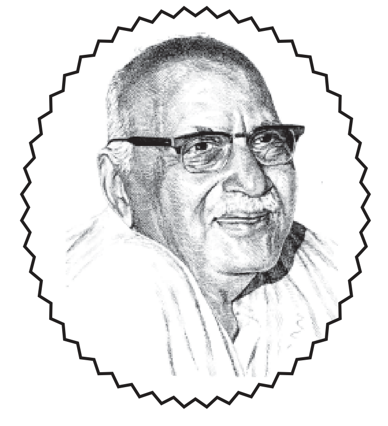

॥ श्रीहरिः ॥
कालियनागपर कृपा

हनुमानप्रसाद पोद्दार
गीतावाटिका प्रकाशन, गीतावाटिका - गोरखपुर के मूल ग्रंथ
— सरल एवं सुगम पठन के लिए नवीन प्रस्तुति।
॥ ॐ श्रीपरमात्मने नमः ॥
नम्र निवेदन
जगत्में कभी-कभी भगवत्प्रेरणासे किसी अलौकिक विभूतिका अवतरण जनमानसको नियमनकर उन्हें सन्मार्गपर प्रेरित करके भगवत्प्रेम-पथिक बनानेके लिये होता है। जिससे भगवानका निज कार्य सुचारुरूपसे चलता रहे। ऐसी ही विभूति थे भाईजी श्रीहनुमानप्रसादजी पोद्दार। यद्यपि ऐसे संतोंका कार्य प्रायः एकदेशीय होता है परन्तु श्रीभाईजीके बहुमुखी व्यक्तित्व द्वारा जो बहुआयामी कार्य हुआ वह व्यापक एवं दीर्घकालीन प्रभावकारी हुआ। उन्होंने युग-प्रवाहकी धारा मोड़कर सुमार्गपर अग्रसर किया। ‘आत्मनः प्रतिकूलानि परेषां न समाचरेत्’ के सिद्धान्तका उन्होंने अक्षरशः पालन किया । प्रसिद्ध संत श्रीकपीन्द्रजी महाराज कहते हैं-‘श्रीभाईजी तो प्रेममें राधारानी थे, उदारता आदि गुणोंमें श्रीराम थे, भोलेपनमें सदाशिव थे, अणुसे लेकर महान् पर्यन्तको जाननेवालोंमें वशिष्ट थे, भक्तिमें वे भरत थे और सत्यपर दृढ़ रहनेवालोंमें वे हरिश्चन्द्र थे। मेरा मन कहता है कि श्रीभाईजीका वपु समस्त देवगणोंके गुणोंका एक पुञ्ज था।’
वास्तवमें दैवीय गुण वही है जिसके द्वारा अपना और अपने सम्पर्कमें आनेवाले व्यक्तियोंका कल्याण हो। ऐसा तभी हो सकता है जब व्यक्ति अपने छुद्र व्यक्तित्वसे ऊपर उठकर विभु और शाश्वत जीवनसे अभिन्न हो जाय। उसके जीवनमें भगवदीयताका अवतरण हो जाय अर्थात् जीवन भगवन्मय हो जाय। श्रीभाईजीका जीवन ऐसा ही हो गया था जिसका दिग्दर्शन हमें उनके ग्रन्थ-र्न पद-रत्नाकरमें होता है-
देख रहा प्रत्यक्ष पूर्ण मैं, उतर रहे मुझमें भगवान्।
भर दे रहे अपने दिव्य गुणोंको परम उदार॥
(पद सं० ११७७)
ऐसे महापुरुषके लिये सारा विश्व भगवत्स्वरूप हो जाता है। उन्हें सर्वत्र, सबमें भगवद्दर्शन होता है। श्रीभाईजी ऐसी ही विभूति थे इसीलिये ‘सबमें भगवान्को देखना उन्होंने अपनी तीन अतुल सम्पत्तियोंमें एक माना है।
प्रभुकी परम कृपासे मैं अब देख पा रहा हूँ सर्वत्र-
प्राणि-पदार्थ-परिस्थिति--सब हैं रूप उन्हींके अत्र-परम॥
(पद-रत्नाकर पद सं० ११९७)
जिस प्रकार भगवान्ने सुतीक्षणजीके लिये कहा था-‘त्वं ममोपासनादेव विमुक्तोऽसीह सर्वतः’ (अ०रा० ३/२/३८) अर्थात् तुम केवल मेरी उपासनासे इस जीवितावस्थामें ही सब प्रकार मुक्त हो गये हो। उसी प्रकारका सत्य श्रीभाईजीके जीवनमें उद्घाटित होता है-दुःखियोनि भोगोंका कुछ भी रहा न जीवनमें संश्रेषच (पद सं० १२०२) और, जीवन्मुक्त नित्य रहता” (पद सं० ११७०) तथा, ‘प्रभुके दर्शन-स्पर्श-मिलनसे नित्य मिटे जगके सब द्वन्द्व (पद सं० ११८९)
बल्कि इससे भी आगे श्रीभाईजीका अपने ईष्टसे एकात्म हो गया था। ‘मैं उनमें, वे मुझमें, वे-मैं नित्य निरन्तर एकाकार’ (११६८) । ऐसा सम्भव है क्योंकि प्रेमाधिक्यके कारण उपास्य और उपासकमें एकरूपता हो जाती है। यही कारण था कि भगवान् श्रीकृष्ण राधाजी बन जाते थे और राधाजी श्रीकृष्ण हो जाते थे।
श्रीभाईजीने स्वीकार किया है कि भगवान् श्रीकृष्ण ही मेरे माध्यमसे अपना कार्य करते-करवाते हैं । मेरे द्वारा जो क्रिया हो रही है, उसके कर्ता भगवान् श्रीकृष्ण ही हैं। व्यक्ति विशेषके रूपमें मेरी कोई सत्ता रही ही नहीं।
तुमने जो कहलाया मुझसे, वही कहा मैंने अविकल।
तुमने जो करवाया मुझसे, वही किया मैंने निश्छल।॥
(पद सं० ११४६)
तथा, ‘ढाँचा रहा देखनेको भर, पृथक् परम आनन्दन’ (पद सं० ११३६)
उनका हृदय श्रीराधा-कृष्णका नित्य लीला-स्थल बन गया था।
‘बन गया श्याम-श्यामाका यह अन्तस् उदार निर्जन निकुञ्ज’ (पद सं० ११४४) और, ‘अन्तरमें हो रहा खेल अति मधुर विलक्षण’ (पद सं० ११२८)
ऐसा प्रतीत होता है कि इस कलियुगमें गोलोक विहारी श्रीराधा-कृष्णकी जो लीला इस मृत्युलोकमें श्रीभाईजीके माध्यमसे हो रही थी इसीका दर्शन करनेके लिये देवर्षि नारद और अंगिराजी पधारे थे। तदनन्तर सनकादि ऋषियोंसे भी श्रीभाईजीका साक्षात्कार और वार्तालाप हुआ। इससे भी यह सम्भावना सत्य प्रतीत होती है।
भगवान्को दिव्य लीलाओंका दर्शन और भावसिन्धुमें अवगाहन श्रीभाईजीके जीवनका स्वभाव बन गया था।
देख-देख मैं प्रभुको, प्रभुको लीलाको पाता आह्वाद।
नित्य-नवीन मधुरतम रसका लेता मैं दुर्लभ आस्वाद॥
(पद सं० ११८७)
ऐसे लीला-विहारी संतसे भगवानको लीला-कथाओंको सुनानेका आग्रह साधकों, सज्जनोंका बार-बार रहता। कुछ प्रेमीजनोंके आग्रहपर श्रीभाईजीने २ नवम्बर १९६३ से भगवान् श्रीकृष्णको ‘कालियनागपर कृपा’ लीलाकथाको कहना प्रारम्भ किया। उस प्रवचनमें ऐसा रस-प्रवाह बहा कि श्रोतागण आनन्दमग्न होकर अपनेको धन्य मानते । इस प्रवचनकी एक झलक देखें-‘......रुचिपूर्ण कथा-श्रवण करते। कालियनागके फणपर बालकृष्णके नृत्यके वर्णनके समय कौन-कौन नहीं नाचा? उधर तो फणपर भगवान् श्रीकृष्णका नृत्य, नागके बचावका नृत्य, हदको लहरोंका नृत्य, कालिय-पल्नियोंके निवेदनका नृत्य, तटीय सखाओंके आकुलताका नृत्य, व्रजवासियोंकी आतुरताका नृत्य, गोपियोंके संतप्त नेत्रोंका नृत्य, इनका बाबूजी द्वारा दर्शन और वर्णन चल रहा है और उधर बाबूजीके अन्तरमें कालिय-लीलाका नृत्य, उनके अधरोंपर सरस्वतीका नृत्य, उनके कण्ठमें भावावरोधका नृत्य, श्रोताओंके नेत्रोंमे जलकणों का नृत्य, वातावरणमें भगवदीय भावोंका नृत्य और कण-कणमें कथा-रसका नृत्य चल रहा है। ऐसा ही रोचक, आकर्षक और मादक वर्णन प्रतिदिन रहा।’ (माँ और बाबूजी/ पृष्ठ सं० २५०-२५१)
अप्रतिम संत श्रीभाईजीके लीला-कथा प्रवचनोंमें ऐसा प्रतीत होता कि यह आँखों देखा सद्यः विवरण है । श्रद्धालु साधकोंके आग्रहसे इन लीलाकथा प्रवचनोंको लिपिबद्ध करनेका कार्य भगवत्कृपासे चल रहा है। अबतक वेणुगीत, श्रीरासपञ्चाध्यायी, भगवान् श्रीकृष्णको मधुर बाललीलायें, यज्ञ-पत्नियोंपर कृपा और श्रीभरत-चरित्र प्रकाशित हो गये हैं। इसी क्रममें ‘कालियनागपर कृपा’ आपके हाथोंमें देखते हुए भगवत्कृपाका प्रत्यक्ष अनुभव करते हुए हर्षानुभूति हो रही है।
इन प्रवचनोंको लिपिबद्ध करनेका श्रेय श्रीवृजदेवजी दूबेको ही है। इन्होंने पूज्य श्रीभाईजीके अनेकों प्रवचनोंको लिपिबद्ध किया है।
आशा है विज्ञ पाठकोंको इसके पठन-मननसे लीला-कथा श्रवणका आनन्द, सत्संग लाभ और भगवत्प्रेम-पथपर अग्रसर होनेकी प्रेरणा और मार्गदर्शन प्राप्त होगा। इस पुस्तकमें जो त्रुटियाँ दृष्टिगोचर होंगी वह हमारी अल्पज्ञतावश अपनी हैं जिनका ध्यानाकर्षण करनेपर सुधारनेकी चेष्टा की जायेगी ।
और, अन्तमें श्रीभाईजीसे विनम्र करबद्ध निवेदनके साथ--
वस्तु, तुम्हारी तव चरणोंमें अर्पणकर, कर रहा प्रणाम
— प्रकाशक
॥ ॐ श्रीपरमात्मने नमः ॥
१. मंगलाचरण
वन्दे मुकुन्दमरविन्ददलायताक्षं कुन्देन्दुशंखदशनं शिशुगोपवेषम्।
इन्द्रादिदेवगणवन्दितपादपीठं वृन्दावनालयमहं वसुदेवसूनुम्॥ १॥
नवजलधरवर्ण चम्पको द् भासिक र्णं
विकसितनलिनास्यं विस्फुरन्मन्दहास्यम्।
कनकरूचिदुकूलं चारुबर्हावचूलं
कमपि निखिलसारं नौमि गोपीकुमारम्॥२॥
वंशीविभूषितकरान्नवनीरदाभात् पीताम्बरादरूणविम्बफलाधरोष्ठात्।
पूर्णेन्दुसुन्दरमुखादरविन्दनेत्रात् कृष्णात् परं किमपि तत्त्वमहं न जाने॥ ३॥
श्रीमम्मदन गोपालम् वृन्दारण्य पुरन्दरम्।
श्रीगोविन्दम् प्रपद्येहम् दीनानुग्रह कारकम् ॥ ४॥
“जिनके कमलके समान विशाल नेत्र हैं, दाँत कुन्द (बेलाके फूल), चन्द्रमा और शंखके समान शुभ्रवर्णके हैं, जिनके पादपीठकी इन्द्रादि देवगण भी वन्दना करते हैं, गोपबालकके रूपमें वृन्दावनकी भूमिमें विचरनवाले वसुदेवनन्दन श्रीकृष्णको मैं वन्दना करता हूँ ।”
“जिनका नवीन जलधरका-सा श्यामवर्ण है, जिनके कान चम्पाके फूलोंसे अलंकृत हैं, जिनका मन्द मुसकानसे युक्त मुख खिले हुए कमलके समान है, अपने श्रीअंगोंपर जो स्वर्णकी-सी कान्तिवाला पीताम्बर और मस्तकपर मोरपंखका मुकुट धारण किये हुए हैं, उन सबके सारभूत किन्हीं अनिर्वचनीय गोपीकुमारका मैं स्तवन करता हूँ ।”
“जिनके दोनों हाथ बाँसुरीसे शोभा पा रहे हैं, श्रीअंगोंकी कांति नूतन मेघके समान श्याम हैं, साँवले अंगपर पीताम्बर सुशोभित हो रहा है, लाल-लाल ओठ पके हुए बिम्बफलकी सुषमाको छीन लेते हैं, सुन्दर मुख पूर्णिमाके चन्द्रमाको भी लज्जित कर रहा है और नेत्र प्रफुल्ल कमलके समान मनोहर प्रतीत होते हैं, उन भगवान् श्रीकृष्णके सिवाय दूसरा कोई भी परम तत्त्व है--यह मैं नहीं जानता।”
“वृन्दावनमें विहार करनेवाले, दीनोंपर अनुग्रह करनेवाले मदनगोपाल भगवान् श्रीकृष्णकी मैं शरण लेता हूँ ।”
॥ ॐ श्रीपरमात्मने नमः ॥
२. प्राक्कथन
भगवान् श्रीकृष्णको सभी लीलाएँ परम दिव्य परम कल्याणकारिणी-मन-बुद्धि-वाणी-आत्मा एवं सबको पवित्र करनेवाली, ऋषि-मुनिवांछित बड़ी अलम्भ्य है । परन्तु उन सभी लीलाओंमें भगवान्की जो व्रजलीला है वह अत्यन्त मधुर है। भगवानका अवतार विभिन्न कारणोंसे होता है। एक कारण यह भी बताया गया है कि वे इस प्रकारके चरित्र करते हैं, इस प्रकारकी लीलाओंका सम्पादन करते हैं जिनसे अमलात्मा परमहंस मुनियोंका मन भी उनकी ओर आकर्षित होता है और वे भक्ति-प्रेम प्राप्त करते हैं। भक्तिके दो रूप हैं--एक साधन भक्ति और दूसरी साध्य भक्ति । उनके भी फिर दो-दो रूप हैं--एक वैधी और दूसरी रागानुगा। रागानुगा भक्ति अधिकांशमें ज्ञानोत्तर कालमें प्राप्त होती है। जिस भक्तिमें भगवानका मधुर मनोहर परम दिव्य प्रेम हो वह प्रेमरूपा भक्ति है।
ब्रह्मभूतः प्रसन्नात्मा न शोचति न काङ्क्षति।
इस प्रकार ब्रह्मभूत होने पर;
समः सर्वेषु भूतेषु मद्भक्तिं लभते पराम॥ (गीता १८/५४)
जब ब्रह्मभूत हो गये तब न शोक रहा न आकांक्षा रही। सर्वत्र सम ब्रह्मके दर्शन होते हैं । तब ‘मद पराम् भक्तिं लभते’। भगवान् कहते हैं कि तब मेरी पराभक्तिकी प्राप्ति होती है। और ‘भक्त्या माम् श्रीकृष्णम्’।
भक्त्या मामभिजानाति यावान्यश्चास्मि तत्त्वतः ।
ततो मां तत्त्वतो ज्ञात्वा विशते तदनन्तरम् ॥
(गीता १८/५५)
उस परा भक्तिसे, उस प्रेमाभक्तिसे भगवानके यथार्थ स्वरूपका; भगवान् जैसे जो कुछ हैं ठीक-ठीक पता लगता है-यावान्यश्चास्म। भगवान्के एक स्वरूप-ब्रह्मका तो पता लग गया। ब्रह्म भगवान्से अभिन्न नहीं, भगवानका ही जो निर्गुण निराकार अव्यक्त स्वरूप है--निष्क्रिय-निर्विशेष; वह ब्रह्म है। परन्तु ब्रह्म ही भगवानका सम्पूर्ण रूप है--ऐसा नहीं है। गीताके आठवें अध्यायके प्रारम्भमें जो प्रश्न है उनमें भगवान्के विभिन्न रूपोंका वर्णन सांकेतिक रूपमें है। उसमें ब्रह्मका वर्णन है।
“अक्षरं ब्रह्म परमं स्वभावो 5ध्यात्ममुच्यते” (गीता ८/३)
जो अक्षर तत्त्व है वह परमब्रह्म तत्त्व है।
पराभक्ति--प्रेमाभक्तिसे भगवान् जैसे जो कुछ है वैसे स्वरूपको उपलब्धि होती है। तदनन्तर-प्रवेश होता है भगवान्में-‘विशते तदनन्तरम्’।
परमहंस अमलात्मा मुनियोंके मनोंमें भक्तियोगकी--प्रेमकी स्थापना करनेके लिये भगवान्के लीला-चरित्र होते हैं। और लोगोंको आकर्षित करें इसमें तो कोई बात ही नहीं है। वे परमहंस मुनियोंको भी मोहित कर देती है। ब्रह्माको भी मोह हो गया। जिन लीलाओंको देखकरके जहाँ ब्रह्माको भी मोह होना सम्भव है वहाँ यदि ये लीलाएँ अमलात्मा मुनियोंके मनोंको आकर्षित करें तो कौन-सी आश्चर्यकी बात है। ऐसा लीला-गुण भगवानमें है।
आत्मारामश्च मुनयो निर्ग्रन्था अप्युरुक़ मे ।
कुर्वन्त्यहै तुकीं भक्तिमित्थम्भूतगुणो हरिः ॥
(श्रीमद्भागवत १/७/१०)
भगवान्के लीला चरित्रोंको सुनते-सुनते किसीका मन अघा जाय, ऊब जाय तो समझना चाहिये कि वह मन्दभागी है।
श्रीमद्भागवतके दशम स्कन्धके पन्द्रहवें अध्यायके अन्तमें कालिय नागके सम्बन्धमें कुछ वर्णन आया और शुकदेवजीने षोडश अध्यायके प्रारम्भमें इतना सा कह दिया कि-
विलोक्य दूषितां कृष्णा कृष्णः कृष्णाहिना विभुः।
तस्या विशुद्धिमान्विच्छन् सर्प तमुदवासयत ॥
(श्रीमद्भागवत १०/१६/१)
वे विभु-भगवान् श्रीकृष्ण-सर्व ऐश्वर्यशाली सर्वात्मा भगवान श्रीकृष्ण जगतके हितार्थ अवतीर्ण हुए नन्दनन्दनने उस तीव्र विषधारी कालिय नागके द्वारा जो दूषित हो गया था यमुनाका जल--कृष्णाहिना दूषितां -उसको देखकरके, उसकी विशुद्धि करनेके लिये सर्पको वहाँसे निकाल दिया। संक्षेपमें यह उत्तर दे दिया परन्तु इस उत्तरसे तृप्ति नहीं हुई परीक्षितजीकी । आगे पूछनेको इच्छा हुई तो उन्होंने शुकदेवजीसे कहा-भगवन्! यद्यपि भगवान् अचिन्त्य अनन्त सर्वसामर्थ्य शक्तिसम्पन्न हैं, समस्त शक्तियोंके मूल आकर वही हैं तो वे किसी कालिय नागके विषसे दूषित कृष्णा-यमुनाको परिशुद्ध कर दें इसमें कोई आश्चर्यकी बात नहीं है । वे सबकुछ करनेमें समर्थ हैं परन्तु मेरी ऐसी इच्छा है जाननेकी कि अगाध यमुना जल जो विषाक्त हो रहा था उसको भगवान्ने किस तरहसे विशुद्ध किया? कालिय नागको कैसे निकाला? और, इतने लम्बे कालतक कालिय नाग उसमें रहा ही क्यों? यमुनाके गर्तमें वह अपना घर बनाकरके रहना शुरू किया और दीर्घकाल तक क्यों रहा? शुकदेवजीने परीक्षितकी यह बात सुनी। फिर, परीक्षितने यह भी कहा-
“गोपालोदारचरितं कस्तृप्येतामृतं जुषन”
(श्रीमद्भागवत १०/१६/३)
महाराज ! स्वयं भगवान् श्रीकृष्ण-गोपालके अमृतोपम चरित्रोंको सुनकर कोई आजतक तृप्त हुआ है? इसलिये मैं अतृप्त हूँ। आप इस चरित्रको विशद रूपसे वर्णन कीजिये, सुनाइये। परीक्षितकी यह बात सुनकर शुकदेवजीके मनमें कहनेकी आ गयी। भगवानको लीला शक्ति जागृत हो गयी।
भगवान्के सम्बन्धमें बात छेड़नेवाले बड़े भाग्यवान् हैं और बड़े उपकारी हैं। भगवान्में किसी तरह जो वृत्तिको ले जानेमें सहायक बने उसके समान उपकारी कोई नहीं। इसलिये जब-जब शुकदेवजीसे परीक्षित लीला-चरित्रोंके सम्बन्धमें प्रश्न करते हैं तब-तब ये गद्गद हो जाते हैं । प्रश्न करते ही उस लीलामें उनका मन चला जाता है। लीलाका बड़ा सुन्दर दृश्य उनके नेत्रोंके सामने, हृदयकी आँखोंके सामने आ जाता है और, वे अत्यन्त विमुग्ध होकर गद्गद हो जाते हैं । शुकदेवजी परम ज्ञानी हैं, ब्रह्मविद् वरिष्ठ हैं परन्तु वे उपकार मानते हैं । वास्तवमें करोड़ों-करोड़ों कान होनेपर भी नित्य लाभ भगवानको लीला-कथाओंसे नहीं होता जो लोग उस लीलाकथाके रसिक होते हैं उन लोगोंका ।
॥ ॐ श्रीपरमात्मने नमः ॥
३. कालियह्रदमें भगवान्का प्रवेश
श्रीशुक उवाच
विलोक्य दूषितां कृष्णां कृष्णः कृष्णाहिना विभुः।
तस्या विशुद्धिमन्विच्छन् सर्प तमुदवासयत् ॥ १
राजोवाच
कथमन्तर्जलेऽगाधे न्यगृह्णाद् भगवानहिम्।
स वै बहुयुगावासं यथाऽऽसीद् विप्र कथ्यताम्॥ २॥
ब्रह्मन् भगवतस्तस्य भूम्नः स्वच्छन्दवर्तिनः।
गोपालोदारचरितं कस्तृप्येतामृतं जुषन्॥ ३॥
श्रीशुक उवाच
कालिन्द्यां कालियस्यासीदध्रदः कश्चिद् विषाग्निना।
श्रप्यमाणपया यस्मिन् पतन्त्युपरिगाः खगाः॥ ४॥
विप्रुष्मता विषोदोर्मिमारुतेनाभिमर्शिताः।
म्रियन्ते तीरगा यस्य प्राणिनः स्थिरजङ्गमाः॥ ५॥
तं चण्डवेगविषवीर्यमवेक्ष्य तेन
दुष्टां नदीं च खलसंयमनावतारः।
कृष्णः कदम्बमधिरुह्य ततोऽतितुङ्ग-
मास्फोट्य गाढरशनो न्यपतद् विषोदे॥ ६॥
(श्रीमद्भा० १०/१६/१-६)
शुकदेवजीने यह लीला-कथा कहना शुरू किया। शुकदेवजीने कहा--वृन्दावनमें जो यमुनाजी बहती हैं उनके दक्षिण भागमें एक जलसे भरा हुआ हृद था--सरोवर-कुण्ड था। उसमें यह विषधर सर्पराज निवास करता था। और, शायद वह जल-सतम्भनकी विद्या जानता होगा। उसने वहाँको जलराशिको स्तब्ध करके, जलको रोककर वहाँ नीचे गर्तमें अपना स्थान बना लिया। और, अपनी स्त्रियोंके साथ, सन्तानोंके साथ वह वहाँ रहता था। और, ऐसा मालूम पड़ता है कि बड़े विस्तृत क्षेत्रमें अपना प्रभाव कर लिया। परन्तु उसका विष इतना तीव्र था, विष इतना भयानक था कि वहाँ जल हमेशा उबलता रहता था। जैसे प्रबल अग्रिपर रखे बर्तनमें पानी खौलता रहता है, उबलता रहता है इसी प्रकार उसके विषकी आगसे, कालीयके विषकी अग्रिसे उस हृदका जल खौलता रहता था, उबलता रहता था, बुदबुदाता रहता और आन्दोलित होता रहता था। उस विषकी आगसे उसमें चक्करसे पड़ते रहते। और, वह विष इतना प्रबल था कि वहाँ जलके अन्दर किसी जीव-जन्तुका रहना कठिन हो गया। जलके अन्दर ही नहीं उसके विषकी आग इतनी भयानक थी कि वह उस हदमेंसे निकलकर वायुके साथ मिल जाती और उस हदके ऊपरसे उड़नेवाले पक्षियोंको विदग्ध कर देती । ऊपरसे जानेवाले पक्षी उस हदको ज्वालासे जलकर उसमें गिर पड़ते। इतना भयानक उसका विष था। इसलिये मथुरावासियोंने वहाँ आना छोड़ दिया। वृन्दावनके लोगोंने देखा कि वहाँ जाना तो मौतके मुँहमें जाना है।
भगवान्ने सोचा कि यमुनाका जल विषमय क्यों रहे? यह ठीक नहीं है । यमुनाका नाम यहाँ आया है--कृष्णा अर्थात् कालिन्दी--भगवान्की प्रेयसी -पत्नी । यमुनाका जल दूषित रहे यह भगवान्को अभिप्रेत नहीं । लेकिन वह जल इतना विषमय हो गया था कि जो आसपासके पेड़ थे वे सब जल गये थे। किसी पेड़में पत्ता तो हरा था ही नहीं उसके तने सब सूखे, जले खड़े थे। मानों वह यमुनाका तट होनेपर भी मरूभूमि जैसा--जहाँ अंकुर तक न दीखे इस प्रकार प्रतीत होता था। घासका एक तिनका भी नहीं मिलता । हरिवंश पुराणमें आया है कि यह जो हृद था वह चार कोस लम्बा था।
दीर्घयोजन विस्तारं दुस्तरं मिदशैरपि।
गम्भीरमक्षोभ्यजलं निष्कम्पामिव सागरम्॥
(विष्णुपर्व ११/४२)
देवताओंके लिये भी उसका अतिक्रम करना बड़ा कठिन। समुद्रको भाँति वह बड़ा गम्भीर था-अतलस्पर्शी । अन्य जल-जन्तु उसमें रह सकते नहीं, पक्षी उसके ऊपरसे उड़कर जा सकते नहीं । वहाँ आकाशमें उसके विषसे एक अँधेरा-सा छाया रहता। उसके भाई-बन्धु बहुत-से थे। जब उन्होंने देखा कि यह बड़ा सुरक्षित स्थान है तो वे सब वहाँपर आ गये। इसलिये एक प्रकारसे वह सर्पभूमि हो गया। विषकी ज्वालासे जर्जरित उसके तटपर भी दूर-दूरतक लोग नहीं जा सकते।
गर्मीकि दिन थे--दोपहरीका समय था। गोप बालकोंके साथ श्रीदाम, सुबलादिके साथ एक दिन भगवान् वहाँ आ निकले। साथी बालकोंको बड़ी प्यास लगी थी। सामने जलाशय दीखा तो उन्होंने जल पीनेकी इच्छासे जलका स्पर्श किया। स्पर्श करते ही वे सब गिर पड़े। उनका जीवन नाश हो गया। आगे-आगे बच्चे चल रहे थे, इतनेमें पीछेसे बच्चोंने देखा कि ये हदको ओर क्यों जा रहे हैं? ये जब भगवान्ने देखा तो दौड़े-दौड़े आये । जब दौड़कर आये तो देखा सबके सब पड़े हैं तो उनको अमृत-दृष्टिसे देखा। तब सब जीवित हो उठे। अब जीवित होनेके बाद विषका प्रभाव स्वाभाविक समाप्त हो गया। भगवान् आ गये न। बहुत जोरकी गरमी पड़ती हो और मूसलाधार वर्षा होने लगे तो एक बार भाप निकलकर गरमी शान्त-सी हो जाती है।
भगवान् अमृतमय हैं । भगवान् वहाँ पहुँच गये तो विषधरका विष तो जायेगा ही वह जो तीरपर विषको ज्वाला थी वह बहुत कुछ शान्त हो गयी। लेकिन वह इतनी भयानक थी कि बच्चे आते ही, उसका स्पर्श करते ही मर गये इसलिये वह मामूली विष नहीं था। भगवान्ने सोचा कि आज इसका उद्धार करना है। और, दूसरी बात यह थी कि यह जो कालिय नाग था यह भगवान्के पार्षद--भगवान्के वाहन गरुड़का शत्रु था। यह हमेशा गरुड़का बुरा सोचा करता था। कोई पक्षीय जातीय प्राणी भी इसके सामने आकर बचता नहीं था। भूलसे निकलकर जाता तो वह मृत्युके मुखमें गिर पड़ता। न मालूम अबतक कितने जीवोंने इस हृदके समीप आकर अपने प्राण खोये थे।
खलोंकी खलता और दुष्टोंका विनाश करके उन्हें परम अमृत रूप अपना धाम, अपना प्रेम देनेवाले भगवान हैं । भगवान्में यह गुण है कि जैसे अमृतसे कोई मरता नहीं । इसी प्रकार भगवान्से किसीका अमंगल नहीं होता है।
भगवानका एक नाम है--हतारिगतिदायकः । जिन शत्रु ओंको भगवान् मारते हैं उनको अपने धाममें-अपने घरमें भेज देते हैं । यहाँ तो भगवान्ने उनको मारा और मारते ही मानों भगवान्के हाथका स्पर्श, भगवानको कृपाका स्पर्श उससे कहता है कि अब तुम यहाँ नहीं रहोगे। तुम दुःख नहीं भोगोगे। तुम भगवान्के परमधाममें जाकर वहाँके दिव्य आनन्दका उपभोग करोगे। हतारिगतिदायकः-जो उनके साथ शत्रुता करता है--अरि--भगवान् उनको मार करके भी सद्गति देते हैं--यह भगवान्का स्वभाव है।
कालिय नाग बड़ा दुष्ट था, सज्जनपीड़क था। यह एक जगह आया है कि भगवान्ने मन ही मन संकल्प किया। अब कोई न कोई तो निमित्त बनाना ही था। वे कह दें कि हम अन्दर जाते हैं तो बच्चे जाने न दें और कहेंगे कि हम साथ जायेंगे । उन सखाओंका जो प्रेम श्रीकृष्णके लिये हैं यह प्रेम ऐसा-वैसा नहीं है।
सर्वसमर्पणमय भगवत्प्रेममें दोनों तरफ से प्रेमी और प्रेमास्पदको लीला होती है। विषयालम्बन और आश्रयालम्बन दोनों हो जाते हैं । इन बच्चोंके प्राण श्रीकृष्ण और ये बच्चे श्रीकृष्णको प्राण सदृश प्रिय । बच्चोंका जरा-सा भी कहीं अनिष्ट देखते तो उन्हें असह्य हो जाता। भगवान्ने उनके लिये आग पी ली। और, यहाँ भी बच्चोंका अनिष्ट देखकर ये कालियनागका दमन करनेके लिये इसमें कूदे परन्तु यदि ये बच्चोंसे साफ-साफ कह देते कि भैया! तुमलोगोंका बड़ा अनिष्ट किया इस कालिय ने और इसका दमन करनेके लिये मैं अन्दर कूदता हूँ। तब बच्चे न तो कूदने देते और अगर वे कूदने जाते तो कह देते कि हम साथ चलेंगे। कन्हैया! हम तुम्हें अकेला नहीं छोड़ेंगे। अरे, इतना जहर है कि किनारेपर जल स्पर्श करते ही हम लोग मर गये थे तो तुम अन्दर जाओगे तो न जाने तुम्हारी क्या गति वहाँपर हो। उन्हें श्रीकृष्णकी भगवत्ताका भान तो है नहीं।
भगवत्ता माधुर्यराजमें छिपी-छिपी लीला देखा करती है। वहाँ अगर भगवत्ताका प्रकाश हो जाय तो लीलाका आनन्द ही न आये और सारे सखा डर जायेंगे। ये डर गये थे मणिकूबर और नलग्रीवको देखकर । उन्होंने देखा--हमारा कन्हैया ऊखलसे बँधा है और हमलोगोंसे इसने कहा कि देखो, भैया! हमारी किसी तरहसे यह गाँठ खुले तो हम लोग फिर खेलें। मैया तो बाँधकर चली गयी और घरके कार्यमें लग गयी है तथा रोहिणी मैया आज हैं नहीं । वह दूसरी जगह चली गयी है और नन्दबाबा भी हैं नहीं वे गिरिराजपर चले गयें हैं। घर पर इस समय कोई नौकर-चाकर भी नहीं है तो हमें खोले कौन? तब बच्चोंने कहा कि हम अभी खोलते हैं । वह गाँठ तो उनकी अपनी लगायी हुई थी। बेचारे बच्चोंसे खुले कैसे? बच्चे ज्यों -ज्यों खोलने लगे त्यों-त्यों गाँठ और फूलने लगी परन्तु खुली नहीं । तब भगवाने कहा--अच्छा, तुम लोग एक काम करो। दूसरी चीज यह कि उनको नारदजी याद आ गये। नारदजीने इन कुबेर पुत्रोंको वरदान दिया था कि ये बेचारे वृक्ष हुए दीर्घकालसे जड़वत् खड़े हैं तो इनका उद्धार करना है। उनका उद्धार तो इनके मनमें था परन्तु ये बच्चों से बोले कि देखो भैया! गाँठ तो खुल नहीं रही है यह रस्सी ही किसी तरहसे खुल जाय तो काम बने। बच्चोंने कहा--बताओ, कन्हैया! तुम जो कहो सो करें । यह रस्सी टूटेगी कैसे? बोले-देखो, हम चलते हैं आज घसीटते हुए और तुम लोग पीछेसे ऊखलको ठेलो। हम आगेसे खीचेंगे और तुम पीछेसे ठेलोगे तो हम चलेंगे और देखो, जो सामने पेड़ है उनके बीचमें जगह है। हम वहाँ चलेंगे फिर वहाँ उनके बीचमें फाँकसे गुजरेंगे और झटका देंगे तो गाँठ टूट जायेगी । अब बच्चोंको क्या पता कि यह झटका देनेसे वह पेड़ ही टूट जायेगा । जो यमलार्जुन है वे अनन्त-अनन्तकालसे बेचारे कुबेर पुत्र वहाँपर वृक्ष बने हुए थे। सन्तकी अवज्ञाका फल उन्हें मिला था। वहाँ इनको कहा गया--धनदुर्मदान्ध। आँखवाले अन्धे तो होते ही हैं । जिनके पास धन बहुत ज्यादे होता है संसारमें-संसारका अर्थ-धन, अधिकार, पद ये सब उस एकमें ही सम्मिलित हैं वे लोग दुर्मदान्ध हो जाते हैं। ये उस मदमें ऐसे अन्धे हो जाते हैं कि किसीको कुछ समझते ही नहीं हैं ।
ये कुबेर पुत्र इतने अन्धे हो गये थे कि वे एक सरोवरमें स्नान कर रहे थे--क्रीडा कर रहे थे यक्ष-बालिकाओंके साथ और उधरसे नारदजी निकले । वे बालिकायें बेचारी सब बाहर निकल गयी और ये उसी प्रकार निर्लज्ज भावसे खड़े रहे । नारदजीने सोचा कि ये तो अन्धे हो गये हैं । इन्हें तो धनदुर्मदान्धताका रोग हो गया है। इसलिये इनका उपचार करना चाहिये। रोगके अनुकूल दवा होती है। यह वहाँपर प्रश्न आया है कि नारदजीने वृक्ष होनेका श्राप क्यों दे दिया? सन्तोंको तो गुस्सा आता नहीं है। और वास्तवमें जो क्रोधके वशमें हो जाते हैं वे सन्त नहीं । और, नारदजी सन्त नहीं है यह तो कहा नहीं जा सकता। भगवान् स्वयं उन्हें अपना भक्त स्वीकार कर चुके हैं । अपने श्रीमुखसे कह चुके हैं कि ये मेरे भक्त हैं। नारदजीको गुस्सा आया क्योंकि गुस्साके बिना श्राप देते कैसे? क्रोध कैसे आया? वहाँपर इतनी मीमांसा की गयी है कि वह गुस्सा नहीं था। मलेरियामें कुनैन दी जाती है न! और, अंग सड़ जानेपर ऑपरेशन भी होता है। उसमें न गुस्सा है, न खून है, न हत्या है और न द्वेष है। इसी प्रकारसे रोगके अनुसार दवा होती है । ये हैं धनदुर्मदान्ध तो इनके लिये दवा क्या है? वहाँपर आया है दारिद्रयं परमं औषधम्। धनदुर्मदान्धोंके लिये दरिद्रता उनकी आँखोंको खोलनेवाला अंजन-सुरमा है। जिनकी आँखें धनके मदमें अन्धी हो गयी। उन लोगोंकी आँखें खोलनेके लिये दारिद्र्य ही अंजन है, परम अंजन है । यह बढ़िया-से-बढ़िया सूरमा है। दरिद्रता भी कैसी? कि जिसमें शक्ति भी न रहे कुछ करने-कराने की । वे ठूँठकी तरह वहाँपर खड़े हैं । कोई चेतन प्राणी होते, पशु ही होते, पक्षी ही होते तो उड़-उड़ाकर, चल-फिरकर कुछ उपाय खोजते परन्तु इन्हें वृक्ष बना दिया। यह इनपर नारदजीने कृपा की । नारदजीकी कृपाका स्मरण हो आया भगवानको कि इनका आज उद्धार करना है।
इसलिये बच्चोंसे ये कहकर ऊखलको लेकर चले आगे। वहाँपर जाकर ऐसे निकले कि उसको टेढ़ा फँसाया। उन्हें तो दूसरा कर्म करना था। वहाँ भगवान्की भगवत्ताका जरा-सा ऐश्वर्य प्रकट हो गया । ऐश्वर्यका जरा-सा झटका लगते ही वे वृक्ष जो बहुत दिनोंके जीर्णमूल थे यद्यपि वे बड़े विस्तृत मूल वाले थे परन्तु ये टूट पड़े और टूटते ही दो बड़े तेजस्वी सूर्य-सा प्रकाश लिये हुए देवता निकले तो बच्चे सब डर गये। वे बोले-ये कौन इसमेंसे निकले हैं? अब जरा अलग चले चलो। वे सब अलग जाकर दूर खड़े हो गये । वे वहाँसे देखने लगे। अब उन कुबेर पुत्रोंने स्तवन किया। भगवान्ने उनको आश्वासन दिया। उन्होंने भगवान्के चरणोंमें दण्डवत्, प्रणाम किया, प्रदक्षिणा की। फिर उन्होंने देखा कि भई, कहीं भक्तापराध न हो जाय। ये सब भगवानके सखा डर रहे हैं। और, कहीं भगवानको मालूम हो जाय कि इन्होंने खड़े-खड़े हमारे सखाओंको डरा दिया तो और बड़ा अपराध होगा। इसलिये जल्दीसे भाग चलो। वह जलकी कथा बादमें यह बड़ी सुन्दर दामोदर लीला है। भगवान्का ऐश्वर्य भी यदि बच्चे देख लें तो डर जायँँ। भगवान् यह कह दें कि भैया! हम इनको मार देंगे, हमारेमें बड़ी ताकत है हम भगवान् हैं। यदि भगवान् हैं फिर हमारे मित्र कैसे? फिर हम तो तुमसे डरेंगे। साथमें ऐसे खेलेंगे कैसे?
एक चर्चा बड़ी सुन्दर आती है। एक दिन श्यामसुन्दर गोपांगनाओंके साथ थे। उनको तो खेल करना है। इसलिये कहीं निकुञ्जसे आगे निकल भागे और दूसरे निकुञ्जमं जाकर वहाँ छिप गये। वे फिर ढूँढ़ते-ढूँढ़ते वहाँ पीछेसे पहुँची । अब इन्होंने देखा कि अब तो पकड़े गये। तब चतुर्भुज बन गये। चतुर्भुज भी वही हैं और द्विभुज भी वही हैं। व्यापक ब्रह्म भी वही हैं। सच्चिदानन्द परमात्मा भी वही हैं ।
“ब्रह्मेति परमात्मेति भगवानिति शाब्द्यते”
(श्रीमद्भागवत १/२/११)
जब ये गोपियाँ वहाँ पहुँची और देखा कि नारायण हैं तब हाथ जोड़कर खड़ी हो गयीं । और, स्तवन करने लगीं । वे सोचीं कि अब इनके सामने बोलें कैसे? ये तो भगवान् खड़े हैं। यशोदा मैया जिस नारायणकी पूजा करती हैं वे नारायण खड़े हैं। वे हाथ जोड़ीं। भगवानने कहा--क्यों? वे बोलीं--हम तो श्यामसुन्दरको देख रही थीं वे मालूम नहीं कहाँ चले गये।
माधुर्यमें ऐश्वर्यके रूपको देखकर रसभंग होता है। इसलिये भगवानने कहा--
“अत्रोदकस्तम्भविद्याकृतावकाशप्रकाशमानहृदिनीहृदस्थितस्वसदने
कलियाख्यमन्द दंदशूकस्तिष्ठति।”
(श्रीगोपालचम्पूः)
‘भैया ! यह कालिय नाग जो है वह जलका स्तम्भन करके इसमें रहता है । और, देखो न! इसकी ज्वालासे सारे पेड़ पत्ते जल गये हैं।’ परन्तु वहाँ एक कदम्बका पेड़ है वह जला नहीं है। वह ज्यों-का-त्यों खड़ा है। भगवान्ने फिर कहा--भैया! ये तुम देख रहे हो न! यहाँ कोई पेड़ खड़ा है? बोले--नहीं। परन्तु देखो ! एक यह पेड़ खड़ा है न। यह कदम्बका पेड़ ठीक किनारे पर है परन्तु यह अभीतक सूखा नहीं है। इसके वही हरे-हरे पत्ते हैं। सखा बोले--कन्हैया ! यह अबतक क्यों नहीं सूखा? क्या हो गया? कैसे नहीं सूखा? तब भगवान्ने कहा-देखो! एक दिन गरुड़ इधरसे जा रहे थे। वे अमृतका कलश लिये हुए थे। विषकी ज्वाला जब उठी तो कलश जरा हिल गया तो उसमेंसे अमृतको कुछ बूँदें गिर गयीं । वह अमृत कहीं इसके कोटरमें रह गया इसीलिये यह नहीं जलता है । बच्चोंने कहा--कन्हैया! यह तो बड़ी विचित्र बात तुमने बताई । भगवान्ने कहा--तुम लोग अगर कहो तो मैं जाकर उसका पता लगा लूँ। पेड़पर चढ़ जाऊँ और देखूँ कि वह अमृत कोटरमें कहाँ छिपा हुआ है। वह मिल जाय तो ले आवें। अब इनको तो यह पता नहीं कि ये ऊपर चढ़ रहा है कूदनेके लिये। यह कहकरके बच्चोंसे बोले-तुमलोग यहाँ खड़े रहो।
“कोटरपिठरे स्फुटं तदनवद्यममृतमद्यापि विद्यत इति प्रसह्याहमारुह्य पश्यानि।”
(श्रीगोपालचम्पूः)
मैं ऊपर चढ़कर देख रहा हूँ कि वह कहाँ है। किस कोटरमें वह अमृत कहाँ छिपा हुआ है। तुम लोग जरा दूर-दूर चले जाओ। पास रहना ठीक नहीं ।
“भवन्तस्तु गाः किंचिद्टूरचरतया चारयन्तश्चरन्तु।”
(श्रीगोपालचम्पूः)
तुम लोग जरा दूर जाकर इन गायोंको चराओ और मैं जरा ऊपर जाकर देखूँ कि वह अमृत कहाँ है?
तब बच्चोंने कहा--यह ठीक है। तुम जाओ पता लगाओ। बच्चोंको क्या पता कि यह वहाँसे कूदेगा। गोपबालकोंको तो ये आश्वासन दिया और देकरके आप चढ़ने लगे कदम्बके ऊपर। उनसे कहा कि जाओ, जरा दूर चले जाओ । वे बेचारे बात मानकर जाने लगे और वे कुछ देख नहीं पाये और ये हठात ऊपर जा चढ़े। गोपबालक पूरा-पूरा देख पाते तब तो नहीं चढ़ने देते । कुछ चढ़ ही जाते साथ परन्तु इनको तो दूर भेज दिया। ये बेचारे मुँह मोड़कर उधर चलने लगे और इधर कह दिया कि अमृत खोजने जा रहे हैं इसलिये इतनी चिन्ता ही नहीं रही । और, अमृत है ही जब समीपकी घास नहीं जलती । बच्चे कुछ आश्वस्त भी थे। अब श्रीकृष्ण ऊपर चढ़ गये। बच्चोंने कहा-देखो, ये कहाँ ऊपर चढ़ गया। अब इन बच्चोंको बड़ी चिन्ता लगी। बच्चोंके मनमें आया कि इस कदम्ब वृक्षपर अमृत है। परन्तु रहा कैसे? इसका भाव दूसरा है। भाव इसका यह है कि-
“कदम्बमिति भाविना श्रीकृष्णचरणस्पर्शभाग्येन एतस्त्तीरे विप्रतः। अमृतमाहरता
गरुत्मता क्रान्तत्वादिति च पुराणान्तरम्।”
(भावार्थदीपिका)
श्री श्रीधरस्वामीने इसको ऐसे लिखा है कि कालिय हृदका एक-एक कण भयानक विषसे युक्त था। उसके तटपर एक घासका तिनका भी नहीं रह पाता था बिना जले । तब भी यह कदम्बका वृक्ष नहीं जला। क्यों नहीं जला? कहते हैं कि इसका कारण यह है कि किसी समय भगवान्ने ऐसा कह दिया था कि हम इस कदम्बपर चढ़ेंगे। भगवान् श्रीकृष्ण कदम्बके पेड़पर चढ़करके इस पेड़से कालीय छृदमें कूदेंगे। तब कदम्ब वृक्षको श्रीश्यामसुन्दरका चरण-स्पर्श प्राप्त होगा। भविष्यमें चरण-स्पर्श प्राप्त होगा--इस बातका इतना प्रभाव हुआ, इतना उसका सौभाग्य हुआ कि उसे विष जला नहीं सका।
कहते हैं कि जिन लोगोंने श्रीकृष्णके चरणोंका स्पर्श प्राप्त कर लिया वे लोग संसारकी ज्वालासे रहित हो जायँ, उनकी आग सदाके लिये शान्त हो जाय--यह कौन सी बड़ी बात है। परन्तु जो सुदूर भविष्यमें--बहुत आगे चलकर श्रीकृष्णके चरणोंका स्पर्श करनेकी जिनकी सम्भावना भी हो गयी उनसे भी अमंगल हट जाते हैं । श्रीकृष्णके चरणोंका स्पर्श प्राप्त करेगा--यह पेड़--यह बात निश्चित हो चुकी थी । इसलिये कालिय नागका तीव्र विष इस कदम्बको जला नहीं सका। कदम्ब पर उस ज्वालाका कोई असर नहीं हुआ। कहते हैं ये तो उनकी बात है जिनके मनमें चरण-स्पर्श करनेकी इच्छा नहीं । इच्छा कभी थी नहीं क्योंकि जड़ पेड़ था और प्रेमकी तो कोई बात ही नहीं । ये बेचारा स्थावर, जंगम प्राणी भी नहीं । जो लोग भगवानके चरणोंमें प्रेम करके उनके चरणोंका स्पर्श करते हैं और करना चाहते हैं, उनकी बात तो बहुत-बहुत दूर है। ये बच्चे तो ऐसे-ऐसे रोज स्पर्श करते हैं। रोज चरणोंका स्पर्श पाते हैं, नित्य सहचर हैं। इनको कालियका विष व्यापे ये तो कोई बात नहीं। यह तो भगवान्ने लीला करनेके लिये एक बार इनको मूर्छित किया। कहते हैं कि भगवान् यहाँ जो कदम्बपर ऊपर चढ़े इसीलिये कि भगवान्के चरर्ण-स्पर्श होनेका उसको एक वरदान भी मिला हुआ था।
भगवान् कदम्ब वृक्षके ऊपर चढ़ गये। सुदाम, सुबलादि जितने थे वे बेचारे गाय चरानेके लिये दूर नहीं जा सके । उनके मनमें वहम आया कि यह बड़ा चञ्चल है, ऊधमी है, कहा मानता तो है नहीं। मैया हम लोगोंको रोज समझाकर भेजती हैं कि देखो, भैया! इसका ख्याल रखा करो। और, आज संयोगसे दाऊ साथ नहीं हैं । अकेले इसीलिये आये थे कि दाऊको साथ लाते तो कहीं लीलामें विघ्न पड़ता। दाऊजी कहते तुम रहो बाहर, हम ही करेंगे । परन्तु इन्हें तो कालिय नागको पल्नियोंपर कृपा करनी थी । भगवान्का एक उद्देश्य नहीं था न। एक लीलामें न मालूम कितनोंका काम बनता है, कितनोंका उद्धार होता है । आज दाऊजीको दूसरे कामपर लगा दिये और बोले-भैया! हम इधर जाते हैं। आज अकेले ही आये । बच्चोंके मनमें था कि मैयाने इसे सम्भालनेके लिये कहा है और दाऊजी आज साथ नहीं हैं । यह पेड़पर चढ़ तो गया और न मालूम क्या करेगा? योगमाया लीलाका सारा रंगमंच बनाती है । फिर ये उसमें नाट्य करते हैं। बच्चे तो खड़े देखते रहे और उनकी चंचलता स्तब्ध-सी हो गयी। खड़े देखते हैं, न रोकते हैं, न कुछ कहते हैं। केवल-केवल खड़े देख रहे हैं, नहीं तो आकर ऊपर चढ़ जाते। उन्हें नीचे उतारते परन्तु आज अचिन्त्य महाशक्तिने प्रकट होकर चञ्चल बालकोंको स्तब्ध कर दिया, अचञ्चल कर दिया और वे उधर देख ही नहीं सके। केवल आँख दो रहीं, वे क्या कर रहे हैं यह देख नहीं सके । इतनेमें ये ऊपर जा चढ़े । और, बहुत ऊँची शाखापर जाकर उस विषसे खौलते हुए जलमें भगवान् कूद पड़े।
भगवान्का सानिध्य प्राप्त करना बड़ा कठिन है । होता नहीं है । ये जितने भगवान्के शत्रु माने जाते हैं ये सबके सब भी महाभाग्यवान् होते हैं । भगवान्की शक्ति ही सबका नाश कर दे। उन्हें कौन रोक सकता है। परन्तु जो भगवान्के हाथसे स्वयं उनका स्पर्श पाकर मरना-तरना चाहते हैं उनके लिये, वे दुष्कृत भी बड़े सुकृत हैं । उनकी दुष्कृति जो भगवानके द्वारा ही कटे ऐसे उनके सुकृत हैं । ऐसे वे भगवान्को चाहने वाले हैं । ये जितने भी असुर हैं जिनका भगवानके हाथों उद्धार हुआ, बध हुआ तो नहीं कहना चाहिये, उद्धार हुआ। ये सबके सब भी बड़े भाग्यवान् थे।
कालिय नागका भी कितना बड़ा भाग्य था कि भगवान् आज उसके फणोंपर नाचेंगे। लोग भगवानके चरणको धूलि मस्तकपर रखना चाहते हैं परन्तु वह धूलि मिलती नहीं। ये जब लीला करते हैं; लीला राज्यमें जब कहींपर इनके चरण टिकते हैं तो अनन्त-अनन्तकाल तक युगोंतक उस भूमिको तीर्थ मानकर, उनके रजकणोंको परम पावन मानकर लोग वहाँ जाते हैं । वृन्दावनमें, अयोध्यामें आज तो श्रीकृष्ण उस रूपमें तो नहीं हैं। वे सभी जगह हैं और वहाँ हैं भी लेकिन वे तीर्थ क्यों बने? इसलिये कि भगवान्ने वहाँ लीला की । वहाँके रज-कणमें, वहाँके जलकणमें, वहाँकी वायुमें, वहाँके वातावरणमें सब जगह अनन्तकालके लिये मानो भगवान् उनके साथ मिल गये सदाके लिये । भगवानके चरणोंका प्राप्त होना सहज बात नहीं है। जिनकी चरण-धूलिका प्राप्त होना सहज नहीं । रज-कणका प्राप्त होना बड़ा दुर्लभ । वे भगवान् स्वयं कालियके घर जाकर उसके विषकी परवाह न करके और बिना चढ़ाये, आदरपूर्वक उसने प्रणाम किया हो कि आप हमारे सिरपर पैर रखो ऐसी बात नहीं थी। बलि बेचारेने तो कह दिया था कि महाराज! सिरपर पैर रखकर नाप लो। परन्तु यहाँ तो वह बात थी नहीं । यहाँ तो वह काटने दौड़ता है। काट लेता है। बल्कि सिरपर पैर रखनेके बाद भी वह काटनेकी चेष्टा करता है। लेकिन भगवानको कृपा देखो । कैसे वे कृपामय हैं । विषधर सर्प काटनेको दौड़ता है, काटता है और स्वयं उसके फणोंपर चढ़कर ऐसा नृत्य करते हैं। आजतक वैसा नृत्य नहीं हुआ। बहुतसे नृत्य हैं-ताण्डव हैं, लास्य हैं। न मालूम कितने नृत्य हैं परन्तु हजारों-हजारों फणवाले नागके सिरपर कोई तालके साथ नृत्य किया हो आजतक, ऐसा नहीं हुआ। ये नहीं कि बेताल नाच हो जाय। वे फण भी उठते थे तालसे। जो फण ऊपर उठता उसीपर पैर। उसको दबाते फिर दूसरा उठता फिर उसपर पैर रखते।
इस प्रकारसे कालिय नागके मस्तकोंको अपने चरणरजसे पवित्र- पावन बना देनेके लिये भगवान् अन्दर जलमें घुसे। इसलिये कालिय नागके समान पावन कौन होगा, भाग्यशाली कौन होगा? परम पवित्र कौन होगा? जिसके मस्तकपर अपने आप आकर भगवान्के चरण नाचते हैं । नाचनेके लिये भूमि चाहिये । नृत्य हर जगह नहीं होता। वह भगवान् शंकरका-‘रूद्रका जो काल नृत्य होता है वह तो ऊबड़-खाबड़ जमीनपर होता है परन्तु उसमें भी ताल रहती है साथ । उसमें संहारकी ताल होती है। जैसा वेष वैसा नाच। उस समय उनका जो ताण्डव होता है वह जगत्-विध्वंसक है। उसकी ताल दूसरी है। यहाँ विध्वंसक है किस चीजका? यह कालियकी विष-बुद्धिका विध्वंसक नृत्य है। कालिय फिर पवित्र हो गया। उसमें जहर फिर रहा होगा, कालिय था ही परन्तु उसके मनका जहर मिट गया। उसके हृदयमेंसे जो सारी विष-बुद्धि थी, विषाक्त जो उसका हृदय था--अन्तर्देश वह परम पवित्र अमृतमय हो गया । यह आगे आयेगा जब भगवान्के साथ उनकी बातचीत होती है तब।
भगवान्के चरणोंका स्पर्श करनेके लिये मानो कालियने अपने सिरको, अपने मस्तकोंको नृत्य-भूमि बनाया। यह कितना सौभाग्य है। भगवान् नाचनेके लिये किसी जगहको, किसी स्थलको वह भी जो नरम-नरम था उसे चुना। नागोंका जो चर्म होता है वह बड़ा कोमल होता है। कड़ाईमें भी चिकनापन रहता है। और उस समय भगवानका चरण-स्पर्श होते ही सारी कठिनता मिट जाती है। भगवान् जब अवतारकालमें पृथ्वीपर चलते हैं उस समय जहाँ-जहाँपर वे जाते हैं वहाँ प्रकृति देवी स्वयं उनका स्वागत करनेके लिये अपने सारे साजोंसे सजकर साथ-साथ आगे-आगे चलती हैं। जिस भूमिपर भगवान् जानेवाले हैं वह भूमि कोमल हो जाती है । वहाँके तृण मखमली बन जाते हैं। वहाँ शीतल-मन्द-सुगन्ध वायु बहने लगती है। अपने आप सारा वातावरण वहाँपर परम शान्त, परम मधुर मनोहर, सुरभित सुगन्धित हो जाता है।
कालिय नागके सिर-उसके फण आज भगवान्को नृत्य भूमि बने। नृत्य प्रांगण बन गये, आँगन बन गये। वहाँ भगवान् नाचते हैं। कालिय नागके समान अचिन्त्य सौभाग्य किसका कहा जाय?
भगवान् उस छृदमें कूद पड़े । उनके कूदते ही शुकदेवजीके मनमें आया कि आ हा! कितनी कृपा है श्यामसुन्दरकी। कालिय नागको, विषवालेको अमृतमय बनानेके लिये ये स्वयं विष-हृदमें कूद पड़े । कुछ देरके लिये कालिय नागके सौभाग्यकी चिन्ता करते हुए शुकदेवजी महाराज मौन होकरके भगवान्के वात्सल्यका उनकी कृपाका, उनके सहज सौहार्दका ध्यान करने लगे।
॥ ॐ श्रीपरमात्मने नमः ॥
४. श्रीकृष्णकी जल-क्रीड़ा
सर्पहृदः पुरुषसारनिपातवेग
सं क्षो भितोरगविषो च्छ्र सिताम्बुराशिः ।
पर्यक्प्लुतो विषकषायविभीषणोर्मि
धावन् धनुःशतमनन्तबलस्य किं तत्॥
तस्य हृदे विहरतो भुजदण्डघूर्ण-
वार्घोषमङ्ग वरवारणविक्रमस्य ।
आश्रुत्य तत् स्वसदनाभिभवं निरीक्ष्य
चक्षुःश्रवा समसरत्तदमृष्यमाणः॥
ततं प्रेक्षणीयसुकुमारघनावदातं
श्रीवत्सपीतवसनं स्मितसुन्दरास्यम् ।
क्रीडन्तमप्रतिभयं कमलोदराङ्घिं
सन्दश्य मर्मसु रुषा भुजया चछाद॥
तं नागभोगपरिवीतमदृष्टचेष्ट-
मालोक्य तत्प्रियसखाः पशुपा भूशार्ताः।
कृ ष्णे ऽर्पितात्मसुहृ दर्थक लत्रकामा
दुःखानुशोक भयमूढधियो निपेतुः ॥
गावो वृषा वत्सतर्यः क्रन्दमानाः सुदुःखिताः।
कृष्णे न्यस्तेक्षणा भीता रुदत्य इव तस्थिरे ॥
(श्रीमद्भागवत १०/१६/७-११)
भगवान् श्रीकृष्ण अनेक ऐश्वर्य निकेतन अपने ऐश्वर्यको गोपबालकों के सामने छिपाकर खेल ही खेलमें कमर कसकर फेंटा लगाकर कदम्बके ऊपर जा चढ़े । उनसे यह कहकर ऊपर गये कि विष हृदके तीरपर रहकर भी यह कदम्बका वृक्ष जल नहीं रहा है। अमृत लेकर जाते हुए गरुड़के घड़ेसे कुछ अमृत इसपर गिर गया था। इसलिये यह जल नहीं रहा है। अमृत कहाँ है उसको जरा खोजें और उस अमृतको ले आवें तब यहाँ सब जगह बिखेर दें। इससे यहाँ जो पशु-पक्षी आते हैं वे मर जाते हैं तब नहीं मरेंगे। यह कदम्ब वृक्ष नहीं मर रहा है न। भगवान्ने बच्चोंसे यह कहा।
सिद्धान्तको भावनावाले भक्त कहते हैं कि किसी ऋषिके द्वारा कभी यह कह दिया गया था कि उस कदम्बसे कि तुम्हारे कलेवरसे श्रीकृष्णका चरण-स्पर्श भविष्यमें कभी होगा। चरण-स्पर्श हो जानेपर तो जलन मिट ही जाती है। भविष्यमें चरण-स्पर्श होगा यह जिसका सौभाग्य होनेवाला है उसके भी समीप जलन नहीं आती है । विषने इसलिये उस वृक्षको जलाया नहीं । वृक्षके तमाम पत्ते ज्यों -के-त्यों हरे-भरे रहे।
श्रीकृष्णने बच्चोंसे कहा--तुम लोग जरा दूर जाकर गायोंको चराओ और मैं जरा कदम्बके ऊपर देख आता हूँ। इसलिये भेज दिया कि मैं उस सरोवरमें कूदूँ और पानी उछले, उसमें जहर भरा हुआ है ही वह तट प्रदेशपर आयेगा। उसका जहर कहीं बच्चोंको लग न जाय। इसलिये भी दूर भेज दिया। और, इसलिये भी कि दूर रहेंगे तो चढ़नेमें रोकेंगे नहीं । बच्चे कुछ दूर गये और ये चढ़ गये ऊपर । बच्चे देखते रहे परन्तु देखनेपर भी इनकी योगमायाने बच्चोंपर प्रभाव डाल दिया जिससे ये देखते रहे परन्तु कुछ बोले नहीं । बच्चोंने एक टकटकी लगाकर देखना तो शुरू कर दिया। परन्तु उनमेंसे किसीने उन्हें रोका नहीं, निवारण नहीं किया कि तुम मत चढ़ो। अथवा तुम चढ़ोगे तो हम साथ-साथ चढ़ जायेंगे--यह नहीं कहा।
भगवान् ऊपर जाकर कमर कसकर तो गये ही थे। ऊपर जायँ और यह कपड़ा फँस जाय, कहीं फहराता रहे तो? इसलिये कमर बाँध ली । बच्चोंके खेलमें, खेलकी तरहसे कमर बाँधकर और अपना दुपट्टा जनेकऊकी तरह बाँध लिया। पगड़ी इत्यादि जरा ठीक करके चढ़ गये कदम्बपर। कदम्ब वृक्षसे उस अगाध विष जलकुण्ड--सरोवरमें कूदे । उसमें कितना गहरा पानी था यह कहा नहीं जा सकता। उसके नीचे कालियने जलका स्तम्भन करके अपने रहनेका स्थान बनाया था। और, उसकी रक्षामें हजारों-हजारों विषधर सर्प वहाँ आकर रहने लगे थे। उनका एक नगर बन गया था उसके अन्दर। वह सर्प नगर बड़ा विस्तृत था और उसके ऊपर तमाम जलराशि। उस कालिय विषसे परिपूर्ण हृदमें भगवान् कूद पड़े।
कहते हैं कि वह बहुत गहरा था, उसमें अत्यधिक जल था और वह निरन्तर कालियके विषसे उबलता रहता था। उसमेंसे हरी, नीली और काली विषकी तरंगे निरन्तर उठा करती थीं। जब वह पानी उबलता तो उसके साथ-साथ विष-तरंगे उठा करती थी। वह इतना गहरा था कि यदि पहाड़ भी उसपर टूट पड़े तब भी उसमें कोई हलचल मचे, ऐसी बात नहीं थी। लेकिन ये छः वर्षके शिशु--देखनेमें छः वर्षके थे परन्तु जब उसमें कूदे तो इनके पतनके वेगको वह हृद सहन नहीं कर सका । बस, इनके गिरने मात्रसे ही वह ऊपरसे लेकर नीचे तलतक सारा हृद विक्षुब्ध हो उठा। सारा-का-सारा हिल उठा। ऊपर तो तरंगे आती थीं परन्तु नीचे जल प्रशान्त था। जल स्तम्भन किया था जिससे वह जल उन साँपोंको कोई तकलीफ न दे। वह सारा विक्षुब्ध हो उठा और नीचे तक उसका सारा भवन हिल उठा और ऐसी जोरकी उसमें उछाल आयी, तरंगें निकलीं कि चार सौ हाथ बाहर तक वहाँकी भूमि जल प्लावित हो गयी। गोपबालकों और गायोंको तो इन्होंने पहले ही दूर भेज दिया था। इसलिये वह विष जल उनका स्पर्श तो नहीं कर सका लेकिन चार सौ हाथ तक वह जल फैल गया।
शुकदेवजी महराज संकेत करते हैं कि देखो, जो भगवानका अनन्त ऐश्वर्य है-अनन्त शक्ति, सामर्थ्य, बल और महिमा है वह तो कहीं लुप्त तो हो नहीं गया है। यद्यपि वे भगवान् स्वयमेव पराधीनता स्वीकार करके लीला रसास्वादनके लिये इन गोप-गोपियोंके विशुद्ध प्रेमसे विमुग्ध होकर गोप-शिशुके रूपमें लीला कर रहे हैं। छः वर्षके बच्चे जैसे करते हैं, जैसे खेलते हैं, जैसे भोली-भाली बातें करते हैं, जैसे भोले-भाले खेल खेलते हैं । लड़ते-झगड़ृते हैं, नाचते-कूदते है इसी प्रकारसे वे गोप-गोपियोंके विशुद्ध प्रेमसे विमुग्ध भगवान् उनके माधुर्यका रसास्वादन करके उनको अपने स्वरूपका सुख देनेके लिये गोप शिशुके रूपमें लीला कर रहे हैं। परन्तु यह होते हुए भी उनके एक-एक रोममें अनन्त-अनन्त कोटि ब्रह्माण्ड विद्यमान हैं। कभी-कभी ऐश्वर्य प्रकट भी होता है। मृद-भक्षण लीलामें जब इन्होंने मिट्टी खायी तब माँने उनके मुँहमें विश्व ब्रह्माण्ड देखा। बच्चोंके साथ खेलनेमें तो वे हो जाते हैं बड़े भोले और उनका कलेवर हो जाता है बड़ा हल्का-मृदु कुसुम--फूलसे भी अधिक कोमल और फूलसे भी अधिक हल्का। फूल क्या रूईके फाहों जैसा हल्का बल्कि उससे भी अधिक हल्का जिसकी कोई उपमा नहीं हो सकती जिससे माताके और उन बच्चोंके कंधेपर जा चढ़े । बच्चोंको अगर बोझ लगे तो वे उठाकर फेंक दें तब तो सारा खेल ही बिगड़ जाय। परन्तु बच्चोंको तो आनन्द आता है, गुदगुदी होती जैसे कोई फूल सा बड़ा कोमल-कोमल स्पर्श लगे बच्चोंको। खेलमें तो बच्चोंके लिये कुसुमकी अपेक्षा भी कोमल और रुईकी अपेक्षा भी हल्के रहते। परन्तु वही जब असुर-निग्रहादिको लीला करते हैं तो एक असुरके कन्धे पर जा चढ़े । त्रृणावर्तने उठा लिया उनको तो ऐसा मालूम पड़ा कि मानो कोई वज्रका पहाड़ टूटकर आ पड़ा हो और वह बोझ सह नहीं सका। करोड़ों -करोड़ों वज्र-सारके समान इनका कठिन और बोझल कलेवर बन जाता है। ये दोनों प्रकारकी लीलाएँ करते हैं। जहाँ असुर-निग्रह लीला है- असुरोंपर कृपा करनेकी लीला है वहाँ भगवानका ऐश्वर्य इनसे छिपा हुआ है । गोप बालकोंसे, गव्रजवासियोंसे वे ऐश्वर्यको छिपाये रखते हैं । वह प्रकट होता है असुरोंके लिये। परन्तु इनको मालूम होता है कि हमारे साथी हैं । इन्हें मालूम होता है छोटे-से, नन्हेंसे कन्हैया हैं। और, उन्हें मालूम होता है कि कोई बड़ा भयानक वज्रसार है।
यहाँ ये अत्यन्त कुसुम, कोमल परन्तु वहाँ तो भगवान् अनन्त कोटि-कोटि वज्रसारके भारको लिये हुए प्रकट होते हैं। गोप बालकोंके आनन्दको बढ़ानेके लिये भगवान् जब ऊपर चढ़ने लगे तो नानाप्रकारसे उन्होंने अपनी भंगिमाएँ दिखायीं। वे आँख मटकाने लगे और हँसने लगे। उन्होंने कहा था-देखो, ऊपर चढ़कर जायेंगे और उस अमृतका कहीं पता लगाकर, उस अमृतको तुम लोगोंपर बरसा देंगे। तब यह विष जल हमेशाके लिये अमृत हो जायेगा। देखो, पता लगाते हैं। बच्चोंने कहा-कन्हैया! कहीं कुछ हो जाय? भगवान्ने कहा--हो क्या जायेगा? देखो, कमर कसकर जा रहे हैं। कमर कस ली। फिर, बच्चोंने कहा--मुरली हमें दे जाओ । श्रीकृष्णने कहा-दे क्यों जायें? देखो, इसे कमरमें कस लिया है। यह गिरेगी नहीं । कहीं वहाँ बजानेका ही कार्य पड़ जाये। अब भगवान्ने मुरली बाँध ली और फेंटा खोंस लिया। कमर कस करके वे काली छृदमें जा गिरे।
बच्चोंने तो देखा कि यह फूल-सा कोमल है । अब, बच्चे थोड़ी देरके लिये विषको भूल गये। बच्चोंने देखा कि इसको खेलना आता है। देखो, यह बड़ा चालाक है। हम लोगोंको साथ ले नहीं गया और अब यह अकेले जलमें तैरेगा, मौज करेगा। चलो, थोड़ी देर देखते हैं उसके बाद कहेंगे कि तुम भी बाहर आओ नहीं तो हम लोग भी आकर जलमें तैरेंगे। साथ खेलेंगे। इस प्रकारसे बच्चोंके मनमें यह बात आयी और वे गये जलके अन्दर । अन्दर जाकर क्या किया उन्होंने कि अब वहाँ सर्प है या नहीं परन्तु एक बात तो उनके मनमें है । वह कालिय नागका उद्धार करनेके लिये ही जलमें कूदे हैं--यह तो उनके मनकी बात। ऊपरसे उनकी क्रिया होने लगी वह क्या होने लगी कि वे छोटे-से छः वर्षके बच्चे थे उनके नन्हें-नन्हें हाथ थे। उन हाथोंसे वे जलको बजाने लगे--जलवाद्य। जलको बजाने लगे और विचित्र-विचित्र भंगिमा करके कभी उलटे, कभी सीधे, कभी उछलकर कभी अन्दर दुबककर ये तैरनेकी लीला करने लगे। कभी अपने-आपको ही उछालने लगे । बच्चे तो ठीक देखते हैं कि हमारा यह साथी कन्हैया जलमें खेल रहा है परन्तु वही जल उछालना, वही जल वादन--जलको नन्हें हाथोंसे बजाना, वही जलमें तैरना उस कालिय नाग और उसके साथियोंको लगा मानो मृत्यु आ गयी । उन्हें आघात लगता। जब वे थपको मारते हैं तो उसे लगता मानो किसीने वज्रसे मार दिया, बिजली गिरी हो। जब वे तैरते हैं तो पानी इतना जोरसे जाकर वहाँ धक्का मारता है कि वह कालिय नाग सपरिवार सारा-का-सारा वहाँ पानीमें घिसटने लगता है। यहाँ तो बच्चे ऊपर देख रहे हैं कि यह तो बड़ा खेल रहा है। और, उनके पैरोंकी तालोंसे, हाथकी थपकियोंसे, कर-ताल और पद-तालसे उस कालियपर चोटें-पर-चोंटे पहुँच रही हैं। इन्हें कोई भय ही नहीं है। जैसे यमुनामें नित्य खेलते हैं वैसे ही निर्भय खेल रहे हैं। अब वह विष जल बड़ा उछलता है। अबतक तो यह था कि विषसे ऊपर-ऊपर बड़ी उछाल आती और अन्दर बड़ा शान्त रहता जिससे कालिय नाग बड़े आरामसे अपना सोता-खाता था। इधर इनका जल-विहार होने लगा। उस जल विहारमें कभी ऊपर जाते और कभी नीचे जाते तो उसमें चक्कर आने लगते । उसमें भ्रमर-आवर्त होने लगता । और, वह आवर्त नीचे जाकर भूकम्प-सा हो जाता। ये नीचे घुसकर फिर ऊपर दुबककर निकले तो जलमें आवर्त पड़ गया परन्तु नीचे जो नागका महल--आवास स्थान था वह लगता घूमने मानो वहाँ भूकम्प आ गया। यह असंख्य घूर्णावर्त ऊपर उठने लगे और नीचे जाकर उसे सताने लगे। जहाँ इस आवर्तमें वे साँप पड़ते वहीं बेहोश होने लगते। ये चक्कर पर चक्कर थमते ही नहीं। कोई आदमी किसीको बैठा दे और वह चक्राकार घूमने लगे तो कितना हैरान होता है। वह बेचारे इस घूर्णावर्तमें पड़कर अर्धमृतावस्थाको प्राप्त हो गये।
अब ये बच्चे ताली पीटकर हँसते कि देखो, कैसा खेल रहा है। बोले--अबकी डुबकी लगाओ--अबकी डुबकी लगाओ फिर हम भी आते हैं। ये बच्चे हो-हो करें और ताली पीटें। वह कह गये थे न! कि देखो तुम लोग दूर रहना। इसलिये इनके मनमें आता कि कन्हैया कह गया है न, इसलिये उसकी बात भी माननी चाहिये। वह हमारा प्यारा है। हम कहीं आगे बढ़ जायेंगे तो उसे दुःख होगा। उसको दुःख जरा भी न हो। यह प्रेम राज्यमें सबसे बड़ी चीज है कि स्वसुखवांछाका सर्वथा परित्याग । जहाँ भी स्वसुख दीखता हो वहीं उसे काट दें और जहाँ भी प्रियतमके सुखकी चीज हो वहाँ अपनी सारी इच्छाओंको नष्ट कर दे उसके सुखके लिये। ये छोटे-छोटे बच्चे हैं परन्तु स्वाभाविक ही इनमें प्रेम है कि कन्हैयाकी बात नहीं मानेंगे तो कन्हैयाको दुःख होगा। यद्यपि मनमें खेलनेकी इच्छा बहुत आ रही है । ये अकेला खेल रहा है। उसको देखकर चार सौ हाथ दूर ही वे खड़े हैं। वहींसे ताली पीट रहे हैं। हो-हो कर रहे हैं, नाच रहे हैं और कन्हैयाको शाबाशी दे रहे हैं। खूब किया-खूब किया। अबकी जरा फिर डुबकी लगाओ तो देखें। हम लोग भी आते हैं। एक तरफ तो अन्दर जाकर उनके साथ खेलनेकी उनकी अत्यन्त उत्कट अभिलाषा है और उसमें बड़ा आनन्द और साथ ही यह भाव भी पैदा होता है कि यह आनन्द कहीं कन्हैयाके आनन्दमें बाधक हो गया तो। स्वसुखवांछाका सर्वथा परित्याग और प्रियके सुखके लिये सर्वस्व त्याग । यह व्रजकी लीलामें निरन्तर चलनेवाली बात है माधुर्यमें भी, वात्सल्यमें भी और सख्यमें भी। व्रजमें दास्य रस है जो इनके अनुगत है और शान्त तो बिल्कुल छिपा हुआ है। व्रजलीलामें तीन रसोंका प्राधान्य है--सख्य, वात्सल्य और माधुर्य। इन तीन रसोंमें ही स्वसुखवांछाका सर्वथा परित्याग है।
श्रीकृष्णको इस निर्भय लीलाको देखकर हदके तीरपर दूर खड़े हुए बच्चे बड़े प्रसन्न, बड़े उत्साहित, उल्लसित और आनन्दित हैं। वे भूल गये कि यहाँ कोई जहर आदि है भी कि नहीं । लेकिन जहाँ इनके लिये उल्लास है वहीं बेचारे कालियके लिये तो आज मृत्यु ही आ गयी है। उसने सोचा कि गरुड़ तो यहाँ आ नहीं सकता उसे तो सौभरि ऋषिका श्राप है। इन्द्र, कुबेर, वरुण यहाँ आयें तो वे हमारे जहरसे जले बिना रहेंगे नहीं चाहे कितने ही अमर हों । यह है क्या? अब उसकी बड़ी बुरी दशा है । इधर श्रीकृष्ण जलके बाजे बजायें । उनकी यहाँ मामूली थपकी लगी और आवाज हुई परन्तु वहाँ बड़ा भयानक शब्द हुआ मानो बिजली गिर गयी, पहाड़ टूट पड़ा। इस प्रकारके शब्द वहाँ हुए तो उसके कान बहरे हो गये। साँपको आँखसे कानका काम होता है। उसके कर्णेन्द्रिय तो है परन्तु कर्णगोलक नहीं है। कर्णगोलक न होनेपर भी सर्प सुनता है। कालिय नाग मानों बहरा हो गया। जब श्रीकृष्णके तैरनेके भावसे जल हिलता है तो उसके वास-स्थान और शरीरमें सब जगह कम्पन हो जाता है। मकान हिलने लगता, वदन हिलने लगता, चीजें हिलने लगतीं । अंग-प्रत्यंग कम्पित होने लगा। अपने घरमें अकस्मात् ये पीड़ा, ये बाधा, ये भयानक विपत्ति आयी देखकर उसने मनमें सोचा कि संसारमें ऐसा तो कोई है नहीं जो मुझे आकर छेड़े । एक गरुड़ छेड़ सकता है परन्तु गरुड़ यहाँ आ नहीं सकता । उसीके डरसे तो हम यहाँ रह रहे हैं। फिर यह क्या बात है? हमारा इतना भयानक विष है कि जो दूर-दूर तक जाकर हवामें उड़ते हुए पक्षियोंको मार देता है तो हमारे जलके अन्दर आकर कोई जीवित रहे यह भी सम्भव नहीं है। फिर यह है क्या?
अतलतलस्पर्शी उस गर्तके आवासमें अपना घर बनाकर रहनेवाला कालिय नाग चिन्ता करने लगा। उसे कोई बात समझमें नहीं आयी । वहाँ वह स्थिर रहे तब तो सोचे । और, यहाँ तो यह काम बन्द ही नहीं है। जल तारण और तैरना बन्द ही नहीं है। ज्यों-ज्यों बच्चे बोलें-हाँ-हाँ, और करो तब ये और जोरसे करने लगते हैं। इनका तो यहाँ खेल चल रहा है और वहाँ उस बेचारेकी आफत बढ़ रही है। आखिरमें जब उसने सोचा कि यह चीज बन्द हो नहीं रही है। कम भी नहीं हो रही है बल्कि बढ़ ही रही है तो इसका इलाज करना चाहिये। क्रमशः वृद्धि प्राप्त होती हुई यह विपत्ति न मालूम क्या करेगी? तब उसने अपने गर्तसे ही फणोंको ऊपर उठाया। ऊपर उठाकर चारों ओर देखना शुरू किया । तब कालियने दूरसे देखा कि उसपर यह विपत्ति ढानेवाला न तो कोई पहाड़ है, न गरुड़जी महाराज हैं, न कोई देवता है। उसने देखा कि एक रोशनी-सी निकल रही है। पहले उसे रोशनी दिखायी दी--एक दीप्त-आभा। उसने सोचा कि ये रोशनी कहाँसे आ रही है। फिर जब आँख गड़ाकर देखा तो मालूम हुआ वह रोशनी तरंग उछाल रही है । प्रत्येक तरंगके साथ मानो बिजली खेल रही हो। तरंगोंके साथ बिजली खेल रही हो--यह अद्भुत उपमा है। यह उसे दिखायी दिया कि प्रत्येक लहरमें एक प्रकाशको लहर आ रही है और बड़ा शीतल, बड़ा प्रखर प्रकाश है। प्रकाश बड़ा तेज है परन्तु गरम नहीं है। शीतल प्रकाश है। फिर उसने निर्निमेष नेत्रोंसे देखा तो दिखायी दिया कि एक नवनीलनीरदवर्ण--बड़ी सुन्दर कान्ति शान्तवदन एक नन्हा-सा शिशु इस सरोवरके वक्षःस्थलपर खेल कर रहा है। उसीमेंसे यह प्रकाश निकल रहा है जिसने सारे हदको आलोकित कर दिया है। उसे एक नई चीज और दिखायी दी। उसको ऐसा दिखायी दिया कि उसके ऊपर तो शान्ति है। जब ऊपर उछला फिर गिरा परन्तु जलमें वह उछाल नहीं है। ऊपर तो शान्ति है। ऊपर जल विषसे उछलता था। विष तो जाना बन्द ही हो गया। विषको लेकरके इसमें जो बड़ी भारी-भारी तरंगे उठती थीं वे तो बन्द हो गयी। परन्तु भीतर जहाँ वे तरंगे पहुँचती नहीं थी। जहाँ प्रशान्त जल था, बँधा हुआ वहाँ घोर आड़ोलन हो गया। उसने देखा--एक बड़ी आश्चर्यको बात कि जिस विषको ज्वालासे निरन्तर इसका पानी गरम रहता, तप्त रहता और निरन्तर जिससे विषकी लाल, नीली, काली तरंगें उठा करती थी परन्तु अब देखते हैं कि उन तरंगोंमें शांति आ गयी। मानो समस्त जलपर नील-श्याम आभायुक्त एक प्रकाश छा रहा है। उसे यह भी दिखायी दिया कि ये जलकी तरंगे मानो दर्पण बन गयी हैं। एक नहीं अनेकों-अनेकों, हजारों-हजारों उन शान्त तरंगोंमें श्रीकृष्ण मूर्तिमान हो रहे हैं। उसे बड़ी कमनीय मूर्ति दिखायी दी अपने हृदकी। वह पीतवसन है, कमर बाँधे हुए हैं। फेंटा कसे हुए हैं और भगवान्के वक्षःस्थलपर लक्ष्मीजीका जो चिह्न है वह एक सोनेकी रेखा होती है दक्षिणावर्त--दक्षिणकी ओर घूमी हुई। भगवान्के रोमोंमें एक स्वर्ण रेखा होती है। यह रेखा दिखायी दे रही है ठीक-ठीक। वह दुपट्टेको लम्बे यज्ञोपवीतकी तरह बाँध रखा है--पीला दुपट्टा । नीलमणि भी उसके रंगके सामने फीकी है। नील-श्यामाभायुक्त उज्ज्वल प्रकाशमय भगवानका कमनीय कलेवर है। वह हँस रहे हैं। भय तो है ही नहीं । चन्द्रमाकी शोभाको भी निन्दित करनेवाले भगवान्के मुखारविन्दका मधुर हास्य है।
इन्दीवर विनिन्दित वदनारविन्द है। ऐसा जो भगवानका वदनारविन्द है-मुखकमल उसका हास्य और कुन्द कुसुमोंकी कलियोंके समान सुन्दर-सुन्दर भगवान्की वह दन्त-पँक्ति जो हँसनेसे विकसित हो रही है। उसको दिखायी दिया इस प्रकारका एक सौन्दर्यका भण्डार, सौन्दर्य राशि। छोटा-सा सौन्दर्यका जीता-जागता, खेलता-नाचता हुआ एक प्रकाश। ये मानो उस जलरूपी आकाशमें चन्द्रमाके समान उदित हो रहा है और अपनी प्रभा फैला रहा है। यह देखनेपर भी, अभी उसके हृदयमें विष था न! बड़ा कठोर हृदय उसका था । इतना सुन्दर, इतना सुमधुर मनोहर भगवानका रूप सौन्दर्य देखकर भी जरा-सी उसकी आँखें तो ठिठकीं। एक बार थोड़ी देरके लिये निर्निमेष नेत्रोंसे वह देखता तो रह गया। थेपेड़े तो वहाँ बन्द हुए नहीं । यह देखा फिर उसे जलका आघात लगा। इन्होंने जल बजाया और उसे बड़े जोरकी चोट लग गयी । एक तरफ तो वहाँ असीम सौन्दर्य विस्तृत हो रहा है और वे गोप शिशुके रूपमें चञ्चल जल-विहार- लीला भगवान्की मुग्ध करती है। वह मानो सौन्दर्यका एक पारावार है--सौन्दर्यका अनन्त समुद्र वहाँपर लहरा रहा है। जिसकी कोई कहीं तुलना नहीं, उपमा नहीं । कहीं किसीके साथ किसी प्रकारका कोई सामझस्य नहीं ।
भगवानका इस प्रकारका सौन्दर्य-माधुर्य देखकर कुछ क्षणोंके लिये तो कालियकी आँखें रुकीं। परन्तु वह अभी आत्मसमर्पण कर नहीं सका। भगवान्की वह असीम सुषमाधारा उसे कुछ और पवित्र करना चाह रही है, इसलिये उसकी जो महाक्रूरता है वह उसे रोक नहीं सकी। रोका नहीं। अब वह बहुत ही क्रोधमें भरकर अपने सभी सौ फणोंको ऊपर उठाया। और, बड़े लम्बे-लम्बे श्वास लेकर जहर उगलने लगा। जितना वह उगल सकता था। तीव्र रोष और क्रोधके कारण कलियका सारा वदन काँपने लगा। और, आँखें उसकी लाल हो गयीं। उसके मुँहसे जहरके झरने बहने लगे। इस प्रकार वह विष उगलने लगा और घोर गर्जन करके वह भगवानको ओर दौड़ा। अब जो ये पकड़वाना चाहें तो अभी पकड़वा दें। यशोदा मैया हार गयीं। पीछे-पीछे दौड़ती-दौड़ती उनके वेणीके कुसुम नीचे गिरने लगे, अंग शिथिल हो गये। वे पसीने-पसीने हो गयीं । लेकिन नहीं पकड़में आये। वहाँ माधुर्य था न! गोपियाँ बोलीं-ले पकड़ जरा। बड़ी माँ बनी है । बड़ा शासन करने चली है। बाँधेगी ऊखलमें? ये करेगी-वो करेगी । अब पकड़ जरा। पकड़ तो सकती नहीं । तब मैया लज्जित हो गयीं । मैयाने पहले-पहल कहा था--हाँ, अभी बाँधती हूँ । तुम लोग बीचमें क्यों पड़ती हो? तुम्हीं लोगोंने हमारे बच्चेको बिगाड़ रखा है । तमाम लाड-प्यार करके, चाव करके हमारे बच्चेको बिगाड़ दिया। आज तुम्हारी बात नहीं मानूँगी। बाँध करके ही छोड़गीं। परन्तु नहीं बँधे । मैया शिथिल हो गयीं । पसीने-पसीने हो गयीं। उनको मूर्छा-सी छाने लगी तब मैयाने मूक भाषामें कन्हैयासे कहा। भगवान्को बाँधनेके लिये दो बाधाएँ होती हैं एक तो अपने पुरुषार्थका अभिमान--साधनाभिमान--साधन करके हम भगवान्को बाँध लेंगे-ऐसी धारणा। और, दूसरा उनकी कृपाका भरोसा न होना। ये दो प्रधान बाधाएँ हैं । कन्हैया खड़े हैं और मैयाको देख रहे हैं कि मैया थक गयी हैं और छड़ी दिखा रही हैं । कहीं छड़ी दिखाये और मैं भागूँ। वह सुस्ताने लगीं । ये मैयाको देख रहे हैं। यशोदा मैयाने हारकर मूक भाषामें आँखों ही आँखोंमें कन्हैयासे कहा-देख, बेटा! आज मेरी लाज जा रही है । यह गोपियाँ मेरी इज्जत ले रही हैं। यह थोड़े पता है कि ये भगवान् है कि क्या हैं? अब तो बेटा मैं हार गयी । मैं तुझे दौड़कर पकड़ सकूँ ऐसी ताकत तो मेरेमें रही नहीं । तुम मैयापर कृपा करके अपनेको पकड़वा ले तब भले ही मेरी इज्जत रह जाय नहीं तो इज्जत गयी । दोनों चीज हो गयी--साधनका अभिमान मिट गया और कृपाका भरोसा आ गया। भगवान् खड़े रहे और बोले-पकड़ लो, मैया! वहाँ माधुर्यमें यह बात हुई परन्तु यहाँ ऐश्वर्य है । फिर भी यहाँ ऐश्वर्यमें भी कोई भगवानको पकड़ सके ऐसा नहीं। यहाँ भी भगवानको कृपा जो है यह प्रतिफलित होती है। कृपाका उदय होता है। भगवानको जब कभी किसी जीवका उद्धार करना होता है तो उसके विपरीत आचरण करते रहनेपर भी वह कृपा अपने आप उसको अनुकूल बनाती है।
यहाँ कालिय नाग जब पीछे दौड़ा तब न तो वे भयभीत हुए और न ही विचलित हुए। वे उसी प्रकार परमानन्दके साथ निर्भय होकर उस जलमें ज्योंके त्यों खेलते रहे-तैरते रहे। लेकिन जिधर वह जायेँ उधर कालिय ऐसे जल फेंक रहा था कि वे वहाँतक पहुँच ही न सकें । कालिय हदमें कालिय नाग स्वयं पूरे वेगसे दौड़ता हुआ भी नन्हेंसे तैरते हुए बच्चेके चरणोंतक नहीं पहुँच सका। यहाँ ऐश्वर्यका विकास हो गया।
ब्रजेन्द्रनन्दन जब तैर रहे थे तो बच्चोंको तो खेल दिख रहा था परन्तु यहाँ इतनी तीव्र गति हो गयी कि वह पकड़ नहीं सका। अब इनकी गतिको कौन पहुंचे । इनकी गतिके साथ कोई चल सके इनको कोई पकड़ सके यह तो सम्भव नहीं । अब भगवान्ने देखा कि अब इसपर कृपा करनी है तो पीछे-पीछे दौड़ते हुए बोले-यह काटनेके लिये दौड़ता है परन्तु यह दौड़ता है मेरे चरणोंकी ओर ही न। मेरे चरण प्रान्तमें कोई किसी भी प्रकार आना चाहता हो तो आये। उसमें विष है परन्तु मेरे चरणोंमें विष तो नहीं है न। मेरे अमृतमयचरण हैं। इसका स्पर्श पाकर उसका विष अमृत हो जाय तो, ऐसा होना चाहिये। भगवानको अपने चरणोंकी दयालुता याद आ गयी। भगवान्के चरण बड़े दयालु होते हैं। जो वहाँ जाना चाहता है, उसपर दया करते हैं ।
भगवान्के चरण कमल कैसे हैं? इसकी उपमा तो कोई है ही नहीं परन्तु कहते हैं कि जैसे अभीका खिला हुआ कोमल कमलका पुष्प हो इस प्रकारके सुकोमल भगवान्के चरण कमल हैं । अब इसके समीप वे आ पहुँचे। कहते हैं कि सैकड़ों -सैकड़ों, हजारों -लाखों योगीन्द्र और मुनीन्द्र निर्विकल्प समाधिके द्वारा ध्यानसे विशुद्ध अन्तःकरणमें भगवान्के चरण कमलोंको लाना चाहते हैं । परन्तु नहीं आते । वे निराश हो जाते हैं । करोड़ों -करोड़ों जन्मोंमें उनके चरणोंके पीछे-पीछे मानसगतिसे दौड़ते हुए भी चरणोंको पकड़कर हृदयमें नहीं रख सकते । वे चरण कमल आज कालिय नागके गर्वको नष्ट करनेके लिये उसके समीप हो गये । उसको निकट बुला लिया । फिर कालिय नाग स्वभाववश निकट आ करके भी, वज्र-ध्वजांकुश जो भगवानके चरण-चिह्न है उनसे परिशोभित चरणयुगल-कमलोंको देख करके भी उसको प्रेम नहीं उत्पन्न हुआ। उसमें विष था न! वह चरण-कमल भगवान्के कैसे? ब्रह्मा, शिव, शेष, सनकादि, ऋषि, मुनि, योगीन्द्र-मुनीन्द्र सबके द्वारा परिसिवित इस प्रकारके वे परम पूजनीय चरण । माँ लक्ष्मीके द्वारा नित्य-नित्य परिसेवित अत्यन्त कोमल भगवानके चरण-कमल-युगलमें वह सर्प पास आ करके बार-बार दंशन करने लगा--काटने लगा।
कहते हैं कि बुरे आदमीके हाथमें पड़कर अच्छी चीज भी कुछ समयके लिये बुरी हो जाती है। वह उसका बुरा उपयोग करता है। भगवान्के चरण कमल इस असुरके पास आये तो वह काटने लगा। उसने पूजादि नहीं की । सद्वस्तु भी असत् पुरुषके पास जाकरके तिरस्कृत हुआ करती है। अच्छी चीज भी जो सबके लिये समादरणीय है वह चीज भी निकृष्ट पुरुषके पास पहुँच जाय तो वह उसका आदर नहीं करता है। अनादर करता है क्योंकि वह उसके विपरीत बुद्धि रखता है।
कालिय नागने बार-बार भगवान्के चरणोंमें दंशन किया-डँसा। चरण-तलोंमें डंसा परन्तु भगवान्को मानो कुछ हुआ ही नहीं। वह तो अपना ज्यों के त्यों खेलते रहे मानों कोई पैरमें किसीने खुजलाहट कर दी। किसीने मानों खुजला दिया तो आराम मिला। इस प्रकारसे भगवान्को उसमें आराम ही प्रतीत हुआ। वे ज्यों के त्यों प्रमत्त भावसे जैसे तैरते थे, जैसे जलमें नाच रहे थे, जैसे खेल रहे थे, जैसे जलको अपने शिशु हाथोंसे थपकियाँ दे-देकर मार-मारकर बजा रहे थे उसी प्रकार वे खेलनेमें रत रहे। कहते हैं कि यह कालिय विष अब जानेवाला है। क्योंकि जिनके चरणोंका स्मरण करनेसे संसार-सर्प तक विलीन हो जाता है। संसार-सर्पका विष ही नहीं सर्प ही नहीं रहता। इसलिये चरण-कमलोंका प्रत्यक्ष स्पर्श करके कालियका विष रहेगा--यह अब सम्भावना नहीं है। अब तो उसका विष निवृत्त होगा। भगवान्के चरणोंमें वह दंशन करने लगा। नवनीतसे भी अधिक सुकोमल वे भगवानके चरण-कमल ज्यों के त्यों नाचते रहे । उसने देखा कि इन पैरोंपर तो असर होता नहीं तो उसने अपने फणोंको उठा-उठाकरके भगवान्के दूसरे-दूसरे अंगोंपर, हृदयपर, भृकुटीके बीचमें, कपोलोंपर, गलेमें, वक्षःस्थलपर वह दंशन करने लगा। परन्तु जहाँ बच्चोंके लिये नवनीतसे भी सुकोमल भगवान्के अंग वहाँ सर्प विषके लिये तो वे विषहर हैं न! स्वयं विषहर। उनका स्पर्श ही तमाम विषका हरण कर लेता है तो यह सर्प-विष क्या करता? बल्कि इसको बेचारेको चोट लगने लगी । जहाँ दंशन करे वहाँ मालूम पड़े उसको कि जैसे किसी वज्रपर फण गिर जाय और चोट लग जाय उसे । उसके जीभपर, मुँहपर आघात-सा लगे। परन्तु इनको कुछ हुआ नहीं । मर्म स्थानोंको भी उसने दंशन किया। परन्तु भगवानके किसी अंगपर कोई भी क्षत नहीं हुआ। कोई घाव नहीं हुआ, कोई चोट नहीं लगी। मानो उसके दाँतोंने स्पर्श ही नहीं किया। इस प्रकारका उसे लगा। तब उसने देखा कि कोई कारण होगा। मेरे काटनेसे इसे कुछ होगा नहीं । दूसरा कोई उपाय करें । चारों ओरसे इसको लपेट लें अपने अंगोंसे और फिर इन अंगोंको सिकोड़े जिससे घिसकर यह अन्दरका अन्दर ही नष्ट हो जाय। उसको निश्चेष्टित करके अपने अंगोंसे चूर्ण-चूर्ण कर देंगे । यह सोचकर कालिय नाग आगे बढ़ा। उसका देह बहुत लम्बा था उसे और लम्बा किया। साँप जब कुण्डली मारकर बैठता है तो बहुत छोटा-सा हो जाता है और जब लम्बा होना चाहता है तो बहुत लम्बा हो जाता है । पतला होना चाहे किसी चीजमें घुसनेके लिये तो बड़ा पतला होकर घुसता है। साँपोंमें यह विशेषता है। उसने अपने देहको लम्बा किया। उस देहको लम्बा करके उसने भगवान्के गलेसे लेकरके चरणों तक अपनी देहसे लपेट लिया। बस, केवल मुँह उनके सामने रखा, फण सामने रखा। मुँह उसका खुला हुआ और सामने अपने सैकड़ों फणोंको लिए हुए लिपट गया। और, बड़ी रोष भरी दृष्टिसे, क्रोधसे देखने लगा। क्रोधके कारण उसके आँखोंसे आग-सी निकल रही। उसने सोचा कि मेरा इतना अपमान, मेरे बलका इतना तिरस्कार । यह नन्हा-सा बच्चा आकर मेरे भूगर्भस्थ जलमध्यस्थ स्थानको भी इसने आलोडित कर दिया। इतनी विपत्ति यह लाया, मुझे इतना आघात लगा। थपकियाँ मार-मारकर व्रजाघात करके इसने मानो मेरे सारे अंगोंको हिला-हिलाकरके रख दिया। प्रकम्पनके द्वारा मेरा सारा अंग हिल गया। यह बालक इतना बड़ा उत्पात मचानेवाला है। वह क्रोधावेशसे उन्मत्त होकर और स्थिर भावसे आँखें फाड़कर भगवान्की ओर देखने लगा। मानो जला ही देगा।
कहते हैं कि भगवान् बन्धनमें आते हैं। मैयाके बन्धनमें आये थे वात्सल्य प्रेमके कारण। इन्होंने वात्सल्य प्रेमसे मैयाकी रस्सीको भी स्वीकार किया था। वेणी बाँधनेकी जो रेशमकी कोमल लच्छियाँ थीं उनसे बाँधा था, गाय दुहनेवाली रस्सीसे नहीं बाँधा था। गायको बाँधनेवाला तो वहाँ था ही परन्तु जो बड़ी सुकोमल रस्सी थी कि जिससे बच्चेके अंगमें कहीं लग न जाय । माँका तो वात्सल्य था ही न! कहीं इसे रस्सी चुभ न जाय। रस्सी तो रस्सी होती है, वह कड़ी रस्सी नहीं थी जिससे बैलोंको बाँधते हैं। वह तो वेणी बाँधनेवाली रेशमकी जो सुकोमल-सुकोमल लच्छियाँ होती हैं जो अंगमें लगें तो उसे कोमल स्पर्श देकर सुखी करे। इस प्रकारसे उनको बाँधा था। इस प्रकार भगवान्ने उस बन्धनको स्वीकार किया था। इसलिये कि भगवान् इतने भक्तवत्सल हैं कि अपने भक्तोंके द्वारा बँध जाते हैं । जिन्हें कोई नहीं बाँध सकता है । जिनके नामसे सारे बन्धन कट जाते हैं और जिनकी माया सारे जगत्को बाँधे रखती है।
जिन बाँधे सुर-असुर, नाग-नर, प्रबल करम की डोरी।
सोई अबिच्छिन्न ब्रह्म जसुमति हठि बाँध्यो सकत न छोरी ॥
(विनय-पत्रिका/९८)
तुलसीदासजी महाराजके वचन हैं--‘जिन बाँधे सुर-असुर, नाग- नर, प्रबल करम की डोरी’--जिसने प्रबल कर्मको डोरीसे सुर, असुर, नाग, नर सबको बाँध रखा है। ‘सोई अबिच्छिन्न ब्रह्म जसुमति हठि बाँध्यो सकत न छोरी’-उसी अबिच्छिन्न ब्रह्मको यशोदाने बलपूर्वक बाँध लिया। लेकिन उस बन्धनसे छूट जायँ, ये ताकत नहीं। न तो आप खोल सके, न बच्चोंसे खुला सके । वह तो आखिरमें नन्दबाबाने वात्सल्य भावसे उस बन्धनको खोला । यहाँ तो उन्होंने भक्त वात्सल्यका एक चूड़ान्त दृष्टान्त सामने रखा कि इस प्रकारसे भगवान् भक्तोंके वशमें हो करके अपने आप बँध जाते हैं।
आज यहाँ प्रेम-बन्धन नहीं है यह भोग-बन्धन है। कालियका भोग-बन्धन है, वैर-बन्धन है। इस बन्धनकी जरूरत इसलिये पड़ी कि बिना कसूर किसीको दण्ड देना यह तो न्याय नहीं है। ऐश्वर्यके साथ भगवानका न्याय रहता है । वहाँ माधुर्यमें भी न्याय है परन्तु वहाँपर न्याय केवल अपने लिये है भक्तोंके लिये नहीं । भक्तोंके लिये तो वे उदार हैं और अपने लिये वे न्याय करते हैं। लेकिन यहाँ तो न्याय साथ है इसलिये कि किसी आदमीको दण्ड दे और उसका कसूर साबित हो ही नहीं। यह कसूर था जरूर कि वह जलमें रहकरके अपने विषका विस्तार करके उसके स्पर्शमें आनेवाले पशु-पक्षियोंका, जीवोंका वह हनन करता था। परन्तु वह कहता था कि यह तो मेरा स्वभाव है। मेरेमें जहर रहता है । साँपमें जहर भगवान््ने पैदा क्यों किया? वह कह देता कि साँपमें जहर रहना है तो साँपका यह स्वरूप है, स्वभाव है। मेरे अन्दरसे जो जहर निकलता है--यह तो स्वाभाविक निकलता है। जैसे सूर्यमें रोशनी और ताप स्वाभाविक है ऐसे ही साँपमें जहर स्वाभाविक है। यह तो कोई कसूर नहीं हुआ। और, बिना कसूरके कोई किसीको दण्ड दे यह न्यायकारी भगवान्के लिये उचित नहीं है। उसका कसूर बनना चाहिये।
यशोदा मैयाका जो बन्धन था वह था वात्सल्य-बन्धन। मैयाके बन्धनको भगवान्ने स्वीकार किया और यहाँ इसमें यह दुर्बुद्धि पैदा हुई। इसे सद्बुद्धि समझिये कि भगवानका जो अपराध करके भगवान्के द्वारा अपना उद्धार करा ले। कालिय नागको कुछ ही समय बाद भगवान् बाँधेंगे। भगवान् दण्ड देंगे। उसके फणोंपर नाच करके उसके फणोंको चूर्ण-चूर्ण कर देंगे। उसके सारे अंगोंको शिथिल कर देंगे। नागपल्नियाँ सारी की सारी भगवान्की भक्त थीं। वे कहेंगी कि सरकार! यह आपने क्या किया? बेचारे हमारे पतिने तो कोई कसूर किया नहीं । बेचारा अन्दर पड़ा था। आपने उसे मारा क्यों? यह ठीक नहीं है। इसलिये पहले कोई हेतु प्रस्तुत होना चाहिये । कोई कारण बनना चाहिये। जिससे कार्य बने। यदि भगवान् नहीं बँधना चाहते तो उन्हें क्या कोई बाँध सकता है? माँके सामने केवल माँके प्रेमको बढ़ानेके लिये ऐश्वर्यने छिपकर अयाचित् कार्य किया ।
मैयाने बादमें कहा कि देखो न! मैं कितनी भोली हूँ कि इसके पीछे भागते-भागते मैं थोड़ा थक गयी, मेरे दिमागने काम नहीं किया । मैंने सोच लिया कि यह बँधता नहीं है। अरे, अभी-अभी सुबह तो मैंने इसे करधनी पहनाई है, मैंने इसको कुर्ता आदि पहनाया। इसकी कमर बढ़ थोड़े गयी । यह तो मेरी भूल थी। मैं इसके गाँठ ठीकसे लगा नहीं सकी।
भगवान्का जो ऐश्वर्य है उससे वे न चाहें तो उन्हें कौन बाँध सकता है? मैंया नहीं बाँध सकीं । इसी प्रकार यहाँ भी अगर भगवान् न चाहते तो क्या ये नाग उन्हें बाँध सकता था। नहीं चाहते तो नहीं बँधते। उसके लिये भगवान्का देह इतना विशाल हो जाता कि उसके वेष्ठनमें आता ही नहीं । उसके घेरेमें वे आते ही नहीं । जिसका बाहर नहीं, भीतर नहीं उसका घेरा कौन लगाये । बँधे तो वह चीज जिसके लिये यह हो कि उसका यह भीतर है--यह बाहर है। जिसके न भीतर है न बाहर है, न अन्तर है न बाह्य है, वही वह हैं । उसे कोई कैसे बौधेगा? भगवान् स्वयं यदि इस नागसे नहीं बँधते तो भला उन्हें कौन बाँधता? भगवान् अपनी इच्छासे वह हेतु प्रस्तुत करनेके लिये गये। उसके अपराधको सिद्ध करनेके लिये भगवान् निश्चेष्ठ हो गये। उसने घेरा लगाकर भगवान्को कस लिया। यहाँ एक बड़ी सुन्दर बात है। जितना वह बलपूर्वक भगवान्को जकड़ता उतना ही उनकी देह अधिक कोमल और अधिक संकुचित होने लगता कि जिससे वह विचूर्ण न हो, पिसे नहीं । देह उतना का उतना रहे और यदि उसे कोई बाहरसे जोरसे कसे और बहुत ज्यादे जोर पड़े तो देह चूर्ण हो जाता है। भगवान्की ऐश्वर्य शक्तिने यहाँ क्या किया कि जितना ही यह जोरसे कसना शुरू किया उतना ही यह देह दिखती तो है परन्तु उतना ही अधिक से अधिक कोमल और सिकुड़ने लगी कि उसका वह बन्धन उसको छू न सके। वह बेचारा कितना घेरा लगाता? वह जितना लम्बा था उतना ही रहता । पूँछ तक जाकर वह छोटा पड़ने लगा। कितना घेरा लगाये? उसे ऐसा लगा कि इससे अच्छा तो यही था कि घेरा ही न लगे। तब भगवान्ने सोचा अब चुपचाप रहना चाहिये। यह अब और घेरा तो लगा नहीं सकता। तब भगवान् वहाँ निःस्तब्ध हो गये । और, कुछ नहीं तो अब सर्प वह घेरा लगाकर अपना काम करने लगा। दबाने लगा। क्या हुआ कि जैसे किसी चीजको लपेटनेमें रस्सी पर रस्सी रहती है उसी प्रकार उसके अंग पर अंग उस घेरेमें लग गये। अब वह दबाये तो उसीके अंग दबने लगे। अपने अंगोंके घर्षणसे ही उसके अपने अंग घिसने लगे। क्योंकि भगवानका शरीर तो बीचमें अलग रह गया और इसके जो घेरे पर घेरे लगे-एक घेरा, दो घेरा, तीन घेरा ..... इस तरह साँपके अंग पर अंग, अंग पर अंग थे। वह दबाये तो उसीके अंग दबने लगे। इसे दर्द होने लगा। उसने सोचा कि यह क्या बाधा आ गयी। यह तो हमारे ही दर्द होने लगा। लेकिन कालिय नागने फिर भी अपनी वह क्रिया नहीं छोड़ी । निश्चेष्ट नहीं हुआ वह और उसी प्रकारसे करता रहा। तब भगवान्ने मानो इशारेसे, संकेतसे कहा कि अच्छा, हम निश्चेष्ट हो जाते हैं। देहको हम छोड़ देते हैं । अब देखें तुममें जितनी ताकत है वह लगा लो और लगाकर मुझे उसीमें पिसना चाहो तो पीसो। तुम्हारी ताकतका पता लग जायेगा। कालिय नागने समझा कि ये हमें चुनौती दे रहे हैं। अरे, हमने इतना दबाया कि मेरे ही अंग दुखने लगे और इसका कुछ हुआ ही नहीं। मानो यह मुझे चुनौती दे रहा है कि देखें, तुम्हारा बल-विक्रम जितना कुछ हो वह आज दिखा दो। चुपचाप अपने अहंको निकाल लो। अब भगवान् निश्चेष्ट हो गये। घेरा लगा, ये न हिलते, न डुलते, इनका मुँह ऊपर है। मुँह तक बँधा नहीं है, गले तक बँधा है। भगवान् पैरसे गले तक बँधे हुए देहको समर्पण करके निश्चेष्ट हो गये। कालियने इनको देखा कि यह निश्चेष्ट हो गये हिलना-डुलना बिल्कुल बंद हो गया। हाथ-पैर तो बँधे ही थे।
अबतक जो बच्चे खेलमें हो 5-हो ऽऽकर नाच रहे थे। आनन्द-उल्लासमें मत्त थे और कहते थे हाँ, कन्हैया! नाचो। बड़ा खेल रहे हो। हम भी अभी अन्दर आते हैं। साथ खेलेंगे। तुम अकेले जल उछाल रहे हो। हम भी साथ उछालेंगे । तुम थपकी मारकर जलको बजा रहे हो। हम भी बजायेंगे। जो बच्चे उन्मत्त प्राय होकरके विषको भूलकर खेल रहे थे । उन्होंने जब यह देखा कि अरे राम-राम! कन्हैयाको तो इस साँपने चारों ओरसे जकड़ लिया है। अब उन्हें वेदना हुई । वे बोले-हाय-हाय, अरे, हमारा कृष्ण हमसे कहीं बिछुड़ न जाय। वह जो उल्लास था उनका वह सारा का सारा विषादमें परिणित हो गया। और, बड़े उच्च स्वरसे वे बच्चे रोने लगे कि हाय-हाय! यह क्या हो गया? जैसे किसीकी जड़ काट दी जाय वह छिन्नमूल पेड़ जैसे गिर पड़ता है उसी प्रकार उन सभी बच्चोंके देह जो थे वे भूमिपर गिर पड़े। वे जब बहुत जोर-जोरसे रोये चिल्लाये तब दूर-दूर खेतोंमें काम करनेवाले जो बड़े-बड़े गोप थे वे भी दौड़-दौड़कर पास आ पहुँचे । और, उन्होंने भी देखा श्रीकृष्णको उस अवस्थामें तो वे भी इतने दुःखी हुए कि वे सब भी मूर्छित होकर गिर पड़े। वे कालिय नागके जहरसे नहीं मूर्छित हुए। हमारे श्यामसुन्दर कहीं बिछुड़ न जायेँ, कन्हैयाको कहीं कुछ हो न जाय--इस विषादमें ये सब भूपतित हो गये, गिर गये ।
इसमें एक कारण और था। यह मूर्छा भी भगवान्की प्रसाद रूपमें भेजी हुई थी। अगर वे मूर्छित न हुए होते तो क्या भगवानको, श्रीकृष्णको, अपने कन्हैयाको, अपने साँवले-सलीोने मित्रको कालिय नाग द्वारा इस प्रकार जँधे देखकर क्या वे बाहर खड़े रहते? क्या उनके मनमें यह आता कि इसके साथ हम भी मर जायेंगे। हम क्यों कूदें? नहीं, सबके सब उस कालिय हदमें कूद पड़ते । कोई बचता थोड़े? इसलिये श्रीकृष्णको लीलाशक्तिने उनकी चेतनाको विलुप्त करके उनको भूपतित कर दिया, निष्पन्द कर दिया। कालियके विषपूर्ण जलमें कूद पड़नेसे उन्हें बचानेके लिये यह किया भगवान्ने । क्योंकि ये व्रजके जो गोप-गोपियाँ हैं, गायें भी, सखा भी, बड़े भी, छोटे भी ये सबके सब श्रीकृष्णगत प्राण हैं। श्रीकृष्ण सुख ही उनका सुख है और श्रीकृष्णका दुःख ही इनका दुःख है । यही प्रेम-साम्राज्यकी सबसे बड़ी शक्ति, सबसे बड़ा स्वरूप, सबसे बड़ी पवित्रता, विशुद्धि है कि सिवाय श्रीकृष्णके इनका निजका कुछ है ही नहीं । अपने आप ये अपने निजके नहीं हैं। उनका अपना अहं भी अपना नहीं है। अपना निज भी उनका निज नहीं है। उनका निज केवल श्रीकृष्ण हैं । माता, पिता, सुत, भाई, बन्धु, स्त्री, पुत्र, सुहृद, धन ये लोक-परलोक जो कुछ भी है वह सबका सब श्रीकृष्णके सुखके लिये उत्सर्गिक है। उन्होंने अपना सब कुछ श्रीकृष्णके सुखके लिये उत्सर्ग कर दिया है। श्रीकृष्णके अतिरिक्त अपना अपनापन उनका कुछ रहा ही नहीं ।
इस प्रकारसे वे गोप बालक और गोप अपने कोटि-कोटि प्राणप्रिय जो भगवान् श्यामसुन्दर हैं उनको महान विषधर सर्पके द्वारा इस प्रकार घिरे, बँधे और निष्पन्द देखकर धीरज नहीं रख सके और वे बेचारे सब गिर गये । यद्यपि यह निश्चित बात है कि कालिय नागके विष जलसे श्रीकृष्णका कुछ बिगड़ जाता--यह सम्भव नहीं है। परन्तु गोप और गोप-बालक यहाँपर प्रेममुग्ध हैं न। इनको यहाँपर भगवानके ऐश्वर्यका कुछ भी प्रकाश नहीं दीखता। वे तो यह सहन नहीं कर पाते कि हमारे कन्हैया, हमारे प्राण-प्राण सखा श्रीकृष्ण, हमारे साथ खेलनेवाले हमारे आत्माके आत्मा, हमारा जीवन जिनपर निर्भर है वह हमारा कन्हैया सर्पके द्वारा इस प्रकार घिर गया। उनको तो उनकी शक्ति नहीं दीखती। गोपों और गोपबालकोंकी धारणामें भगवान्में उन्हें भगवत्ता नहीं दीखती । वे तो अत्यन्त स्नेहसे अमंगलकी आशंकासे तमाम व्यथित हो गये थे। उन्हें अनिष्टशंका हो गयी थी कि श्यामसुन्दरको कुछ हो न जाय। वे सबके सब गिर गये।
इतनेमें वे गायें दौड़ीं आयीं जो दूर-दूर घास चर रही थी । गाय, बैल, बछड़े, बछड़ियाँ सबके सब दौड़े आयीं । इन्होंने जब बच्चोंको गिरे देखा और हमारे श्यामसुन्दर साँपके द्वारा, विषधर सर्पके द्वारा बाँध लिये गये हैं। जहाँ आनेपर लोग जीवित नहीं रह सकते हैं तो उन सारे पशुओंकी आँखोंसे आँसुओंकी धारा बहने लगी । वे सब स्तब्ध-से हो गये जैसे कोई बिजली गिर गयी हो। इस प्रकार मर्माहत होकरके मानो अपनी मर्म वेदना भगवान्के समीप पहुँचाने लगे और वे भगवान्की ओर देखते रह गये। अब इन बेचारोंके पास भाषा तो है नहीं जिससे भाषाके द्वारा, शब्दोंके द्वारा अपनी मनोवेदनाको व्यक्त कर सकें । हाय-हाय कर उठें । उनके पास न तो कोई ऐसे अंग-प्रत्यंग है जिससे जाकरके वे कालिय नागको हाथोंसे छुड़ा दें। किन्तु उनका हृदय श्रीकृष्णके प्रेमसे परिपूर्ण है । वे भी श्रीकृष्णके सिवाय और किसीको नहीं जानते। इसलिये वे बेचारे आर्त्तनाद तथा अश्रुमोचन करने लगे और भगवान्की ओर निर्निमेष नेत्रोंसे देखने लगे।
इस प्रकार आज कालिय हृदके तटपर श्रीकृष्ण-विरह-दुःखका बाजार लग गया। चारों तरफ उस हदके तीरपर कहीं गाय है, कहीं बछड़ा है, कहीं बैल, कहीं भैंस--ये सब आर्त्तनाद कर रहे हैं। जगह-जगहपर बड़े-बड़े गोप और गोपबालक अचेतन-मूर्छित पड़े हुए हैं। उनके पशु भागे आ रहे हैं आर्त्तनाद करते हुए। इस प्रकारको स्थिति वहाँपर हो गयी। व्रजेन्द्रनन्दन गोपबालकों के परम प्रिय हैं। उनकी आत्माकी अपेक्षा अधिक प्रिय हैं। आत्माके आत्मा हैं । परंतु यहाँपर वे क्या करें? अब भगवान्ने भी उनको देखा । भगवान् थोड़ी-सी लीला करना चाहते हैं। वे जानते हैं कि कुछ होगा नहीं और उनकी लीला-शक्ति वहाँ भी कार्य कर रही है । उनके प्रेमको और भी प्रस्फुटित करनेकी लीला हो रही है। उनको उसी स्थितिमें देखकरके भगवानने अब इधर निश्चय किया कि कालियका काम करना है। वे अब अपने वदनको कुछ बढ़ायेंगे जिससे कालियका विषदन्त टूटेगा और तब फणोंपर नृत्य करेंगे।
॥ ॐ श्रीपरमात्मने नमः ॥
५. व्रजवासियोंका कालियह्रदपर जाना
अथ व्रजे महोत्पातास्त्रिविधा ह्यतिदारुणाः।
उत्पेतुर्भुवि दिव्यात्मन्यासन्नभयशंसिनः॥
तानालक्ष्य भयोद्विग़ा गोपा नन्दपुरोगमाः।
विना रामेण गाः कृष्णं ज्ञात्वा चारयितुं गतम्॥
तैर्दुर्निमित्तैर्निधनं मत्वा प्राप्तमतद्विदः।
तत्प्राणास्तन्मनस्कास्ते दुःखशोक भयातुराः ॥
आबालवृद्धवनिताः सर्वेऽङ्ग पशुवृत्तयः ।
निर्जग्मुर्गोकुलाद् दीनाः कृष्णदर्शनलालसाः ॥
तांस्तथा कातरान् वीक्ष्य भगवान् माधवो बलः।
प्रहस्य किञ्चिन्नोवाच प्रभावज्ञोऽनुजस्य सः॥
तेऽन्वेषमाणा दयितं कृष्णं सूचितया पदैः।
भगवल्लक्षणैर्जग्मुः पदव्या यमुनातटम् ॥
ते तत्र तत्राब्जयवाङ्कृशाशनि-
ध्वजोपपन्नानि पदानि विश्पतेः।
मार्गे गवामन्यपदान्तरान्तरे
निरीक्षमाणा ययुरङ्ग सत्वराः॥
अन्त दे भुजगभोगपरीतमारात्
कृष्णं निरीहमुपलभ्य जलाशायान्ते।
गोपांश्च मूढधिषणान् परितः पशूंश्च
संक्रन्दतः परमकश्मलमापुरार्ताः ॥
गोप्योऽनुरक्तमनसो भगवत्यनन्ते
तत्सौह्ृदस्मितविलोक गिरः स्मरन्त्यः।
ग्रस्तेऽहिना प्रियतमे भृशदुःखतप्ताः
शून्यं प्रियव्यतिहृतं ददृशुस्त्रिलोकम् ॥
ताः कृष्णमातरमपत्यमनुप्रविष्टां
तुल्यव्यथाः समनुगृह्य शुचः स्त्रवन्त्यः ।
तास्ता व्रजप्रियकथाः कथयन्त्य आसन्
कृष्णाननेरऽर्पितदृशो मूृतकप्रतीकाः॥
कृष्णप्राणान्निर्विशतो नन्दादीन् वीक्ष्य तं हृदम्।
प्रत्यषेधत् स भगवान् रामः कृष्णानुभाववित्॥
(श्रीमद्भागवत १०/१६/१२-२२)
बड़ा दारुण ग्रीष्मका दिन था। गर्मीके मौसममें मध्याह़कालका समय था। प्रचण्ड सूर्यका ताप इतना प्रबल कि जगत् मानो जल-सा रहा था। ब्रजमें सब लोग अपने-अपने घरोंमें रहे । रास्तेमें कोई नहीं था। घरोंके दरवाजे बन्द थे। इस प्रकारके समयमें इधर यह घटना हुई थी कि वृन्दावनमें गोपवाससे लगभग एक कोस दूर यमुनाके कालिय हृदपर व्रजराजनन्दन श्रीकृष्णको कालियने अपने अंगसे लपेट लिया और वे निश्चेष्ट हैं, इनके गलेसे लेकर ऊपरका हिस्सा खुला है। श्रीश्यामसुन्दरका पैरसे लेकर गले तक सारा वदन कालिय नागने अपने अंगसे लपेट रखा है । जितने गोपबालक थे उन्होंने जब श्रीकृष्णको निश्चेष्ट देखा जो अबतक श्रीकृष्णके खेलको देखकर जल-ताड़न, तैरना, जलपर थपकियाँ मारना, उछलना, जलमें नाचना, इनका बाहर निकलना इत्यादि तमाम खेलोंको देखकर जो बच्चे अभी आनन्दित हो रहे थे। उन्होंने जब श्रीकृष्णको महाविषधर सर्पसे आवेष्टित देखा तो सबके सब हाय-हायकर वहीं अचेतन होकर गिर पड़े। दूर खड़ी गायें, बछड़े, भैंस, बैल इत्यादि ये सब भी दौड़े आये और आकरके टकटकी लगाकर श्रीकृष्णको देखने लगे। कोई उपाय था नहीं । वे बेचारे शान्त रहे और आँखोंसे आँसू बहाते और निश्चेष्ट-से होकर वहाँ खड़े रहे ।
गोपबालकोंका आर्त्तनाद सुनकर आसपासके खेतोंमें जो बड़े-बड़े वयस्क गोप कार्य कर रहे थे, वे सब दौड़े । उन्होंने जब कालिय हृदमें उस अवस्थामें श्रीकृष्णको देखा तब उनके भी दुःखका पार नहीं रहा। वे सब भी मूर्छित होकर वहाँपर गिर पड़े। जितने लोग वहाँपर थे वे सबके सब मूर्छित हो गये । श्रीकृष्ण कालियके द्वारा परिवेष्टित अन्दर हृदमें हैं। अब इस दुर्घटनाका समाचार ब्रजमें देनेवाला भी कोई नहीं रहा। केवल बीच-बीचमें वे गायें डकार रही थीं। बच्चे तो सब बेहोश थे । वे बच्चोंको पुकार रही थीं । गायोंके डकारनेका शब्द दूर-दूर तक जाता। गोपोंका घर वहाँसे एक कोस दूर था। वहाँ तक ध्वनि पहुँचती नहीं थी ।
इधर ब्रजमें दुपहरीमें जब भगवान् लौटकर आयेंगे तब इनके लिये भोजन बनानेकी तैयारीमें जैसे सब लोग रोज लगते थे उसी प्रकार वे सबके सब ज्योंके त्यों अपने कार्यमें लगने लगे । यह सोचकर कि श्रीकृष्ण अब आयेंगे। वे आनन्दसे उत्कण्ठित हो गये। वे लोग अपराह्कके भोजनके लिये मध्याह्वसे ही तैयारी करने लगे। बड़ा चाव था न कि ये चीजें खिलायेंगे। जितनी छोटे-छोटे गोप-शिशुओंकी माताएँ थीं वे सब भी गोपशिशुओंके- अपने-अपने बच्चोंके बहाने श्रीकृष्णको कुछ खिलाने-पिलानेके लिये आतुर होकर वे लग जातीं। कोई नया मक्खन तैयार कर रहे हैं, कोई हलवा बना रहे हैं, कोई कुछ, कोई कुछ । इस प्रकारसे अपने प्राणप्रिय श्रीकृष्णके गोचरणमें जानेपर उनके लौटनेके लिये यहाँ तैयारी हो गयी।
वहाँ श्रीकृष्ण आज कालिय हदमें जाकरके कालिय नागके द्वारा घिर गये । वे वहाँपर कालिय नागके द्वारा बँधे निश्चेष्ट खड़े हैं। गोपबालक और बड़े-बड़े गोप सब अचेत मूर्छित पड़े हैं। गायें डकार रही हैं। व्रजमें कौन खबर दे? देवता लोग ऊपरसे देख रहे हैं। देवताओंने यह सब देखा। आकाश स्थित देवताओंने इस सम्वादको ब्रजमें पहुँचानेके लिये व्याकुल होकर वहाँपर अमंगलसूचक अपशकुन करना आरम्भ किया। इशारा करने लगे। देखते ही देखते देवताओं द्वारा प्रेरित अमंगलसूचक अपशकुन ब्रजमें होने लगे । तमाम पुरुषोंके बाये अंग फड़कने लगे। गोपबधुओंके, माताओंके, कुमारियोंके वाम अंग फड़कने लगे। क्षण-क्षणमें भूकम्प होने लगे । शृगाल रोने लगे । कौए बड़ी कर्कश ध्वनि करने लगे। दिनमें ही उल्कापात होने लगा। आकाश मेघाच्छन्न हो गये जिससे बिल्कुल अंधकारमय वातावरण हो गया। दिनमें तारे दिखायी देने लगे।
इस प्रकार अकस्मात् देवताओंके भेजे हुए बहुतसे अमंगलसूचक अपशकुन वहाँपर उपस्थित हो गये। उन अपशकुनोंको देखकर वहाँ व्रजके सब घरोंमें अनिष्टशंका व्याप्त हो गयी। वे सोचने लगे कि इन अमंगलसूचक अपशकुनोंका क्या फल होगा? सब-के-सब गोप और गोपांगनायें बड़े चिन्तित हो गये, अशान्त हो गये। इधर-उधर दौड़ने लगे कि क्या होगा? क्या होगा? सब दौड़े-दौड़े आये नन्दबाबाके पास तो देखा वहाँ भी यशोदा मैया, रोहिणी मैया, नन्द-उपनन्दादि सबके सब इस आकस्मिक अमंगलसूचक भूकम्पादि उत्पातोंको देखकर धीरज छोड़कर सब व्याकुल हो गये हैं। बात क्या है? ब्रजवासियोंके लिये अच्छा-बुरा, सुख-दुःख, मंगल-अमंगल जो कुछ भी है वह सब एकमात्र श्यामसुन्दरके लिये है। उन्होंने अपने आपको अपने सर्वस्वको अपने सारे जागतिक द्वन्होंको श्रीकृष्णके प्रति सर्वथा समर्पण कर दिया है । उन्हें सुख-दुःखको कहीं अनुभूति है तो अपनी नहीं । श्रीकृष्णके सुखसे उनको सुख, श्रीकृष्णके दुःखसे उनको दुःख, अपने लिये उन्हें न कोई सुख-दुःखकी अनुभूति है और न लाभ-हानिका कोई विचार है। न ही अपने मंगल-अमंगलकी वहाँ कोई परवाह है। न कोई अपने सुखको प्राप्त करनेकी वांक्षा और दुःखको हटानेकी लालसा है। उनका अपना अच्छा-बुरा, सुख-दुःख, मंगल-अमंगल, लाभ-हानि, सब एक मात्र श्रीकृष्णसे सम्बन्धित है । आज जब व्रजमें अकस्मात दुपहरीके समय ये जो अमंगलसूचक अपशकुन होने लगे तो सभीका मन बड़े-बूढ़े गोप, यशोदा मैयाकी समवयस्का वात्सल्यमयी गोपियाँ, गोपवधुएँ, गोप कुमारियाँ, छोटे-छोटे बच्चे जो घरोंमें रह गये थे, वहाँकी गायें सबके सब चिन्तित हो उठे केवल श्रीकृष्णके लिये। अब इन उत्पातोंको देखकर, अमंगलोंको देखकर किसीके मनमें यह बात नहीं पैदा हुई कि हम लोगोंका क्या होगा? हमारा क्या अनिष्ट होगा? हमारे बच्चोंका क्या होगा, हमारा क्या होगा? यह कोई कल्पना उनके मनमें नहीं पैदा हुई। उन सारे उत्पातोंका लक्ष्य श्रीकृष्ण ही थे कि श्रीकृष्णका क्या होगा? ये श्रीकृष्णको अमंगलकी आशंकासे सबके सब नर-नारी व्याकुल हो गये और आपसमें चर्चा होनेपर यह पता लगा कि आज कन्हैया अकेले ही गोचारणके लिये चले गये । यशोदा रोकरके बोली कि आज मेरी अक्ल मारी गयी । मुझे याद नहीं आया कि दाऊ आज नहीं जा रहा है। आज कन्हैया अकेला जा रहा है। मेरी बुद्धि मारी गयी। मैंने क्यों नहीं दाऊको बुलाकर कहा? दाऊ यदि साथ रहता तो थोड़ा मनमें विश्वास रहता है । ये कन्हैया बड़ा उत्पाती है। इसके लिये कोई ऐसा दुस्साहसका कार्य ही नहीं जो न कर बैठे। जानबूझकरके विघ्लोंको छेड़ता है। जहाँ विघ्न दिखते हैं-साँप दिखता है तो जाकर पकडता है, उसके मुँहमें, अँगुली डालता है। आग दीखती है तो वहाँ जाना चाहता है । बन्दरोंक साथ कटकटाता है। यह तो इतना उपद्रवी है कि जानबूझकर विघ्लोंके पास जाकर मानो विज्लोंमें मिल जाना चाहता है, उत्पाती है । मैं दाऊको रोज समझा दिया करती हूँ कि बेटा! तुम जरा अपने इस छोटे उत्पाती भैयाका ख्याल रखा करो। इसलिये दाऊ ख्याल रखते हैं । और, उस करन्हैयामें बहुत उत्पात होनेपर भी शील है। यह दाऊकी बात नहीं टालता है और न करना चाहता। दाऊ साथ रहता है तो पूछता है--दादा! यह काम कर लें? दादा अगर काम ठीक नहीं होता है तो रोक देता है। लेकिन आज तो अनर्थ हो गया। आज मैंने दाऊको साथ नहीं भेजा । कन्हैया अकेले-अकेले आज वनमें चला गया। जब यह सुना गोपों और गोपियोंने तो सबके प्राण निकल-से गये कि आज दाऊ भी नहीं है तब उसे कौन सम्हालेगा? आज उसकी न मालूम क्या गति हो गयी होगी। न मालूम कहाँ होगा? इनको क्या पता कि आज इन्हें कालिय नागका उद्धार करना है। उनकी आज क्या योजना है? उस योजनाको आज सफल करने गये हैं । व्रजवासी ज्यों-ज्यों ये सब सोचें तब-तब स्त्रियों और पुरुषोंके बायें अंग और फड़कें, तब और घबरायें ।
अपने प्रियके लिये अमंगल और अनिष्टशंका विशेष होती है। यदि अपने लोग होते हैं और वहाँ कोई दुर्घटना हो गयी तो पहले यही सोचते हैं कि हमारे लोगोंको कुछ न हो। इनके तो सर्वस्व एकमात्र श्रीकृष्ण ही हैं और उत्पात हो रहे हैं, अपशकुन हो रहे हैं । श्रीकृष्णके सिवाय अनिष्ट और किसका होगा? अनिष्ट और किसीका हो ऐसी कोई वस्तु इनके ध्यानमें ही नहीं है। वे अत्यन्त दुःखी हो गये। उन्होंने सोचा कि पता नहीं श्रीकृष्ण अब हैं या नहीं। उनका हृदय धड़कने लगा, अंग सारे काँपने लगे।
अब ब्रजवासियोंको इस बातसे कोई मतलब नहीं है, पता नहीं है और वे पता करना चाहते भी नहीं हैं। श्रीकृष्ण जो सच्चिदानन्दघन विग्रह हैं, सर्वसमर्थ हैं, सर्वशक्तिमान हैं और सर्वोपरि हैं, सर्वव्यापी हैं, सर्वान्तर्यामी हैं तथा सर्वतोचक्षु हैं इन्हें इन बातोंसे मतलब नहीं है। ये माताएँ तो मानो वात्सल्य प्रेमको समुद्र हैं। ये सब वात्सल्यप्रेम महोदधि-वात्सल्य प्रेमकी महान् समुद्र हैं । इनको तो बस, श्रीकृष्ण हमारा बेटा है। गोपबालक समझते हैं कि मेरा मित्र है।
इस प्रकारसे अपना निजका सम्बन्ध उनके साथ जोड़े हुए हैं। उनके मनमें सच्चिदानन्दमयता आकरके ठहर नहीं सकती, आती ही नहीं। कभी आना चाहती है तो वह माधुर्य उसे दूर कर देता है। मिट्टी खायी और मुँहमें तमाम विश्व दिखाया भगवान्ने तो मैया एक बार चकित-सी हुई। ऐश्वर्यका भान-सा हुआ। इतनेमें ही योगमायाने अपना काम किया। मैयाने समझा कि अरे, मुझे तो वैसे ही दिखायी दिया है? इसके मुँहमें क्या रखा है? और, फिर वहम हो जाय कि कहीं राक्षसोंने तो ये कोई माया नहीं कर दी। पण्डितोंको बुलाओ स्वस्तिवाचन कराओ उसका शमन कराओ । गायकी पूँछ फिरायेंगे, उड़द मँगाओ जरा उसका तांत्रिक प्रयोग करके सारे विघ्लोंका शमन करेंगे। वहाँपर वात्सल्य है।
उनका मन, प्राण, आत्मा, चित्त, इन्द्रियाँ आदि सबके सब श्रीकृष्णणत हैं । श्रीकृष्णके प्रति परम वात्सल्य भाव है। उसको छोड़कर स्वप्रमें भी उनके मनमें दूसरा भाव नहीं आता। बस, सर्वथा श्रीकृष्णके हितकी सोचते हैं । भगवान्के हितकी चिन्ता कहीं है। उनका कोई अहित न हो जाय। कन्हैयाको सुख मिलता रहे। वह कहीं दुःखी न हो जाय। वह भूखा न रह जाय। कहीं इसको चोट न लग जाय। इस प्रकारसे निरन्तर वे श्रीकृष्णके सुख-विधानमें ही लगी रहतीं । किन्तु आज अमंगल चिह्लोंको देखकर सबके सब अत्यन्त धैर्य धारण करनेमें असमर्थ हो गयीं । उनके मन, प्राण श्रीकृष्णके लिये व्याकुल होने लगे। वे अधीर हो गयीं । वे किंकर्तव्यविमूढ़ हो गयीं । ये जितने व्रजके लोग थे-बाल, वृद्ध, वनिता इनके जीवन श्रीकृष्णके साथ ही जुड़ गये थे-‘तत् प्राणाः तन्मनस्काः’
शुकदेवजी कहते हैं-ततप्राणाः-भगवान्के प्राणोंसे ही उनके प्राण थे । भगवानके जीवनसे ही इनका जीवन था। श्रीकृष्ण ही इनके जीवन, श्रीकृष्ण ही इनके प्राण, श्रीकृष्ण ही इनके आत्मा और श्रीकृष्ण ही इनके मन हैं। श्रीकृष्णके प्रति अर्पित इनका मन और श्रीकृष्णका मन इनका मन । इस प्रकारसे वे अपने मन, प्राणोंको श्रीकृष्णके ही साथ जोड़कर अपने-अपने भावानुसार प्रेममें नित्य बद्ध और नित्य उन्मत्त रहे । दूसरी कोई चीज इनके सामने नहीं । एकमात्र श्रीकृष्ण ही और उनके साथ अपना प्यारा सम्बन्ध। जो भी सम्बन्ध हो, सखाका हो, प्रियतमका हो, पुत्रका हो अथवा मित्रका हो। तीन ही सम्बन्ध वहाँपर प्रधान है--सख्य, वात्सल्य और माधुर्य। इनकी ही लीला चलती है ब्रजमें । दास्य गौड़ रूपमें इसमें रहता ही है और शान्त तो पहले आया ही है। शान्तके बसमें सब स्वाभाविक ही हैं। ये सबके सब भगवानके साथ, श्यामसुन्दरके साथ अपने निजके सम्बन्ध जोड़कर, निजके सम्बन्ध मानकर--चिरसम्बन्ध--इनका यह बन्धन कभी मिटनेवाला नहीं है। क्योंकि मायाका बन्धन हो तो टूट जाय। कभी न कभी उसे ज्ञान तोड़ दे। परन्तु जिस बन्धनमें भगवान् आकर बँध जायेँ उसे कौन तोड़े? भोगका बन्धन टूटता है। भगवानका बन्धन नहीं टूटता है क्योंकि उनका बन्धन उनका स्वरूप ही होता है। जीवोंका बन्धन होता है माया । मायाका बन्धन मायापतिकी कृपासे ही टूटता है।
दैवी हयेषा गुणमयी मम माया दुरत्यया।
मामेव ये प्रपद्यन्ते मायामेतां तरन्ति ते ॥
(गीता ७/१४)
भगवान्ने कहा है--जो मुझको भजते हैं, मेरे शरण होते हैं वे मायासे तर जाते हैं। जो भगवान्के शरणागत होते हैं उनका मायाका बन्धन टूट जाता है । ज्ञानके उदयसे मायाका बन्धन हट जाता है। परन्तु जहाँ भगवान् स्वयं बन्धन स्वीकार करते हैं बद्धरूप बनकर, अपनेको प्रेममें बाँध लें उसको कौन तोड़े? भगवान्का प्रेम प्राप्त हो जानेपर, जिसको भी प्राप्त हो गया, वह मुक्तबद्ध हो गया। हम बद्ध हैं, वो बद्ध हैं। हम बलात्कारसे मायाके द्वारा बद्ध हैं और प्रेमके बन्धनमें भगवान् स्वयं आबद्ध हैं । इस बन्धनमें जो बँध जाता है वह कभी मुक्ति नहीं चाहता। हम लोग मुक्ति कहाँ चाहते हैं? हम लोग मुक्तिके नामपर भोग चाहते हैं । हमलोगोंके लिये मुक्तिकी बात कहना, सोचना, छेड़ना तो व्यर्थ है क्योंकि हमलोग तो मुक्ति चाहते ही कहाँ हैं? जो चाहते हैं उन्हें मिलती है। वे चाहें तो उनके लिये बात है । हमलोग तो भोगके अभावकी मुक्ति चाहते हैं । भोग मिल जाय, और मिल जाय। और मिले, और मिले अर्थात् अभाव बढ़ता रहे। हमारी मुक्तिका कोई अर्थ नहीं है। जहाँ मुक्तिका कोई अर्थ नहीं वहाँ मुक्तिके चाहकी कोई चर्चा नहीं ।
परन्तु ये जो प्रेमी हैं वे नित्य मुक्त होकरके भगवान्के साथ नित्य बद्ध हो जाते हैं--चिरबद्ध । प्रेमी भगवान्के साथ ही इस प्रेमको लेकरके नित्य मत्त हो जाते हैं । मत्तका अर्थ है मतवाला। वे अपने आप और चीजोंको भूल जाते हैं। केवल एकमें ही वह बिल्कुल उन्मत्त-सा होकर रह गया। ये दिव्य नित्य बद्धता और नित्य मत्तता भगवत्प्रेममें भगवतप्रेमियों को भगवत्कृपासे प्राप्त होती है और वह कभी मिटती नहीं है। क्योंकि वे इससे मुक्ति नहीं चाहते हैं । एक बड़ी सुन्दर विलक्षण बात है कि भगवान् भी इस बन्धनको तोड़ना नहीं चाहते। उनको भी इस बन्धनमें आनन्द आता है। आनन्दमें भी आनन्दको चाह उत्पन्न कर दे और नित्य निष्काममें कामनाका उदय करा दे यह भगवत्प्रेमका चमत्कार है । कहते हैं ये सब की सब जो गोप गोपांगनायें थीं वे श्रीकृष्णके साथ इस बन्धनमें बँधी हुई थीं। ‘ततप्राणाः तन्मनस्काः’-तद्गत प्राण और तद्गत मनवाले ये सब थे। ‘तत्प्राणास्तन्मनस्कास्ते दुःखशोक भयातुराः (श्रीमद्भागवत १०/१६/१४)
ये श्रीकृष्णके अमंगलकी आशंकासे दुःख-शोक और भयसे अत्यन्त आर्त्त हो रहे हैं-आबाल, बद्ध और वनिता। ‘सर्वेज्न पशुवृत्तयः’--इनको पशु वृत्तिवाला कहा है । पशुवृत्तिवाला कहनेमें स्वारस्य यह है कि पशुओं में अपने बच्चोंके प्रति जैसी प्रगाढ़ प्रीति होती है वैसी मनुष्योंमें नहीं होती । मनुष्यों में एक विवेक होता है। एक विवेचना शक्ति होती है। यह बच्चा बड़ा होकरके हमको सुख देगा, हमारी सेवा करेगा, कुलको उज्ज्वल करेगा । इसको पालें-पोसें, बड़ा करें, शिक्षित बनायें उससे हमारे कुलको और हमको वृद्धावस्थामें सुख पहुँचेगा । मनुष्योंकी प्रीतिमें इसलिये एक स्वार्थ रहता है । मनुष्य आगे-पीछेकी बात सोचते हैं। यद्यपि मनुष्य अपनी सन्तानको कम प्यार नहीं करते । प्राणसे अधिक सब प्यार करते हैं किन्तु उनकी बुद्धिमें आगे-पीछे सोचनेकी शक्ति है । कुलंगार पुत्र है तो उसके प्रति कोई ममता नहीं रहती है। लेकिन पशु जो हैं वे स्तब्ध बुद्धि हैं। इनमें किसी भविष्यतका विवेक नहीं कि यह बच्चा बड़ा होकर हमें सुख देगा। बड़ा होनेपर वे उन्हें भूल जाते हैं। बच्चा बड़ा होनेपर हमें सुख देगा। यह मातृ-पितृ ऋण उतारेगा, हमारे कुलको उज्ज्वल करेगा। इस प्रकारको भविष्यको कोई विवेचना करनेकी शक्ति इनमें नहीं होती है। पशु-शावक--पशुओंके बच्चे बड़े होकर माता-पिताकी सेवा करते हैं अथवा उन्हें बड़ा सुख पहुँचाते हैं यह बात भी नहीं दिखायी देती। इतना होनेपर भी वे पशु अपने बच्चोंसे अत्यधिक स्नेह करते हैं। पशुकी वृत्ति ऐसी होती है कि वे बच्चोंके लिये सब कुछ छोड़करके उनके प्रति अत्यन्त स्नेह करते हैं। किसी भी दूसरी आशा, ममता, आकांक्षा और तृष्णाको न रखकर । इसी प्रकार ये गोपवृन्द जो है ये सब पशुवृत्तयः हैं--पशुवृत्तिसे प्रेम करनेवाले जिनमें इनके द्वारा अपना क्या भला होगा यह सोचनेकी कोई कल्पना नहीं है। यह श्रीकृष्ण हमारा क्या भला करेंगे, इनके द्वारा क्या उपकार होगा--ये सोचना, जानना, विवेक करना यह इनके संकल्पमें नहीं आता। ये स्वाभाविक सहज श्रीकृष्णके प्रति अनुराग रखते हैं ।
गुणरहितं कामनारहितं अविछिन्नम् (नारदभक्तिसूत्र ५४) जैसा प्रेम बताया है ऐसा प्रेम इनका स्वाभाविक ही श्रीकृष्णके प्रति है। इसीलिये ‘पशुवृत्तयः’--पशुओंकी भाँति अन्धप्रेम करनेवाले ये सारेके सारे व्रजवासी उन्मत्त रहे। आज ये श्रीकृष्णके दर्शनके लिये व्याकुल हो गये हैं और सभी घरसे बाहर निकल आये । कोई किसीको आज रोकता नहीं । सबके सब आज आर्त्त हैं, आतुर हैं, व्यथित हैं और पुकार रहे हैं जोर-जोरसे-हाय! क्ष्ण! कहाँ गया? कन्हैया कहाँ चला गया? कन्हैया चला गया। इस प्रकार आर्त्त भावसे पुकारते हुए सब घरसे निकले । उनको मालूम नहीं है कि श्रीकृष्ण कहाँ गया है । वे आज कहकर नहीं गये कि अमुक वनमें जा रहे हैं। अमुक दिशामें जा रहे हैं। कुछ पता नहीं है। अब ये गोपगण जो हैं वे कपड़े भी नहीं पहन सके । जैसे अस्त-व्यस्त थे वैसे ही चल दिये जूते नहीं पहन सके । श्रीगोपांगनाये जैसे घरोंमें बैठी थीं, केश खुले हुए है, वस्त्र भी ठीकसे पहने नहीं हैं-स्खलितवसना हैं वे सब आर्त्तनाद करते हुए श्वास रोककर दौड़े, किधर जायेंगे, किस मार्गसे जायेंगे ये उन्हें पता नहीं है, ध्यान नहीं है। परन्तु सब दौड़े । दौड़ते-दौड़ते कोई गिर पड़ते हैं । किसीके पैरसे पैर लगते हैं । पैर टेढ़ा-मेढ़ा पड़ जाता है तो गिर जाते हैं, फिर भागते हैं । इस प्रकार अस्थिरभावापन्न नन्द, यशोदा, रोहिणी आदि गोप गोपियाँ समेत सारे व्रजवासी अमंगलकी आशंकासे अत्यधिक व्यथित, व्याकुल और शोक-संतप्त होकर जब निकले तब बलदेवजी बाहर आये । परन्तु बलदेवजीने कुछ कहा नहीं और न ही उनमें वैसी व्याकुलता ही प्रकट हुई बल्कि उनके होठोंपर जरा-सी मन्द-मन्द हँसी आ गयी।
तांस्तथा कातरान् वीक्ष्य भगवान् माधवो बलः।
प्रहस्य किञ्चिन्नोबाच प्रभावज्ञोऽनुजस्य सः॥
(श्रीमद्भा० १०/१६/१६)
बलदेवजी अपने छोटे भाई कन्हैयाके प्रभावको जानते हैं। अब ये सब भागे जा रहे हैं। उन्होंने पूछा--दाऊ कहाँ है--दाऊ कहाँ है? इतनेमें देखा दाऊजी खड़े हैं। लेकिन उन्होंने दाऊकी तरफ देखा तो सोचा यह रास्ता बता देगा। रोज आते-जाते हैं न। इसलिये यह रास्ता बता देगा । इन्होंने दाऊकी ओर देखा तो देखा कि ये कुछ बोलता है नहीं और न ही व्याकुल प्रतीत होता है। जहाँ यह गोपियाँ रोज जाती वहाँ उनके पीछे-पीछे जाते । व्रजवासी बड़े दुःखी थे बड़े व्याकुल थे। उन्होंने जब देखा कि ये तो कुछ बोल नहीं रहा जबकि इसका तो बड़ा प्रेम था। कन्हैयाके अनिष्टकी बात तो कभी इसकी कल्पनामें नहीं रही है परन्तु दाऊ कुछ बोलता नहीं है । यह देखकर कुछ उनको आभास हुआ। दाऊकी हँसी देखकर उनको कुछ दुःख नहीं हुआ कि कन्हैयाकी यह हालत और दाऊ हँस रहा है। यह कोई द्वेष बुद्धि नहीं बल्कि उनकी हँसी देखकर उन्हें कुछ आश्वासन मिला । कुछ आशा हुई, कुछ धैर्यका सञ्चार हुआ। सबने सोचा कि यह दाऊ जब कन्हैया-अपने छोटे भैयाके लिये व्याकुल नहीं है तो इसका मतलब इसे कुछ खबर आ गयी होगी । और, खबर अच्छी आयी होगी । अगर बुरी खबर होती तो इसकी व्याकुलता तो बढ़ ही जाती । इसलिये जरूर इसके पास कोई न कोई समाचार है। कन्हैया मजेमें है--नहीं तो यह हँसता नहीं । आशा, धैर्य आया तो सही परन्तु क्षणभरके लिये क्योंकि इतना प्रबल वात्सल्य था और अनिष्टशंका इतनी जोरकी हो गयी थी कि बहुत देर तक यह भाव रह नहीं सका। वे सब हा कृष्ण! हा कृष्ण! करते हुए आगे बढ़ने लगे।
श्रीबलदेवजी-ये संकर्षण जो है ये भगवान्के द्वितीय व्यूह हैं। ये सर्वशक्तिशाली हैं, सर्वज्ञ हैं और श्रीकृष्णको लीलामें--कहीं-कहीं श्रीकृष्ण जहाँ उन्हें नहीं बतलाना चाहते हैं वहाँ तो ये उनका भेद नहीं पा सकते जैसे ब्रह्मा-मोह लीलामें बछड़े और सब गोप बालक बन गये थे भगवान् श्रीकृष्ण। उसका पता दाऊजीको बहुत पीछे लगा। उस समय नहीं लगा था। लेकिन ये श्रीकृष्णके मनको बातको जानते, उनकी लीलाओंको जानते और यह भी इनको निश्चित रूपसे पता था कि श्रीकृष्ण कहीं आप ही अपने ऊपर विपत्ति बनकर आ जायँ तब तो बात दूसरी है । स्वयं विपत्ति बन जायँ तब तो विपत्तिग्रस्त होना उनका लीला-स्वाँग है । लेकिन इन्हें कोई विपत्तिमें डाल दे। कोई विपत्ति इनके ऊपर आ पड़े । इस प्रकारकी सम्भावना नहीं है। दाऊजीको यह निश्चितरूपसे पता था।
कालियदमन लीलाको बातका इन्हें कुछ आभास था। ये जानते थे कि आज कालियपर कृपा करनेके लिये श्यामसुन्दर कालिय हृदकी ओर गये हैं । और, ये बात मनमें थी ही कि इनपर विपत्ति तभी आती है जब ये स्वयं विपत्ति बनकर अपने आप अपने ऊपर अपने खेलमें ले लेते हैं। कोई बाहरी विपत्ति इनपर आ जाय, कोई विपत्ति लेकर इनपर आ जाय यह सम्भावना नहीं । कालिय दमन लीलाका भी उन्हें आभास है। इसलिये बलदेवजीके होठोंपर हँसी आ रही थी। बड़ा प्रसन्न मन था कि देखो कालिय सरीखा विषधर आज श्रीकृष्णको कृपाको प्राप्त होगा। इसके मस्तकोंपर आज श्रीभगवानके चरण नृत्य करेंगे। जिनके पद-रज-कणको ऋषि-मुनि, बड़े-बड़े योगीन्द्र-मुनीन्द्र चाहते हैं परन्तु नहीं मिलती वे आज स्वयं अपने श्रीचरणोंको उसके मस्तकपर रखकर उसे धन्य करेंगे । आह्लाद था दाऊजीके मनमें। लेकिन इनकी लीलाका उनको अनुसरण करना है। यह भी उस लीलामें पात्र हैं। अपना अलग अभिनय है परन्तु अभिनय तो है ही । चूँकि श्रीकृष्णकी सम्मति नहीं थी कि गुप्त लीलाओंका प्रकाश कर दिया जाय। श्रीकृष्णकी अनुमति हुए बिना उन्होंने गोपोंसे कुछ कहा नहीं । कहना ठीक नहीं किन्तु उनके दुःखोंको हल्का करनेके लिये ये केवल मृदुल-मृदुल मुस्काने लगे कि जिससे उन गोपोंको कम-से-कम आश्वासन मिल जाय, ढाढ़स मिल जाय कि श्रीकृष्णका कुछ अनिष्ट हुआ होता तो दाऊ हँसता नहीं । दाऊ यदि हँस रहा है, इसके चेहरेपर यदि विषाद नहीं है इसके आँखोंमें यदि आँसू नहीं हैं, इसके शरीरमें यदि व्याकुलता नहीं पैदा हुई है तो अवश्य ही इसका छोटा भाई कन्हैया किसी विपत्तिमें नहीं है। यदि विपत्तिमें पड़ा होता तो यह हँसता नहीं । इसी प्रकारसे मृदुल हास्यके द्वारा अपना मनोगत भाव प्रकट करके मानो दाऊजीने इन लोगोंको आश्वासन दिया और चलने लगे।
उन लोगोंको यह पता नहीं था कि वे किस मार्गसे गये हैं, कहाँ गये हैं। केवल उत्कट आकांक्षा और व्याकुलता उनके मनमें व्याप्त थी। व्रजवासी बड़े व्याकुल और बड़े उत्कण्ठित थे। यही एक साधनाको चीज है। भगवान्के पास जानेके लिये, भगवानको पानेके लिये जो अत्यन्त व्यग्र, अत्यन्त व्यथित और अत्यन्त व्याकुल हो जाते हैं जिनकी उत्कण्ठा तीव्रतम हो जाती है, अगम्य हो जाती है उनको मार्ग बतानेके लिये भगवानके चरण-चिह् प्रकट हो जाते हैं । भगवान् स्वयं उन्हें अपनी ओर खींच ले जानेके लिये साधन बता देते हैं।
व्रजवासी कुछ दूर तो आगे गये। परन्तु भगवानको मंगलमयी इच्छासे योगमायाके द्वारा ये उसी मार्गसे जाने लगे जिस मार्गसे श्रीकृष्ण गये थे। थोड़ी ही दूर जानेपर उन्हें यमुनाके किनारे-किनारे बालुकामें श्रीकृष्णके चरण-चिह्व दिखायी दिये। तब सबने सोचा कि हाँ, आज श्यामसुन्दर गोवर्धन गिरिराजकी ओर न जाकरके उसी मार्गसे यमुनाके किनारे-किनारे गये हैं । अब संधान मिल गया। पैरोंके चिह्न मिल गये। उन पद-चिह्लोंको पहचानकर और उन्हींका अनुसरण करते हुए ये आगे बढ़ने लगे और यमुनाके तटपर आ गये। यद्यपि भगवान्की भगवत्ता इन्हें पता नहीं और ऐश्वर्यका इन्हें ज्ञान नहीं। और, इस लीला क्षेत्रमं आनेकी आवश्यकता भी नहीं । उनके मनमें कोई संकोच भगवान्से नहीं था, भ्रम नहीं था और उनके चरण-चिह्लोंके सम्बन्धमें अज्ञान भी नहीं था क्योंकि वे जानते थे। ये तो उन्हें निरन्तर गोदमें खेलाया करते थे । गोदमें जब खेलायें छोटे-छोटे बच्चोंको तो उनके चरणके तलमें क्या-क्या चिह्न हैं, कौन-कौन सी रेखाएँ हैं वह सब जानते थे। वे चरण-चिह्लोंको चरण-रेखाओंको देखते थे। भगवान्के महत्त्वका चाहे ज्ञान न हो परन्तु चरण-चिह्नसे तो परिचित ये थे ही। यह बात इनके ध्यानमें आ गयी कि बहुतसे बच्चोंके चरण-चिह्न गोपोंने देखे परन्तु ऐसे चरण-चिह्ववाला बच्चा दूसरा कोई है ही नहीं। कहीं भ्रम न हो जाय कि न मालूम ये किसके चरण चिह्न होंगे? श्रीकृष्ण इधरसे न गये हों कोई और गये हों । लेकिन चरण चिह्न ये बता देते थे कि ये उन्हींके चरण चिह्न हैं क्योंकि ये जानते थे कि यह ध्वजा, वज्र, अंकुश इत्यादि जो है वह सिवाय इनके किसी और बच्चेके पैरमें है ही नहीं । इसलिये उन्होंने यह पहचान लिया कि श्रीकृष्ण किस मार्गसे गये हैं । वे उसी मार्गसे यमुनाके किनारे-किनारे चलते आगे बढ़ने लगे। फिर देखा कि वे अकेले यहाँ नहीं हैं। कारण कि खुरोंके चिह्न भी हैं। छोटे-छोटे बछड़ोंके पैरोंके चिह्न भी हैं और गोप बालकोंके भी बहुत चरण चिह्व है। परन्तु वह पद-चिह्नकी पहचान है। इतने पद-चिह्वोंमें वे श्रीकृष्णके पद-चिह्वोंको भूल जायेँ, ऐसा नहीं हुआ । उन सबकी दृष्टि मन सहित गड़ गयी उन चरण-चिह्ोंमें ही । हजारों -हजारों पद-चिह् दूसरे परन्तु उनकी आँख लगी हुई है उन्हींपर। दूसरे पद-चिह्वोपर उनकी आँख नहीं जाती। उनको आगे-आगे वही पद चिह्न दिखते हैं और उन्हींमें उनकी दृष्टि पतित होती है। दूसरी ओर जाती नहीं। किसी भी पद-चिह्नने उनकी दृष्टिको ढका नहीं, आच्छादन नहीं किया, कर नहीं सकी । और, न ही किसी वायु-हवाके झोंकेने ही उन चरण चिह्वोंको वहाँसे हटाया, मिटाया।
प्रकृति देवी जो है यह धन्य हो जाती है जब भगवान्के चरण-चिह्न उसे अलंकारके रूपमें मिल जाते हैं। यह प्रकृति बेचारी दिव्य देशमें नहीं है। इसलिये वहाँ तो इसका सौभाग्य होता नहीं । वहाँ भू देवी हैं ठीक है परन्तु यहाँ धरणी है--धरतीमाता । ये भगवान्की प्रेयसी हैं। यह चाहती हैं कि किसी तरह हमें पहना दें। पतिव्रता हैं न। इसलिये भगवान्के पद-चिह्न ही हैं इसके अलंकार। जब चरण-चिह्व इन्हें मिल जाते हैं तब धरित्री देवी जैसे और सब गहनोंको सम्हाल-सम्हाल कर रखते हैं कि गहने कहीं खो न जायेँ, गहने कहीं बिगड़ न जायँ, गहने कोई ले न जाय । पृथ्वीके आभूषण--अलंकार हैं ये चरण-चिह्न उन्हें समालंकृत करनेवाले बड़े सुन्दर अलंकार। इन्हें अपने शरीरपर वक्षःस्थलपर धारण करके पृथ्वी देवी धन्य होती हैं और जैसे उन चिह्वोंको दिखाती हुई गर्वपूर्वक वक्षःस्थलका विस्तार करके सगर्व लोकके लोगोंसे कहती हैं, स्वर्गके लोगोंसे कहती हैं कि देखो, चौदह भुवनोंमें है कोई मेरे समान भाग्यवती? कोई भाग्यवान है? देखो न! मेरे वक्षःस्थलपर श्यामसुन्दरके चरण-चिह्न बिखरे हुए हैं। तुम लोगोंके किसीके पास यह है? देवलोकका जो प्रांगण है, देवताओंकी जो भूमि है यह वहाँ सब बेचारे कहते हैं कि यह तो हमारे भाग्यमें नहीं है। इसलिये अपने सौभाग्यकी सूचना देती हुई पृथ्वी देवीने इन चरण-चिह्वोंको मिटने नहीं दिया। इधर इन गोपों और गोपियोंकी आँखें उन चरण-चिह्लोंको छोड़कर दूसरी तरफ जाती ही नहीं । इसलिये चरण-चिह्न आगे से आगे, आगे से आगे देखते रहे।
मार्गे गवामन्यपदान्तरान्तरे निरीक्षमाणा ययुरङ्ग सत्वराः ।
(श्रीमद्भा० १०/१६/१८)
कहते हैं कि व्रजवासी लोग जब श्रीकृष्णके समीप जाने लगे तो कैसे जायँ इसका कोई उपाय नहीं था। तब व्रजवासी-ये गोप-गोपी--‘गवा मार्गे’-गायोंके जानेके मार्गपर, ‘अन्यपदान्तरान्तरे अन्यान्य गोपोंके पद-चिह्वोंके बीच-बीचमें,’ निरीक्षमाणा ‘- श्रीकृष्णके पद चिह्वोंको देखते हुए,’ सत्वर ययु ‘-तेजीके साथ, द्रुतगतिसे श्रीकृष्णको ओर चलने लगे। “गो” शब्दका अर्थ वेग भी होता है। गवामार्गे श्रीकृष्ण निर्दिष्ट पथे-वैदिक मार्ग--अन्यपदान्तरान्तरे-श्रुतियोंमें भगवान्के स्वरूप, माधुर्य और ऐधश्वर्यके उपासना आदिके द्योतक वाक्यों, शब्दोंके साथ-साथ बहुतसे अन्य पद हैं। कृष्ण सम्बन्धी पद भी उनमें है तथा और भी बहुतसी चीजें हैं। उनके बीच-बीचमें-पदान्तरान्तरे-उनके बहुतसे पदोंके बीच-बीचमें श्रीकृष्णके पद हैं । श्रीकृष्णको महत्ता, भगवान्की महत्ताके बोधक । वे सावधान होकर उन्हींकी ओर देखती हैं नहीं तो कहीं ये जंगलमें फँस जायँ। कितनी कर्म-पद्धतियाँ, कितनी-कितनी चीज वेदोंमें है। श्रीकृष्णको भगवान्के लक्ष्यको हटाकर यदि वे उनकी तरफ फँस जायेँ तो फिर वो भगवानको ओर जानेसे रुक जाता है। यह गीतामें भगवान्ने कहा है कि वेदकी स्मिता वाणीमें लोग फँस जाते हैं और भगवानको ओर नहीं बढ़ते। फल देनेवाली, फलका निर्देश करनेवाली जो वेद-वाणी है उसे स्मिता वाणी कहते है। कहते हैं कि वैदिक मार्गसे जानेवाले अर्थात् शास्त्रोंका अवलम्बन करके बढ़नेवालोंको यह उचित है कि वे दृष्टि रखें खासकर इन्हीं वचनोंकी ओर जिनमें भगवान्की महत्ताका वर्णन है। नहीं तो मार्ग भूल जायेंगे ।
ये जो थे गोप-गोपियाँ यदि ये दूसरे पद-चिह्न देखते तब इनकी दृष्टि हट जाती और उन्हीं पद-चिह्नोंकी ओर इनकी दृष्टि रहती। इसीलिये ये श्रीकृष्णके पास निर्विघ्न जा सके । जितने भी श्रुति-निर्दिष्ट और पथ है-सकाम कर्म इत्यादि बहुत-सी चीजें हैं उनकी तरफ ध्यान न देकरके भगवानके प्रेमको चाहनेवाले, भगवत्चरणारविन्दकी प्राप्ति चाहनेवाले लोगोंके लिये यह आवश्यक है कि वे अपने मनमें श्रीकृष्णका चिन्तन करते हुए, वाणीसे श्रीकृष्णकी पुकार करते हुए, नेत्रोंसे श्रीकृष्णके पद-चिह्लोंको देखते हुए दूसरी किसी भी अनुकूल-प्रतिकूल बाधामें न पड़ते हुए आगे बढ़ते रहें। अनुकूल बाधा भी आती है। रास्तेमें कहीं सुख मिल जाय तो अनुकूल बाधा आ जाय। थोड़ा अब आराम कर लें फिर चलेंगे। आराममें फँस गये तो फँस गये। अनुकूल-प्रतिकूल बाधाओंका अतिक्रम करते हुए जो श्रीकृष्णके पद-चिह्लोंका अनुकरण करके आगे बढ़ते हैं वे श्रीकृष्णके निकट पहुँच जाते हैं। जो इसके विपरीत रास्तेमें रास्तेके अनुकूल और प्रतिकूल विश्नोंमें फँस जाते हैं। वे विघ्लोंमें ही फँसे रह जाते हैं । उनकी दृष्टि चली जाती है अन्य पदोंकी ओर । उन पदोंकी ओर लोलुप होकर उन पदोंकी प्राप्तिमें लग जाते हैं। वे लक्ष्यपर नहीं पहुँचते हैं ।
वे सब हा कृष्ण! हा कृष्ण! ! पुकारते हुए व्याकुल चित्त गोप-गोपी श्रीकृष्णके पद चिह्लोंको देखते हुए यमुना तटपर आ गये । यमुना तटसे जब आगे बढ़ने लगे तब उन्हें ख्याल आया कि ये रास्ता तो कालिय हदको तरफ जाता है। राम-राम। यमुनामें भी किसी और तरफ जाते जहाँ मीठा जल है। इधर तो कोई जाता ही नहीं है। अन्य प्राणियों, पशुओंने भी जाना बन्द कर दिया। उनके भी ध्यानमें रहने लगा कि आगे जायेंगे तो विषकी आगमें जल जायेंगे । पक्षियोंने उस हदके ऊपरसे उड़ना बन्द कर दिया। कोई-कोई भूलसे उड़ जाता तो तत्काल उस विषको आगसे जलकर जलमें गिर पड़ता। इसलिये वहाँ पशु-पक्षी भी नहीं जाते। अन्य जीव तो जाते ही नहीं । वहाँ रहते ही नहीं । इसीलिये कालिय हृदका वह तट जीव-शून्य हो गया था।
इन्होंने देखा कि आज तो सारी गायें आ गयी और कन्हैया अकेला काली हृदपर चला गया। राम-राम। उनमें श्रीकृष्णके प्रति दूसरी बुद्धि तो है नहीं । वह तो एक छोटा-सा बच्चा है । कन्हैया नन्हा-सा कितना कोमल, कितना सुकुमार है और यह विषकी ज्वाला कितनी भयंकर है। वह कहाँ चला गया? कोई ख्याल नहीं रखा। दाऊको साथ नहीं भेजा तो निश्चय ही इस विष-कूलपर जाकरके वह बच्चा बचता कैसे? अब इनकी व्याकुलता बढ़ी । इस व्याकुलताने उन्हें निश्चेष्ट नहीं किया। उस व्याकुलताने उनकी गतिमें और तीव्रता ला दी। यह पहलेकी अपेक्षा टुत गतिसे चले; जल्दी देखें तो सही, कुछ कर सकें । आशा भी साथ-साथ हुई इसलिये व्याकुल होकर दौड़े । उनके मनमें केवल और केवल वही आंशका व्याप्त हो गयी। उन्होंने जाकरके दूरसे ही देखा कि वे तो ऊँचे उठे हुए थे। तमाम वदन उनका दिखायी दिया और केवल मुख बाहर है। लेकिन हिलते-डुलते नहीं हैं। निस्तब्ध खड़े हैं चुपचाप । निर्वाक निस्पन्द खड़े हैं । दूरसे यह देखकर इनकी क्या दशा हुई होगी इसकी कल्पना शुकदेवजी करते हैं । ये देखते ही गोप अपना सिर पीटने लगे । स्त्रियाँ अपनी छाती पीटने लगी । हाय-हाय, क्या हो गया? ये आर्त्तनाद करते-करते दौड़े और उस हृदके तीरपर पहुँचे।
वहाँ देखा कि सुदाम आदि सारे बच्चे वहाँ बेहोश पड़े हैं । अब उनमें प्राण है कि नहीं यह उन्हें पता नहीं। फिर देखा कि वहींसे कुछ दूरीपर गायें हैं। केवल इतना ही पता लगता है कि वे जीवित हैं। खड़ी हैं और आँखोंसे उनके अश्रुधारा बह रही है लेकिन उनका अंग हिलता-डुलता नहीं है । वे पत्थर मूर्ति-सी बनी हैं। उनकी आँखें लगी हुई है श्रीकृष्णकी ओर। अश्रु व्याप्त नयनोंसे, अश्रुपूरित आँखोंसे वे सारे-के-सारे पशु कालिय हृदमें कालिय द्वारा वेष्टित जो श्यामसुन्दर हैं उनके मुखकी ओर टकटकी लगाये वे गायें, बैल और बछड़े सब देख रहे हैं। वे भी जीवित हैं कि नहीं यह पता नहीं है। व्रजवासी आर्त्तनाद करते हुए पहुँचे। इस आर्त्तनादकी तरफ किसीने ध्यान नहीं दिया। ध्यान देता कौन? ये जितने बालके थे और बड़े-बड़े गोप थे सब अचेत पड़े थे । और, गायें भी इतनी शोक-तन्मय थीं कि श्रीकृष्णको ओरसे आँखें हटाकर वे दूसरे शब्द--आर्त्तनाद उनके कानोंमें पड़े यह भावना नहीं थी। इस प्रकार वे पास आकर बड़े जोरसे अरे, सुबल ! अरे सुदाम !! नाम ले-लेकर पुकारना शुरू किये । अरे, बताओ तो सही कि क्या हो गया? कैसे कन्हैया जलमें कूदा? तुम लोग यहाँ क्यों आ गये? तुम लोगोंने रोका नहीं। ऐसा दुस्साहसिक कार्य कन्हैया कर बैठा। तुम लोगोंने कोई सलाह नहीं दी। उठो-उठो! बताओ तो सही कैसे गिरा? कैसे साँपने पकड़ा? इतना कहते-कहते वे अधीर हो गये। परन्तु उनमें तो चेतना थी नहीं इसलिये कोई बोले नहीं । उन्होंने सोचा कि ये सब मर गये। इनमें जो वहाँसे आये थे उनमें कुछ लोग आगे आये। पुरुष तेज चालसे आगे-आगे और वे सबसे पहले पहुँच गये। फिर गोप वधुएँ और गोप बालिकायें जो उनके पीछे-पीछे थीं वह पहुँचीं । वृद्धा माताएँ सबसे पीछे थें। इस प्रकारसे वे आये। सबसे पहले गोप पहुँचे और सब बालकोंको इस प्रकार मरे-से देखकर, यह दशा देखकर विलाप करने लगे तथा बड़ी चिन्ता करने लगे। उसके बादमें गोपियाँ पहुँचीं ।
अपने प्रियतम श्रीकृष्णको कालियके द्वारा इस प्रकार वेष्टित देखकरके सारे जगतमें इन्हें शून्य दिखायी दिया। इनकी आँखोंमें शून्यता आ गयी । इनके प्रिय श्रीकृष्ण सर्वशक्तिमान हैं, अनन्त हैं। कालिय नाग उनका ग्रास नहीं कर सकता। ये सब बातें सत्य हैं लेकिन श्रीकृष्ण स्वयं ही स्वेच्छासे कालियनागके घरपर गये हैं। यह सब बातें सत्य हैं तथापि वे कृष्ण प्रेममयी, कृष्णानुरागचित्ता, कृष्णार्पित जीवना, परम प्रेममयी गोपवधुयें और गोपबालिकायें कृष्णके ऐश्वर्यका कोई ध्यान न करके प्रेमभावित बुद्धिसे, प्रेमान्ध वृत्तिसे श्रीकृष्णको कालियके द्वारा ग्रस्त और महान् विपत्तिमें पड़ा हुआ देखकरके वे दुःख महासिन्धुमें निमग्न हो गयीं। वे गोप वधुएँ और गोपबालिकायें जो नवानुरागके कारण श्रीकृष्णके चरणोंमें अपने देह-मन-प्राणको समर्पण कर चुकी थीं । श्रीकृष्णको ही जीवनका सर्वस्व मान चुकी थीं। वे लोक लज्जावश वहाँ कुछ बोलती नहीं थीं। परन्तु आज सम्भाल नहीं सकीं। ये घरोंमें जब रहतीं तो दूरसे ही श्रीकृष्णके मधुर हास्य भरी दृष्टिको देखतीं । प्राणोंको मत्त कर देनेवाली उनकी दृष्टिका सौभाग्य प्राप्त करतीं । कभी-कभी निर्जनमें मधुर आलाप प्राप्त करके उस रसमें अपने प्राण मनको डुबाये रखतीं । उन्हीं प्राणवल्लभ, प्राणप्रियतम श्रीकृष्णको कालिय नागके द्वारा वेष्टित देखकर वे अत्यन्त अधीर हो गयीं। उनको सामने दिखायी देने लगा वही हँसी भरा मुखमण्डल, वह नयनोंकी भंगिमा, वह मधुर कोमल आलाप और आज इधर यह दशा। वे स्तब्ध हैं, बोल नहीं रहे हैं और नागके द्वारा वेष्टित हैं। इसलिये आर्त्तनाद करके जोर-जोरसे तो नहीं रो सकीं परन्तु उनका हृदय आर्त्तनाद कर उठा। वे सब सुबक-सुबककर रोने लगीं। अश्रुओंसे उनका वदन भीगने लगा और मानो वे निर्निमेष नेत्रोंसे बहते हुए अश्रुओंकी अजख्रधारासे चित्र पुत्तलिकाकी भाँति खड़ी हुई श्रीकृष्णके चरणोंमें अपने आपको उत्सर्ग कर बैठीं। पीछे-पीछे यशोदा मैया, राहिणीजी और यशोदा मैयाकी समवयस्का श्रीगोपांगनायें तथा सब गोप रमणियाँ पहुँची। ये दूरसे ही हदयनन्दन, परम लाडले श्रीश्यामसुन्दरको कालिय-वेष्टित देखकरके शोक-सिन्धुमें डूब गयीं । यशोदाजीका भी आँचलका धन, जीवनका जीवन वह साँवरा आज कालिय नागके द्वारा परिवेष्टित है। यह देखकर वात्सल्यप्रेमको समुद्र श्रीकृष्ण जननी यशोदामैयाकी क्या दुर्वस्था हुई इसकी बस कल्पना ही की जा सकती है। जहाँ श्रीकृष्णको ओर उनकी दृष्टि गयी वहीं वह निर्वाक, निश्चल और निष्पन्द होकर खड़ी रह गयीं। न तो उनसे आगे बढ़ा गया, न पीछे, न हट सकीं, न गिर सकीं। यह पता लगाना मुश्किल हो गया कि वे जीवित हैं या मर चुकी हैं। उनके नयनोंपर पलक नहीं पड़ती, हृदयमें स्पन्दन नहीं है। मुखसे कोई वाक्य नहीं निकलता । देहमें जागृतिका कुछ पता नहीं है। जीवनका कोई लक्षण नहीं है।
इत्थं स्वगोकुलमनन्यगतिं निरीक्ष्य
सस्त्रीकुमारमतिदुःखितमात्महेतोः ।
आज्ञाय मर्त्यपदवीमनुवर्तमानः
स्थित्वा मुहूर्तमुदतिष्ठदुरङ्गबन्धात्॥
तत्प्रथ्यमानवपुषा व्यथितात्मभोग-
स्त्यक्त्वोन्नमय्य कुपितः स्वफणान् भुजङ्घः।
तस्थौ श्वसञ्छ्लुसनरन्क्रविषाम्बरीष-
स्तब्धेक्षणोल्मुकमुखो हरिमीक्षमाणः॥
तं जिह्वया द्विशखया परिलेलिहानं
द्वे सृक्किगी ह्यतिकरालविषाग्निदृष्टिम्।
क्रीडन्नमुं परिससार यथा खगेन्द्रो
बभ्राम सोऽप्यवसरं प्रसमीक्षमाणः॥
एवं परिभ्रमहतौजसमुन्नतांस-
मानम्य तत्पृथुशिरः स्वधिरूढ आद्यः।
तन्मूर्धरत्ननिकरस्पर्शातिताम्र -
पादाम्बुजोऽखिलकलादिगुरुर्ननर्त ॥
तं नर्तुमुद्यतमवेक््य तदा तदीय-
गन्धर्वसिद्धसुरचारणदेववध्वः ।
प्रीत्या मृदङ्गपणवानकवाद्यगीत-
पुष्पोपहारनुतिभिः सहसोपसेदुः॥
यद् यच्छिरो न नमतेऽङ्ग शतैकशीर्ष्ण-
स्तत्तन् ममर्द खरदण्ड धरो ङ्घ्िपातैः।
क्षीणायुषो भ्रमत उल्बणमास्यतोऽसृङ्ग
नस्तो वमन् परमकश्मलमाप नागः ॥
तस्याक्षिभिर्गरलमुद्दमतः शिरस्सु
यद् यत् समुन्नमति निःश्वसतो रुषोच्चैः ।
नृत्यन् पदानुनमयन् दमयाम्बभूव
पुष्पैः प्रपूजित इवेह पुमान् पुराणः॥
तच्छ्ित्रताण्ड वविरु ग्णफ णातपत्रो
रक्तं मुखैरुरु वमन् नृप भग्नगात्रः।
स्मृत्वा चराचरगुरुं पुरुषं पुराणं
नारायणं तमरणं मनसा जगाम॥
(श्रीमद्भा० १०/१६/२३-३०)
भगवान् श्यामसुन्दर कालिय नागका उद्धार करनेके लिये, इस विषधरको विषहीन बना देनेके लिये यमुनाके हृदमें कूद पड़े। उनके जल-ताड़नसे कालियका तमाम वास-स्थान हिल गया। कालियको बड़ा क्रोध हुआ। वह क्रोधमें भरकर ऊपर आया और जहाँ-तहाँ श्रीचरणोंमें और शरीरके कोमल-कोमल स्थानोंमें इसने दंशन किया। परन्तु जब दंशनसे कोई भी असर नहीं दिखायी दिया तब उसने अपने शरीरसे लपेटकर और जोर देकर श्रीकृष्णको पीस डालना चाहा। भगवान् लीलाविहारी कुछ बोले नहीं । उन्होंने अपना शरीर ढीला छोड़ दिया। कालिय नाग रस्सीकी तरहसे । अपने अंगोंको घेरने लगा वह बड़ा लम्बा हो गया और एक पर एक कई घेरे, कई तह लगा दिये। पैरोंसे लेकर गले तक तमाम अंगोंको कालियने जकड़ लिया। केवल गले से लेकर मस्तक तकका भाग भगवानका बाहर रहा। भगवान् निश्चेष्ट-से हो गये, निस्तब्ध हो गये मानो कालियके बन्धनमें आकर जैसे कोई सर्वथा असमर्थ हो गये हों उस प्रकारकी-सी उन्होंने लीला की।
जब तक श्रीकृष्ण खेल रहे थे, यमुनामें तैर रहे थे, उछल रहे थे, नाच रहे थे, जलको बजा रहे थे, उछाल रहे थे तबतक बाहर दूर खड़े बच्चे आनन्दमें मत्त थे कि कन्हैया कैसा नाच रहा है? कैसा खेल रहा है? योगमायाके कारण वे अन्दर तो नहीं कूदे परन्तु श्रीकृष्णका वह विचित्र खेल देखकर वे सबके सब अत्यन्त प्रमुग्ध थे, आनन्दमुग्ध थे, शाबाशी दे रहे थे कि खूब नाच रहे हो, खूब खेल रहे हो। परन्तु जब नागने इनका वेष्टन कर लिया, अपने अंगोंसे चारों ओरसे लपेट लिया और जब बच्चोंने देखा कि श्रीकृष्ण इस समय बिल्कुल असमर्थ हो गये हैं, निःस्तब्ध हो गये हैं, निष्पन्द हो गये हैं। उनका हिलना-डुलना बन्द हो गया है। तब ये हाय कन्हैया! कहकर पुकार उठे। वे अपनेको सम्हाल नहीं सके । संज्ञाहीन होकर--बेहोश होकर वहीं तटपर गिर पड़े । होश रहता तो वे बिना जलमें कूदे मानते नहीं । योगमायाने यह भी सोचा कि इन्हें यहाँपर कुछ देरके लिये अचेत रखना श्रेयस्कर है । उधर जो आसपासके खेतों में बड़े-बड़े गोप काम कर रहे थे उन्होंने जब बड़े जोरकी पुकार सुनी इन बच्चोंकी तो वे दौड़े और उन्होंने आकर देखा कि श्रीकृष्णको नागने इस प्रकारसे अपने अंगोंसे वेष्टन कर लिया है । वे भी बेचारे सबके सब अत्यन्त दुःखी होकर, इस मर्म वेदनाको न सहकर सबके सब बेहोश होकर गिर पड़े। गायें, बछडे, बछड़ियाँ बैल, भैंस ये जो दूर-दूर चर रहे थे; वे सब भी आये और श्रीकृष्णको उस अवस्थामें देखकर अश्रु बहाने लगे। वे सब टकटकी लगाकर--निर्निमेष नेत्रोंसे देखने लगे। इन गायोंकी बछड़ोंकी पलकें पड़नी बन्द हो गयीं । केवल उनके आँसुओंसे और श्रीकृष्णपर लगी उनकी दृष्टिसे ऐसा अनुमान होता था कि ये जीवित हैं। नहीं तो ऐसा मालूम होता कि ये कोई पत्थरको मूर्ति खड़े हैं । जैसे पत्थरकी मूर्तियाँ गिरती नहीं, खड़ी रहती हैं उसी प्रकार प्रतीत हो रहा था कि निर्जीव पत्थरकी मूर्तियाँ खड़ी हैं। यह दशा उनकी हुई।
जब यहाँ इनकी यह दशा हुई तो उधर गोपोंके निवास स्थानपर कोई समाचार नहीं था। वहाँ तो अपराहकालमें जब लौटकर जायेंगे श्यामसुन्दर तो इन्हें खिलाना है। जो सखा साथ हैं उनको भी खिलानेके लिये सामग्री तैयार करना है। यशोदा मैया, रोहिणीजी और तमाम व्रजकी गोपिकाएँ दोपहरसे ही इस काममें लग जाती थीं। वे उसी कार्यमें लगी हैं। दोपहरका समय है। बहुत तेज धूप हो रही है। कोई बाहर निकलता नहीं है। तब देवताओंने सोचा कि इसकी खबर कैसे पहुँचायें? तब देवतालोगोंने अपशकुनके रूपमें, अशगुनके रूपमें वहाँ खबर देना शुरू किया। सियार रोने लगे, कौए तमाम घरोंपर बैठकर काँव-काँव करने लगे। दिनमें तारे दिखने लगे । उल्कापात होने लगे। पुरुषोंके बाएँ और स्त्रियोंके दाएँ अंग फड़कने लगे। उनको बार-बार मूर्छा-सी आने लगी । भूकम्प होने लगे । इस प्रकारसे बड़े भयानक उत्पात अकस्मात आरम्भ हो गये । उन उत्पातोंको देखकर सारे-के-सारे व्रजवासी डर गये। व्रजवासी जब डर गये तो उनके डरका हेतु क्या था? अपने लिये नहीं डरे। इन उत्पातोंसे अपना घरका कोई नुकसान हो जायेगा यह चिन्ता उनके मनमें नहीं रही । उनके तो सर्वस्व थे एकमात्र श्यामसुन्दर-श्रीकृष्ण। अतएव वे श्रीकृष्णको अनिष्टशंकासे व्याकुल हो गये। और, फिर जब उन्हें पता लगा कि आज वे अकेले गये हैं । बलरामजी भी साथ नहीं है तब तो उनकी चिन्ताका कोई पार नहीं रहा । उन्होंने सोचा कि आज तो अनर्थ हो ही गया। तब दौड़े-आबाल, वृद्ध, वनिता सब दौड़े । बूढ़े-बूढ़े गोप, बूढ़ी-बूढ़ी गोपियाँ भी दौड़ीं । छोटे बच्चे जो घरोंमेंसे चल सकते थे। गाय चराने नहीं जाते थे परन्तु चल सकते थे। वे भी घरोंमें नहीं रहे। आगे-आगे गोपोंका दल दौड़ा। उसके पीछे गोप- वधुएँ, गोपकुमारियाँ और मातृस्थानीया वृद्धा गोपांगनाएँ ये सब दौड़कर वहाँ गये। और, वहाँका जब हाल देखा; श्रीकृष्णको जब नागपाशमें बँधे देखा तब तो वे सबके सब अत्यन्त दुःखी हो गये । यमुनामें कूदनेको तैयार हुए। उन्होंने सोचा कि श्रीकृष्णके बिना वृन्दावनमें अब लौटकर क्या करेंगे? सूर्य नहीं तो दिन कैसा? चन्द्रमा नहीं तो रात्रि कैसी? जान नहीं तो जीवन कैसा? इस प्रकार उन्होंने अपनेको कृष्णके बिना जीवनहीन समझकर सोचा कि कूद पड़े यमुनाके अन्दर | या तो कन्हैयाको बचा लायेंगे या वहीं मर जायेंगे। जब कूदनेको तत्पर हुए तब बलदेवजी जो सारे रहस्यको जानते थे उन्होंने रोका । फिर बलदेवजीने आँखोंकी भाषामें संकेत करके श्यामसुन्दरसे कहा कि अब और मत खेलो। अब अगर ज्यादा देर होगी तो ये तुम्हारे जो निजजन हैं इनमें कोई भी जीवित नहीं रहेगा। इन सबका प्राणान्त हो जायेगा।
इत्थं स्वगोकुलमनन्यगतिं निरीक्ष्य
सस्त्रीकुमारमतिदुःखितमात्महेतोः ।
आज्ञाय मर्त्यपदवीमनुवर्तमानः
स्थित्वा मुहूर्तमुदतिष्ठदुरङ्गबन्धात्॥
(श्रीमद्भा० १०/१६/२३)
जब बलदेवजीके द्वारा इस प्रकारका संकेत प्राप्त हुआ श्यामसुन्दरको तब भगवान्ने देखा कि सचमुच ऐसी ही बात है। अब यदि इसी रूपमें और थोड़ी देरतक मैं रहूँगा तो व्रजके तमाम बाल, वृद्ध, वनिता जितने हैं सबके प्राण नष्ट हो जायेंगे। भगवान् और खासकरके रस क्षेत्रके भगवान् ये बड़े करुणार्द्र होते हैं। भगवानको दयालुता उनका एक स्वाभाविक लक्षण है। जहाँ-जहाँ भगवान्के द्वारा हम क्रूरताका अभिनय देखते हैं वहाँपर भी दया भरी रहती है। जैसे कोई अत्यन्त सुहृद किसी रोगीको अत्यन्त कड़वी दवा दे उसे बाँधकर कोई दवा दे दे, उसका ऑपरेशन करवा दे तब उसमें बड़ा कड़ा व्यवहार मालूम होता है । परन्तु रहता है उसमें स्नेह, दया। यह तो मामूली एक संसारका नमूना है जहाँ स्वार्थ भी रहता है। भगवान् स्वाभाविक दयामय है। ‘प्रभु मूरति कृपामई है’--भगवान्का श्रीविग्रह कृपातत्त्वसे परिपूर्ण है । भगवान् दयालु तो हैं ही परन्तु जहाँपर केवल और केवल माधुर्य है । वहाँ तो भगवान्के हृदयमें कहीं कठोरता आती नहीं है। उस क्षेत्रमें उन लोगोंके साथ तो भगवान् हमेशा टेढ़ा हृदय ही रखते हैं । वे आज गोकुलवासियोंको व्याकुल देखकर व्याकुल हो गये । खेल रहे थे लीलामें और अब व्याकुल हो गये। असलमें जो भगवानके निजजन बन जाते हैं, जो भगवान्को अपना सर्वेश्वर, सर्वलोकमहेश्वर नहीं अपना निजजन मान लेते हैं और भगवान् जिन्हें निजजन स्वीकार कर लेते हैं उनके लिये भगवान् निरन्तर व्यस्त रहते हैं, दुःखित रहते हैं। उनका दुःख भगवान् देख नहीं सकते और जो नित्य आनन्दस्वरूप भगवान् हैं उन भगवान्में अपने निजजनोंके दुःखको देखकरके जो एक दुःख पैदा होता है उसे स्वयं दुःख बनकर उस दुःखका उपभोग करते हैं। वह दुःख किस श्रेणीका है वह धारणा हम लोग नहीं कर सकते । अर्थात् जिनमें कभी दुःखको सम्भावना नहीं जो स्वाभाविक सुख रूप हैं वे अपने अन्दर दुःख पैदा करके दुःखका अनुभव करें वह दुःख किस श्रेणीका होगा? कहते हैं भगवान्में जो कुछ है वह भगवान् ही हैं। भगवान् स्वयं ही दुःखरूप बनकर अपने प्रेमियोंका दुःख देखकर अत्यन्त व्यथित हो जाते हैं । ये व्रजवासी जो हैं वे उनके निजजन हैं और आज ये सारे-के-सारे व्रजवासी भगवान् श्यामसुन्दरको कालियके द्वारा ग्रस्त देखकर उनकी अमंगल आशंकासे व्याकुल हो गये । अब ये भगवान् हैं, सर्वलोकमहेश्वर हैं यह धारणा तो उनकी है नहीं। यह तो हमारा बच्चा, हमारा मित्र, हमारा प्रियतम है। ये वात्सल्य, सख्य और मधुरभावसे सारे-के-सारे भगवान्के साथ सम्बन्ध जोड़े हुए हैं। इसी सम्बन्धको लेकर, इसी सम्बन्धको धारणाको लेकर ये सबके सब आज अमंगल--आशंकासे व्यथित हैं ।
अब यह नाग इनको इस प्रकारसे बाँध लिया है। नाग छोड़ेगा क्यों? और ये छूटेंगे कैसे? उनका आज अमंगल हुआ। इस प्रकार वे प्राण देनेको तैयार हैं। बार-बार श्रीश्यामसुन्दर देख रहे हैं। वे दौड़-दौड़कर उस हृदमें कूदना चाहते हैं और दाऊ बेचारे इधर देखें तो वे उधर दौड़ें, उधर देखें तो इधर दौड़ें । कभी हाथ फैला-फैलाकर रोकते हैं और ये कूदना चाहते हैं। यह देखकर करुणामय भगवान्, प्रेममय भगवान् रह नहीं सके, स्थिर नहीं रह सके । वे जानते हैं कि व्रजवासियोंके सर्वस्व वही हैं । व्रजवासी किसी और वस्तुको अपना मानते ही नहीं । ब्रजवासियोंकी ममता सब जगहसे सर्वथा उठकर एक श्रीकृष्णमें ही जाकर केन्द्रित हो गयी है । श्रीकृष्ण ही हमारे सर्वस्व हैं; और कुछ भी, कोई भी हमारा नहीं । बस, उनके जो कुछ हैं उनके श्रीकृष्ण ही हैं । उन्हींकी सेवामें उन्होंने अपनेको समर्पण कर दिया। उनका जीवन, उनके घरको चीजें, उनके गाय, बछड़े, उनके पिता-पुत्र जो कुछ भी हैं वे सारे-के-सारे श्रीकृष्णकी सेवामें समर्पित है, सेवाके उपकरण हैं। यह उन्होंने अपना जीवन बना लिया है। व्रजवासियोंके लिये श्रीकृष्णके सिवाय और कोई गति-मतिपरायणता और कुछ भी कहीं है ही नहीं । न ममताकी वस्तु और न ही आसक्तिकी वस्तु दूसरी कोई है। वे अनन्य गति होकर श्रीव्रजेन्द्रनन्दनसे प्रेम करते हैं । भगवानका जो नाम हरि है-वे सर्वदुःखहर हैं इसलिये हरि कहलाते हैं । आज ये सर्वदुःखहर हरि क्या अपने उन निजजनोंके दुःखोंको देख सकेंगे । उन्होंने सोचा कि बस, अब कालक्षेप करना उचित नहीं, अपने निजजनोंकी दशा देखी । उन्होंने सोचा कि जिन्होंने मुझे अपने प्रेमके बन्धनसे सदाके लिये बाँध रखा है। अब तो इस बन्धनसे छूटकर उन विशुद्ध प्रेमके आगार स्वरूप व्रजजनोंके पास जाना और उनका आनन्दवर्धन करना चाहिये । यही पहला कर्तव्य है। यह भगवान्ने निश्चय किया । इस प्रकार निश्चय करके भगवान्ने सोचा कि कालिय नागसे कैसे छूटें? यह लिखने कहनेमें देर लगती है परन्तु उनके सोचने और करनेमें देर नहीं लगती ।
जगत्को जो रीति है न्यायको उसका यह तकाजा है कि यदि कोई द्वेष न करे, अपराध न करे और उसे कोई दण्ड दे तो वह दण्ड देनेवाला ही अपराधी माना जाता है। जिसने किसीका कुछ बिगाड़ा ही नहीं और बिना बिगाड़े ही कोई उसपर टूट पड़े तो सब लोग जानते हैं और मानते हैं कि टूट पड़नेवाला ही अपराधी है । यह बेचारा तो निरीह है। साँपके अन्दर विष रहता है इसलिये विष रहना तो साँपके लिये कोई अपराध नहीं है । और, विषमें ज्वाला भी रहती है और उस विषके समीप कोई आयेगा तो उसे उसका असर भी होगा। वह बेचारा साँप इसमें क्या करेगा? यह अपराध तो था कालियका परन्तु यह अपराध ऐसा नहीं कि जो विशेष माना जाय । जिसे जानबूझकर किया हुआ अपराध माना जाय। भगवान् उसे दण्ड देकरके, दण्डरूपी स्नेह देकर पवित्र करना चाहते हैं। परन्तु यह ठीक नहीं होता। दवा अलग-अलग होती है न। कहीं कड़वी दवा कार्य करती है कहीं बहुत मीठी दवा कार्य करती है। यहाँ कड़वी दवाकी आवश्यकता थी क्योंकि कालिय अत्यन्त क्रोधी और हिंसा परायण था। उसने भगवान्के सारे अंगोंको अपने अंगोंसे घेरकर यह दिखा दिया कि वह बड़ा क्रोधी है, बड़ा हिंसक है और यह भी दिखाया कि देखो, हमने तो कुछ कहा नहीं । उसने आकरके बार-बार हमारे चरणोंमें, हमारे वक्षःस्थलपर, हमारे गालोंपर, हमारे भौहोंपर, हमारे पेटपर डँसा। यह अपराध है कि नहीं? बिना कारण किसी बच्चेके कोमल-कोमल अंगोंको काट लेना यह बड़ा अपराध है। भगवान्ने इसका अपराध सिद्ध किया। और खासतौरसे, दूसरी बात--कालिय बहिर्मुख था परन्तु कालियकी जो पत्नियाँ थीं वे बहिर्मुख नहीं थीं । वे निरन्तर श्रीकृष्णका नाम-कीर्तन किया करती थीं। और, श्रीकृष्णका अर्चन, वन्दनादि भी किया करती थीं। उनमें देवत्व था। वे भगवान्की बड़ी भक्त थीं । उनको भी भगवान् यह दिखा देना चाहते हैं कि देखो, तुम्हारे पतिका अत्याचार मुझपर कम नहीं था। जैसे पानीमें बच्चा खेलता है वैसे ही आकर मैं खेल रहा था। हमने तो कोई अपराध किया नहीं लेकिन देखो, इसने कितनी बार, कितनी जगह, कितने फणोंसे मुझे काटा। इसके हजार फण हैं और कितने फणोंसे कैसे-कैसे मुझे काटा । तुम सब देख रही हो। और, फिर इसने मुझे अपने अंगों में लपेटकर पीस देना चाहा। अब यदि मैं इसे कोई दण्ड दूँ तो बुरा माननेकी बात नहीं है। अब जब दण्ड देने जायेंगे तो सम्भव है कालियका अनिष्ट हो जाय। अंग-भंग तो कुछ होगें ही न। भगवान्ने सबके सामने यह सिद्ध कर दिया कि यह अपराधी है इसलिये हम इसे दण्ड देते हैं । जलमें पड़े रहते, इतना खेल क्यों करते? दण्ड देनेकी व्यवस्था जो अब करेंगे वह पहले कर दिये होते तो इसके द्वारा क्यों डँसे जाते? क्यों काटे जाते? इस न्यायको सिद्ध करनेके लिये कि बिना अपने अपराधके किसीको दण्ड देने जाना यह दण्ड देनेवालेका अपराध है। इस न्यायकी रक्षाके लिये भगवान्ने प्रतीक्षा की दण्ड देनेकी कि उसका अत्याचार, अनाचार पूरा हो जाय तब दण्ड देना है । अब भगवान् इसका दोष सबके सामने अच्छी तरहसे प्रत्यक्ष करवाकर उसके वेष्टनसे उन्होंने छूटना चाहा। कहते हैं कि इसमें बड़ी बात क्या है? जिसके एक-एक रोम-कूप-विवरमें अनन्त कोटि ब्रह्माण्ड धूलि-कणोंके समान विलीन हो सकते हैं वे कोटि-कोटि ब्रह्माण्डविग्रह स्वयं भगवान् क्या अपनी इच्छाके बिना नागके द्वारा बाँध लिये गये हैं? दामोदर लीलामें यह आया है-
न चान्तर्न बहिर्यस्य न पूर्वं नापि चापरम्।
पूर्वापरं बहिश्चान्तर्जजतो यो जगच्च यः॥
(श्रीमद्भा० १०/९/१३)
अर्थात् जिसमें न बाहर है न भीतर, जिसका न आदि है और न अन्त; जो जगतके पहले भी थे, बादमें भी रहेंगे। इस जगतके भीतर तो हैं ही बाहरी रूपोंमें भी हैं और तो क्या जगत्के रूपमें भी स्वयं वही हैं । ऐसे भगवान् मैयाके बन्धनमें आ गये । मैया रोज करधनी बाँधतीं । उनकी छोटी-सी कमर बन जाती। न बाहर न भीतर। यही तो पीछे मैयाको हुआ कि अरे, वह रस्सी मुझसे नहीं बँधी क्योंकि यह नाचता था न। इसलिये हिलने-डुलनेमें ठीकसे मेरा हाथ वहाँ पहुँचा नहीं । आज सबेरे मैंने यह करधनी पहनाई है, कुरता पहनाया है। अगर यह बड़ा हो गया होता तो उस समय कैसे पहनता। यह बड़ा नहीं है। और, जिसका अन्तर-बाहर नहीं उसे मैया बाँये हाथकी मुट्ठीमें पकड़ लेती हैं। जो इतने विराट हैं फिर भी मैयाकी बाँये हाथकी मुट्ठीमें आ जाते हैं । परन्तु वहाँ तो भगवान्की भक्तवत्सलताका परिचय था।
कालिय दमनकी लीलामें भी यह है कि भगवान् यहाँ पर कृपा करनेके लिये बँधे। वहाँ प्रेम परवश थे और यहाँपर कृपा-परवश हैं। जहाँ दण्ड देते हैं वहाँ कृपा-परवश होकर दण्ड देते हैं । इनमें वैर नहीं होता, द्वेष नहीं होता, बुरा नहीं चाहते । जब परीक्षित मरे हुए पैदा हुए उत्तराके गर्भसे वहाँ भगवान्ने प्रतिज्ञा करके कहा कि अगर कंस और केशीको मारनेमें मेरे मनमें द्वेष न रहा हो तो यह बच्चा जीवित हो जाय।
जहाँ कहीं भगवान् दण्ड देते हैं वहाँ कृपा परवश होकर दण्ड देते हैं। और, जहाँ प्रेमसे बँधते हैं वहाँ प्रेम परवश होकर बँधते हैं। मैया यशोदाके पास जब बँधे तो वहाँ थे प्रेम-परवश और कालियसे जब बंँधे तो यहाँ थे कृपा-परवश । उसपर कृपा करनेके लिये कोई कारण होना चाहिये। कृपा होगी दण्डरूपी कृपा। दण्डरूपी कृपाका कारण बनानेके लिये वे स्वयं बँधे, इच्छा-गृहित बन्धन था उनका । उस समय भगवान् छः वर्षके बच्चे थे। छः वर्षके गोप शिशु लेकिन इतने छोटे-से और कालियका वह बन्धन लोगोंको नहीं दिखायी दिया। बाहर तटपर खड़े जो व्रजवासी उधर देख रहे थे उन्हें नहीं दिखायी दिया कि यहाँ यह लीला हो चली है । परन्तु कालियके शरीरको प्रतीत हुआ कि मानो अन्दरसे कुछ बढ़ रहा है। बढ़ रहा है और वह वज्रवत कठोर है। वह विराट जो है वह वहाँ अवतरित हो गया इसी शिशुशरीरमें; केवल उस कालियके लिये। कालियको ऐसा दीखा मानो एक चीज कोई अन्दरसे बढ़ रही है और अंगोंको तोड़े जा रही है। यह बड़ी सुन्दर चीज है। एक तरफ छः वर्षके गोपबालक बड़े कोमल-कोमल । इतनी छुद्रता और इस छुद्रतामें भगवान्ने वह वृहत्तता पैदा की। यह छोटा-सा शरीर इतना बड़ा हो गया उसमें इतनी वृहत्तता हो गयी कि कालियका शरीर अंग-भंग होने लगा। टूटने लगा और अपने आप उसके बन्धन सारे-के-सारे शिथिल हो गये--खुल गये। वह अलग हो गया। यह देखा गया कि कालियने अपनी कोसों लम्बी देहके द्वारा सौ-सौ आँखें लगाकर श्रीकृष्णको बाँधा था। कालियको ऐसा प्रतीत होने लगा है कि वह भगवान्के चरणकी कनिष्ठिका अंगुलीको भी बाँध ले ऐसी भी उसमें अब कोई चीज नहीं रह गयी। छः वर्षके शिशु जब थे। शिशु अब भी हैं छ; वर्षके ही, वे सारे बच्चे और गोप उनको छः वर्षके बच्चे ही जानते हैं। लेकिन वह छः वर्षके बच्चेकी सुकुमार छुद्र देह कितनी बढ़ गयी कालियके लिये कि कालियको दिखायी दिया कि इनके शरीरको लपेटना तो असम्भव है। इनके चरणको छोटी-सी अंगुली भी अगर वेष्टनमें आ जाय तो यह भी मेरे लिये सम्भव नहीं है।
कालिय अब भगवान्को छोड़कर अलग हो गया। बेचारा क्या करता? परन्तु बहिर्मुखता जहाँ दीर्घकालीन होती है, बढ़ी हुई होती है वहाँ बड़ा मोह होता है। बड़ी मूर्खता होती है। वह विवेकको दबाकर अपना आसन जमाये रहता है । इतना ऐश्वर्य देखकरके भी कालियके मनमें इस ऐश्वर्यकी अनुभूति नहीं थी। इसको अब भी अपने बल-वीर्यपर, अपनी शक्तिपर भरोसा था। अब वह सामने खड़ा हो गया और अपने फणोंको--उसके हजार फण थे-सौ फण तो बहुत वृहद् आकारके थे। वह छत्राकार अपने मुँहको उनके सामने फैला दिया। जिससे उसके मुँहसे अपार विष निकल पड़ा। कालिय क्रोधसे अधीर हुआ और श्रीकृष्णके सामने सौ फणोंको उठाकर खड़ा हो गया। लम्बी-लम्बी साँस लेता हुआ जहर उगलने लगा। अब वह डँस नहीं रहा है। डँसनेमें तो उसने हार मान ली। अब तो वह श्रीकृष्णको अपने अंगोंसे बाँधनेकी चेष्टा भी नहीं कर रहा है। केवल मुखोंके द्वारा जैसे कोई जलते हुए अंगारे निकल रहे हों-धधकते हुए इस प्रकार विषको उगल रहा है। जैसे कोई विषका बड़ा भारी बर्तन जल रहा हो इस प्रकारसे वह जलते हुए विष-भाण्डकी भाँति स्तब्ध है और संतप्त नयनोंसे भगवान्की ओर देख रहा है। क्रोधके कारण जल रहा है।
॥ ॐ श्रीपरमात्मने नमः ॥
६. नृत्यरत गोपाल
भगवान् बड़े लीलामय हैं । आज उनकी सर्प-लीला हो रही है। अब कालिय भगवान्के चारों ओर घूम नहीं रहा है। वह इतना हीनबल हो गया है कि चारों ओर घूमनेकी तो इसमें ताकत ही नहीं रह गयी। लेकिन इतना वह थका हुआ और भ्रमित होता हुए भी अबतक भगवान्को पहचान नहीं सका। दूर खड़ा हो गया जाकरके और लम्बी-लम्बी साँस लेने लगा। उसकी बहिर्मुखता अभीतक कार्य कर रही है। अभिमानकी बड़ी बुरी शक्ति होती है। कालियके ऊँचे सिर नीचे नहीं हुआ। वह तीक्ष्ण दृष्टिसि एक नजर भगवान्को देखता हुआ मुँह बाये खड़ा है । बार-बार लम्बी-लम्बी साँस ले रहा है । लेकिन श्रीकृष्णके चरणोंमें नत नहीं हो रहा है। वह दूर खड़ा हुआ विष उगल रहा है। यद्यपि श्रान्त विभ्रान्त है। लेकिन मस्तक ऊँचे किये खड़ा है।
तब भगवान् स्वयं उसके पास गये और जाकरके अपने हाथसे उसके मस्तकोंको नीचा कर दिया। और, कूद करके मस्तकोंपर चढ़ गये। यह इनका रंग रूप था। सर्पके विस्तृत फण नृत्यकला प्रवीण भगवान् श्यामसुन्दरके नृत्यका रंगमंच बना। कहते हैं कि भगवान् नन्दनन्दन सर्वकारणकारण हैं । ये कालियके मस्तकपर चढ़ गये । वहाँ एक विचित्र शोभा शुकदेवजीको दिखायी दी। वे बड़े सुन्दर-सुन्दर अरुण-अरुण भगवान्के चरण थे। कालियके मस्तकपर मणियों का खजाना-सा था। सर्पके मस्तकपर मणि होती है न। कालियके मस्तकपर जो असंख्य रत्न थे वे सारे चमका करते थे परन्तु उन रत्नोंकी चमकती हुई प्रभापर जब भगवान्के अरुण पदकमल दिव्य आभायुक्त चरण टिके तो मणियोंमे जो एक अभाव था वह पूर्ण हो गया। उसके रत्ोंके चमकमें जो कमी थी वह पूरी हो गयी। कुछ ऐसी वहाँपर ज्योति बनी, सर्पमणियोंके प्रभाके साथ भगवान्के चरणतलकी अरुणिम दिव्य आभा मिलकर एक ऐसी ज्योतिके रूपमें परिणित हो गयी कि जिसका देखना किसीके लिये सम्भव नहीं। आजतक ऐसी बात बनी नहीं। न तो कभी सर्पके ऊपर भगवान् खेले और न वह चीज बनी। आज एक नवीन प्रभा--नवीन ज्योति पैदा हो गयी। यद्यपि कालिय बहिर्मुखोंका सरदार था लेकिन पता नहीं किस सौभाग्यसे श्रीकृष्णके चरणोंको अपने मस्तकपर पाकर वह कृतार्थं हो गया। और, उसके मस्तक आज जिस परम अनिर्वचनीय शोभासे सुशोभित हुए इसपर भगवान्की परम कृपाका ही कारण है। सच्ची बात तो यही है कि जिनके मस्तक चाहे वे देवता हों या कोई भी हों सैकड़ों -सैकड़ों बहुमूल्य दिव्य रत-अलंकारोंसे सुसज्जित है पर जिनके ये मस्तक श्रीकृष्णके चरण-स्पर्शसे रहित हैं वे मस्तक किसी कामके नहीं भले ही वे रब्नोंसे सुसज्जित हों। और, जिनके मस्तकपर भगवानका चरण टिक गया बस, यही मस्तक वास्तवमें उत्तमाङ्ग है बाकी सारे अभिमानमें ही हैं। यह उत्तमाङ्गको संज्ञा उसीको प्राप्त होनी चाहिये जिससे भगवानके श्रीचरणोंका स्पर्श हो गया हो।
श्रीकृष्ण नटवरशेखर हैं । नाचनेवाले--नटों के शिरोमणि-सरदार। सारे जगत्को न मालूम किस-किस प्रकारसे नचा रहे हैं। कोई भी स्पंदनहीन है क्या संसारमें? सब नाचते हैं। और, सबके नाच अलग-अलग रसोंको लेकर होते हैं । कोई सुखमें नाचता, कोई हर्षमें नाचता, कोई क्रोधमें नाचता, कोई काममें नाचता, कोई प्रेममें नाचता और कोई मदमें नाचता है। जीवन बिना नाचे कहाँ चलनेवाला है?
अब मैं नाच्यो बहुत गुपाल।
काम क्रोधको पहिरि चोलना, कंठ विषयकी माल ॥
(भजन-संग्रह १२७)
यह भी एक नाच है । इसलिये ये हैं सारे नाट्योंके प्रवर्तक और सबके स्वामी, सबकी खान। ये आज कालियके हजार-हजार फणोंपर फैले मस्तकोंपर ये नाचने लगे। देखा जाता है कि जो नृत्यकला कुशल हैं वे लोग कोई कहीं नाचते हैं कोई कहीं नाचते हैं। ये जो नृत्यकलाके आदि गुरु हैं, हैं वे सकल कलाकार--सारी कलाओंकी खान व्रजराजनन्दन आज नृत्य कर रहे हैं।
हाथमें माखनका लौंदा लेकर ये मातृस्थानीया वात्सल्यवती यशोदाको समव्यस्का वृद्धा गोपिकाएँ जब लौंदा लेकर कहतीं-लाला! जरा, नाचो तो। जरा नाच दिखाओ तब मिलेगा। यह माखनका लौंदा लेनेका अभिप्राय उनमें लोभ नहीं है और न ये भूखे हैं परन्तु ये भूखे भी बन जाते हैं और लोभी भी बन जाते हैं । जहाँ कहीं प्रेमसे सना हुआ इन्हें कुछ मिलता है। वह वस्तु चाहे नगण्य हो परन्तु देनेवालाका भाव देखकर यह नहीं देखते कि हमारी जैसी इज्जत है, हमारे योग्य हमें देनेवाले है या नहीं। जैसे लोग सोचते हैं कि हम हर किसीके यहाँ कैसे खायँ? इतने बड़े आदमी, इतनी हमारी पोजीशन है । पोजीशन वाले पोजीशन वालेके यहाँ ही ठहरना, खाना, पीना चाहते हैं । वे अपनी इज्जत यहाँतक मानते हैं कि कहाँ जाकर ठहरे दरिद्रके यहाँ। परन्तु भगवान् सर्वलोक महेश्वर होकरके भी इस बातको नहीं देखते कि देनेवाला दरिद्र है या ऐश्वर्यवान्। और, यह भी नहीं देखते कि जो चीज यह दे रहा है वह चीज कैसी है? यह बहुत बढ़िया चीज है या मामूली रूखा-सूखा कोई टुकड़ा है। यह नहीं देखते हैं । वे देखते हैं केवल और केवल प्रेम । जब ये किसी गोपीके पास जाते और उसके यहाँ माखन नहीं होता तब नारियलकी खोल होती है न उसमें ये छाछ भरकर लाते।
“ताहि अहीर की छोहरिया छछिया भरि छाछ पै नाच नचावें”--
छछिया भरि छाछ-छाछ तो वह चीज है जिसमेंसे घी निकला हुआ है। वे छाछ लेकर कहतीं है कि लाला नाच दिखाओ तब मिलेगा। अब लालाके घरमें नौ लाख गायें और उनमें पद्मगन्धा गायें जो कहीं नहीं मिलतीं उनका माखन ये छोड़कर छछिया भर छाछपर नाचने लगते हैं। कहते हैं कि ये प्रेमके वशमें हैं। जब वे माताएँ नचातीं तो नाचते। अनुरागवती गोपांगनाओंके संकेतपर नाचते । ये वहाँ जनाते हैं कि हमारा कोई बड़प्पन या छोटापन नहीं है। इसी प्रकार आज ये जितनी नृत्यकी कलाएँ हैं उन कलाओंमें ये नया नाच दिखा रहे हैं । किसीने भी हजारों -हजारों फणवाले अत्यन्त विषधर सर्प जिसके विषको ज्वाला स्वाभाविक निकलती रहती और दूर-दूरतक पशु पक्षियोंको जो जला देती है । इस प्रकारके विषधर जो विष उगलता हुआ है के फणोंपर जाकर ताल सहित नृत्य करे ऐसा नृत्य किसीने नहीं देखा है आजतक । परन्तु ये नन्दनन्दन जिनके माया नाट्यसे एक धूलिकणसे लेकर ब्रह्माजी तक नाच रहे हैं। उन नटराजके नृत्यको देखकरके आज क्या हुआ? यह बड़ी सुन्दर बात है। देवताओंने देखा कि आज तो यह एक नया नृत्य है। आजतक तो ऐसा नृत्य देखा नहीं।
तं नर्तुमुद्यतमवेक्ष्य तदा तदीय-
गन्धर्वसिद्धसुरचारणदेववध्वः ।
प्रीत्या मृदङ्गपणवानकवाद्यगीत-
पुष्पोपहारनुतिभिः सहसोपसेदुः॥
(श्रीमद्भा० १०/१६/२७)
देवताओंने कहा कि आज यह नया नाच है। अब विष्णु पार्षद लोग जो हैं--भगवान्के पार्षद वे आज बड़े विस्मित थे। देवगण श्रीकृष्णके नाट्यको देखकर उनके साथ-साथ नाचने लगे। ताल देने लगे, मृदंग बजाने लगे। इस अवसरपर स्वर्गके ही नहीं दिव्य लोकोंके मृदंग बजे थे और ये लीलाका गान साथ-साथ करने लगे। दिव्य चारणवृन्द जो हैं वे नृत्यके ताल-तालपर वाद्य बजाने और नाचने लगे। श्रीकृष्णके नृत्यका कीर्तन करने लगे। देवता और देववधुएँ नन्दनकाननके बड़े सुन्दर-सुन्दर ताजे-ताजे पुष्पोंका चयन करके पुष्पोंकी वर्षा करने लगे भगवानके चरणोंपर। श्रीकृष्णके माहात्म्यका कीर्तन करने लगे। और, सिद्ध लोग हरिचन्दन, कुंकुम आदि दिव्य सुगन्ध ऊपरसे बरसाने लगे । नारद, सनकादि मुनि लोग श्रीकृष्णके दुःखजन्य लीलाका माहात्म्य समझकर उनका स्तवन करने लगे । इस प्रकार कालियके मस्तकपर नृत्य करते हुए भगवानके रूपको देखकर भूलोकसे लेकर गोलोक तक एक असामान्य, असाधारण आनन्दसे परिपूर्ण हो गया । आनन्दको सर्वथा बाढ़ आ गयी । स्वर्गके चारण विविध भाँतिके स्वर्गके बाजे बजाने लगे। गन्धर्व गायन करने लगे। नारदादि स्तवन करने लगे। देवता पुष्प-वृष्टि करने लगे। और, विद्याधारियाँ, देववधुएँ नाचने लगीं।
भगवानका नृत्य इसके साथ और गतिशील हो गया। अब, ब्रजेन्द्रनन्दन इन सारे बाजोंके साथ अपनी ताल और बढ़ाने लगे। जब तक नृत्य ठीक न हो तबतक वादकोंको भी अच्छा नहीं लगता। भगवान् व्रजेन्द्रनन्दन इस कलामें बहुत निपुण हैं। जब उन्होंने देखा कि इतने लोग मेरे साथ ताल मिलानेवाले हैं। जब इतने बाजे बज उठे और साथ-साथ गाना, ताल देनेवाले शब्दोंके द्वारा मिल गये तो भगवान् अब नई-नई भंगिमाओंके द्वारा नानाप्रकारसे नृत्य करने लगे। उनके कमरमें जो करधनी थी उसमें भी घूँघरू लगे थे। चरणोंमें नूपुर थे उसमें आवाज थी ही। अब भगवान्के कमरमें बँधी करधनीके घुँघरू भी बजने लगे, नूपुर भी बजने लगे और तालमें ताल मिलाकर जो उसके उत्तुंग मस्तक थे उनपर नृत्यकला विशारद भगवान् बड़ा सुन्दर नृत्यका रसास्वादन करने लगे । उधर उसका दमन हो रहा है, इधर उसके पापोंका उद्धार हो रहा है । इधर गोप बालकोंके मनमें फिर उल्लास छा गया कि अरे, यह तो कन्हैया फिर नाचने लगा। उनमें जो अधेर्य हो गया था वह दूर हो गया। अब उनको आनन्द आने लगा। बोले-देखो, ये तो हँस रहा है। मुरली बजा रहा है। संकटोंमें होता तो मुरली थोड़े बजाता। एक तरफ उनके नूपुरकी झंकार और एक तरफ उनके किंकिणीकी झंकार और एक तरफ उनके श्रीमुखसे निकले हुए मुरलीके स्वर और फिर जब इनके साथ-साथ सारे अंग नाच उठे तो कमरमें जो कपड़ा पहने थे--धोती, वह धोती फहरने लगी, नाचने लगी। उनके हृदयपर विविध वन-कुसुमोंकी सुन्दर-सुन्दर मालायें थीं । वे वन मालायें और मुरलीपर लगनेवाली हाथकी अंगुलियाँ, उनके पैर और अन्य अंगोंके सारे स्थान तथा जो भगवान्के घुँघराले केश थे वे फहरने लगे। जूड़ापर जो मयूरपिच्छ बाँधे थे ये सब आनन्दमें मत्त होकर नाचने लगे। मालाएँ अलग नाचने लगीं। फूल अलग नाचने लगे | मयूरपिच्छ अलग नाचने लगा। कपड़े अलग नाचने लगे। सबका ताल, सुर मिला हुआ। इस प्रकारसे नटवरशेखरका मानो एक-एक अंग नाच उठा और भूमण्डल वायु-सा नाच उठा। ऐसा अवसर मिलना भी अति दुर्लभ है । यमुनाजीका तीर, तीरपर रहनेवाले सारे जीव, तीरपर खड़े गाय-बछड़े, गोप-गोपियाँ, तीरसे दूरस्थ वृक्ष-लता, आकाशके देवता मानों सबके अन्दर आनन्दको एक तरंग आ गयी । वह तरंग भगवान्के नृत्यके साथ-साथ ताल देने लगी और भगवान् नाचने लगे। लेकिन इस परम आनन्दके श्रोतमें भी बहिर्मुख कालियका हृदय इस प्रवाहमें अभीतक नहीं बहा। उसका हृदय इस आनन्द-तरंगसे अबतक स्पन्दित नहीं हुआ।
सब नटोंके आचार्य, शरणागतवांछा कल्पतरु स्वयं भगवानको अपने सिरपर पाकर भी यह कालिय स्वयं आनन्दसे नाच नहीं सका। उसके हृदयको हिंसक वृत्ति अभीतक दूर नहीं हुई। अबतक भी वह सिर ऊँचा करके अपने दूसरे फणसे उनके पैरोंको काट लेना चाहता है तथा दूसरा मस्तक उठाकर तटपर फेंक देना चाहता है। वह अपने फण छत्राकार किये था और उसके हजार मस्तक थे उनमेंसे वह बार-बार उठा रहा है। भगवान् ऐसे नाच रहे हैं कि जो मस्तक उठा उसपर पैर रख रहे हैं। एक मस्तक उठा तो उसपर पैर रखा, दूसरा उठा तो उसपर रखा । इस प्रकार कालियके मस्तक भी मानो कृतार्थ हो गये हैं। जहाँपर पैर पड़ना चाहिये नृत्यमें वहींपर पैर पड़ता है। इस प्रकार तो यहाँपर पैर पड़ते हैं। लेकिन कालियके जो बड़े-बड़े फण थे वे सब टूटने लगे। जिसपर बड़े जोरसे पैर पड़ा वह फण जो खड़ा था वह अंग टूट गये। अब उसमें ऊपर उठनेकी ताकत नहीं । इस प्रकारसे ताल देते हुए वे उसके फणोंको तोड़ने लगे। इससे जो उसके फण थे वह अधोमुखी हो गये। कालिय अब मृतप्राय हो गया। उसको चक्कर आने लगे और वह छटपटाने लगा। वह घूमने लगा चक्करके कारण। आखिर उससे यह भी नहीं सहा गया। उसे सारा जगत् अंधकारमय दीखने लगा। अब वह अपने आप या तो विष उगलने लगा या विषकी उल्टी होने लगी। और, उसके नासिकाओंसे खूनकी धारायें बह चली । अब वह अवनत मस्तक करके खड़ा रह गया। परन्तु अबतक भी उसके मनसे हिंसा वृत्तिका सर्वथा विलोप नहीं हुआ। वह जब नितान्त परिश्रान्त हो गया, व्यथित हो गया तब नतवत हो गया। इस बीच जब वह मौका पाता तो चाहता कि फण उठाकरके भगवान्को डँस लें। परन्तु उसकी सारी चेष्टाएँ व्यर्थ हो गयीं । अब भगवान्ने देखा कि उसका कोई भी फण उठने लायक प्रायः नहीं रहा। जरा-सा कोई भी फण उठता तो भगवान् तुरन्त पदाघात करके दबा देते । इस प्रकार भगवान्ने कालिय सर्पके फणोंको सारी शक्तिका नाश कर दिया। कहते हैं कि भगवान्ने यह कृपा केवल कालियपर ही नहीं किया। कालिय दमनके द्वारा भगवान्ने देवताओंपर, गन्धर्वोपर, सिद्धोंपर, चारणोंपर, मुनियोंपर, ब्राह्मणोंपर और अच्छे लोगों तथा सबपर कृपा की । क्योंकि उसके जहरसे सभी दुःखी थे। यह अच्छे लोगोंका मानो वैरी ही था। इसलिये इसको निगृहीत किया भगवान्ने । देवताओंने तो आजतक भगवानका शेषनागपर शयन तो देखा था परन्तु यह भुजंग-विहार नहीं देखा था। साँपोंसे खेलते हुए उनपर ऐसे नाचते हुए नहीं देखा था। आज उनकी सबकी मनोवांछा पूरी हो गयी। सब परमानन्दसे स्तवन करने लगे।
कालियनाग रक्तवदन होने लगा। अब वह बिल्कुल अशक्त हो गया। हिंसाकी वृत्ति अब उसके मनसे जाती रही। जब सारा बल निकल गया तब उसे अनुभव हुआ कि कोई मुझसे अधिक सामर्थ्यवान् है। अब उसके मनमें यह जाननेकी इच्छा हुई कि यह मेरे सिरोंपर नाचनेवाला है कौन? इसके पैर तो छोटे-छोटे हैं। यह छः वर्षका बच्चा, जरा-जरा-सा इसके कोमल पैर जो नवनीतके समान कोमल हैं और इसकी चोट इतनी भयानक है कि मेरे लिये सहन करना अत्यन्त कठिन है। वज्रके समान मजबूत मेरे फण और ये सारे-के-सारे चूर-चूर हो गये इन चरणोंके आघातसे । मैं जब रौनक--रमणक द्वीपसे यहाँ भागा तो मैं समझा कि भई संसारमें एक गरुड़ ही ऐसा है जिसकी शक्ति मुझसे अधिक है। कुछ बढ़ी हुई है। परन्तु मैं यह नहीं जानता था कि कोई और भी है। परन्तु आज तो इस तालपर नाचते हुए इस बच्चेके बलको देखकर यह मालूम हुआ कि गरुड़ तो इसके सामने कुछ है ही नहीं। ये कौन है? अब तो इसके चरणोंकी शरणमें जाना ही मेरे लिये श्रेयस्कार है। जब दर्प चूर हुआ तब शरणागतिकी बात सामने आयी। कालियने सोचा कि अबतक जो मैंने नानाप्रकारसे बल प्रकट करनेकी चेष्टा की वह मेरी मूर्खता थी। मेरे मस्तकमें यह फितूर भरा हुआ था। जिससे में प्रत्येकसे वैर करता। हर कोईको अपने जहरसे मार डालना चाहता था । इन्होंने मुझपर कृपा करके मेरे मस्तिष्कके इस विकारको दूर कर दिया। यह कोई भी हों बस, ये मुझे अपने चरणोंका आश्रय दें, कृतार्थ करें-यह मेरी प्रार्थना है। इस प्रकार भगवानके चरण-प्रहारसे टूटे हुए फणवाला कालिय नाग मन ही मन प्रार्थना करने लगा।
बेचारी कालियनागकी पल्नियाँ श्रीकृष्णको महिमा गाया करतीं। कहा करतीं कि देखो, यहींपर ये प्रकट भी हो गये हैं। तुम इनकी सेवा करो। कृष्णका गुण भी गातीं, माहात्म्य भी बतलातीं, लीलाका वर्णन भी करतीं । अभिमानसे भरा हुआ वह असुरभावापन्न कालियके कानोंतक बात पहुँचती परन्तु हदयतक नहीं पहुँची । जैसे ऊसर भूमिमें बोया हुआ बीज अंकुरित नहीं होता ऐसी दशा थी । परन्तु, यहाँ बात दूसरी थी । संसारके जो और बीज हैं वह तो नहीं अंकुरित होते हैं। कोई बात कितनी ही अच्छी हो वह अंकुरित नहीं होती क्योंकि जो अन्दर भरा हुआ द्वेष है वह इन्हें खा जाता है। लेकिन भगवानको भक्ति, भगवान्का गुणगान यह ऐसा महान् अमर बीज है जो अंकुरित न होनेपर भी नष्ट नहीं होता है। जिसके हृदयमें किसी भी साधनसे इच्छा-अनिच्छा कैसे भी भगवत्-भक्तिका बीज पड़ गया वह अंकुरित न होनेपर भी नष्ट नहीं होता है और समयपर किसी न किसी दिन अंकुरित होगा ही । इसलिये श्रीकृष्णके प्रेमी भक्तोंके मुखोंसे निकली हुई जो श्रीकृष्णकी लीला-कथा है उसके अपनी मंगलमयी इच्छाके द्वारा कोई बहिर्मुख आदमी न भी सुने परन्तु यदि वह कानमें पड़ जाय तब भी उसका कल्याण कर ही देती है। श्रीकृष्ण प्रेमीके द्वारा निकली हुई भगवान्की लीला कथा यदि बहिर्मुख प्राणी--न सुनना चाहनेवाले प्राणीके कानमें भी पड़ जाय तो यह ऐसा अमृत है कि किसी न किसी दिन उसकी बहिर्मुखताको दूर करके भक्तिको वासना पैदा कर देगा ही। इसमें कोई सन्देह नहीं है । कालियकी पत्नियाँ थीं भगवान्की भक्त, कालियकी अनिच्छासे भी वह घरमें रात-दिन रहतीं और रोज वही बात करतीं। भगवान्की लीला कथा, भगवान्की महत्ता ये सुननेको उसे मिलती । वह सुननेकी इच्छा नहीं करता, वह सुनना नहीं चाहता परन्तु कानोंमें ध्वनि जाती ही और कोई न कोई उसके मनमें भी उतर जाती। उसका जन्म-जन्मान्तरके अपराधोंसे कलुषित हृदय था। इसलिये उसके अन्दर श्रीकृष्णके भक्तिकी सेवा वासना तो नहीं पैदा हुई परन्तु आज भगवान्के चरणोंका स्पर्श पाकर और वह वासनाओंका जो सारा-का-सारा अन्दरका कलुष था वह रुधिरके रूपमें, विषके रूपमें बाहर बह निकला, भगवान्के पदाघातसे । कोई अगर अपने हृदयको प्रेम-सुधासे नहीं भरता; विषसे भरा रखता तो कभी न कभी भगवानके आघात लगते हैं। जिससे उसके द्वारा सारा विष बाहर निकल जाता है और हदय विष शून्य हो जाता है। श्रीकृष्णके चरणकमलोंका स्पर्श पाकरके कालियके दुर्वासनाओंकी जड़ उखड़ गयी और वह आज शरणागतिके मार्गपर आ गया।
॥ ॐ श्रीपरमात्मने नमः ॥
७. कालियनागका सौभाग्य
भगवान्के नृत्यके बहाने भीषण दण्ड प्रदानसे--पदाघातसे कालियके फण चूर्ण-विचूर्ण हो गये । उसकी सारी शक्ति नष्ट हो गयी। उसके बलका सारा गर्व खर्व हो गया। उसके मनकी हिंसा वृत्ति दूर हो गयी। अपने पत्रियोंकी कही हुई बातें उसे याद आ गयी। अब वह इतना हीनबल हो गया कि बोलकर भी नहीं कह सकता। इसलिये उसने मन ही मन सर्वान्तर्यामीके चरणोंमें अपना निवेदन प्रस्तुत किया। उसने बड़े दुःखसे, बड़े खेदसे पश्चात्ताप करते हुए कहा--करुणामय ! जबतक मेरे शरीरमें बड़ा भारी बल था तबतक तो मैंने आपकी कृपाकी ओर देखा नहीं। उस समय यदि आपकी कृपा मुझे मिल जाती तो आपका नाम कीर्तन करते-करते मैं भी नानाप्रकारकी भंगिमाओंसे कीर्तन करता हुआ हजारों फणोंको उठा-उठाकर नाचता । लेकिन मेरा दुर्भाग्य कि आज जब अंग संचालनको और वाक्य उच्चारणकी शक्ति नहीं रह गयी तब इस जीवाधमके मनमें आपकी भक्ति प्राप्त करनेकी वासना पैदा हुई। प्रभो! आप परम स्वतंत्र हैं, सर्वनियन्ता हैं। आपकी इच्छापर किसीको हस्तक्षेप करनेका कोई भी साधन नहीं है। किसीकी भी सामर्थ्य नहीं । तुम्हारी इच्छा पूर्ण हो । आसन्न मृत्युकालमें भी यदि मैं अपने मस्तकोंपर आपके चरणोंको देख रहा हूँ, स्मरण कर रहा हूँ और मेरे मनमें आपके शरणकी इच्छा उत्पन्न हो गयी है-यह बात भी कम नहीं है। आपने अयाचित भावसे अनन्त कृपा करके मुझे यह सौभाग्य प्रदान किया ।
इस प्रकार कालियके कृतार्थ होनेके कारणका अनुसंधान करें तो यह बात भी उसके मनमें क्यों पैदा हुई? किसी प्रकारसे भी भक्तिको भावना कभी जागे, यह बड़ी कठिन चीज है। इसमें कई प्रधान कारण हैं। मुख्य तो भगवत्कृपा है ही। कहते हैं कि इसने गरुड़के साथ विरोध किया और गरुड़ने अपने बाएँ पंखसे उसपर आघात किया था। गरुड़की वह चोट खाकर यह जब अत्यन्त पीड़ित हो गया तब इसे वृन्दावनके यमुनाके हृदमें वास करनेका सौभाग्य मिला। यदि गरुड़की पांखका आघात न लगता, गरुड़का भय न होता तो वृन्दावनके इस हृदमें यह आता ही नहीं। वृन्दावनमें रहनेका सौभाग्य इसे मिला--यमुना जलमें जिसमें श्रीकृष्ण विहार करते हैं। गरुड़के साथ शत्रुता करनेका भी उसे यह फल मिल गया।
कहते हैं कि बहिर्मुख लोगोंके साथ मैत्री, प्रीति होनेकी अपेक्षा सत्पुरुषोंके साथ शत्रुतासे भी यदि जुड़ जाय तो वह अच्छा है। अमृतका स्पर्श तो अमर करेगा ही चाहे उसे कैसे भी स्पर्श करें । भगवान्के सेवक-प्रेमियोंके साथ यदि शत्रुताको लेकर भी कोई सम्बन्ध जोड़ लेते हैं, उनकी स्मृति करते हैं, उनके संगमें रहते हैं, उनको याद करते हैं तो उन लोगोंको भी भवसागरसे तरनेका सुअवसर मिल जाता है। क्योंकि श्रीकृष्णके जो भक्त हैं उनके मनमें किसीके भी अहितकी इच्छा तो पैदा होती ही नहीं। उनके साथ अकृपा करनेवालेका भी वह हित ही चाहते हैं।
“मन्द करत जो करइ भलाई”
(रा०च०मा०/सुन्दर ४१/७)
उनका बुरा करनेवालेका भी वह भला करते हैं। यह उनका संत-स्वभाव है। यूँ तो संत सबका भला चाहते ही हैं लेकिन जो आदमी खासतौरपर उनके साथ कृपा करता है उसपर वे विशेष दया करते हैं। वे समझते हैं कि यह बेचारा भूला हुआ है, भ्रममें हैं। इसकी दुर्गति न हो जाय। इसलिये उसका ख्याल रखते हैं। इसीलिये परम निष्काम हृदयवाले प्रह्मादने अपने पिताको सद्गतिके लिये भगवान्से वरदान माँगा । श्रीकृष्णके भक्तके मनमें सबके हितकी आकांक्षा रहती है इसलिये उनके साथ जो जैसे भी सम्पर्कमें आता है उसका परमहित ही होता है। और, परम हित जो है वह है भगवानके चरणोंका आश्रय, उनकी भक्ति प्राप्त हो जाना।
कालिय नागको गरुड़से शत्रुता करनेका सुयोग मिला । इसके फलस्वरूप वृन्दावनके यमुनाके हृदमें इसे निवास करनेका अवसर मिला। दूसरा कारण एक और है--वह है नित्यका सत्संग। कालियके कृतार्थ होनेका दूसरा कारण कि उसका बड़ा सौभाग्य था कि उसे जो पल्नियाँ मिली वे सबकी सब श्रीकृष्णको भक्त थीं । और, वे कथा लाभपरायणा थीं अर्थात् श्रीकृष्णको लीला कथाओंका ही गाना, सुनना उनका स्वभाव हो गया था। वे जलके अन्दर रहतीं । वे विषधर सर्पकी पल्नियाँ थीं। ये नाग लोग सिद्धि प्राप्त थे। यह मनुष्याकार भी रहते और सर्पाकार भी रहते। इनमें जहर भी रहता। ये जो कालियकी पत्नियाँ थीं ये श्रीकृष्णको बड़ी भक्ता थीं। यद्यपि कालिय उनके श्रीकृष्ण भजनमें कभी सहयोग नहीं देता और न तो उनकी बातें ही वह सुनना चाहता मनसे किन्तु एक साथ रहना तो पड़ता ही। घरमें रात-दिन रहे। इससे उसे दो चीज तो मिलती ही । एक तो महत्का-- भगवान्के भक्तका संग लाभ और दूसरे उसकी अपनी इच्छा न रहते हुए भी उनकी आपसकी बातचीतमें श्रीकृष्णकी लीलाकथाका श्रवण हो जाता। वह अपना पड़ा रहता परन्तु ये जो आपसमें श्रीकृष्णको बातें करतीं-लीला-कथा यह तो कानोंमें पड़ ही जाती और वे जो भगवान्की पूजा करतीं वह पूजा भी उसे देखनेको मिल जाती। इसलिये कालियको अपने पत्नियोंके बहाने भगवत्प्रेमियोंका नित्य संग मिला। उनके मुखसे निकली हुई श्रीकृष्णकी लीला-कथाओंके श्रवणका सौभाग्य मिला। उनके द्वारा होती हुई भगवान्की पूजाके दर्शन हुए। यह बड़ा सौभाग्य है। कालिय पत्नियोंके मनमें निरन्तर यह वासना-बड़े जोरकी आकांक्षा रहती कि यदि हमारे पति भी श्रीकृष्णके सेवापरायण होते, उनके भक्त होते तो हमारा दाम्पत्य जीवन कितना सुखी होता। सब मिलकर भगवान्की पूजा करते। सब मिलकर भगवान्का नाम-कीर्तन करते, गुणगान करते। आज उनके तो मनमें एक अप्रीतिकी बात होती है कि हम श्रीकृष्णका नाम लेती हैं, कीर्तन करती हैं और उन्हें अच्छा नहीं लगता है तो बेचारे बोलते नहीं । पर हम लोगोंको डर लगा रहता है कि ये कहीं नाराज न हो जायँ। कुछ बोल तो सकती नहीं । दोनों तरफ यह संकेत है। और, यदि हमारे पति श्रीकृष्णके भक्त होते; वे भी नाम, गुण, लीलाकथन, श्रवणप्रेमी होते तो बहुत बड़ा सुख होता है । परन्तु उन्होंने सोचा कि भई, यह तो हमारे भाग्यमें कभी है नहीं । पास रहते हुए युग बीत गये लेकिन इनमें कोई परिवर्तन हुआ नहीं । अब ऐसा प्रतीत होता है कि जीवनके अन्तकालतक भी श्रीकृष्ण-भजन-विमुख पतिके साथ ही कालयापन करना पड़ेगा। श्रीमदभागवतके दशम स्कन्धमें ही रासपञ्चाध्यायीमें भगवान्ने श्रीगोपांगनाओंको लौटनेकी सम्मति देते हुए यह कहा कि जो पति पतित न हो गया हो वह चाहे कैसा भी दुर्गुणी हो, कैसा भी बीमार हो, रोगी हो उसका कभी परित्याग नहीं करना चाहिये। पतिको छोड़ देनेमें आपत्ति नहीं है । पतित वही है जो भगवान्की सेवासे विमुख है।
जाके प्रिय न राम वैदेही।
तजिए ताहि कोटि बैरी सम, जद्यपि परम सनेही।
तज्यो पिता प्रह्लाद विभीषण बन्धु भरत महतारी ॥
(विनय पत्रिका/१७४)
इस प्रकारका एक सिद्धान्त है और यह वास्तवमें सत्य है कि जिसके संगसे हमारे प्रेममें, हमारे भगवत् प्रेमकी प्राप्तिक साधनमें-मार्गमें विघ्न आता हो उसका त्याग भगवानको कृपासे हो जाय तो सर्वोत्तम है । परम लाभ एकमात्र यही है कि भगवतचरणारविन्दमें प्रेम हो जाय । इस भगवतचरणारविन्दको प्रीतिमें जो भी बाधक हो वह एक प्रकारसे शत्रु है। यदि हम किसीके मित्र हैं, किसीके पिता हैं, किसीके भाई हैं, पति हैं, पत्नी हैं, गुरु हैं, शिष्य हैं या जो कुछ भी हैं यदि हम अपने उस सम्बन्धीको भगवान्की ओर लगनेमें सहायता नहीं करते और उसकी भगवतप्रीतिके मार्गमें बाधा देते हैं तो हम उसके शत्रु हैं। अपने ऊपर लें। हम उसे नरकोंमें भेजनेका कार्य करते हैं। जो किसीके भविष्यको बिगाड़ देनेका, दुःखमय बना देनेका, साधन उपस्थित करा दे वह मित्र है या बैरी? हमारे भविष्यको बिगाड़ दे, हमारे भविष्यको जो दुःखमय बना दे, क्लेश-संतापमय बना दे उसको हम मित्र मानें या शत्रु मानें । हम अपने पुत्रका, मित्रका, भाईका, स्त्रीका, पतिका, पुत्रका यदि भविष्य बिगाड़ना चाहते हैं तो उसे भोगोंमें रुचिवाला बना दें। उसका हम परम अहित करनेवाले शत्रु हैं।
लेकिन जो बहुत अधिक एकनिष्ठ होते हैं, वे जिसको एकबार ग्रहण कर लेते हैं उसका परित्याग कभी करते ही नहीं। कालिय-पत्नियोंने अपने पतिको भगवद्विमुख तो बताया, वे दुःखी तो रहीं परन्तु त्याग नहीं किया। उनके मनमें वह दुःख रहता कि जीवनभर--अन्तकालतक श्रीकृष्ण विमुख पतिका संग रहेगा। कालिय-पत्नियोंकी जो यह शुभ भावना थी कि यह किसी प्रकार भक्त बन जाय। और, इनका संग मिला। यह दूसरा कारण कालियके इधर लगनेका है । तीसरा कारण बड़ा सुन्दर है और वह कि वृन्दावनमें यमुनाजीके अन्दर निवास । यद्यपि इसका रहना कोई खास भक्ति, प्रेमके लिये नहीं था। गरुड़ यहाँ आ नहीं सकते। सौभरि ऋषिने उनको शाप दे दिया था कि तुम यहाँ आओगे तो नष्ट हो जाओगे । अतः यहाँ गरुड़का भय नहीं था। गरुड़के भयसे बचनेके लिये ही यह कालिय यहाँ बसता था। उसका कोई प्रेम नहीं था। परन्तु बसता तो था न। कहते हैं चौबीसवें चतुर्युगीके पूर्व कालमें जब सूर्यवंशमें मान्धाता राजा थे उस समय इसने यमुना जलमें प्रवेश किया था। और, अठ्ठाइसवें चतुर्युगीके द्वापर युगमें श्रीकृष्ण हुए। इतने कालतक इसे इस हदमें रहनेका सौभाग्य मिला। यह भी शरणागति प्राप्तिका एक प्रधान कारण है। यह इतना विलम्ब क्यों हुआ? जल्दी हो जाना चाहिये था।
कालियका बड़ा अपराध था। इसके अपराधोंका कोई पार नहीं था। श्रीकृष्ण जब कृपा करके स्वयं दर्शन दें इसको चरण-स्पर्श करायें तभी इसका उद्धार होगा। इसका इतना भारी पाप था। लेकिन भगवान्ने इसको भुलाया नहीं । किसी भी पापीको भगवान् भूलते नहीं हैं । सब उनकी दृष्टिमें रहते हैं । सबका हिसाब उनके पास रहता है। अगणित जीवोंका और उन जीवोंके उद्धारकी वह व्यवस्था किया करते हैं यथा समय, यथाविधि । भगवान् आज कृपा करके इसके मस्तकोंपर चढ़ गये। और, पदाघातके ब्याजसे उसके तमाम दोषोंको भगवानने नष्ट कर दिया। इस प्रकारसे वह कालिय दमनसे भगवान्के चरण-शरणमें आ गया।
अब भगवान्का दूसरा रंग चला। बच्चोंके देखनेमें तो भगवान् ज्यों-के-त्यों ही थे। उनको तो वही छोटेसे बच्चे, उनके छोटेसे चरण-कमल ही दिखायी दिये। और, जो कालियके फणोंपर ये नाच रहे थे तो उन शिशुओंको तो यही दीखता था कि कन्हैया! हमारा सखा छोटा-सा जैसे हमारे यहाँ नाचा करता है, हमारे अंगों पर कभी नाचने लगता है वैसे ही यह अपने मृदुल-मृदुल कोमल चरणोंसे नाच रहा है। इसलिये कालियको बड़ा सुख मिल रहा होगा। यद्यपि नाचता है हमलोगोंके वदनोंपर तब तो उसके बड़े कोमल स्पर्श हम लोगोंको होते हैं। तब बड़ा सुख मिलता है। तब मन करता है कि ये कोमल-कोमल चरणोंसे हमारे ऊपर नाचते रहें । वह अबतक यही समझ रहे थे । परन्तु कालिय बेचारेकी क्या दुर्दशा थी। उनके एक-एक चरण मानो हजार-हजार वज्रपात हो। इस प्रकारका बड़ा भीषण आघात लगता था। इस ताण्डव नृत्यमें भगवान्ने कालियके तमाम दोषोंको दूर करनेके लिये उसके विष भरे फणोंको चूर्ण-विचूर्ण कर दिया। अब भगवान्ने देखा कि यह अब शरणागत हो गया। अबतक तो शत्रुभावसे जो मेरे चरणोंको काट खाना चाहता था, दूर फेंक देना चाहता था, पीस डालना चाहता था अब यह चरणोंके शरणमें आ गया। अब कालियपर प्रसन्न हो गये। प्रसन्न होकर जो अनन्त-अनन्त बोझ लिये इतने बोझल हो गये थे कि कालियको उनके भारको सहन करना बड़ा कठिन हो गया था। जिनके रोम-रोममें अनन्त कोटि ब्रह्माण्ड व्याप्त हैं उनका अगर भार कहीं प्रकट हो जाय तो कौन सहे? आधार ही कौन है? उन्होंने अपनेको बहुत बोझिल बनाया जिससे कालियका सारा मर्म पीड़ित हो गया। अब भगवान्ने कालियके मस्तकोंपर कुसुमसे भी अधिक कोमल अपने चरणोंका स्पर्श कराया। अर्थात् जो बड़े भारी वज्रवत् चरणकमल थे वे बड़े हल्के हो गये, बड़े मृदुल हो गये, फूलोंके समान बड़े कोमल हो गये। ये भगवान्के चरण कमल ऐसे हैं कि उनसे निरन्तर एक छुद्र ज्योति निकलती रहती है। भगवान् जिसपर प्रसन्न होते हैं उनको वे चरण दिखायी देते हैं। अपनी-अपनी इच्छानुसार उन चरणोंका प्रसाद भी प्रेमीजन प्राप्त करते हैं ।
भगवान् सर्वतोभावसे सुप्रसन्न होकर कालियके मस्तकपर चरणोंका आघात करना बन्द कर दिया। और, वे सुललित भावसे, बड़ी सुन्दर भंगिमा बनाकर, हाथमें वंशी लेकर उसके मस्तकपर खड़े हो गये। उतरे नहीं। अब जिन चरणोंने आघात करके फणोंको तोड़ा वही चरण अब उन फणोंमें अमृत भरकर उन्हें स्वस्थ कर रहे हैं। वही रोग था वही दवा हो गया। भगवान् नीचे नहीं उतरे । उन्होंने सोचा कि अभीतक तो मैं इसके सिरपर था परन्तु इसे आनन्द नहीं आया। यह दुःखी था। यह शत्रुभावापन्न था और मेरे तीव्र पदाघातसे यह बेचारा जर्जर हो रहा था। भगवान् व्रजेन्द्रनन्दन परम करुणामय हैं उन्होंने इसके सारे अपराध दूर कर दिये । वह उनके चरणोंकी शरणमें आ गया। यह समझकर वे उसके मस्तकपर कुछ देर खड़े रहे जिससे यह चरणोंके स्पर्शका वास्तविक लाभ और आनन्द प्राप्त कर सके। अबतक तो वह वैर भावापन्न था।
असलमें बात यह है कि जबतक हमारे हृदयोंमें दुर्वासना रहती है, जबतक हमारा जीवन भोगमय रहता है। भगवान्की अपेक्षा भोगको ऊँची वस्तु मानता है तबतक श्रीकृष्णके चरण सामने कहीं दीख भी जाय तो उनकी ओर आकर्षित नहीं होते। भगवान्के श्रीविग्रहोंमें भगवान्का प्राकट्य होता है; देखनेवालोंके लिये नहीं तो वह पत्थरकी मूर्ति हैं । उधर मन जाता नहीं है । जैसे पित्तका दोष जिसके अन्दर होता है उसकी जीभ कड़वी हो जाती है। उसको मीठी चीज भी कडवी प्रतीत होती है। पित्तके रोगीको मिश्री भी खारी लगती है । परन्तु मिश्री दवा है पित्तका नाश करनेकी । यदि आदमी मिश्री खाता रहे तो उसके रससे ज्यों-ज्यों पित्तका शमन होगा त्यों-त्यों जीभका खारापन दूर होगा। मिश्री तो मीठी है ही। इसी प्रकार मिश्री जैसे मीठी होनेपर भी कड़वी लगती है। मिश्रीका मिठास बदल गया सो बात नहीं है। वह तो अपने जीभकी कड़वाहट है। इसी प्रकार भगवानका भजन, भगवानका नाम, भगवान्के संगी और भगवान्के चरण भी बुरे लगते हैं । कालियको भगवान्के चरण बड़े बुरे लगे। परन्तु जब किसी सौभाग्यसे या भगवत्कृपासे कोई भगवान्के चरणोंकी शरणमें आ जाता है तब तो बस उन चरणोंके स्पर्शका एक-एक क्षण बल्कि चरणोंके स्पर्शकी कल्पना भी हो जाय तो वह भी और कभी चरण-स्पर्श प्राप्त होंगे--इस प्रकारकी आशा भी हो जाय तो भी उसको अप्राकृत परमानन्द-सिन्धुमें डुबो देता है। भगवान्के चरणोंके स्पर्श होनेके आनन्दकी बात तो दूर रही, चरण-सम्बन्धकी लेशमात्र कल्पना हो जाय तभी वह परमानन्द सिन्धुमें डूब जाता है।
परम करुणामय श्रीकृष्ण कालियके बहुत जन्मोंकी र्मुखताके बहि अनन्तर अपने चरण-स्पर्शका परमानन्द रस चखानेके लिये उसके मस्तकपर खड़े हो गये । अबतक तो कालिय शत्रुभावापन्न होकर भगवान्के चरणोंको बहुत कठोर वज्रतम मानकर दुःखी हो रहा था। अब भगवान् उसके मस्तकोंपर खड़े हैं और कालिय नागका हदय प्रेमसे परिपूर्ण हो रहा है। उसके जिन नेत्रोंसे क्रोधसे जलते हुए विषके आँसू निकलते थे उसकी जगह अब श्रीकृष्ण चरण-स्पर्शके प्रलोभमें उसकी आँखोंसे आनन्द-सुधासे भरे हुए अश्रुओंका प्रवाह बहने लगा। अब कालियके मनमें सारा ज्ञान आ गया। ब्रह्मा, शंकर, नारद, सनकादिके जो आराधनाके धन हैं-भगवानके चरणकमल उनके आराधनाको सम्पत्ति है। वे अपने हृदयोंमें जिन चरणकमलोंका ध्यान करना चाहते हैं, किया करते हैं । मेरा कितना बड़ा सौभाग्य है कि आज ब्रजेन्द्रनन्दनके वे चरणकमल मेरे मस्तकपर सुस्थिर हैं ।
कालिय नाग चाहता है कि वे उतरे नहीं। अब उसे आनन्द मिल रहा है । मानो उसके घावोंपर मरहम पट्टी क्या हो गयी कि घाव सारे-के-सारे मिट रहे हैं। अब तो उसे बड़ी शान्ति, बड़ा सुख और बड़े आनन्दकी प्राप्ति हो रही है। और, वह सोचता है कि हमारी पद्नियोंने बड़ा कल्याण किया। भगवान् इसी प्रकार खड़े हुए उसे चरण-स्पर्शका आनन्द दे रहे हैं। अ ब कालिय-पल्नियोंको जो स्थिति थी वह यह कि भगवान् उनके घरमें आ गये परन्तु वे बेचारी अपने बहिर्मुख पतिके कारण अबतक सामने नहीं आयी थीं। उनका साहस नहीं था। उन्होंने मनमें सोचा कि अगर कहीं भगवान्का स्वागत करनेके लिये गयीं तो कालिय बहुत नाराज हो जायेगा। इसलिये ये दूर खड़ी होकर प्रार्थना कर रही थीं। और ये भी देख रही थीं कि भगवानके चरण प्रहारसे पतिके अपराधका मोचन हो रहा है। गर्व-खंडन हो रहा है। विषके दोषका मार्जन हो रहा है। अब तो उन्होंने देखा कि सब कुछ हो गया। भगवान् अपने मदुल-मृदुल चरणोंको लेकर उसके ऊपर हैं और उनके मुखकमलपर मृदुल हास्य है। कालिय भी यद्यपि अत्यन्त अवसन्न है, अत्यन्त थका हुआ है लेकिन कुछ शान्त-सा मालूम होता है। कालिय-पल्नियाँ दूर खड़ी यह सब देख रही थीं । अब भगवान्ने चाहा, भगवानका संकल्प हुआ कि ये सब देवियाँ आ जायेँ। तब वे यमुना हृदमें ऊपर उठकर और श्रीकृष्णके नजदीक आकर उनके चरणोंमें पतित हो गयीं, गिर गयीं ।
तास्तं सुविग्रमनसोऽथ पुरस्कृतार्भाः
कायं निधाय भुवि भूतपतिं प्रणेमुः।
साध्व्यः कृताञ्जलिपुटाः शमलस्य
भर्तुर्मोक्षेप्सवः शरणदं शरणं प्रपन्नाः॥
(श्रीमद्भधभा० १०/१६/३२)
कालियनागकी पल्नियोंने जमीनपर गिरकर दण्डवत् भगवान्को प्रणाम किया । यहाँ एक शंका होती है कि वहाँ तो जल ही जल था तब भूपतित होकर जलमें रहकर प्रणाम कैसे किया? कहते हैं कि यहाँ पहले ही कोई द्वीप था और इस द्वीपके चारों ओर जल था। उसमें कालिय रहता था। अथवा उस समय वहाँ कोई द्वीप प्रकट हो गया होगा । उन्होंने चरणोंमें पड़कर प्रणाम किया और उनके मनमें विचित्र भावनाएँ पैदा हो रही हैं। अपने पतिका दोष अपना ही है; इसलिये कैसे सामने जायँ। हमारे घरका स्वामी-हम जिनकी अनुगामिनी हैं वह आपका इतना तिरस्कार, अपमान कर चुका है तब कैसे सामने जायेँ। दूसरी ओर यह भी उनके मनमें आ रहा है कि भगवान् तो कृपामय हैं । उन्होंने कृपा करके ही हमारे स्वामीको दोषमुक्त करनेके लिये ही इस विषभरे जलमें कूदनेकी कृपा की और उन्होंने जो पदाघात किया हमारे पतिके मस्तकोंपर यह पदाघात यद्यपि बुरी चीज है परन्तु उससे इसके दोषोंका नाश हो गया। जब ये पदाघात कर रहे थे उस समय भी कालिय पत्नियोंके मनमें विचित्र भाव आ रहे थे। वे दूरसे खड़ी होकर पदाघातकी चोट लगते देख रही थीं और जब कालिय व्याकुल होता तो ये सारी-की-सारी पतिके दुःखसे दुःखित होकर काँप जातीं । हाय ! हाय !! कितना उनको कष्ट हो रहा है। दूसरे क्षण यह मनमें आता कि पदाघात तो श्रीकृष्णका है न। उनका स्पर्श प्राप्त हो रहा है हमारे पतिके मस्तकको इसलिये हम धन्य हो गयीं । फिर तीसरा भाव आता है कि यह पति हमारा मृतप्राय हो गया। बार-बार मूर्छित-सा हो रहा है। तब मनमें आता कि भगवान्के चरणोंकी चोटसे हमारे पतिका मरण हो गया तो हम अवश्य ही विधवा होंगी । हमपर बड़ा कष्ट पड़ेगा परन्तु हमारे पतिको तो अगले जन्ममें भगवान्के चरण मिल ही जायेंगे न! हमारे विधवा होनेसे भी यदि हमारे पतिको श्रीकृष्ण-चरणकी प्राप्ति होती हो तो यह मंगलकी बात है। हम पतिहीना हो जायेंगी, हमारा जीवन दुःखमय हो जायेगा। हम पतिकी सेवा नहीं कर सकेंगी परन्तु हमारे पतिकी सद्गति हो जायेगी । उन्हें भगवत्चरणारविन्दका आश्रय मिल ही जायेगा। यह भाव आता। दूसरे ही क्षण यह भाव भी आता है कि कहीं भगवानको कृपासे इनका ये दोष निकल जाय और हमारे पति भगवान्के चरणोंके आश्रित हो जायँ और भगवान् हमपर कृपा करके इनका जीवन कुछ दिन और दे दें। तब हमें इनकी सेवा करनेका अवसर मिल जायेगा। इनके साथ मिलकर भगवानका भजन करनेका सौभाग्य मिल जाय।
अब भक्तवत्सल भगवान् श्रीकृष्णने सोचा कि उनको मनोवासना तो पूरी कर दें। उसके दोषका मार्जन हो गया। वह भक्त हो गया और अबतक जीवित है इसलिये ये विधवा ही नहीं हुई। उन्होंने इतनी कृपा की कि अपने मृदुल-मृदुल चरणोंको इसके मस्तकपर रखकर अभी खड़े है। पहले यही भगवान्के चरण पदाघातसे चोट पहुँचा रहे थे। अब वही भगवान्के चरण अत्यन्त मूदुल--कुसुम कोमल होकर और अपने इन चरणोंसे अमृतधारा प्रवाहित कर मानो उसके मस्तकों और शरीरको वेदनाहीन, पीड़ाहीन करके सुखी और आनन्दमय बना रहे हैं। अब बड़े प्रसन्न हैं। उनकी तरफ कालियनागकी पल्नियोंने देखा तो उनको बड़ा सुख मिला कि आऽ हाऽ बड़ा सौभाग्य है। अब वे सामने आयीं । उन्होंने सोचा--कोई बात नहीं । भगवान् प्रसन्न हैं । माँगना तो ठीक नहीं परन्तु चाह रही हैं कि यह कह दें कि महाराज! आपने बड़ी कृपा की । इसलिये आपने जहाँ इसके अपराधोंको क्षमा किया वहाँ कुछ दिनोंके लिये इसके प्राण भी रहने दीजिये । जब पतिकी दुर्दशा देख रही थीं उस समय बेचारी बड़ी व्यग्र हो रही थीं। उस समय वे नारी रूपमें थीं । उनकी इतनी बुरी दशा हो गयी थी कि उनके कपड़ोंका कहीं पता नहीं जैसे दुःखमें, शोकमें कपड़े अस्त-व्यस्त हो जाते हैं वैसे थीं । इस प्रकार श्रूथद्वसनभूषणकेशबन्धाः ( श्रीमद्धा० १०/१६/३१)--उनके कपड़े सब अस्त-व्यस्त हो रहे थे। उनके केश सारे खुले, बिखरे और रुखे हो गये थे । गहनोंका कहीं कोई पता था नहीं । इस प्रकारकी स्थितिमें उन्होंने अपनेको वैसेके वैसे ही दशामें पतिकी प्राणरक्षाके लिये व्याकुल होकर वे जगत्पतिके चरणोंमें आकरके उपस्थित हो गयीं ।
अब उन्होंने आकर देखा कि चिरबहिर्मुख, जो नित्य भगवान्से विरोध रखता था वह पति कालिय आज भगवान्के चरणाघातसे अत्यन्त अवसन्न हो रहा है। उसके फण सब टूट गये हैं। वह मरणासन्न है। कालिय-पल्नियोंके मनमें आया कि जहाँ एक ओर भगवान्के चरणोंकी प्राप्ति इनको हुई वहीं यदि हम विधवा हो जायेंगी तब भी इन्हें भगवतचरणारविन्दकी प्राप्ति हो जायेगी। यह जहाँ सुख है वहाँ उसकी पीड़ाका दुःख भी है। पतिव्रता पल्नियाँ हैं। उनके मनमें बड़ा क्षोभ हुआ, संताप हुआ और यह हुआ कि अन्तमें भगवान्ने कृपा करके हमारे पतिके मनमें भक्तिभावका अंकुर तो पैदा किया परन्तु हम दुर्भाग्यवती जो हैं वह अपने भक्त पतिकी सेवा नहीं कर सकीं । भगवान् तो भक्तवांछा कल्पतरु हैं। हमारी उस मंशाको पूर्ण किया अब इसके लिये हम क्या कहें? उनकी कृपामें तो कोई त्रुटि है नहीं । परन्तु हम उस कृपाको ग्रहण नहीं कर सकीं । यही बात सबके लिये है। भगवान्की कृपा सबपर सदा अनन्त असीमरूपसे वर्षा करती है। उस कृपाको ग्रहण न करनेके कारण ही जीव दुःखी है। वह कृपा सबपर है और सबके लिये है तथा सदा है। ‘सुहृदं सर्वभूतानाम्’ (गीता ५/२९)
कोई प्राणी ऐसा नहीं है जिसपर अकारण कृपा भगवान् न करते हों क्योंकि वे अकृपा कर ही नहीं सकते ।
‘प्रभु-मूरति कृपामई है’ (विनयपत्रिका/१७०)
जो बना ही अमृतसे है वह जहर कहाँसे देगा? उसके पास जहर है ही नहीं । अकृपा है ही नहीं । भगवान्की कृपा नित्य-निरन्तर बरस रही है। उस कृपापर विश्वास न होनेसे उसे हम ग्रहण नहीं करते हैं। उनकी कृपाके विभिन्न रूप होते हैं। कालियके सामने भी भगवान्की कृपा आयी । जो कृपा भगवान्के चरणोंको वहाँतक ले आयी। जिस कृपाने भगवानको कालियके मस्तकोंपर चढ़ा दिया । जिस भगवत्कृपाने कालियके मस्तकोंपर भगवानको नचा दिया। मरणासन्न कर दिया। फण तोड़ डाले परन्तु थी वह केवल और केवल भगवानको परम कृपा ही। उस कृपाको कालिय-पत्नियोंने समझा । उन्होंने इसका रहस्य समझा । उन्होंने इसका मर्म देखा। वे प्रसन्न हो गयीं इस बातको लेकरके कि अन्तमें हमारे बहिर्मुख स्वामीने भगवान्के चरणारविन्दोंका स्पर्श तो प्राप्त किया। अब उनके मनमें यह वासना जाग्रत हुई कि यह वासना निज सुखके लिये नहीं परन्तु हमारा पति अगर एक मुहूर्तभर जीवित रह जाय तो हमारी भगवान् श्रीकृष्णके कीर्तनको देखकर इसे प्रसन्नता होगी । इसको प्रसन्नता अधिक हो जाय इसलिये यह थोड़ी देरतक जीवित रहे और हम भी अपने भक्त पतिकी सेवा करनेमें समर्थ हों। अबतक तो केवल पतिकी सेवा की परन्तु भक्त पतिकी सेवा करनेका सौभाग्य हो जाय। भक्तकी सेवा नहीं मिलती है । स्त्रियाँ बेचारी कहीं जा नहीं सकतीं। उनके लिये यदि पति भक्त हो जाय तो घर ही में देवता हो गये।
कालिय पत्नियोंने मनमें इस भावको लेकर क्या किया कि बच्चोंको आगे कर दिया और हाथ जोड़कर भगवान्के चरणोंके सामने जाकर खड़ी हो गयीं । फिर भूमिपर दण्डवत पड़कर प्रणाम किया और क्षमा प्रार्थना करनेकी इच्छा की। संत जो होते हैं वे दूसरोंका दोष नहीं देखते। ये संत थी। उनके मनमें आया कि हमारे पति बेचारेका दोष ही क्या है? यह सारा काम तो करते-कराते ये ही हैं। एक स्थिति होती है कि जहाँ व्यक्ति अपनेपनको भूल जाता है, अहंकार जहाँ नहीं रहता है, वहाँ भगवान् ही करते हैं और भगवान् ही कराते हैं। जैसे मायाका सिद्धान्त अच्छी तरह समझमें आ जाय तो मायामें होनेवाले कार्यको व्यक्ति मायाजनित मानता है और जैसे ब्रह्मकी सर्वत्र व्याप्त दीख पड़नेपर यह प्रतीत होता है कि यद्यपि कुछ कार्य हो रहे हैं लेकिन गुण ही गुणमें बरत रहे हैं।
गुणा गुणेषु वर्तन्ते इति मत्वा न सज्जते। (गीता ३/२८)
इन्द्रियाणीङ्न्द्रियार्थेषु वर्तन्त इति धारयन्। (गीता ५/९)
इसी प्रकार भक्तके हृदयमें बड़ी सुन्दर जब अनुभूति होती है कि जो कुछ भी लीला है, अच्छी, बुरी, संहार-सृजन यह सारा-का-सारा उस लीलामयको अनोखी लीला है। उनकी लीलामें ही यह अपराध और अपराध भंजन सारे होते हैं। फिर हम उसको नहीं सोच सकते। जिनके मनमें कामना-वासना है--सुखकी कामना है, अहंकार है, भोगोंमें आसक्ति है वह तो ऐसा सोचते हैं अपने पापोंका समर्थन करनेके लिये। वे एक बहाना ढूँढ़ते हैं, यह उनकी बात नहीं है। यह बात है--भगवान् ही सब करते-कराते हैं। उनके लिये जहाँ अपनेमें कोई करने करानेवाला रह नहीं जाता है।
एक कथा आती है कि एक कोई, कहींके राजा थे। उनको एक शकका आधा भाग स्मरण था--
“त्वया हृषीकेश हृदिस्थितेन यथा नियुक्तोऽस्मि तथा करोमि।”
अर्थात् हे हृषीकेश ! आप हमारे अन्दर बैठे जो कुछ करवा रहे हैं वही हम कर रहे हैं। बात तो ठीक है। एक दिन वे कहीं जा रहे थे। वे राजा थे उन्होंने आखेट करनेके लिये एक बाण चलाया। वह बाण एक गायको लग गया। गाय मर गयी। उनके पास गोहत्या आयी। वे राजा बड़े पुण्यात्मा थे। गोहत्या उनको स्पर्श तो नहीं कर सकी परन्तु दूर खड़ी होकर उसने राजासे कहा कि आप हमें ग्रहण कोजिए। उन्होंने कहा-तुम कौन हो? वह बोली--मैं गोहत्या हूँ। राजाने कहा-क्यों ग्रहण करें? उसने कहा--आपने गायको मारा है। राजाने कहा-में तो नहीं ग्रहण करता। भगवान् हृदयमें स्थित हैं वे जो कराते हैं वही में करता हूँ । गोहत्याने कहा--अच्छी बात है। मैं तो भगवान्के विधानसे ही गोहत्या करनेवालेके पास जाती हूँ। और, जाकर उसके ऊपर लग जाती हूँ। आपने नहीं किया तो आपके भगवान्ने किया। मैं वहाँ जाती हूँ। गोहत्या पहुँची भगवानके पास। भगवान्से बोली-महाराज ! मुझे ग्रहण करें। भगवान्ने कहा-मैंने कब गाय मारी कि तुम आ गयी। उसने कहा--आपने नहीं हत्या की परन्तु आपने हत्या करायी। तीन प्रकारसे पाप और पुण्य होत हैं--कृत, कारण और अनुमोदित । स्वयं करो, किसीसे कहकर करवाये अथवा करनेवालेका समर्थन करे। उन्होंने कहा--हमने कब गोहत्या करवायी? वह बोली--आपका जो भक्त राजा है वह कहता है कि भगवान् हृदयमें बैठे जो कुछ करवाते हैं वह मैं करता हूँ । ‘यथा नियोक्त तथा करोमि’-जिस प्रकार वे नियुक्त करते हैं वही काम करते हैं । तब भगवान् बोले- अच्छी बात, पता लगायेंगे। अगर वही बात होगी तो मैं ग्रहण करूँगा । अगर मैंने गोहत्या करवाया यह प्रमाणित हो जाय तो मैं ग्रहण करूँगा। वे राजाके यहाँ पहुँचे । राजासे बातचीत हुई । स्वागत-सत्कार हुआ। उन्होंने संकेत करके पूछा--यह क्या है? राजाने कहा--यह विद्यालय है । भगवान् बोले-विद्यालय किसने बनाया? क्यों बनाया? राजा बोले-महाराज ! यहाँ ज्यादा शिक्षाका प्रचार नहीं था तब इस दासके हाथमें शासन आया तो कुछ ऐसी वृत्ति हुई। भगवानने पूछा--यह आपने बनवाया? उन्होंने कहा--आपकी कृपा हुई। अच्छी बात है। फिर आगे बढ़े और इंगित करके पूछा तो उन्होंने कहा--महाराज! यह चिकित्सालय है। रुग्णोंका यहाँ मुफ्त उपचार होता है। लोगोंकी बड़ी तकलीफ थी। यह बन गया। भगवान्ने पूछा-यह भी आपने बनवाया? उन्होंने कहा-हाँ। एक-दो नहीं दस-बीस चीजोंको उन्होंने कहा-मैंने किया। भगवान्ने कहा--यह सब काम तुमने किया और गोहत्या हमने करायी? क्या ऐसी बात है? तब उनकी आँख खुली। फिर भगवान्ने समझाया कि देखो, यदि तुममें कोई करने-करानेवाला न रह जाय | तुम यदि वास्तवमें अनुभव करो कि भगवान् ही सबकुछ करते-कराते हैं तो मैं यह करता हूँ। मेरे विराट रूपमें सब किया-कराया रखा है। परन्तु तुम यदि अभिमानपूर्वक कहो--हम करते हैं तो तुम भोगो।
नागपत्रियोंके मनमें जो बात पैदा हुई वह बड़ी दुर्लभ है। यह संतोंके मनमें पैदा होती है। उन्होंने कहा--महाराज! इसने जो किया वह आपकी ही इच्छा-प्रेरणासे किया। उनको प्रेरणा किसने दी? उसमें वह करनेकी शक्ति कहाँसे आयी? वह जहर कहाँसे आया? जहर कौन बनकर आया? यह सब देखनेसे प्रतीत होता है कि जो कुछ भी है यह सारा विश्व और विश्वके नियम और विश्वके आचार यह सब आप ही तो हैं। फिर उन्होंने सोचा कि बेचारेका कोई दोष भी नहीं है। कालिय पत्रियोंके मनमें आया कि वे विश्वपतिके सामने--उनके चरणोंमें जायेँ। प्रणाम करें और उसको भी कहें कि तुम भी अब प्रणाम करो। इसके बाद कालिय पत्नियोंकी बड़ी सुन्दर स्तुति है। जो भगवान्के भक्तोंका प्रेमियोंका है ।
॥ ॐ श्रीपरमात्मने नमः ॥
८. नागपत्नियोंका निवेदन
कृष्णस्य गर्भजगतोऽतिभरावसन्नं
पार्ष्णिप्रहारपरिरुग्णफणातपत्रम् ।
दृष्टाहिमाद्यमुपसेदुरमुष्य पत्न्य
आर्ताः श्रुथद्वसनभूषणकेशबन्धाः ॥
तास्तं सुविग्रमनसोऽथ पुरस्कृतार्भाः
कायं निधाय भुवि भूतपतिं प्रणेमुः।
साध्व्यः कृताञ्जलिपुटाः शमलस्य
भर्तुर्मोक्षेप्सवः शरणदं शरणं प्रपन्नाः॥
नागपत्न्य ऊचुः
न्याय्यो हि दण्डः कृतकिल्बिषेऽस्मिं-
स्तवावतारः खलनिग्रहाय।
रिपोः सुतानामपि तुल्यदृष्टे-
र्धत्से दमं फलमेवानुशंसन्॥
अनुग्रहोऽयं भवतः कृतो हि नो
दण्डोऽसतां ते खलु कल्मषापहः।
यद दन्दशूकत्वममुष्य देहिनः
क्रोधोऽपि तेऽनुग्रह एव सम्मतः॥
तपः सुतप्तं किमनेन पूर्वं
निरस्तमानेन च मानदेन।
धर्मोअथ वा मसंर्वजनानुकम्पया
यतो भवांस्तुष्यति सर्वजीवः॥
कस्यानुभावोऽस्य न देव विदाहे
तवाड्ख्नरेणुस्पर्शाधिकारः ।
यद्वाज्छया श्रीललना55चरत्तपो
विहाय कामान् सुचिरं धृतब्रता॥
न नाकपृष्ठं न च सार्वभौमं
न पारमेष्ट्रं न रसाधिपत्यम्।
न योगसिद्धीरपुनर्भवं वा
वाञ्छन्ति यत्पादरजः प्रपन्नाः ॥
तदेष नाथाप दुरापमन्यै-
स्तमोजनिः क्रोधवशोऽप्यहीशः।
संसारचक्रे भ्रमतः शरीरिणो
यदिच्छतः स्याद् विभवः समक्षः॥
(श्रीमद्भा० १०/१६/३१-३२८)
यह नागपल्नियाँ भगवान् श्यामसुन्दरके द्वारा अपने स्वामीको निगृहीत और साथ ही परम कृपा प्राप्त देखकर भगवान्के सामने आ गयीं । उन्होंने उनके चरणों में गिरकर प्रणाम किया और भगवान्ने जो इसे दण्ड प्रदान किया उसका उन्होंने पहले समर्थन किया। फिर वे बोलीं-हे सर्वेश्वर! हे अनन्त कल्याणगुणके महासमुद्र !! आपने जो कालियपर दण्ड विधान किया वह उसके लिये बहुत अच्छा किया। क्योंकि उसके समान अपराधी जगत्में और कोई नहीं है। उसने आपके परम भक्त और वाहन गरुड़की अवहेलना को, अवज्ञा की है । आपके लीलाक्षेत्र वृन्दावनमें आकर तीव्र विषके द्वारा यमुनाके पवित्र जलको दूषित किया। यमुना-तट और तटपर रहनेवाले बहुत सारे स्थावर, जंगम प्राणियोंने कालियके विषको ज्वालासे दग्ध होकर अपने प्राण खोये। आपके गोपबालक साथी और बछड़े इन लोगोंने भी विषजलके स्पर्शसे दुःख भोग किया। और अन्तमें, यहाँतक इसने अपराध किया कि यह स्वयं आपको भी बार-बार, जगह-जगह डँसनेमें कोई कसर नहीं रखी। आपको अपने फणोंसे, अपने शरीरसे इसने लपेट लिया और पीस डालना चाहा। अतएव इसके अपराधको तो कोई सीमा नहीं है। यह असीम अपराध है और अपराधीको दण्ड देकर पवित्र करना आपका स्वभाव है। आपके अन्यान्य अवतार तो इसीलिये हुए हैं। मत्स्यावतार, कूर्मावतार और नृसिंहावतारसे आपने उन दुष्टोंको दण्ड दिया। इस बार भी आपके अवतीर्ण होनेमें दुष्टोका दण्ड विधान तो एक कारण है ही। किन्तु, महाराज ! आपके और दूसरोंके दण्डविधानमें बड़ा अन्तर है। दूसरे लोग द्वेषपूर्वक दण्ड विधान करते हैं। किसीसे किसी प्रकारका वैमनस्य हो जाता है। किसीसे कोई महान अपराध बन जाता है, छोटा अपराध भी बन जाता है तब भी मनुष्य उसे दण्ड देकर प्रसन्न होता है। उसको दुःखी देखकर प्रसन्न होता है। उसे दण्ड देनेके लिये दण्ड देता है। लेकिन आप दण्ड विधान करते हुए भी दण्ड विधान वैसे ही करते हैं जैसे सन्तान-वत्सल पिता अपने उद्दण्ड पुत्रका दण्ड विधान करता है। यदि किसीका कोई पुत्र दुष्ट प्रकृतिका हो जाय, साधुओंको पीड़ा देने लगे तो उसको दण्ड विधान देना उचित है। सारी प्रजा, हम लोग तो आपके पुत्र ही हैं । हम यदि कोई अपराध करें तो हमारे अपराधका परिहार करनेके लिये आप दण्ड दें। पिता पुत्रको जैसे दण्ड देता है तो यह उपयुक्त ही है। परन्तु आपका दण्ड विधान भी बड़ा विलक्षण होता है। यह हमने प्रत्यक्ष देख लिया है। आपने हमारे स्वामीके गर्वको चूर्ण करनेके लिये उसके तमाम फणोंको भग्न कर दिया। लेकिन, अब आप उसके मस्तकपर अपने मृदुल चरणोंको रखकरके उसको निहाल कर रहे हैं। आपने उसे अपने चरणोंका स्पर्श तो कराया न! दण्ड विधान आप किसी अन्य तरहसे भी कर देते। उसके मस्तकपर न चढ़ते, न नृत्य करते। किसी और विधानसे आप दण्ड दे ही देते क्योंकि आप सर्वसमर्थ हैं। परन्तु आपका दण्ड कृपासे परिपूर्ण होता है। आप किसीको दण्ड देकर प्रसन्न नहीं होते हैं, किसीको दुःखी देखकर प्रसन्न नहीं होते हैं। आप उसके दुःखको वैसे ही दूर करते हैं जैसे पिता पुत्रके दोषोंको हटाता है । सुचिकित्सक रोगीके रोगको नाश करनेके लिये व्यवस्था करता है। आपमें राग-द्वेष नहीं है । प्रह्लादको आपने बचाया। प्रह्लादकी आपने रक्षा की परन्तु क्या हिरण्यकश्यपुका आपने अनिष्ट कर दिया। हिरण्यकश्यपुकी इक्कीस पीढ़ियोंका आपने उद्धार कर दिया। अपराधीको दण्ड विधान करनेमें और सज्जनपर अनुग्रह करनेमें आपके मनमें कोई भेद नहीं है। आप दोनोंपर ही अनुग्रह करते हैं। सज्जनपर अनुग्रह करते हैं दूसरे प्रकारसे और दुष्टपर अनुग्रह करते हैं दूसरे प्रकारसे। यह मेरा है और यह पराया है--ऐसा भेद आपके दण्ड विधानमें नहीं रहता है । अपराधी होनेपर दण्डविधान आप अपने पुत्रका भी कर देते हैं। लेकिन उस दण्ड विधानमें भी उसका महान कल्याण, उसका महान श्रेय निहित रहता है। इसलिये कालियके प्रति जो दण्डविधान आपने किया वह ठीक ही था। यह भक्तोंका द्वेषी था। यह आपने सर्वतोभावसे उचित किया। इसके लिये भी तथा औरोंके लिये भी ठीक किया। इसके अन्दरसे विष नष्ट हो गया, इसके मनका विष नष्ट हो गया। दूसरोंको दुःख पहुँचाना, किसीको अकारण काटना, किसीको मार देना इसका स्वाभाविक कर्म था। इसका मन बदल दिया आपने । आपने इसके मनको बदलकर और इसको विष रहित करके इसका कल्याण किया। यह जो लोगोंका अहित करता था अब इसका विष-हरण हो जानेसे यह भी लोगोंका अकल्याण नहीं करेगा। इसलिये इसके दण्ड विधानसे इसका और अन्य लोगोंका यह सर्वजनहित कार्य हुआ।
प्रभो! कालियकी दशा देखनेसे ऐसा प्रतीत होता है कि यह कितना मदोन्मत्त था। इसके फण हमेशा ऊँचे रहते, खड़े रहते खम्भकी भाँति परन्तु आज वह भग्न पड़े हैं लम्बे होकरके । इससे दीखनेमें ऐसा मालूम पड़ता है कि आपने बहुत अधिक निग्रह किया है। इसको बहुत बड़ा दण्ड दिया है। इसके तमाम फण टूट गये हैं और यह मृतप्राय अवस्थामें है । किन्तु, और विचार करके देखा जाय तो समझमें आता है कि इस कठिन दण्ड-विधानमें भी इसपर महान् अनुग्रह आपने किया है। क्योंकि एक तो इसके बहुत बुरे कर्म थे तभी तो इसको सर्पकी योनि मिली । सर्प-योनि पुण्यवानोंको नहीं मिलती है; पापियोंको मिलती है । फिर सर्पकी योनि भी कितनी लम्बी। चार चतुर्युग व्यतीत हो गये इसको यहाँ आये । इतनी बड़ी इसकी लम्बी आयु । इतना बड़ा पाप कि सर्पका शरीर इसे मिला। इसलिये आपने अनुग्रह किया। इसके सारे पाप नष्ट हो गये। अब यह कितना बदल गया। असली अनुग्रह तो यह हुआ कि इसका मन बदल गया। जो केवल दूसरोंके अहितका ही निरन्तर चिन्तन करता था। दूसरोंको दुःखी देखनेमें ही जिसे आनन्द मिलता था। बिना मतलब--अकारण ही जो किसीको काटता, मारता था वह आज आपके चरणारविन्दोंका ध्यान कर रहा है । कितना परिवर्तन मनका हुआ। सबका अनिष्ट-चिन्तन करनेवाला हृदय आज आपके ध्यानमें निमग्न है। और, आज यह इतना मदोद्धत था कि इसमेंसे ‘मैं’ हट गया और इसने आपके चरणोंकी शरण ग्रहण कर ली। जो सर्वोत्तम है। आपके चरणोंकी शरण ग्रहण करनेके अतिरिक्त जीवका पापोंसे छूटकर उद्धार होनेका अन्य कोई उपाय नहीं है। भोगते-भोगते यदि वह उसे पूरा करे तो कभी पूरा कर नहीं सकता और पापकी वृत्ति जबतक रहती है तबतक नये-नये पाप बनते रहते हैं। आपके शरण होनेपर ही पहलेके पाप और पापकर्म करनेकी वृत्ति इन दोनोंका नाश होता है। आपने इसको विशुद्ध कर दिया। इसकी आकृति अब भी साँपकी-सी जरूर है परन्तु आपके चरणोंकी शरणागतिके प्रभावसे इसकी प्रकृति बदल गयी । आकृति तो वही है परन्तु इसकी प्रकृति परम विशुद्ध हो गयी । रूप तो ऊपरका नहीं बदला परन्तु स्वभाव बदल गया। आपके चरण प्रहारसे कालिय सब प्रकारके पापोंसे मुक्त हो गया। सचमुचमें आज इसको आपके भक्तोंमें गणना हो गयी ।
कालिय था महाक्रूर और उसका हिंसा कलुषित हृदय आज इतना पवित्र हो गया कि उसमें भक्ति-वासनाका संचार हो गया। यह आपका उसके प्रति परम अनुग्रह है, प्रभो। इस प्रकारका दण्ड विधान किसको मिले । इसलिये यह बड़ा सौभाग्यशाली है। पाप करनेके मूल कारण है अन्तःकरणकी अशुद्धि। मनकी बुरी वासना । आकृति चाहे राक्षसकी ही रहे परन्तु मनकी बुरी वासनाओंका नाश होकर भगवान् मनमें आ विराजें तो आकृतिमें कोई दोष नहीं है। देवताको भी आकृति हो और वह यदि बहिर्मुख हो और भगवत् चरणारविन्दसे विमुख रहकर भोग वासनामें प्रलिप्त रहे तो वह वास्तवमें देवता नहीं है, वह राक्षसाधम है।
यह ठीक है कि कालियके वर्तमान जन्ममें ऐसी कोई चीज नहीं देखी जाती जिसके फलसे आप प्रसन्न हो गये हों और उसकी बहि र्मुखता दूर करके आपने चरणोंकी शरणमें ले लिया हो। परन्तु यह प्रतीत होता है कि इसने कभी कोई पुण्य अवश्य किया है। चाहे सौ जन्मके पहले किया हो। यह कोई नहीं जानता है । बहुत बार ऐसा होता है कि जब पुण्यको बहुत अधिक राशि इकट्ठी हो जाती है तो पाप दब जाते हैं। पापोंका फल भोगनेका अवसर नहीं आता सैकड़ों जन्मोंतक । इसी प्रकार पाप जब बढ़ जाते हैं तो पुण्य फल भी दब जाते हैं।
यह कथा आती है कि महाभारत युद्धमें धृतराष्ट्रके सौ पुत्र मारे गये। धृतराष्ट्र जातिस्मर थे। उन्हें पूर्वजन्मकी बातें याद थीं। एकबार वे श्रीकृष्णके साथ बैठे थे तब बोले--महाराज! मैंने सौ जन्मोंकी बातें याद कर लीं । पूर्वके सौ जन्मोंमें मुझसे ऐसा कोई पाप नहीं बना कि जिससे हमारे सौ पुत्र हमारे सामने ही मारे जायँ। इसका कारण क्या है? क्या कर्म जगत्में भी भूल होती है अथवा वहाँ भी अन्याय होता है। तब भगवान्ने कहा--न अन्याय होता है और न भूल होती है। परन्तु तुम्हारा जो अपराध था सौ पुत्रोंके मारे जानेका यह बड़ा होनेपर भी छोटा था। और, तुम्हारे पुण्य इतने अधिक थे, इतने प्रबल थे कि उन पुण्योंके प्रतापसे सौ जन्मोंतक इस पापका फल भोगनेका तुम्हें अवसर ही नहीं मिला। सौ जन्मके पूर्वका जो जन्म था एक सौ एकवाँ उसका एक चित्र भगवान्ने उनके सामने प्रस्तुत कर दिया। एक नगर है। उस नगरमें एक राजा है जो बड़े पुण्यात्मा हैं, बड़े धार्मिक हैं । सर्वथा प्रेमी, अहिंसक और सब प्रकारसे सदाचार भक्ति-परायण। लेकिन वे थोड़े शौकीन थे जीभके स्वादके लिये। जिसको जो चीज प्रिय होती है उसको अगर वह चीज दी जाय तो वह प्रसन्न होता है। और, प्रसन्न होनेपर लाभ पहुँचानेवालेको उससे लाभ मिलनेकी आशा होती है। इनके यहाँ जो रसोई बनानेवाला रसोईया था वह नई-नई स्वादिष्ट चीजें बनाकर राजाको दिया करता था। वह रसोईया मांसाहारी था। वह एक बार बगीचेमें गया तो वहाँ एक हंसका जोड़ा रहता था। उस हंसके सौ बच्चे रहते थे। उस रसोईयेने ईनाम पानेके लोभसे एक बच्चेको मारा और उसका व्यंजन बनाकर राजाको खिला दिया । राजाको बताया नहीं कि यह मांस है और यह भी बताया नहीं कि हत्या करके आया है। राजा थे स्वादके वशीभूत । उन्हें अच्छा लगा । राजाने खा लिया। उन्होंने पूछा नहीं कि यह क्या है? वह जीभके वशमें था पूछना भूल गया। उसने कहा कि यह चीज तो बड़ी अच्छी है। इसे बनाया करो । वह सौ बच्चोंको सौ दिनोंमें मारकर तुम्हें खिला दिया। यद्यपि तुम्हारा यह पाप अज्ञानजनित था परन्तु तुमने उससे पूछा नहीं । तुमने विवेकसे काम नहीं किया । वह क्या चीज है इसे तुमने जाना नहीं और तुम उन सौ बच्चोंको खा गये । तुम्हारा वह पाप अब सौ जन्मके बाद फलित हुआ। इसलिये तुम्हारे सामने ही तुम्हारे सौ बच्चे मारे गये।
पुण्य और पाप अनेक जन्मोंके अर्जित रहते हैं, संग्रहीत रहते हैं । उनमेंसे यथायोग्य कर्मोको लेकर जो नियंत्रण करनेवाली नियामक शक्ति है वह फलका निर्माण करती है, देहका निर्माण करती है। इसलिये कोई न कोई बड़ा भारी पुण्य बना होता है उसका फल हमें आज न मिले लेकिन कभी मिलेगा ही।
ये नागपल्नियाँ ऐसी सम्भावना करती हैं कि जरूर हमारे पतिने इस जन्ममें कोई सत्कर्म किया हो यह हमारे देखनेमें तो आया नहीं, हमें याद नहीं । ऐसा पुण्य कि जिसके फलस्वरूप भगवान् स्वयं आकरके इसे दण्ड देनेके लिये ही इसके मस्तकपर अपने चरणोंका स्पर्श दान करायें चाहे तोड़नेके लिये ही परन्तु यह कोई मामूली चीज नहीं है। भगवान्के श्रीचरणोंका स्पर्श मस्तकसे हो जाय तो इसमें निश्चय ही इसने कभी न कभी कोई पुण्य किया होगा। यह कोई बड़ा भारी अच्छा कार्य किया होगा। कोई बड़ी दुश्तर तपस्या की होगी जिसके फलस्वरूप इसकी बहिर्मुखताको दूर करनेके लिये कृपापूर्वक आप पधारे । यद्यपि रावण, जरासन्ध, हिरण्यकश्यपु आदि जो थे इनकी पूर्वजन्मकी कथाएँ मिलती हैं । ये पूर्वजन्मोंमें पुण्यवान् थे। परन्तु शापवश वे उस प्रकारके हो गये थे। तपस्या की--इसका उन्हें अभिमान था। इससे उन्होंने तपस्याके बलसे लोगोंको सताया था। परन्तु इसमें ये सब बातें नहीं । यद्यपि तपस्यासे, विद्वतासे कुछ होता नहीं ।
नाहं वेदैर्न तपसा न दानेन चेज्यया।
(गीता ११/५३)
जबतक भगवानको भक्ति न हो, भगवानका भजन न हो, भगवत् भक्तोंका संग न हो तबतक भगवान् प्रसन्न नहीं होते हैं ।
न साधयति मां योगो न सांख्यं धर्म उद्धव।
न स्वाध्यायस्तपस्त्यागो यथा भक्तिर्ममोर्जिता ॥
(श्रीमद्भा० ११/१४/२०)
तप, त्याग, स्वाध्याय, यज्ञ, हवन इत्यादि जितने भी साधन हैं वे भगवान्में मन लगे बिना, भगवानको ओर आकृष्ट हुए बिना ये भगवान्को प्रसन्न नहीं करते। भगवान्की प्रसन्नता भगवानके भजनसे ही होती है। अवश्य ही कभी इसे इसका बड़ा भारी अवसर प्राप्त हुआ होगा। इन लोगोंको यह पता नहीं । ये नागपल्नियाँ जानती भी नहीं और अपनेको भक्त मानती भी नहीं परन्तु इनका संग भी उसके लिये बड़े लाभको चीज हुई। इन पत्नियोंका संग जो उसे मिला। यह भक्त थीं । इनके द्वारा उसे भगवानका नाम, गुण, कीर्तन सुननेको मिलता। ये आपसमें चर्चा करतीं तब सुननेको मिलता। इनका संग रहता। ये कहती हैं कि कालियके द्वारा कोई बड़ा भारी पुण्य, अनुष्ठान हुआ होगा। लेकिन यह समझमें नहीं आता कि इसका पुण्यानुष्ठान कौन-सा है जिस पुण्यानुष्ठानका फल आपके चरण-रजकी प्राप्ति है । दूसरे-दूसरे अवतारोंमें भी चरण-रज नहीं मिलता । मत्स्यावतारमें कोई उनका चरण छूना चाहे तो कैसे छूयेगा। चरण है ही नहीं । नृसिंहावतारमें कोई चरण-स्पर्श करने जाय तो भयके कारण पहले ही काँपकर मर जायेगा।
कूर्म आदि अवतारोंके लिये भी यही दशा है। यह तो जब आपका मानवातार होता है तभी चरण स्पर्श करनेको मिलते हैं और खासकरके खुली छूट तो आपके श्यामसुन्दर विग्रहमें ही है। यहाँ तो आप ग्वालोंके यहाँ नाचते हैं न। अरे, राजघरोंमें रहे तो नौकर लोग अपनी गोदमें रखे। नौकर लोग नीचे उतारें ही नहीं । बाहर निकलें तो सवारीमें निकलें । बेचारी भूमिको भी चरण-स्पर्श करनेका सौभाग्य नहीं प्राप्त हो। वह तो जब श्रीरामने देखा कि धरणी तो यूँ ही रह गयी। तब उन्होंने वनवास स्वीकार कर लिया कि वनमें जाकर पैदल चलकर धरणीको पवित्र करना है। यह अपने आप थोड़े रूझान हुआ उनका। सब चाहते थे कि न वनमें जायँ। कौन चाहता था कि वनमें जायेँ? वनमें जाकरके कोमल-कोमल चरणोंके द्वारा उस अरण्यमें वे घूमें । कोई नहीं चाहता था। परन्तु उन्हें घूमना था इसलिये उन्होंने कैकेयीको निमित्त बनाकरके स्वयं अपना विधान बनाया। लेकिन यहाँ इस गोपलीलामें तो गाड़ी इत्यादि है ही नहीं। और, गाड़ीकी आवश्यकता ही नहीं है। यहाँ तो गाय चराने जाओ और हाथमें लकुटिया रखो, काँवर रखो, रस्सी रखो, यह सब रखकर काम करो। यहाँ यह बड़ा सुलभ है। परन्तु सुलभ होनेपर भी कालियके लिये तो महान दुर्लभ था। अगर कहीं पता लग जाता घरवालोंको कि ये कालिय हदको ओर जा रहा है तो क्या जाने देते? यह तो मालूम होता है कि इसपर कोई विशेष कृपा आपकी हुई। साक्षात् अनन्तदेव जिन्होंने अपने शरीरको-अपने अंगोंको आपका बिछौना बना रखा है। अपने अंगोंको आपकी शैय्या बनाकर, उनको भी आपके चरण-धूलिके कणका भी स्पर्श नहीं मिलता है। वे जहाँ रहते हैं वहाँ धूलि है ही नहीं। इसलिये आपका चरण-रज-कण कहाँ वहाँ मिलेगा? चरण-रज-कण मिलना अत्यन्त मुश्किल है जिसे शेषजी भी नहीं स्पर्श कर सकते। एक बात ऐसी आती है कि वहाँ जब भगवान् शयन करते हैं तो लक्ष्मीजीकी गोदमें चरण रखकर सोते हैं। शेष-शैय्यापर जब भगवान् शयन करते हैं उस समय चरणोंको शेषके अंगपर नहीं रखते हैं। और सारे अंग तो रखते हैं शेषके अंगोंपर परन्तु चरण रखते हैं लक्ष्मीजीके अंकमें-गोदमें चरण रखते हैं। लक्ष्मीजी श्रीचरणोंको गोदमें लिये बैठी रहती हैं। शेषजीको चरणोंका स्पर्श नहीं हो पाता है। यह सौभाग्य नहीं होता। लक्ष्मीजीके लिये भी एक वर्णन ऐसा आता है कि उन्होंने भी भगवान्के चरण प्राप्त करनेके लिये बड़ा तप किया था। तब उन्हें इन चरणोंकी प्राप्ति हुई। यह ठीक है कि इस गोप लीला विग्रहमें और लक्ष्मी-शेष-श्रीनारायणमें कोई अन्तर नहीं है। आप एक ही हैं। आपके श्रीविग्रहके अनन्त-अनन्त प्रकाश हैं परन्तु इस गोप लीलामें कुछ विशेष माधुर्य है।
सिद्धान्ततस्त्वभेदेऽपि कूृष्णश्रीशस्वरूपयोः।
रसेनोत्कृष्यते कृष्णसूपमेषा रसस्थितिः॥
(श्रीभक्तिरसामृतसिन्धु १/२/५९)
यह भक्तिके आचार्योंका सिद्धान्त है कि स्वरूपतः श्रीकृष्णमें और नारायणमें कोई भेद नहीं है। वे अभिन्न हैं। परन्तु भक्तोंके प्रेमस्वभाववश यह प्रेमरसमूर्ति जो श्रीकृष्ण हैं यही विशेष मधुर मालूम होते हैं। वहाँ डर भी लगता है । चतुर्भुज और शंख, चक्र, गदा तथा पद्य है। केवल शंख होता और पद्म होता तो इतनी बात नहीं होती परन्तु गदा और चक्र भी तो हाथमें है। रसका जहाँपर जैसा क्षेत्र होता है वहाँ उसी प्रकार रसकी सम्भावना होती है और वैसा ही रस उदय होता है । वृन्दावनमें, व्रजमें, व्रजके निकुञ्जॉमें, व्रजके वनमें कहीं गदा, चक्र लिये हुए भगवान् प्रकट हो जायँ और नहीं तो कहीं हाथमें चाबुक लिये ही आ जायँ-तोत्रवेत्रैकपाणये-तो भी रस भंग हो जाता है। वे बच्चे डर जायेंगे और सखियाँ तो बेचारी घरोंमें ही बन्द हो जायेगी। और, दूरसे ही हाथ जोड़ेगीं नारायणके सामने । कहीं वहाँ रणांगणमें मोर मुकुट लेकर वंशीधारी पहुँच जायँ तो वहाँ भी रस भंग होता है। इसीलिये यह भेद न होनेपर भी द्वारिकाके, मथुराके श्रीकृष्ण लीला भेदोंमें रस भेद माना गया है। यह जो भगवान् श्रीकृष्णका गोप विग्रह है यह बड़ा रसमय है। इसमें केवल मीठा ही मीठा है। मधुर ही मधुर। लेकिन ये सब एक होनेपर भी-अनन्त मूर्तियोंमें भगवान् लीला करते हैं तब भी अभिमान भेदसे, सेवा भेदसे, रुचि भेदसे उस रसके आस्वादनमें भेद रहता है। लक्ष्मीजीका और आस्वादन है और गोपिकाओंका दूसरे प्रकारका आस्वादन है । लेकिन जहाँ भगवानको शक्तिमूर्ति साथ रहती है, शक्तिका प्राकट्य जहाँ साथ-साथ रहता है वहाँ माधुर्यका पूरा-पूरा उदय नहीं होता है । वैकुण्ठके नारायण लक्ष्मीजीके साथ निरन्तर रहते हैं । परन्तु लक्ष्मीजीके साथ निरन्तर रहते हुए इस माधुर्यरूपमें रहते हुए भी सारे दैत्य उनसे डरते थे। देवता भी उनका स्तवन करते हैं। एक मर्यादा एक सम्भ्रम, सम्मानको भावना बनी रहती है। वहाँपर एक प्रकारको मर्यादा है। ये व्रजकी गोपियोंमें और रुक्मिणी आदि महिषियोंमें तथा लक्ष्मीजी आदिमें यही भेद है। इसीलिये वैकुण्ठवासिनी लक्ष्मी भी वैकुण्ठमें नारायणको सेवामें नित्य रत रहते हुए भी वृन्दावनस्थ जो श्रीश्यामसुन्दर हैं इनके चरणोंका स्पर्श पानेकी अभिलाषा किया करती हैं। हम चलें वहाँपर भी आपके साथ। नारायण और भगवान् श्रीकृष्ण स्वरूपतः तत्त्वतः एक हैं और लक्ष्मीजीसे यह बात अविदित भी नहीं है परन्तु वहाँ वे जिस वेषमें जिस स्वाँगमें लीला करते हैं वह दूसरा और यहाँका स्वाँग दूसरा है। कहते हैं कि वैकुण्ठ वासिनी लक्ष्मी भगवान् श्रीकृष्णके सौन्दर्य माधुर्यको देखकर यह जानती हुई भी कि नारायण और इनमें कोई भेद नहीं है। ये एक ही हैं परन्तु दर्शन करके मुग्ध हो गयीं और उनके श्रीचरणोंकी सेवा करनेके लिये तपस्या करने लगीं। उनको तपस्या करते हुए देखकर भगवान्ने पूछा--लक्ष्मीजी ! आप यह तीव्र तप क्यों कर रही हैं? तब लक्ष्मीजीने उत्तर दिया-मेरी इच्छा है कि गोपीरूपमें मैं वृन्दावनमें आपके साथ विहार करूँ । वैकुण्ठवासिनी तो हूँ ही। वैकुण्ठमें आपके साथ रहती ही हूँ। तब श्रीकृष्णने कहा--यह तो आपके लिये सम्भव नहीं है। यह आपके लिये दुर्लभ है। आपका अधिकार और आपकी सेवा यहीं की है। लक्ष्मीमें और राधामें अन्तर नहीं है, रुक्मिणीमें अन्तर नहीं है परन्तु यह भावलीलाका अन्तर है। लक्ष्मीजी राधा नहीं बन सकतीं । तब लक्ष्मीजीने फिर प्रार्थना की कि यदि यह सौभाग्य मुझे नहीं मिलता है तो एक कार्य करो यदि मुझे यहीं साथ रखते हो तो स्वर्ण रेखाके रूपमें आप मुझे अपने वक्षःस्थलपर रखो। मैं आपके वक्षःस्थलपर निरन्तर आपके साथ संलग्न रहूँ। तब भगवान्ने कहा--तथास्तु। तबसे स्वर्ण रेखाके रूपमें लक्ष्मीजी रहती हैं। अब स्वर्णरखा यहाँ भी है और ब्रजमें भी स्वर्ण रेखा तो है ही। अयोध्यामें भी स्वर्ण रेखा है। तबसे यह स्वर्णरेखा-चिह्न स्वर्ण रेखा भगवान्के वक्षःस्थलपर बन गयी। कहते हैं-
श्रीपरीक्ष्य कृष्ण सौन्दर्यं तत्र लुब्धा तपस्तपः।
कुर्वन्ति प्राह तां कृष्णः किन्ते तपसि कारणम् ॥
विजिर्सि त्वया गोष्टे गोपीरूपे तथा ब्रवीमि।
तद् दुर्लभमति प्रोक्तः ..... 4... ० ॥
स्वर्णरेखेवते नाथ वस्तुमिच्छामि वक्षसि।
एवमस्तु ......... तद्रूपा वरक्षस्थितिः॥
(पद्मपुराण)
ये कालिय पल्नियाँ श्रीकृष्णसे कहती हैं कि भगवन्! आपका जो परमानन्द विग्रह है यह सर्वाकर्षक है। यह कृष्णाऽपि इसीलिये आया है। जो देवताओंको, असुरोंको, मानवोंको सबको खींच लें । सर्वाकर्षक परमानन्द विग्रह यह आपका स्वरूप है। कमला स्वयं आपके चरण धूलिकणका स्पर्शाधिकार प्राप्त करनेकी आशासे आपके साथ रहना चाहती हैं । यद्यपि स्वर्णरेखाके रूपमें आपके वक्षःस्थलपर निवास करनेका उन्होंने अधिकार प्राप्त कर लिया परन्तु चरणसेवाधिकार ब्रजमें करें-यह उन्हें कहाँ मिला? व्रजमें वे आपके चरणोंको गोदमें रखकर लाड़ित करें । आपके चरणोंका अपने अंगोंसे स्पर्श करायें ऐसा अधिकार नहीं मिला। वे हृदयपर रहीं परन्तु चरण नहीं मिले ।
जहाँपर भी शक्तिरूप हैं वहाँपर यह चीज दुर्लभ है। और, जहाँ शक्तिरूप नहीं है सेविका रूप है, जहाँ शक्ति रूप नहीं है प्रेम स्वरूप है वहाँ यह चीज होती है। आपकी चरणधूलिको प्राप्त करनेकी बात तो दूर रही आपके चरणोंका जिसे शरणागतिका सौभाग्य प्राप्त हो जाता है। महाराज! वह भी फिर आपके चरणोंको छोड़करके किसी और चीजको नहीं चाहता यह नियम है।
न नाकपृष्ठं न च सार्वभौमं न पारमेष्ठ्यं न रसाधिपत्यम्।
न योगसिद्धिरपुनर्भवं वा वाञ्छन्ति यत्पादरजः प्रपन्नाः॥
(श्रीमद्भा० १०/१६/३७)
कहते हैं कि जो आपके चरणकमलोंमें प्रपन्न हो गये, जिसको आपके चरणोंके स्पर्शका अधिकार मिल गया वे लोग किसी दूसरी चीजको कभी चाह लें यह होता नहीं है। उनसे कोई बोले कि यहाँकी चीज नहीं चाहते होगे लेकिन कोई और चीज मिल जाय तो? बोले--ना। आपके चरणाश्रित, आपके चरणोंमें प्रपन्न जो भक्त हैं-पादरजःप्रपन्ना:-चरणे शरणागतिप्राप्ता भक्ता:--आपके चरणोंकी शरण जिन्हें प्राप्त हो गयी है ऐसे भक्त-न नाकपृष्ठं -स्वर्गलोकका अधिकार उन्हें मिले, स्वर्ग मिले, इज्जत मिले तब भी वह स्वीकार नहीं करते। न सार्वभौमम् -सारे भूमण्डलका चक्रवर्तीत्व मिले-सार्वभौम राज्य मिले वह उसे स्वीकार नहीं करते हैं। बोले-- अच्छा, और ऊँचा मिले, ब्रह्माका पद मिले तब? न पारमेष्ट्यम्-ब्रह्माका पद भी मिल जाय तो वे उसे भी नहीं चाहते और न रसाधिपत्यम्-पातालादि लोकोंमें बलि आदिका जहाँ साम्राज्य है वह भी नहीं चाहते। न योगसिद्धि:--यह अणिमादि आदि जो योगकी अलौकिक सिद्धियाँ हैं यह भी नहीं चाहते। बोले--और कुछ नहीं चाहते परन्तु मोक्ष तो चाहते होंगे । बोलेना । पुनर्भवं वा-जन्म-मृत्युके चक्रसे छुड़ानेवाले कैवल्य मोक्षकी भी इच्छा नहीं करते हैं। जो इतनी चीजोंको नहीं चाहते वे क्या बन्धनमें हैं? वे तो आपके चरणोंमें प्रपन्न हैं। आपके चरणोंका रजकण उन्हें प्राप्त है। चरणोंकी सेवा, चरणोंके स्पर्शका अधिकार उन्हें प्राप्त है। इसलिये मुक्ति लेकर वे इस अधिकारको खो दें? यह जो सौभाग्य उन्हें प्राप्त है--चरणरजकी शरणागतिका। मुक्तिका अर्थ और क्या होगा? और तो कहीं बन्धन है नहीं । इनका बन्धन है आपके चरणरजके स्पर्शमें । मुक्ति वे चाहें--इससे वे छुटकारा पा जायँँ तब तो उनका सर्वस्व ही गया। ‘न योगसिद्धिरपुनर्भवं वा वाञ्छन्ति यत्पादरजः प्रपन्नाः’- आपके जो चरणरजके प्रपन्न हैं वे नहीं चाहते किसी भी और चीजको ।
कालिय-पल्नियाँ श्रीकृष्णसे कहती हैं--भगवन् ! आपके चरणरजके सेवनका अधिकार जिनको प्राप्त हो गया वे मोक्षपद भी नहीं चाहते। कहीं उनको ज्ञान हो जाता है इसके बाद भी। कोई-कोई ऐसे होते हैं जो ज्ञानोत्तर कालमें भी आपका प्रेम चाहते हैं। वे सदाके लिये आपके चरणोंकी सेवाका आनन्द प्राप्त करना चाहते हैं ।
ब्रह्मानन्दो भवेदेष चेत् परार्द्धगुणीकृ तः।
नैति भक्तिसुखाम्भो थेः परामाणुतुलामपि॥
(श्रीभक्तिरसामृतसिन्धु १/१/३८)
यह स्कन्दपुराणका मंत्र है कि ब्रह्मानन्दको यदि परा्ध भी उनसे मुक्त किया जाय तब भी वह भक्ति-समुद्रके आनन्दके एक बूँदके समान भी नहीं होता है। इसलिये जो आपके चरणोंके शरणागत भक्त हैं वे ब्रह्मानन्दको भी तुच्छसे तुच्छ मानते हैं । इसलिये, भगवन्! कालियके सौभाग्यका पार नहीं है। इसने आपके चरणोंका स्पर्श प्राप्त किया । आपने स्वयं पधारकर स्पर्शदान किया और अपने चरणोंके द्वारा इसके पापोंका नाश किया। जीव नरक भोग करते हैं। नरकोंमें कितना-कितना महाभयानक कष्ट होता है। इसको अगर आपके चरणोंकी चोट लगी तो साथ ही साथ चरण-स्पर्श भी तो होता रहा। इसकी चोट उसके सामने क्या दुर्भाग्यकी चीज है? आपके चरणोंका स्पर्श पाता हुआ चरणोंकी चोटसे इसने अपने पापोंको धो दिया । इसलिये यह परम सौभाग्यशाली है। फिर उन चरणोंके स्पर्शके प्रतापसे इसके सौभाग्यका इतना उदय हुआ कि इसके अन्दर आपके चरणोंका आश्रयभाव पैदा हो गया। यह आपके चरणोंका शरणागत हो गया। इसके मनमें भक्तिका बीज अंकुरित हो गया। यह अपने आपको आपका दास मानने लगा। यह इसपर बड़ी कृपा है।
वास्तवमें संसार चक्रमें भटकते हुए जो जीव हैं न वे बार-बार जन्म-मृत्युके चक्रमें रहते हैं उसीमें ग्रस्त रहते हैं और अपने-अपने कर्मानुसार नानाप्रकारकी योनियोंमें घूमते, नानाप्रकारके सुख-दुःखादिको भोगते हुए रहते हैं परन्तु परिपूर्णता किसीको नहीं मिलती । चाहे वह जीव कितना ही बड़े-से-बड़ा हो जाय या छोटे-से-छोटा हो। जितने भी जीवधारी जीव हैं वे कभी भी अभाव और अपूर्णताके पंजेसे नहीं छूटते हैं । जितने भी भोगवाले संसारी जीव हैं ये चाहे बहुत बड़े हो जायँ और चाहे बहुत छोटे रहें इनमें अभावकी अनुभूति हमेशा रहती है। छुद्र कीटाणुसे लेकर ब्रह्मातक भी कालग्रस्त हैं, अनित्य हैं और नानाप्रकारके अभावोंसे संत्रस्त हैं। हम जितने भी लोग हैं यह दो चीज सबके पास है--अनित्यता और अपूर्णता। जो कुछ मिला हुआ है, जो कुछ है-ये नष्ट हो जायेंगे और जो है वह अधूरा है--अभाववाला है। किसी भी अवस्थामें किसीको यह भान नहीं होता, यह अनुभवमें नहीं आता कि मैं पूर्ण हो गया। संसारको वस्तुओंमें वह चाहे कितना ही आगे बढ़ जाय; कितनी ही वस्तुएँ उसे अधिकसे अधिक प्राप्त हो जाय परन्तु कभी भी वह यह अनुभव नहीं करेगा कि अब कुछ और नहीं चाहिये । बल्कि वह ‘संसारकी वस्तु जितना ही अधिक प्राप्त करेगा उससे उसकी अधिकताकी भूख और उतनी बढ़ेगी।
“बुझै न काम अगिनि तुलसी कहुँ विषय भोग बहु घी ते”
(विनयपत्रिका/ १९८ ) और,
“महाशनो महापाप्मा विद्धयेनमिह वैरिणम्”
(गीता ३/३७)
यह जो भोग काम है--भोग कामना--इसका पेट कभी भरता नहीं है। जितना ही इसको खानेको मिले उतना ही उसका पेट अधिक खाली होता है। इसलिये निरन्तर अभावका बोध होता है। अभावका बोध जहाँ है वहां प्रतिकूलता है; और जहाँ प्रतिकूलता है वहाँ दुःख है । यह दुःखका स्वरूप क्या है? प्रतिकूलताकी वेदना, प्रतिकूलताका बोध। प्रतिकूलताका बोध होता है मनचाही वस्तुके न मिलनेसे । हम जो चाहते हैं वह न मिले। हमारी कामनापर चोट लगे। ये जितने भी संसारके स्थान हैं, क्षेत्र हैं, भोग हैं ये सारे-के-सारे अपूर्ण हैं। अभावग्रस्त हैं। संसारमें कभी भी किसीको भी यह स्थिति प्राप्त हुई नहीं, हो सकती नहीं और होगी नहीं कि जो नित्य और पूर्ण हो। संसारको वस्तु नित्य और पूर्ण नहीं है। यह सदा ही अनित्य और अपूर्ण है। किसी भी दिन जीवको पूर्णताका बोध नहीं होता। इसीलिये वह दुःखसे कभी छूट नहीं सकता और संसारचक्रमें इस प्रकार भ्रमण करते-करते, कभी-कभी किसी बड़े सौभाग्यसे, बड़े पुण्य बलसे भगवान्के--आपके चरणोंका आश्रय प्राप्त करनेकी वासना जागती है।
मनुष्यके जीवनमें यह सबसे बड़े सौभाग्यकी बात है कि जब भगवान्के चरणोंके प्राप्तिको वासना जाग उठे। अधिकांश लोग जो प्रयत्न करते हैं उनमें वासना नहीं जागी है। जिस चीजकी अन्दरकी वासना जगे उसके लिये होनेवाला प्रयत्न दूसरे तरहका होता है। जिसको मन ही जानता है। ऊपरसे करनेका प्रयत्र दूसरा होता है। भजन ऊपरसे भी किया जाय तो बड़ा अच्छा है । बुराईकी बात नहीं परन्तु भगवान्के चरणोंकी प्राप्तिकी कामनासे जो भजन किया जाय उसका स्वरूप दूसरा होता है । इसमें अन्तरकी संलग्नता रहती है । कहते हैं कि वह वासना अगर किसीको जाग जाय तो बड़े सौभाग्यकी बात है। वह सहजमें जागती भी नहीं है। वह जाग जानेके बाद फिर उसी क्षण सब प्रकारके दुःख, दैन्य, अभाव, अभिमानकी उसके मनसे निवृत्ति हो जाती है। अर्थात् अभावकी जो अनुभूति मनमें रहती है वह समाप्त हो जाती है। बाह्य अभावका कोई अर्थ नहीं है। एक आदमीके पास बाहरसे देखनेमें कुछ भी नहीं है परन्तु वह सम्राटोंका सम्राट है। क्योंकि उसको इच्छा नहीं है, कामना नहीं है। और, एक आदमी बड़े-बड़े महलोंमें रहता है। हजारों-हजारों महल जिसके हैं और उसके पास कामना है वह तब भी भूखा है, अभाववाला है। सचमुच जिसके हृदयमें भगवानके चरणाश्रय प्राप्त करनेकी वासनाका उदय हो जाता है; उसी क्षण यह वासना दूसरी समस्त वासनाओंको खा जाती है। यह पहचान है। भगवान्की वासना पैदा होनेपर और वासनाएँ नष्ट होने लगे तो समझना चाहिये कि भगवान्की वासना सच्ची है। और, दूसरी वासनाओंके साथ-साथ यह चलती रहे तब यह वासना बाहरी है। यदि दूसरी वासनाओंकी पूर्तिके लिये इस वासनाका रूप दिया जाय तब तो उन्हींकी वासना है इनकी वासना है नहीं । किसी-किसीके भाग्यमें भगवानके चरणोंकी शरणागति प्राप्त करनेकी इच्छा होती है।
ये नागपल्नियाँ कहती हैं कि कुछ भी हो, इच्छा होनी मुश्किल है और इसको तो आपके चरणोंमें शरणागति प्राप्त हो गयी। आपने स्वयं आकरके कालियको चरण स्पर्श-दान दे दिये। कालियके अनिर्वचनीय सौभाग्यका--महाभाग्यका क्या ठिकाना? इतना बड़ा महाभाग्य कि अयाचित भावसे आपके चरणोंकी नित्य शरणागति प्राप्त करके यह कृतार्थ हो गया। कालियके समान महाअपराधीके लिये यह सर्वतोभावसे असम्भव होनेपर भी आपकी कृपासे सब सम्भव हो सकता है। यह धारणामें भी नहीं आता कि कालियके समान अपराधी पर भी आप ऐसी कृपा करते हैं।
॥ ॐ श्रीपरमात्मने नमः ॥
९. कालियनाग-पत्नियोंकी स्तुति
नमस्तुभ्यं भगवते पुरुषाय महात्मने।
भूतावासाय भूताय पराय परमात्मने ॥
ज्ञानविज्ञाननिधये ब्रह्मणेऽनन्तशक्तये।
अगुणायाविकाराय नमस्तेऽप्राकृताय च॥
कालाय कालनाभाय कालावयवसाक्षिणे।
विश्वाय तदुपद्रष्ठे तत्कर्त्र विश्वहेतवे ॥
भूतमात्रे न्द्रियप्राणमनो बुद्धयाशयात्मने ।
त्रिगुणेनाभिमानेन गूढ़ स्वात्मानु भूतये ॥
नमोऽनन्ताय सूक्ष्माय कूटस्थाय विपश्चिते।
नानावादानुरोधाय वाच्यवाचकशक्तये॥
नमः प्रमाणमूलाय कवये शास्त्रयोनये ।
प्रवृत्ताय निवृत्ताय निगमाय नमो नमः॥
नमः कृष्णाय रामाय वसुदेवसुताय च।
प्रद्युम्नायानिरुद्धाय सात्वतां पतये नमः॥
नमो गुणप्रदीपाय गुणात्मच्छादनाय च।
गुणावृत्त्युपलक्ष्याय गुणद्रष्टे स्वसंविदे॥
अव्याकृ तविहाराय सर्वव्याकृ तसिद्धये ।
हृषीकेश नमस्तेऽस्तु मुनये मौनशीलिने ॥
(श्रीमद्भा० १०/१६/३९-४७)
भगवान् श्यामसुन्दर कालिय नागके फणोंपर अपने मृदुल-मृदुल चरणोंका स्पर्श कराते हुए खड़े हुए हैं। कालिय नागको मस्तकपर भगवान्के चरणोंको पाकर बड़ी प्रसन्नता, बड़ा सुख हो रहा है। और, कालियकी पल्नियाँ आकर भगवान्के चरणोंमें नत होकर उनका स्तवन कर रही हैं। कालियनागकी पत्नियोंने कहा था--भगवन् ! आपने कालियके मस्तकपर जो बार-बार चरण प्रहार किया उससे उसके गर्वको आपने दूर कर दिया। सारा घमण्ड चूर-चूर कर दिया। यह ऊपरसे दिखायी देता है कि आपने बहुत बड़ा दण्ड दिया। उसके सारे अंग चूर्ण-विचूर्ण हो गये । परन्तु वास्तवमें आपका यह स्पर्श परम-परम अनुग्रह है। इतना अनुग्रह है कि किसी भी दूसरे पापीने पाया हो ऐसा उदाहरण नहीं मिलता । सुदर्शन चक्रके द्वारा आपने दुष्टोंका संहार करके सद्गति दी। युद्धमें उनके शरीरका वियोग कराया परन्तु मस्तकपर चरणोंको रखकर नाचते हुए फिर गर्व खर्व करनेके पश्चात् अपने मृदुल चरणोंको उसके मस्तकोंपर स्पर्शसुखानुभव कराते हुए ऐसी कृपा आपने किसीपर की हो; ऐसा कोई उदाहरण नहीं मिलता है । प्रथम तो देवता और बड़े-बड़े ऋषि-मुनि, महात्मा, संत, भक्त यहाँतक कि ब्रह्माजी और लक्ष्मीजी पर्यन्त भी आपके चरणोंके स्पर्शका अधिकार नहीं पातीं। लक्ष्मीजीको भी तप करना पड़ता है। शेषनाग जो हमेशा आपको अपने अंगोंपर सुलाये रहता है शैय्या बनकर उसको भी चरण-स्पर्शाधिकार नहीं मिलता। हम लोग धारणा नहीं कर पातीं कि इसने कौन-सा पुण्य किया था? कौन-सी तपस्या की थी? यही मालूम होता है कि आपका जो अचिन्त्य, अनन्त, अहैतुक कृपाका वैभव है वही यहाँपर उदित हो गया। कालियकी दुष्टता और आपका कृपा-वितरण ये दोनों ही कोई दूसरा उदाहरण नहीं रखते। लेकिन, भगवन्! आप विरुद्ध धर्माश्रय हैं। एक भगवान् ही ऐसे हैं जो एक कालमें विरुद्ध गुण धर्माश्रय लेकर रहते हैं।
“अणोरणीयान् महतो महीयान्
(कठोपनिषद १/२/२०)
अणुसे अणु और महान्से महान् एक कालमें, निर्गुण और सर्वगुण सम्पन्न एक कालमें, सर्वमय और सर्वातीत एक कालमें, परम स्वतंत्र और नित्य भक्तपराधीन एक कालमें, नित्य अजन्मा और जन्म लेते हुएसे दिखायी देनेवाले (जिस समय जन्म लेते हैं उस समयमें) एक कालमें। नागपल्नियोंने सोच-विचारकरके कहा--अब, इसका कारण ढूँढ़नेकी आवश्यकता नहीं है। महाराज ! हम क्या कारण ढूंढे? जब उसके अपराधोंको देखते हैं तो कोई कारण मिलता ही नहीं जिससे उसपर आपकी कृपा हो । और, आपके कृपा-वैभवका तो प्रत्यक्ष दर्शन हो रहा है। बस, आपका कृपा-वैभव ही इसका कारण है। और कोई कारण हो तो उसे आप जानें। हम लोग तो बस, आपके चरणोंमें करोड़ों -करोड़ों नमस्कार करती हैं। आपके इस स्वरूपका, ऐश्वर्यका, माहात्म्यका विचार करनेकी हमें कोई आवश्यकता नहीं है। क्योंकि आप स्वरूपतः सभी बातोंमें अचिन्त्य हैं। जो अचिन्त्य है वह वचनीय कैसे होगा? जो मनमें नहीं आता, जो बुद्धिमें नहीं आता, जो मन-बुद्धिसे भी परे है वह वाणीमें कैसे आयेगा? बस, आपके चरणोंमें प्रणतिके सिवाय और कोई गति नहीं । भगवान्के चरणों में तो नमस्कार ही करना चाहिये। उनके नाम, लीला, गुण, माहात्म्य इत्यादिका श्रवण कर-कर उनका मनन-भजन करना चाहिये । वे कैसे हैं, क्या हैं इस बातको लेकर तर्क-विवाद करनेकी कोई आवश्यकता नहीं है। वह सबकुछ है और सबसे परे है। हमारी ससीम बुद्धि जो पग-पगपर अपने निश्चयको बदलती है ऐसी मायिक बुद्धि उस मायातीत, गुणातीत और सर्वातीत भगवानका स्वरूप निश्चय करके कहे कि ऐसा ही है दूसरा नहीं यह बुद्धिको एक विडम्बना है।
कालिय पत्नियोंने कहा-महाराज ! हम तो केवल प्रणाम करती हैं और महात्माओंसे आपके श्रीमुखसे जो वचन निकले हैं वह परम्परासे सुनकर उन्हींका अनुवाद कर देती हैं यहाँपर नमस्कार करके। फिर कालिय पल्नियोंने कहा--भगवन्! आप अचिन्त्य शक्ति निकेतन हैं। अर्थात् शक्तिके घर हैं, शक्तिके भण्डार हैं। वह शक्ति कितनी है, कैसी है और क्या है? वह अचिन्त्य है। वह किसीके चिन्तनमें आवे, किसीकी बुद्धिके संकलनमें आ जाय, ऐसी नहीं है। उस अचिन्त्य शक्तिके प्रभावसे आपके लिये सबकुछ सम्भव है। आपके लिये कुछ भी असम्भव नहीं है। परन्तु आपकी अनन्त शक्तियोंमें परस्पर विरोध दिखता है लेकिन कोई विरोध नहीं है। आप पुरुषरूपसे सारे जगत््की कारण प्रकृतिमें और अनन्त ब्रह्माण्डमें तथा अनन्त जीवोंके अनन्त हृदयोंमें निरन्तर वर्तमान रहते हुए भी अपरिछिन्न हैं। सबमें परिछिन्नकी तरह रहते हुए भी आप अपरिछिन्न हैं। यह श्रुतियाँ हैं-
“सर्व खल्वमिदं ब्रह्म (छान्दोग्य उप० ३/१४/१)
इसमें अपरिछिन्नताका बोध है। वही वे हैं।
“तत् सृष्ट्वा तदेवानुप्राविशत्”
(तैत्तिरीयोपनिषद २/६/४)
यहाँ भगवान् जगत्की सृष्टि करके अन्तर्यामी रूपसे उसमें प्रवेश करते हैं । यहाँ अन्तर्यामीत्व है। यह बुद्धि क्या निर्णय करेगी जो परिछिन्न है। वह किसीमें प्रवेश कैसे करेगा? और, जो प्रवेश करता है वह अपरिछिन्न कैसे रहा? यह आपकी जो अचिन्त्य शक्ति है । आप अनन्त कोटि ब्रह्माण्ड व्यापी होकरके भी ब्रह्माण्डके अन्दर हैं और ब्रह्माण्डके अनन्त जीवोंके हृदयोंमें हैं तथा ब्रह्माण्इसे अतीत भी हैं। आपकी अपरिछिन्नता सत्य और अन्तर्यामीता, जीवों के हृदयमें है। मायिक कहना भी दम्भ है। यह कहना भी बुद्धिका अभिमान है। कौनसा आपका स्वरूप औपाधिक और कौन-सा आपका स्वरूप भ्रम कल्पित और कौन-सा आपका स्वरूप सत्य और यथार्थ यह तब बताया जाय जब आपके सिवाय दूसरा कोई हो । समस्त भूतोंमें और सारे जीवोंके आश्रय होकरके ही आप स्वयं ही सारे भूतोंके रूपमें स्वयं प्रकट है। उनके अंदर प्रविष्ट भी हैं और उनके रूपमें आप स्वयं ही प्रकट हैं । आकाशादि जो सारे भूत हैं यह आपकी माया शक्तिके विकार हैं। अतएव आपसे अलग नहीं हैं और अनन्त जीव भी आपके अंश हैं । इसलिये वे भी आपसे अलग नहीं हैं और आप सारे भूतोंके आश्रय होकरके भी सर्वभूत स्वरूप हैं। सारे जीवोंके स्वरूप होकरके भी उनके अन्तर्यामी भी हैं और नियन्ता भी हैं । आपके लिये सभी कुछ सम्भव है। आप सब प्रकारसे ही सर्वात्मक हैं। आप पर हैं, सब जगतके कारण हैं और आप परमात्मा हैं, कारणातीत हैं । जगत्के स्वरूपको देखनेसे मालूम होता है कि आप कारण ही हैं, यह जगत् कार्य है। फिर जब कारणके लक्षणोंकी ओर देखने जाते हैं तब मालूम होता है कि कारण और कार्यमें कोई भेद नहीं है। आपकी शक्तिके प्रभावसे कारणत्व और कारणातीत्व और कारणका कार्य ये सभी आप एक ही हैं। वे कहती हैं-भगवन्! आपकी अचिन्त्य शक्तिके लिये क्या कहें? आप ज्ञानस्वरूप भी हैं और ज्ञानवान् भी हैं । ‘सत्यं ज्ञानमनन्तं ब्रह्म (तैत्तिरियोनिषद २/१/२) फिर यह “सर्वज्ञं, सर्वमिदं” अर्थात् जो ज्ञानस्वरूप है वह ज्ञानवान् कैसे होगा? और, जो ज्ञानवान् हैं वह ज्ञानस्वरूप कैसे होगा? उसमें ज्ञान है और वही ज्ञान है लेकिन “ज्ञान-विज्ञान निधये”-इसका अर्थ श्रीधरस्वामीने किया है-“ज्ञानं व्यपिः विज्ञानं तिक्षक्ति उभयोर्निधयो ताभ्याम् पूर्णाय”।
किसी वस्तुको अनुभूतिका नाम ज्ञान है और स्वप्रकाशता शक्तिके द्वारा उसकी अनुभूति होती है । स्वप्रकाशता शक्तिका नाम विज्ञान है। भगवान् ज्ञान-विज्ञान दोनोंसे परिपूर्ण हैं।
एक बात है कि यह जरा कठिन है-स्तवन है और भगवान्के रूपका वर्णन बड़ा सुन्दर है। वे कहते हैं कि जहाँतक वृत्ति ज्ञान है वहाँतक मायिक है और अनित्य है। अर्थात् सब वस्तुओंका निषेध करते-करते जो वृत्तिमें बच रहता है वह ब्रह्मका स्वरूप है। परन्तु वह ब्रह्मका स्वरूप बच रहा है कहाँ? वृत्तिमें। वृत्त उस एक मात्र शेषको देखती है। परन्तु वृत्ति देखती है न! और, बुद्धि, वृत्ति जो है यह मायिक है। बुद्धि वृत्तिमें समा जानेवाला, बुद्धि वृत्तिसे ही वह दीखनेवाला जबतक है तबतक वह भी मायिक और अनित्य है। बुद्धि वृत्ति बदली कि ये बदला। बुद्धि वृत्ति जब नहीं रही तो ये भी नहीं रहा । ब्रह्मको निषेध रूपसे देखते-देखते वृत्तिके अन्दर जो अन्तमें बच रहता है वह ब्रह्म है। जब वृत्ति शून्य होकर श्यामभवमें स्थित हो जाय तब असली है। इसमें क्या है? कहते हैं इसमें कुछ भी नहीं । लेकिन दूसरे लोग कहते हैं कि भगवानका जो सर्ववस्तु विषयक ज्ञान है यह भगवान्से अलग दीखने पर भी भगवान्के अन्दर ही है जैसे एक ही नट अनेक प्रकारके वेष बनाता है। वेष उसके होनेपर भी नट स्वयं और जिसका वेष बनाया है दोनों अलग-अलग है। तब भगवानका जो ज्ञान है यह मायिक अथवा कोई वृत्ति विशेष नहीं है। भगवानका यह जो विरोधी धर्मगुण आश्रय है यह मायागुणातीत है। इनके होते हुए भी वे सर्वज्ञानसम्पन्न है । सर्वमय होते हुए भी सर्वज्ञ है। यदि सर्वमय है तो उनको जाननेवाला कौन रहा? परन्तु उनमें दोनों चीज साथ-साथ है। यह सर्वगुणातीत भी है, सर्वमायातीत भी है और सर्वज्ञानसम्पन्न भी है।
कालिय पल्नियाँ कहती हैं--भगवन् ! यह आपकी अचिन्त्य शक्ति है। फिर कहती हैं-आप ब्रह्म हैं। ब्रह्मका अर्थ होता है जो सजातीय-विजातीय जगत् भेद रहित होता है। यह वेदान्तका विषय है। इससे डरनेकी आवश्यकता नहीं है। सारे विषय भगवानके अन्दर ही हैं और सभीको जानना है। जाननेवालेके लिये आवश्यक है । ‘अद्वितीयम्’ अर्थात् ये अद्वितीय हैं। अद्वितीयका अर्थ ही होता है सजातीय-विजातीय जगत् भेद वर्जित। परन्तु साथ ही यह अनन्त शक्तिमान् भी हैं । शक्तिमान वस्तु अद्वैत नहीं हो सकती । शक्तियोंका परस्पर भेद है । शक्तिमान् वस्तुमें भी प्रकट भेद आया करता है। प्रकट भेद क्या है? इसे जरा समझ लेना है। जैसे वृक्ष और वृक्षके पत्ते, पुष्प, फलादि। यह प्रकट भेद है। है वृक्ष ही लेकिन यह पत्ती है, यह डाली है, यह फूल है। एक होते हुए भी इनमें जो भेद है उसे कहते हैं प्रकट भेद । यह पीपलका पेड़ है, यह आमका पेड़ है, यह नीमका पेड़ है। वृक्ष जातीय एक होनेपर भी यह भेद है। और विजातीय--यह पेड़ है, यह पत्थर है, यह लोहा है आदि ये विजातीय भेद है । प्रत्येक वस्तुमें यद्यपि सजातीय और विजातीय प्रकट भेद होता है। जैसे वृक्षादिमें पत्र, पुष्पादिका भेद है। लेकिन यदि सच्चिदानन्दघन वस्तु है तो इसमें प्रकट भेद नहीं है। सच्चिदानन्द जो वस्तु है यह वृक्षादिकी भाँति बहुसंख्यक नहीं है। इसलिये उसमें सजातीय भेद नहीं है। और, सच्चिदानन्दघनके सिवाय और किसी दूसरेकी सत्ता नहीं है इसलिये विजातीय भेद भी नहीं है। सजातीय-विजातीय भेद रहित जो सच्चिदानन्दघन वस्तु है वह निर्विशेष है । जहाँ उसकी वह निर्विशेषता है वहाँ उसका नाम ब्रह्म है। जहाँ एक ही कालमें वही ब्रह्म और वही भगवान् है। जहाँ नित्य सत्य सच्चिन्मय विग्रह-आकृति है और अनन्तशक्ति सम्पन्न है वहाँ उनका नाम भगवान् है । वे जब अन्तर्यामीरूपसे सबमें प्रविष्ट होते हैं सगुण निराकार तब वे परमात्मा हैं।
“ब्रह्मेति परमात्मेति भगवानेति शाब्द्यते”
(श्रीमद्धा० १/२/११)
यह जो तीन उनके प्रकाश है ये तीन भेद नहीं हैं। ये परस्पर विरोधी गुणधर्माश्रय और अचिन्त्य अनन्त जीवोंका एकमात्र स्वरूप है। सबके एकमात्र स्वरूप स्थित और एकमात्र ज्ञाता होनेसे, विभिन्न शक्तियोंके द्वारा विभिन्न रूपसे परस्पर विरोधी रूपमें दीखते हुए और समकालीन होते हुए भी ये वास्तवमें एक हैं। जो भगवानका श्रीविग्रह है इसके सम्बन्धमें भगवान् शंकरका और श्रीकृष्णका संवाद पद्मपुराणमें आया है। भगवान् शंकरने उपासना की तब श्रीकृष्णने उनसे कहा कि अमुक स्थानपर आप आयें; वहाँपर आपको मेरे दर्शन होंगे। वे वहाँ गये तो उनको दर्शन हुए। वहाँ उन्होंने कहा कि महाराज! आप तो विग्रहवान् दीखते हैं, आप आकारवान् दीखते हैं फिर आप निराकार और निर्गुण कैसे? तब भगवान्ने वहाँ उत्तर दिया-देखो, मेरा एक स्वरूप और भी है जो विग्रह रहित है। जो शक्तिमान् होते हुए भी शक्तिसे कार्य नहीं करता, गुणोंका प्रपात नहीं करता। किन्तु वह निर्गुण निराकार है और में सगुण साकार हूँ यह बात नहीं है। हमारा यह विग्रह भी, मैं स्वयं भी निर्गुण निराकार हूँ। कैसे? कहते हैं कि जितने भी संसारके गुण हैं जिनको लेकर गुण-गुणका वर्णन होता है वह प्रकृतिसे उत्पन्न त्रिगुण हैं। मुझमें त्रिगुण नहीं है। हमारा जो गुण है वह हम ही हैं। स्वरूपभूतगुणसम्पन्न हैं हम और इसलिये उन गुणोंसे रहित होनेके कारण निर्गुण है और हमारी जो आकृति है यह आकृति विशेष है। आकृतिके तीन कारण होते हैं--तीन चीजोंको लेकर आकृति होती है। एक तो उसके कर्म । कर्मके कारणसे जीवको अमुक-अमुक प्रकारके शरीर मिलते हैं । उस आकृतिमें वे पूर्वके कर्म कारण हैं। दूसरी बात वह आकृति परवश होती है। कर्मके बन्धनमें बँधा हुआ जीव नियन्ताके नियन्त्रणमें अमुक-अमुक शरीरोंको प्राप्त करता है। स्वेच्छासे नहीं करता है। वह पाञ्चभौतिक होता है और स्वेच्छा-निर्मित नहीं होता है। तीसरी बात, जितने भी भौतिक शारीर हैं, वे अलग-अलग अंगोंवाले और अलग-अलग अंगोंसे अलग-अलग कार्य सम्पन्न करते हैं। आँख देखती है परन्तु कान नहीं देखता है। नाक सूँघती है, कान नहीं सूँघता है। कान सुनता है परन्तु नाक नहीं सुनती। ये पाञ्चभौतिक देहका जहाँ निर्माण होता है वहाँ उनकी शक्ति अलग-अलग गोलकोंमें सीमित रहती है। परन्तु, सच्चिदानन्दघन जो विग्रह है यह अस्थिमान नहीं है। दिव्य चिन्मय अस्थिमान है । इस सच्चिन्मय शरीरके सारे अंगोंमें सारी शक्तियाँ मौजूद हैं । दूसरे यह हानोपादानरहित है। पाञ्चभौतिक शरीर जन्मता है और मरता है। यह जन्मता-मरता नहीं है।
एक तो कर्मबन्धनसे कर्मके कारणसे होनेवाला शरीर पाञ्चभौतिक, पराधीन और हानोपादानयुक्त होता है। यह हमलोगोंका आकार है। और, जो स्वेच्छामय है, कर्मबन्धनयुक्त नहीं और जो सच्चिन्मय है पाञ्चभौतिक नहीं और जो नित्य हानोपादानरहित है, नित्य है वह भगवानको आकृति है।
स्वेच्छामयस्य न तु भूतमयस्य कोऽपि।
(श्रीमद्भा० १०/१४/२) और,
चिदानन्दमय देह तुम्हारी। विगत विकार जान अधिकारी।
(रा०च०मा० २/१२/५)
भगवान् श्रीकृष्ण कहते हैं-यह जो आकृति है हमारी यह दिव्य सच्चिन्मयी है परन्तु यह भौतिक आकार नहीं है । यह नित्य है, सत्य है, सनातन है, चिन्मय है इसलिये इस शरीरके रहते हुए भी निराकार हैं । हमलोगों के शरीरमें शरीर और शरीरीका भेद है। जीवात्मा अलग हैं और शरीर अलग है। देह-देहीका भेद है। भगवान्के दिव्य विग्रहमें देह-देहीका भेद नहीं है वह स्वयं ही सच्चिन्मय विग्रह हैं । इस प्रकारसे भगवान् निराकार निर्विशेष ब्रह्म होते हुए भी दिव्य आकारसम्पन्न निराकार हैं । वही फिर नराकार भी हैं । उनका निराकार-साकार, नराकार, निर्विशेष निराकार और सविशेष निराकार ये सभी एक है। अनन्त मूर्तियाँ होनेपर भी एक ही हैं। चिदानन्दमय जब वे हैं तो सजातीय भेद भी नहीं है।
वैष्णव लोग कहते हैं कि वे सर्प-रज्जुकी भाँति कल्पित नहीं है । विवर्त नहीं है । विवर्त होनेपर तो वह दीखनेवाली वस्तुमें भ्रम ठहर जाता है । ये कहते हैं कि भ्रम नहीं है। वह भी उनका सत्यस्वरूप है। ईश्वर मायोपाधिक, जीव अविद्योपाधिक और ब्रह्म उपाधिशून्य ये तीन भेद आधुनिक वेदान्तमें किये गये हैं । भगवान् शंकराचार्य इस रूपको ठीक-ठीक नहीं मानते। वे तो भगवान्को ब्रहासे अभिन्न मानते हैं। परन्तु कुछ लोग ऐसे मानते हैं कि ईश्वर जो है वह मायोपाधिक है । जहाँ माया है वहाँ ईधरका अस्तित्व है। माया अगर नहीं है तो ईश्वर नहीं। क्योंकि जहाँ अजातवाद है--जगत् है ही नहीं वहाँ जगत्के किसी बनानेवालेकी आवश्यकता नहीं होती है। और, जगत् क्योंकि मायिक है तो यह खेल ही है। वे कहते हैं माया भगवान्ूकी लीला है। जगत्के रूपमें भगवान् ही अभिव्यक्त हैं। जगत् नहीं है-यह नहीं बल्कि जगत् भगवद्रूप है-जगत् भगवान्के विविध स्वाँग है। जगत्में होनेवाला कर्मप्रवाह और परिवर्तन यह मिथ्या नहीं है। यह भगवान्को लीला है। क्या है? यह हम लोगोंको पता नहीं। हमारे लिये यह भी ठीक, वह भी ठीक । परन्तु यहाँ जिस टीकाके आधारपर बोला जा रहा है उसमें यह है कि भगवानका श्रीविग्रह नित्य है, अनन्तशक्ति है और जगत् भी भ्रमकल्पित नहीं है। यह भगवान् सच्चिदानन्दघन श्रीकृष्णका चिद्विलास है। यह भेदयुक्त दीखनेपर भी भगवान्के अचिन्त्य शक्तिके प्रभावसे यह सजातीय-विजातीय त्रिवर्गभेदवर्जित है । भगवान् अद्वय ज्ञान तत्त्व हैं और भगवान् सर्वज्ञ भी हैं।
यहाँ ‘ब्रह्मणेऽनन्तशक्तये’ (श्रीमद्धा० १०/१६/४०) यह दोनों बात साथ-साथ कही नाग पत्रियोंने कि आप ब्रह्म भी हैं और अनन्त शक्तियुक्त भी हैं । अर्थात् ब्रह्म भी हैं और सविशेष भी है। जहाँ शक्ति है वहाँ सविशेषता है। लेकिन ये कहते हैं कि यह भेद इसलिये नहीं कि शक्ति और शक्तिमान् है। ये दो नहीं होते हैं। शक्ति है तो शक्तिमान् है और शक्तिमान् है तो शक्तिका आधार कोई है। अगर शक्तिमान् न रहे तो शक्ति रहे कहाँ? और, शक्ति नहीं हो तो वह शक्तिमान् हो कैसे? शक्ति जो है वह भगवान्से अभिन्न है। अतएव भगवान् नित्य एक हैं, अद्वय तत्त्व हैं । लेकिन ये अनन्त शक्ति उनका स्वरूप है । ब्रह्मणेऽनन्तशक्तये- कहकरके नागपत्नियोंने परस्पर विरोधी गुणधर्माश्रय स्वरूप भगवानको नमस्कार किया। वे फिर कहती हैं--भगवन् ! आप त्रिविध प्राकृतगुणोंसे रहित हैं और प्राकृत विकार शून्य हैं। तथापि लीलासे त्रिगुणमयी मायामें इच्छा करके अनन्त कोटि ब्रह्माण्डोंको उत्पन्न करते हैं ।
मयाध्यक्षेण प्रकृतिः सूयते सचराचरम्। (गीता ९/१०)
कहते हैं कि भगवान्ने गीतामें कहीं भी निषेध नहीं किया है ‘सब कुछ मैं हूँ--यह बार-बार कहा है।
नागपल्लियाँ कहती हैं-आप गुणातीत होते हुए भी गुणमयी प्रकृतिका इच्छण करते हैं। आप कारणातीत होते हुए भी अनन्त ब्रह्माण्डके कारण हैं । आप निर्विकार होते हुए भी भक्तजन परिपालक हैं । इसलिये आपके स्वरूप और कार्योपर विचार करनेसे परस्पर विरोधी बातें दीखती हैं। परन्तु आप अचिन्त्य महाशक्ति ही नहीं सारे विरोधोंका सामझस्य हैं । आपमें सारे विरोधोंका समन्वय है।
आप अपनी महाशक्तिके प्रभावसे अनन्तकोटि ब्रह्माण्डोंको उत्पन्न करनेवाले और उनमें स्थित है। वे ब्रह्माण्ड भी आपसे उत्पन्न, आपमें स्थित और आपमें विलीन होनेवाले हैं । इसलिये आपकी दुर्गमनी शक्तिका नाम कालशक्ति है। वे कालशक्तिके नामसे भी स्तवन करती है। कहती हैं कि कालशक्तिके प्रभावका कोई अतिक्रम करे ऐसा संसारमें किसीमें सामर्थ्य नहीं है।
कालोऽस्मि लोकक्षयकृत्प्रवृद्धो लोकान्समाहर्तुमिह प्रवृत्तः ॥
(गीता ११/३२)
कालको कोई रोक नहीं सकता। जगत् और जगत्को सारी वस्तुएँ कालशक्तिके अधीन हैं। कालशक्तिके चक्करमें यह जगत् प्रतिष्ठित है। कालचक्रका जो आवर्तन है वही तो समय है। दिन-रात्रि, वत्सर, युग, कल्प, ब्रह्मा और उनकी आयु, उनकी उत्पत्ति, स्थिति, विनाश यह सारा-का-सारा जिनकी कोई सीमा नहीं । ये सब अनन्त-अनन्त ब्रह्माण्ड और उन अनन्त-अनन्त ब्रह्माण्डोंके स्नष्टा ब्रह्मा तथा जगत्के अगणित स्थावर जंगमादि जीव ये सबके सब आपमें नित्य वर्तमान हैं। आप जब रंगमंचपर आविर्भूत होते हैं तो आप अपना नाट्य-कौशल दिखलाते हैं। जिसकी कोई सीमा नहीं है। आप इस महान् अभिनयके प्रवर्तक हैं। आप ही सूत्रधार है और आप ही इसके दर्शक हैं। आप ही दृश्य, आप ही दर्शन और द्रष्टा भी आप ही हैं। इस महाशक्तिके प्रभावसे विश्वमें सदा ही क्रिया होती रहती है। यह चेष्टावान है। यह सदा ही भ्रमणशील है। यह कालशक्ति भगवानको लीला है, भगवान्की चेष्टा विशेष है। भगवान् ही कालस्वरूप हैं। कालिय पल्नियाँ कहती हैं-
“कालाय कालनाभाय कालावयवसाक्षिणे”
(श्रीमद्भा० १०/१६/४१)
हे भगवन् ! आप कालस्वरूप, कालचक्रके अन्दर स्थित, उसके मध्य और केन्द्र तथा इसके कीलक और प्रर्वतक भी आप हैं । कालके द्वारा सृष्ट, क्षण, घड़ी, प्रहर, मास, वत्सर, युग और कल्पके सृष्टा आप हैं। और, आप ही द्रष्टा है। आपके लिये कुछ भी असम्भव नहीं है। आप सर्वेश्वर हैं, सर्वाधार हैं। आपकी प्रेरणासे ही सब सृजित है। आप निश्चर है। आप चेष्टावान होते हुए भी, आप लीलामय होते हुए भी नित्य स्थिर हैं। आप अचंचल हैं, अटल हैं। चल और अचल ये दोनों चीजें आपमें एक साथ रहती हैं । यह जो दृश्यमान् विश्व है यह आपकी ही मूर्ति है। आपके विराट विग्रहमें अनन्त-अनन्त कोटि ब्रह्माण्ड स्थित है । आप ही विश्वके निर्माता हैं। विश्वके उपादान तथा निमित्तोपादान कर्म दोनों आप ही हैं। लेकिन लोकदृष्टिमें विध जड़ दिखते हुए भी, अचेतन दिखते हुए भी आप जड़ नहीं हैं। आप इस जड़की जड़ताको अपनेमें लिये हुए हैं। आप स्वेच्छासे ही जगत्के रूपमें परिणित हैं तथापि आप अपरिणामी हैं। आपके विकारके रूपमें जगत् दिखता है परन्तु आप निर्विकार है। यह वैसा जगत् नहीं है जैसे कुम्हारका बनाया हुआ घड़ा हो या किसी जुलाहेका बनाया हुआ वस्त्र हो। बनानेवाला और बनानेका उपादान ये दोनों आप हैं । वहाँ मिट्टी अलग, कुम्हार अलग यह बात नहीं । यह जो सारा प्रदिष्टमान विश्व है; इसके आप ही उपादान हैं और आप ही इसके निर्माता हैं और आप ही इस रूपमें प्रतिभास हो रहे हैं। यह आपका रूप सत्य है।
इस प्रकारसे स्तवन करनेके बाद वे कहती हैं कि आप अद्वय होकर भी लीलाके रूपमें नित्य अनन्त रूप हैं। एक ही साथ रूपरहित और अनन्त रूपमय दोनों हैं। कालिय पत्नियाँ भगवानके अचिन्त्य शक्तिका प्रदर्शन करती हुई उन्हें विश्वका निर्माता भी कहें और विश्वका उपादान कारण भी कहती है। भगवान् केवल स्थूल विश्वके कारण नहीं हैं। विश्वमें स्थित छोटी-बड़ी जितनी भी वस्तुएँ हैं उन सबके भी कारण भगवान् ही हैं। आकाशादि पञ्चभूत, शब्दादि पञ्च तन्मात्रा, चक्षु आदि दस इन्द्रियां, प्राण-अपान आदि दस प्राण, संकल्प-विकल्पात्मक मन, निश्चयात्मिका बुद्धि और चित्त-वृत्तिके सारे भाव ये सबके सब भगवानको लीलाशक्तिके ही प्रकाश है, परिणाम नहीं । वे स्वयं सर्वात्मक और सर्वमय होते हुए भी अलग-अलग दीखते हैं। परन्तु उसको लोग देखते नहीं है। क्यों? इसलिये कि ये आपकी शरणागतिके बिना आपको देख नहीं सकते । केवल विवेकको लेकर और केवल ज्ञानको लेकर आपको नहीं पाते। क्यों नहीं पाते? इसलिये कि आप अपनी लीलाके कारण अपने आपको ढके रहते हैं।
“नाहं प्रकाशः सर्वस्य योगमायासमावृतः।” (गीता ७/२५)
एक होती है वह माया जो जगत्का सृजन करके जगत्के जीवोंको मोहित करती है। दूसरी होती है वह माया--योगमाया जिससे भगवान् अपनेको ढ्ककर रखते हैं। यह योगमाया ही भगवान्की निजमाया है। इसीको लेकर भगवान्का प्राकट्य होता है।
अजोऽपि सन्नव्ययात्मा भूतानामीश्वरोऽपि सन् ।
प्रकृतिं स्वामधिष्ठाय संभवाम्यात्ममायया॥
(गीता ४/६)
यह आपकी माया है। यही योगमाया है। इसी योगमायाको लेकरके भगवान् मायाबद्ध नहीं हैं। इसी योगमायाको लेकरके भगवान् सारे खेल करते हैं।
भगवानपि ता रात्रीः शरदोत्फुल्लमह्छिकाः ।
वीक्ष्य रन्तुं मनश्चक्रे योगमायामुपाश्रितः ॥
(श्रीमद्भा० १०/२९/१)
यह जो योगमाया है इसीसे भगवान् समावृत रहते हैं। भगवान् सर्वात्मक होनेपर भी, सबके रूपमें भगवानके अभिव्यक्त होनेपर भी, दिव्य चिन्मय विग्रहके रूपमें कहीं-कहीं पर प्रकट होनेपर भी वे योगमायासे समावृत होनेके कारणसे अचिन्त्य शक्ति जो है भगवानको उसके प्रभावसे वे ढके रहते हैं, दीखते नहीं।
कालिय-पत्नियाँ कहती हैं--भगवन् ! आपकी अचिन्त्य शक्तिका कोई अन्त नहीं है। आप सर्वव्यापी हैं। इतने महान् होकरके भी आप अत्यन्त सूक्ष्म हैं । इस परिदृश्यमान जगत्में जो कुछ भी दिखाई पड़ता है उसमें जो छुद्र है वह छुद्र भी और जो महान् है, वृहत् है, विशाल है वह भी ये दोनों आपमें संभव है। कोई विशाल भी हो और अणु भी हो यह एकमें नहीं होता परन्तु आपमें दोनों हैं। फिर बोलीं--यह देख लिया यशोदा मैयाने जब छोटे-से बच्चेके रूपमें आपको गोदमें खेलाया और आपकी कमरमें उन्होंने रस्सी बाँधी। वहीं पर उसी समय सारे गोकुलकी, नन्दगाँवकी रस्सियाँ इकट्ठी हो गयी परन्तु आप नहीं बँध सके । रस्सी दो अंगुल छोटी रह गयी। एक ही कालमें व्यक्त शरीर था। मैयाको शरीर बढ़ा हुआ नहीं दिखायी दिया। बढ़ा हुआ देह दिखायी देता तो वे पीछे-पीछे दौड़ती कैसे? वे अपनेको छोटा समझ लेतीं। यदि विराट रूप दीखता तो हनुमानजी महाराज सीताजीके सामने विराट हो गये परन्तु भूधराकार शरीरा-वे भूधराकार नहीं दीखे। वही मैयाको दीख रहे हैं--वही छोटे-से, नन्हें -से बच्चे। बाँधनेका बार-बार प्रयास करती हैं परन्तु कभी मैयाके मनमें इस बातका संकल्प भी उदय नहीं होता है कि इसकी कमर कहीं बड़ी हो गयी होगी । मैयाकी कल्पनामें उनकी वृहत्तता जरा-सा भी नहीं आ रही है। मैयाको छोटे-से बच्चे दीख रहे हैं परन्तु बँध नहीं रहे हैं। और, बँधे क्यों? यह दोनों गुण भगवान्में एक साथ हैं। वे फूल भी हैं और अणु भी हैं। वे अणु भी नहीं हैं और फूल भी नहीं हैं। यह स्थूलत्व और जो अणुत्व है इसका श्रुतिने निषेध किया ।
‘अणोरणीयान् महतो महीयान्’ (कठोपनिषद १/२/२०)
इन दोनोंका श्रुतिमें समर्थन भी किया। यह क्या चीज है? यह भगवान्का अचिन्त्य प्रभाव है। उन्होंने फिर कहा--आप स्वरूपस्थ हैं, अर्थात् आप सारे विकारोंसे रहित हैं। कोई चीज दूसरी मिली हुई हो, घनतामें कोई चीज मिल जाय तो घन नहीं रहता। आपके अन्दर नानाप्रकारके विचित्र-विचित्र प्रकाश होते हैं। जगत्में यह भी प्रत्यक्ष देख लिया। ब्रह्माजीने बछड़ों और गोपबालकोंका हरण कर लिया । ब्रह्माजी हरण करके उन्हें ले गये और जाकर किसी कन्दरामें अपनी मायाके प्रभावसे सुला दिया। वे सब बेचारे मूर्छित हो गये; अचेतन हो गये । वे हुए भी ब्रह्माको मायासे नहीं भगवान्की लीलाशक्तिसे क्योंकि भगवान्के निजजनोंपर मायाका प्रभाव नहीं हो सकता। उनकी मोहिनी माया होती है। वह उनको प्रभावित करती है--स्वजनमोहिनी माया। फिर स्वमन मोहिनी माया है जो उनको अपने आपको मोहित कर ले। ब्रह्माजीने जब इन बच्चोंको, गोवत्सोंको हटाकर अलग कर दिया तब पीछेसे भगवान् जितने गोवत्स थे, जितने बालक थे और जितने भी उनके सामान थे--उनके सिंगे भी उनकी लकड़ियाँ भी, उनके पैरोंके जूते भी, उनके कम्बल भी, उनकी रस्सियाँ भी और वे भी उनके बछडे भी सारेके सारे ज्यों-के-त्यों जैसेके तैसे बन गये। जैसे इतने रूपोंमें बनकरके भी क्या उनमें परिवर्तन हो गया? क्या वे दो-चार हजार हो गये? यह जब ब्रह्माजीने देखा--भगवान्ने जब ब्रह्माजीकी आँखें खोलीं तब देखा कि सब वही है । संसारमें जितने दृश्य पदार्थ हैं और जितने अदृश्य हैं-मन, बुद्धि, चित्त और अहंकार इत्यादि भी वे सबके सब भगवान् हैं--यह उनको दिखायी दिया।
जहाँ जो अनन्तरूपवाले भगवान् बनते हैं वहाँ वास्तवमें उनका रूपान्तर नहीं होता है। अपने रूपमें वे रहते हुए ही दिखते हैं । ब्रह्माजीकी दो चीज मानते हैं। एक तो ब्रह्माजीको भगवान्की लीला देखनेका मनमें बड़ा चाव होता है। जब अघासुरका उद्धार ब्रह्माजीने देखा तो चकित हो गये कि देखो, यह साँपके मुँहमें चले गये और सबके सब बालक उसमें घुस गये। जब वे बाहर निकले तो वह मरा नहीं जबतक वह स्वयं नहीं निकले । उनके निकलते ही वह उस शरीरसे निकला और निकलकर उनके चरणोंमें समा गया । ब्रह्माजी चकित हो गये । उनके मनमें आयी कि भगवानको लीला और देखें। लीला देखनेकी उनकी इच्छा हुई-एक कारण तो यह बताते हैं। दूसरा कारण बताते हैं कि उनके मनमें भगवान्की मायासे भ्रम हो गया। भगवान् जो सर्वशक्तिमान हैं, सर्वज्ञ हैं वे क्या इतने अज्ञ हो गये कि उनको कहा कि चलो, बछड़ोंको हम ढूँढ़ लायें । हम ढूँढ़ेगे इन बच्चोंको और गोवत्सोंको तो इनकी सर्वज्ञता कहाँ गयी? ये तो बिल्कुल अल्पज्ञ हो गये । भगवान् अल्पज्ञ होते नहीं। इन बच्चोंके साथ बच्चे-से बनकर खा-पी रहे हैं, हँस-हँसा रहे हैं। भगवान्के लिये तो यह बात जँचती नहीं । उनके मनमें सन्देह हुआ और सन्देहसे ही उन्होंने हरण किया।
एक बड़ी सुन्दर दूसरी कथा आती है। यह विनोदकी बात है । ब्रह्माजी जब इधर इस काममें लगे तब उधर भगवान्की योगमायाने क्या किया कि एक नया ब्रह्मा बना दिया और नये ब्रह्माजीको भेज दिया ब्रह्मलोकमें । ब्रह्मलोकमें वे सबको ठीक ही लगे। नये ब्रह्माजीने वहाँके पार्षदोंसे, द्वारके द्वारपालोंसे सबसे कह दिया कि देखो, तुम एक काम करो मैं अभी आ रहा हूँ और इस जगतमें छल हो रहा है। मेरा रूप धरकर कोई एक जगत्को छल रहा है। वह यदि कहीं आ जाय तो उसे अन्दर मत आने देना। उसे दुत्कारकर निकाल देना। ये तो अपना अन्दर चले गये और अब ये ब्रह्माजी बछड़ोंको और गोपबालकोंको कन्दरामें छुपाकर यहाँ पहुँचे तो द्वारपालोंने कहा--हमें पहले ही पता लग गया है कि तुम कपटी हो और तुमने हमारे ब्रह्माजीका वेष बनाया है। यहाँसे बाहर जाओ नहीं तो मारकर निकालेंगे। ब्रह्माजी चकित हो गये कि कहाँसे यह समय आ गया। वे बोले-मैं ही तो ब्रह्मा हूँ। उसने कहा--नहीं, तुम कैसे ब्रह्मा हो? तुम अभी आ रहे हो। मेरे ब्रह्माजी तो अन्दर बैठे हैं । वे बोले-मैं अन्दर जाकर देख लूँ। उसने कहा--नहीं, नहीं । ब्रह्माजी बेचारे थक गये तब उन्होंने भगवान्से प्रार्थना को कि भगवन्! मैं तो इधर का रहा न उधरका। अब क्या करें? तब भगवान्ने उनकी मायाका हरण किया। ऐसा कहते हैं।
बीचमें यह बात आ गयी। कहना था यह कि अनन्तरूपोंमें प्रकट होनेपर भी वास्तवमें भगवानका रूपान्तर नहीं होता है। यह वेदान्तका दृष्टान्त सामने हैं। सोना अनेक रूपों के गहनोंमें परिवर्तित हो जाता है । व्यावहारिक ज्ञान और पारमार्थिक ज्ञानमें भेद होता है । व्यावहारिक ज्ञानमें नाम भी होता है और क्रिया भी होती है। यह अमुक गहना है, इसका यह रूप है और यह अमुक जगह पहना जाता है । इसका अमुक व्यवहार है । व्यवहारमें गड़बड़ी नहीं होती है । यदि कोई व्यवहारमें गड़बड़ी करने जायेँ तो लोग या तो पागल कहेंगे या मूर्ख कहेंगे । हाथका गहना पैरमें पहन लें तो लोग क्या कहेंगे? परन्तु कोई यह कहे कि यह सोना नहीं है तो वह मूर्ख है। सोना एक रहते हुए ही उसके विभिन्न नाम, रूप और कार्य हो सकते हैं। सोनेमें रूपान्तर नहीं होता है। रूपान्तर लोगोंके देखनेमें नाम-रूपात्मक व्यवहारमें होता है। सोना ज्यों -का-त्यों है।
इसी प्रकार भगवान् सारी सृष्टिको निर्मित करके भी इसमें प्रविष्ट रहते हैं और उन्हींके रूपमें ही अभिव्यक्त होते हैं। भगवान्में रूपान्तर नहीं होता। और, भगवान् सर्वकारणकारण होकरके भी सबसे निवृत्त रहते हैं । सोनेका जो गहना बना उस गहनेका नाम सोनेके साथ लिपट गया क्या? दूसरा बन जाय, तीसरा बन जाय। नाम बनानेवाले अपना-अपना बनाते रहें । सोना ज्यों-का-त्यों निर्विकार है, निर्लिप्त है। इसी प्रकार सर्वकारणकारण होते हुए भी भगवान् सर्वतोभावसे निर्लिप्त हैं। लेकिन इतना होते हुए भी सारी वस्तुओंका ज्ञान भी रखते हैं । अन्तर्यामीरूपसे प्रेरणा करते हैं-धर्मसंस्थापनार्थादि कार्योके लिये जगत्में लीला करनेको अवतरित भी होते हैं और आप ही अपने जगतमें अपनेआप अपनेसे खेल करते हैं। आप निर्विकार रूपसे कूटस्थ रूपसे सारे जगतमें स्थित है और आपकी लीला भी कूटस्थ लीला है। यह आपके अचिन्त्य महाशक्तिका प्रभाव है। अचिन्त्य महाशक्तिसे सभी कुछ सम्भव है।
इस प्रकारसे ये नाग पल्नियाँ भगवानका स्तवन करती हुई कहती हैं--भगवन् ! आपको किसी भावसे क्यों न देखा जाय उस भावका कहीं अंत नहीं है। आपका प्रत्येक भाव अनन्त है और जो जिस भावमें जाता है उसीमें डूब जाता है। उस समय ऐसा प्रतीत होता है कि यही अनन्त है। आपके सारे भाव अचिन्त्य और अनन्त हैं । इस जगतका एक-एक भावुक एक-एक भक्त अपनी-अपनी भावनाके द्वारा आपको देखता है। लेकिन आप उतने ही नहीं है। जब इस भावनासे परे दूसरी भावनासे देखता है तब वहाँ वैसे दिखते हैं । तीसरेके लिये तीसरी भावनासे भी आप उसकी भावनानुसार ही हैं। आप अनन्त शक्ति सम्पन्न, अनन्त वैभव सम्पन्न हैं। आपका नाम और आपका रूप अनिर्वचनीय और अवर्णनीय है।
भगवान्के समग्र रूपको समझना बहुत आवश्यक है । गीतामें भगवानने कहा कि जो मेरे समग्र रूपको समझता है वही ठीक समझता है। समग्ररूप उनका पुरुषोत्तम रूप है। हम लोग जो यह कहते हैं कि निर्गुण निराकारको बात ठीक नहीं है तो निर्गुण निराकारसे रहित जो भगवान् है वह भी एक अंशका ही हमलोग वर्णन करते हैं। और, जो यह कहते हैं कि सगुण साकार मायिक है और कुछ नहीं केवल निर्गुण निराकार ही भगवत् तत्त्व है। वहाँ भी गड़बड़ी होती है । भगवान्के स्वरूपको जाननेके लिये यह आवश्यक है कि जो भी जैसा भी भगवानका स्वरूप है--निर्गुण- निराकार, सगुण-साकार, आकाररहित या चिद्घनाकार ये सब जाननेकी आवश्यकता नहीं। जितनी भी स्थितियाँ हैं, स्थितिमें अधूरी स्थिति, स्तुति करनेवाले लोग नहीं करते हैं। भगवानका जो स्तवन होता है वास्तवमें, भगवान्के सामने तो स्तवन करनेवालेमें दिव्य भावना, दिव्य ज्ञान पैदा हो जाता है। इसलिये उसका स्तवन जो होता है वह तमाम भगवान्के स्वरूपका संकेत करानेवाला होता है। इसलिये जितनी भी स्तुतियाँ आप भागवतमें देखेंगे, अत्यन्त बहिर्मुख कालियकी स्तुतिको आप देखेंगे तो कालियके मस्तकोंपर चरण रखनेके कारण कालियको सारा ज्ञान हो गया। ध्रुवको स्थिति-पाँच वर्षका बालक ध्रुव, उसके सामने भगवान् प्रकट हो गये। उसको तो मामूली स्तुति भी करने नहीं आती। लौकिक स्तुति भी करने नहीं आती तब भगवान्ने अपना शंख उसके गालपर छुआ दिया। उसमें तमाम ज्ञान पैदा हो गया। ध्रुवको स्तुतिको देखिये वह कितने महत्वकी स्तुति है।
इसी प्रकार नाग पद्नियोंकी स्तुति भी भगवान्के स्वरूपका निर्देश करनेवाली होनेसे बहुत ही महत्त्वकी है। इसलिये जो अंश बचा है। उसका संक्षेपमें अर्थ कर दिया जाता है। इसमें एक-एक विषय बड़े महत्त्वका है । जैसे चतुर्व्यूहका वर्णन आया है। चतुर्व्यूह बड़े महत्वका है। उसीपर सारा नारद पाञ्चरात्र चलता है । भगवान्के चतुर्व्यूह के चार नामोंके चार तत्त्वोंपर ही--श्रीकृष्ण, बलदेव, प्रद्युम्न और अनिरुद्ध ये नाम रखे गये हैं ।
नमः कृष्णाय रामाय वसुदेवसुताय च।
प्रद्यम्नायानिरूद्धाय सात्वतां पतये नमः॥
(श्रीमद्धा० १०/१६/४५)
भगवान्के चरणोंमें नमस्कार करती हुई वे कहती हैं-भगवन्! आप ही वासुदेव हैं, आप ही संकर्षण हैं, आप ही प्रद्युम्न हैं और आप ही अनिरूद्ध हैं । इस प्रकार चतुर्व्यूह स्वरूप आप ही हैं। आप मूलस्वरूप स्वयं भगवान् हैं। आपके चरणोंमें हम प्रणाम करती हैं ।
नमो गुणप्रदीपाय गुणात्मच्छादनाय च।
गुणवृत्त्युपलक्ष्याय गुणद्रषट्टै स्वसंविदे॥
(श्रीमद्धा० १०/१६/४६)
यह बड़े महत्त्वका शरक है। इसमें गुण, निर्गुण और सगुण सब वादोंका सामझस्य है। संक्षेपमें वे कहती हैं कि भक्तोंके प्रति अपनी भक्तवत्सलताके कारणसे, आप भक्तके वशमें हो जाते हैं। इस कारणसे भक्तोंक सामने अपने दिव्य गुणोंका प्रकाश करते हैं। मायाके गुणोंके द्वारा आप अभक्तोंके सामने अपने गुण छिपा लेते हैं। वे भी गुण हैं, ये भी गुण हैं। सत्व, रज और तम इन तीन गुणोंके कार्यशक्तिसे आपके स्वरूपका अनुमान होता है। आप इन तीनों जड़ गुणोंके नियन्ता हैं, प्रकाश हैं। हम आपके चरणोंमें प्रणाम करती हैं ।
अव्याकृ तविहाराय संर्वव्याकृ तसिद्धये ।
हषीके श नमस्तेऽस्तु मुनये मौनशीलिने॥
(श्रीमद्धा० १०/१६/४७)
नागपल्नियाँ कहती हैं-भगवन्! आपकी लीला प्रपञ्चातीत होनेसे विकाररहित है और प्रापञ्चिक देखनेसे इसमें विकार प्रतीत होता है। आप ही इन्द्रियोंके स्वामी हैं और आप ही इन्द्रियोंके प्रकाशक है। लेकिन आप आत्माराम हैं । आत्माराम आपका स्वभाव है। और, मौनशीलिनेका अर्थ है--मौन शब्द भगवान्के लिये भी आता है-जो नित्य आत्मरमण करते हैं। आत्मरमण जिनका स्वभाव है। आत्माराम जिनका स्वभाव है। ऐसे आप आत्मरमण हैं। आप नित्य आत्मामें ही, अपनी महिमामें ही स्थित हैं। हम आपको नमस्कार करती हैं ।
परावरगतिज्ञाय सर्वाध्यक्षाय ते नमः।
अविश्वाय च विश्वाय तदद्र्टेशस्य च हेतवे॥
(श्रीमद्धा० १०/१६/४८)
भगवन् ! आप कारण और कार्य दोनोंके तत्त्वज्ञाता हैं। आप सर्वाध्यक्ष-सबके अधिष्ठान हैं। विश्व भी आप है, विश्वातीत भी आप हैं और विश्वके नियन्ता भी आप हैं। विश्वके कारण भी आप हैं अर्थात् विश्वरूपमें जो प्रकट है--यह प्रपञ्च वह भी आप हैं । इस विश्वसे सर्वथा अतीत-परे आप ही हैं और विश्वको प्रकट करके अपने आपसे उसके नियन्त्रण करनेवाले भी आप ही हैं। और, विश्वका मूल बीजकारण भी आप ही हैं। इसलिये आपके चरणोंमें हम नमस्कार करती हैं ।
त्वं ह्यस्य जन्मस्थितिसंयमान प्रभो
गुणैरनीहोऽकृत कालशक्तिधृक्।
तत्तत्स्वभावान् प्रतिबोधयन् सतः
समीक्षयामोघविहार ईहसे॥
(श्रीमद्धा० १०/१६/४९)
भगवन् ! आप अनादिकालसे ही रूपशक्तिसे सम्पन्न हैं। आप सत्यसंकल्प हैं । किसी प्रकारको अभिलाषा आपमें नहीं है, इच्छा नहीं है। इच्छा न होनेपर भी प्रकृतिका ईक्षण करते हैं । प्रकृतिको तरफ जब आप देखते हैं तो प्रकृतिमें क्रिया पैदा हो जाती है। प्रकृतिका ईक्षण करके आप जीवोंको उनके अनादि स्वभाववश कर्मवश उद्वेलित करते हैं। जो प्रलयके समय थे उन्हें फिर जगाते हैं । सत्त्वादि तीनों गुणोंके द्वारा इस दीखनेवाले विश्वकी सृष्टि करते हैं। फिर उसको बनाये रखते हैं। उसके बाद उसका संहार करते हैं। ये आपका स्वाभाविक लीला-विहार है। हे लीलाविहारी ! हम आपको नमस्कार करती हैं ।
तस्यैव तेऽमूस्तनवस्त्रिलोक्यां
शान्ता अशान्ता उत मूढयोनयः।
शान्ताः प्रियास्ते ह्यधुनावितुं सतां
स्थातुश्च ते... धर्मपरीप्सयेहतः ॥
(श्रीमद्धा० १०/१६/५०)
भगवन् ! तीनों लोकोंमें सात्त्विक, राजसिक और तामसिक जितने भी देह हैं वे सब आपके ही देह हैं। इस समय आप धर्म संस्थापन और संतोंके पालनके लिये अवतीर्ण होकर लोगोंका दुःख दूर करनेका प्रयास किया है। अतएव इस समय आप ‘शान्ताः प्रियास्ते ह्यधुनावितुं सतां’--इस समय आप सात्तविकोंके प्रिय हैं। सात्त्विक लोगोंकी आपके द्वारा रक्षा होती है और जो असात्त्विक हैं उनका देहसे विमुक्ति करा देते हैं। इसलिये वे अपनेको दुःख देनेवाला मानते हैं और सात्त्विक लोग आपको प्रिय मानते हैं ।
इस प्रकार स्तुति करके वे कहती हैं कि सज्जनों की रक्षा करनेके लिये, राजस, तामस प्रकृतिके जो दुष्कृत जन हैं उनका आप यथायोग्य दण्ड विधान कर रहे हैं। यद्यपि आपकी सारी लीला विलक्षण है । और, आपकी लीलाओंका अन्त नहीं है। परन्तु हमारे सामने वर्तमानमें जो लीला हो रही है उसीको देखकर हमने आपके चरणोंमें यह निवेदन किया है । वर्तमान लीला जो आपकी है उसमें हम प्रत्यक्ष देखते हैं कि किसी प्रकार भी कालियका ऐसा कोई भी गुण नहीं है। कोई भी उसमें ऐसी चीज नहीं है जिससे वह आपके अनुग्रहको प्राप्त करनेका अधिकारी हो। आपके अनुग्रहके योग्य हो--ऐसा कालियमें कुछ भी नहीं है। इसलिये आपने जो इसका निग्रह किया है, दण्ड दिया है वह आपने समुचित किया है । इसको अगर कोई अन्याय बताये तो बतानेवालेकी भूल है। एक दो नहीं आपके परम भक्त गरुड़से लेकर और व्रजवासी पशु-पक्षियोंतक सबके प्रति इसने बड़ा अपराध किया। यह शुरूसे अबतक अपराध ही करता रहा । अतः इसके अपराधके सम्बन्धमें कुछ कहना नहीं बनता है। लेकिन हम दुर्बल हृदयको है, मोहग्रस्त हैं हमारे अन्दर आसक्ति भरी है इसलिये आपसे निवेदन कर रही हैं ।
अपराधः सकृद् भर्त्रा सोढव्यः स्वप्रजाकृतः।
क्षन्तुमर्हसि शान्तात्मन् मूढस्य त्वामजानतः॥
अनुगृह्णीष्व भगवन् प्राणांस्त्यजति पन्नगः।
स्त्रीणां नः साधुशोच्यानां पतिः प्राणः प्रदीयताम्॥
(श्रीमद्धा० १०/१६/५१-५२)
भगवन् ! इस कालियने बहिर्मुखताके द्वेषसे कभी भी इस बातको जाना ही नहीं कि आप स्वामी हैं, आप प्रभु हैं। इसने आपको पहचाना नहीं । लेकिन क्या अत्याचारी पुत्र पिताका पुत्र नहीं होता? राजाकी बात न माननेवाली प्रजा क्या प्रजा नहीं होती? आपसे बहिर्मुख जीव यदि आपको सर्वेश्वर, सर्वपिता नहीं जानते, नहीं मानते तब भी ये आपके द्वारा नियम्य हैं, आपकी सन्तान हैं। सभी आपके पुत्र है; आपकी प्रजा है । आप समस्त जगत्के पिता हैं। यदि कोई जीव अपनी बहिर्मुखताके द्वेषसे आपके चरणोंका अपराधी होता है तो उसका अपराध क्षमा करना अत्यन्त आवश्यक है--अपराध सकृद् भर्त्रा सोढव्यः स्वप्रजाकृतः-अपनी प्रजा, अपने पुत्र, अपनी संतान, अपनी रैयतके दोषोंको क्षमा करना स्वामीके लिये, पिताके लिये कर्तव्य है।
कालियने पूर्वजन्मोंमें क्या किया था, यह तो हम नहीं जानतीं। हम अज्ञानी हैं । परन्तु इसके वर्तमान जन्मके अपराधोंको बातें याद करके हम आपके चरणों में यह प्रार्थना करती हैं कि इसके तो इस जन्ममें अपराध ही अपराध हुए हैं। परन्तु, प्रभो! इन अपराधोंके लिये इसको क्षमा करें । पूर्वजन्ममें इसने क्या किया यह तो पता नहीं परन्तु इस जन्ममें इसने जो पाप किये हुए हैं उनके लिये हम आपसे क्षमा चाहती हैं। और, प्रभो! जगत्में यह बात देखी जाती है कि थोड़े दिनोंके लिये भी कोई यदि किसीको अपना नौकर रख लेता है, कुछ दिनोंके लिये ही यदि कोई किसीपर अपना प्रभुत्व करता है, स्वामित्व करता है तो वह अपने दासका अपराध क्षमा करता है। क्योंकि उसने दास कह दिया। जिसपर स्वामित्व किया है, जिसको नियन्त्रणमें रखा है, जिसका शासन किया वह आपका सेवक और आप उसके स्वामी हैं। आप स्वामी उसके अपराधोंको क्षमा करें। महाराज ! फिर दूसरी चीज यह है कि आप यदि इसके अपराध क्षमा नहीं करेंगे तो इसके लिये और साधन ही क्या है? यह अपराधोंसे छूटकर दुःखसे मुक्त हो, किसी दूसरे साधनसे मुक्त हो जाय यह तो सम्भव ही नहीं है। इसके लिये कोई गति ही नहीं है। कोई कह दे कि यह ज्ञान प्राप्त करके विवेकके द्वारा मुक्ति प्राप्त करे, ज्ञान प्राप्त करे तो भगवन् ! यह सम्भव नहीं है क्योंकि यह मढ़ बुद्धि सर्प है । इसका शरीर ही, हम लोगोंका जीवन ही तमोगुणी है। जब तमोगुणी जीवन है हमारा और हमारे जीवनमें सात्विकताका प्रकाश ही नहीं है तो आत्मज्ञानस्वरूप ज्ञानको प्राप्त करके हम उन पापोंसे छूट जायें; इसकी कोई आशा नहीं है। फिर, हमारा जातीय स्वभाव ही क्रोधी है। सर्प स्वभावसे ही क्रोधी होते हैं और हिंसापरायण होते हैं। हिंसाके अलावा कोई सद्वृत्ति ही नहीं है। साँपको जहाँ अवसर मिलता है हिंसा कर देते हैं। कोई अच्छी वृत्ति है नहीं । इसने जितने भी अपराध किये हैं वे सब जातिगत मूर्खताके कारणसे किये हैं। आपकी क्षमाके अतिरिक्त इसके पास और कोई साधन नहीं है कि यह अपने पापोंसे छूट सके, मुक्त हो सके।
भगवन् ! आप अपार करुणाके सागर हैं। और, आपकी कृपा अहैतुक होनेवाली है। जितने भी संसारमें कृपा करनेवाले लोग हैं वे किसी न किसी हेतुको लेकर कृपा करते हैं । जिनकी कृपा अयाचित, अहैतुक सबके लिये तैयार है, जो चाहे उस कृपाको ग्रहण कर ले ऐसे कृपासिन्धु तो भगवन् केवल आप ही हैं। बस, इसी भरोसेपर, इसी आशापर हम प्रार्थना कर रही हैं। नहीं तो हमलोग इतने बड़े अपराधी हैं कि यह प्रार्थना करना भी न्यायतः उचित नहीं है। परन्तु आपके विरदके भरोसे, आपकी करुणमयताके भरोसे, आप स्वाभाविक ही सबपर कृपा करते हैं, आपकी इस कृपाकी जो स्वाभाविक वृत्ति है, उसके भरोसे हम यह प्रार्थना कर रही हैं कि आप कालियके सारे अपराधोंको क्षमा करें। और, उसपर अनुग्रहपूर्ण दृष्टिपात करें। यदि आप ये कहें कि हम उसे मुक्त कर देंगे तब ही मुक्ति तो मरनेके बाद होगी न!
प्रभो! आजतक हमने पतिकी सेवा की है। पतिकी सेवा करना हमारा धर्म है। अबतक हमने अभक्त पतिको सेवा की है। हमारी यह इच्छा थी और है कि हमारे पति भगवान्के भक्त बनें । आजसे नहीं, बहुत दिनोंसे हम चाहती थीं कि इनकी बुद्धि बदले । आपके चरणोंमें इनकी रति हो। यह भक्त बनें और हमसब मिलकर आपके चरणोंका भजन करें। अब आधी साध तो पूरी हो गयी। यह भक्त तो बन गया। आपके चरणोंकी कृपासे कालियमें भक्तिका उद्रेक तो हो गया परन्तु यदि इनका जीवन न रहा तो भक्त पतिको सेवा करनेका, उसके साथ आपका भजन करनेका जो हमारा मनोरथ था वह तो अपूर्ण ही रह जायेगा। प्रभो ¦ हमारे मनमें यह बड़ी साध है कि हम भक्त पतिकी अनुगामिनी होकर आपका भजन करें। अभीतक तो हम पति अनुरागिणी थी। अब हम भक्त पतिको अनुगामिनी बनना चाहती हैं। यदि आप कृपा करके इसको प्राणदान दे दें तो हमारी यह जीवनकी साध पूरी हो जाय । महाराज! हमलोग और कर ही क्या सकती हैं? स्त्री जाति हैं, गँवार हैं, अबला हैं, पराधीना है ‘इसलिये हाथ जोड़करके रोकर प्रार्थना करनेके सिवाय हमारे पास और साधन ही क्या है?
नागपल्लियाँ करुणामय भगवान्में करुणा जगा रही है। वे कहती हैं कि प्रभो! हमलोग सर्प जातीय हैं। अभी तो कालियके भयसे दूसरे और कोई सर्प हमारी ओर देखते नहीं है । यदि पतिवियोग हो गया, कालियके देहका पात हो गया तो पता नहीं कौन बलशाली महासर्प आ करके हमलोगोंपर अधिकार जमा लेगा। हमलोगोंको बलपूर्वक अपने अधीन कर लेगा। फिर न मालूम हम कितनी पतित होंगी? किस अवस्थामें जायेंगी? और, आपका सेवाधिकार कभी प्राप्त होगा या नहीं, यह भी आशंका है। इसलिये भगवन्! आप कृपापूर्वक हमारे इस पतिका प्राणदान करें। मानों इनका प्राणदान करना हम सबको प्राणदान करना होगा। और, साधुओंसे यह सुननेमें आता है कि ‘आर्त्तानाम् आश्रय अहम्’। यह आपके श्रीमुखकी वाणी है कि जो दीन हैं, आर्त्त हैं, उनके आश्रय आप हैं । दीनोंके आश्रय आप हैं। जिनके पास कोई साधन सम्पत्ति है, जिनके पास पुरुषार्थ है, जो अपने आप अपने बलसे अपने इच्छित पदार्थको प्राप्त कर सकते हैं उनको आपके शरणकी आवश्यकता ही नहीं है। वे माँगते ही नहीं हैं। परन्तु जो आर्त्त हैं, आतुर हैं, दीन हैं, अशक्त हैं, असमर्थ हैं और जो कुछ भी अपने आप कर नहीं सकते उनकी गति आपके सिवाय कौन है? आप स्वयं ही दीनबन्धु हैं, दीनशरण्य हैं, आर्त्तपरायण हैं । यह आपके श्रीमुखकी वाणी है । इसलिये प्रभो! हम आज आर्त्त होकर, अत्यन्त निरुपाय होकर आपसे प्रार्थना करती हैं । एक तो होती है समर्थको आर्त्तता, दुःखमें पड़कर वह समयपर दिखा देता है, परन्तु उसका अभिमान मरा नहीं होता है। उसका अभिमान फिर जाग उठता है। परन्तु हम तो सदासे ही आर्त्त असमर्थ हैं। कभी कोई बल हमारे अन्दर आया ही नहीं इसलिये हम स्वाभाविक ही अत्यन्त आर्त्त होकर आपके चरणोंकी शरण लेती हैं। आप हमारे स्वामीको प्राणदान देकर कृतार्थ करें ।
कालिय-पत्नियोंने इस प्रकार श्रीकृष्णके चरणोंके शरणागत होकर बार-बार पतिकी प्राण-भिक्षा चाही और अन्तमें बोलीं--भगवन् ! यह जो हम बोल गयी हैं उसमें भी अन्तःप्रेरक कौन है? भगवान्! आपकी ही अन्तधप्रेरणासे हमलोगोंकी आपके चरणोंमें प्रणति है। हमने क्या प्रार्थना की है, क्या हमारे लिये हितकर है और क्या नहीं है इसको हम नहीं जानतीं। यह सम्पूर्ण आत्मनिवेदन है। वे कहती हैं--भगवन् ! हमने अपनी धारणासे चाहे जो कुछ भी प्रार्थना की हो, और कुछ भी प्रार्थना हम करें या न करें आप कृपापूर्वक वही आदेश करें जो हमें करना है। यह बहुत सुन्दर बात उन्होंने कही है। वे अपनी प्रार्थनाको कहकर अन्तमें बड़ी सुन्दर बात कही कि महाराज! यह जो प्रार्थना हमने की है इस प्रार्थनामें भी प्रेरक आप ही हैं।
विधेहि ते किड्रीणामनुष्ठेय॑ तवाज्ञया।
यच्छ्रद्धयानुतिष्ठिन् वै मुच्यते सर्वतोभयात्॥
(श्रीमद्भा० १०/१६/५३)
हमारे लिये जो उचित हो, हमारे लिये जो कर्तव्य हो, हमारी प्रार्थनामें यह बात आयी है तो और न आयी हो तो तथा विपरीत आयी हो तो उसे आप न करें। कहनेका तात्पर्य यह है कि यह बहुत अच्छी प्रार्थना है भगवान्से । जो कोई भी भगवान्से प्राप्त करना चाहे वह यह प्रार्थना करे भगवान्से कि भगवन् ! हमारे मनमें कभी कोई चाह पैदा न हो। और, यदि हमारे मनमें चाह पैदा हो तो आप जो चाहते हों वही हो। आपकी चाहके विरुद्ध यदि कोई मुझमें इच्छा पैदा हो जाय तो उसे पूरी न करना। क्योंकि मनुष्य तो अल्पज्ञान है न! अल्पज्ञताके कारण बुरेमें भी भला देख लेता है और भलेको बुरा मान लेता है। इसकी दृष्टि जो है वह दूरदर्शिनी नहीं है । बहुत थोड़ेसे दायरेमें इसकी बुद्धि भले-बुरेका विचार करती है। परन्तु भगवान् सर्वज्ञ हैं, सर्ववित् हैं । किसमें किसका असली लाभ है, उसका परम कल्याण किसमें है इसको मनुष्य नहीं जानता, प्राणी नहीं जानता, भौतिक बुद्धि नहीं जानती है। इसको भगवान् जानते हैं।
नागपल्नियाँ मानो यह कह रही है कि भगवन्! जो कुछ हमारे मनमें आया वह सब आपसे कह दिया। और, कहा भी आपकी प्रेरणासे । लेकिन हमने क्या कहा है और क्या नहीं कहा है तथा किस चीजमें हमारा हित निहित है और किसमें हित नहीं है यह हम नहीं जानते। अब, कृपापूर्वक हमारे लिये जो उचित हो वही आप करें। यह प्रसंग भागवतमें भी आया है और अन्यत्र भी है कि लोग अन्य देवताओंकी उपासना करते हैं; भगवान्की उपासना क्यों नहीं करते हैं? ये जीव जिसको भी भजें, भजते तो हैं भगवानको ही। और देवता सब भगवान्के ही अंग हैं। भगवान्की शक्तिसे ही उनमें शक्ति है। वे जो कुछ भी देते हैं भगवान्के भण्डारसे ही देते हैं।
प्रार्थना करनेवाले देवताओंसे इसलिये प्रार्थना करते हैं स्वाभाविक कि भगवान् हमारी मुँह माँगी चीज नहीं देंगे। हमारे हितकी चीज देंगे। एक है कोई दवा बेचनेवाला और एक है सुचिकित्सिक--डॉक्टर। डॉक्टरके पास जायेंगे और आप कहें कि मेरे लिये वह लालवाली दवा दे दीजिये तो वह कहेगा कि आपको रोग क्या है? पहले उसे बताइये? लाल-पीली नहीं, रोगकी दवा दी जायेगी। जिससे रोग बढ़ता हो ऐसी दवा डॉक्टर माँगने पर भी नहीं देता है अगर सुचिकित्सिक है तो। लेकिन दवा-विक्रेता आपने जो दवा माँगी उसे उसने दे दी, उसे दाम मिल गया परन्तु इससे आपका हित होगा या अहित होगा वह यह नहीं सोचता है। भगवान् जो कुछ भी देते हैं वह देते हैं उसका हित देखकर । किसीको दण्ड देते हैं, किसीको मृत्यु देते हैं, किसीको अपमान देते हैं, किसीको कुछ देते हैं । बल्कि लोग डर जाते हैं दवाका नाम सुनकरके । रोगके अनुसार दवा होती है। श्रीमद्धागवतमें आया है--
यस्याहमनुगृह्णामि हरिष्ये तद्धनं शानैः।
ततोऽधनं त्यजन्त्यस्य स्वजना दुःखदुःखितम् ॥
स यदा वितथोद्योगो निर्विण्णः स्याद धनेहया।
मत्परैः कृतमैत्रस्य करिष्ये मदनुग्रहम्॥
(श्रीमद्भा० १०/८८/८-९)
भगवान् कहते हैं कि हम जिसपर कृपा करते हें उसके सब तरहके धनको धीरे-धीरे हर लेते हैं। भगवान्की यह कृपा सुनकर लोग डर जायेंगे खासकर जिनके पास पैसा-वैसा है वे लोग। पैसा भी, मकान भी, इज्जत भी, मान भी यह सब धन है, सम्पत्ति है। केवल धन ही हरण नहीं करते और भी कुछ करते हैं। इससे आगे बढ़कर भगवान् कहते हैं कि फिर वह जो-जो कार्य करता है अपनी भलाई सोचकर उस धनके लिये तो उसके सारे कार्योको हम असफल कर देते हैं। जिस काममें वह हाथ डाला वही खत्म। आगे बोले--और दुर्दशा उसकी करते हैं। उसके घरवाले उसको सर्वथा बेकाम समझकर उससे प्रेम करना छोड़ देते हैं। वे निकाल देते हैं घरसे। तब वह कहीं जाकर हमारे किसी प्रेमी भक्तकी शरणमें जाता है। वहाँ उसे हमारे भक्ति मिलती हैं । तब वह कृतार्थ हो जाता है। वे सबको यह दवा नहीं देते हैं। सुदामाको बहुत धन दे दिया। बलिके राज्यका हरण कर लिया। दवा सबकी एक जैसी नहीं होती है। परन्तु वह दवा होती है चिकित्सिककी अपनी धारणाके अनुसार। वे मुँह माँगे दवा नहीं देते हैं।
भगवान् हमारे माँगनेसे दे ही दें ऐसा नहीं होता क्योंकि भगवान् तो हमारा भला चाहते हैं न! नारदजी बड़े भक्त हैं। उन्होंने विवाह करना चाहा परन्तु भगवान्ने उनकी वह इच्छा पूरी नहीं की। भगवान्ने शाप सह लिया। नारदजीके समझमें उस समय नहीं आया कि भगवान् जो कर रहे हैं वह हमारे लिये मंगल है। नारदजीका श्राप सह लिया भगवान्ने लेकिन उन्हें विवाह नहीं करने दिया। तदनन्तर यह आता कि इसने माँग लिया था बेवकूफ हो गया था लेकिन क्या हम भी बेवकूफ हो गये थे? इसने तो मूर्खतासे माँग ली थी। अरे, बच्चा माँसे आग माँग ले, साँपके मुँहमें हाथ डालना चाहे तो बच्चेको यह थोड़े पता है। परन्तु माँ उसे इनसे बचाती है । इसी प्रकारसे भगवान् मुँह माँगी चीज नहीं देते हैं। उसके लिये जो आवश्यक चीज है उसके लाभके लिये वह देते हैं।
ये नाग पत्नियाँ मानो कह रही है कि यह जीव जो है यह अपने वासनाके कारणसे आपके चरणोंमें नानाप्रकारकी प्रार्थना करता है, चाहता है। परन्तु, प्रभु! आपके लिये तो यही उचित है और आप यही करते हैं कि जो उसके हितके लिये चीज होती है वही देते हैं। यदि बच्चा जहर भी माँग ले तो माँ जहर थोड़े ही दे देगी । माँ उसकी बात नहीं सुनती है । इसी प्रकार हमारा जिसमें हित हो वही आप व्यवस्था करें और वही आप हम लोगोंको आदेश दें। जिससे हम कृतार्थ हों । हम अपने मनकी बात आपसे माँग लें और आपके मनकी वह न हो उससे हमारी कृतार्थता नहीं होगी। हमारी जिसमें नित्य कृतार्थता हो वही आप हमें दीजिए । असलमें, आपकी आज्ञाका पालन आपकी रुचिका पालन ही जीवके लिये सर्वश्रेष्ठ और हितकर कार्य है।
मेरे एक मित्र रहे उनका नाम था जयदयालजी कसेरा। पढ़े-लिखे नहीं थे। पहले बड़े पैसेवाले थे फिर बहुत गरीब हो गये। वे एक बात मारवाड़ी भाषामें कहा करते थे कि ‘रामजीकी हाँ में हाँ मिलाये जा।’ वे जो कहें कि यह चीज अच्छी है तो बस हाँ यह अच्छी है। रामजी अपने मनकी ही करेंगे और रामजी जो करेंगे वह मंगलमयी होगी। रामजीसे अमंगल हो ही नहीं सकता। और, रामजीकी हॉ में हाँ न मिलाये तो होगा वही जो रामजी करेंगे। हाँगें हाँ ना मिलानेपर संसारमें कोई फल हमें प्राप्त हो-वह सब हम नहीं चाहते । वह फल हम नहीं लेना चाहते हैं, अस्वीकार करते हैं, रोते हैं, भागते हैं परन्तु वह सिर चढ़कर हमपर लद जाता है, हमें भोगना पड़ता है। हमारे अस्वीकार करनेसे वह हमें छोड़ दें; भगवानका मंगल विधान तो वह हो नहीं सकता । लेकिन यदि भगवानके मंगलविधानमें हम हाँ कर दें तो एक तो तत्काल कष्ट कम हो जायेगा। संसारमें दुःखोंको दूर करनेका उपाय अनुकूल परिस्थिति नहीं है बल्कि उसमें मंगलमयताका विश्वास है।
डाक्टरके ऑपरेशन करनेमें और किसीके चाकू मारनेमें अन्तर क्या है? अंग दोनोंमें कटता है । परन्तु डॉक्टर जो ऑपरेशन करता है उसमें हमारा विश्वास रहता है कि यह हमारे रोगका नाश करनेके लिये हमारे अंगको काट रहा है। अंगके कटनेमें दर्द होता है । क्लोरोफार्म क्यों देते हैं? इसलिये कि दर्दका ज्ञान न हो। परन्तु अंग काट देनेके बाद जब घर जाता है तब भी दर्द रहता है बहुत दिनों तक । उस दर्दको आदमी सुखपूर्वक सहता है । दर्दकी तो अनुभूति है, वेदना है, कराहता भी है, परन्तु कहता है यह तो कुछ दिन रहेगा ही। इसको हम रोके हैं बाकी तो हमारे अच्छेके लिये ही हो रहा है। ऑपरेशन सफल हो गया है । महीने भरमें अच्छे हो जायेंगे। इसलिये रोता-कराहता हुआ भी सुखकी अनुभूति करता है। उसमें अनुकूलताकी भावना होनेपर। अनुकूलताकी भावना ही सुख है और प्रतिकूलताकी भावना ही दुःख है। दुःख-सुख न तो किसी वस्तुमें है न प्राणीमें है, न परिस्थितिमें है। जो प्राणी, जो परिस्थिति और जो पदार्थ जिसके अनुकूल हो उसको उसमें सुख है और जो प्राणी, जो पदार्थ, जो परिस्थिति उसके प्रतिकूल है उसमें उसे दुःख है। एक ही समयमें एक वस्तुसे एक परिस्थितिमें एक को दुःख होगा और एक को सुख होगा। किसी आदमीकी मृत्यु हो जाय तो उसका मित्र रोता है और उसका शत्रु हँसता है। मृत्यु तो एककी ही हुई है।
यदि हम यह निश्चय कर लें कि यहाँ जो कुछ भी अच्छा-बुरा, अनुकूल-प्रतिकूल फल मिलता है वह सारा-का-सारा फल भगवानका मंगल विधान है। तब मंगल विधान मान लेनेपर दुःख नहीं होगा। वेदान्त वाले मानते है और यह ठीक ही है कि जगत् मायामय है, कुछ है नहीं । जैसे स्वप्रमें वस्तुको प्राप्ति और अप्राप्तिमें जागनेपर दुःख नहीं होता ।
“यो न हृष्यति न द्वेष्टि न शोचति न काङ्क्षति” (गीता १२/१७)
यह एक भक्तको बातकी बात है। और,
न प्रहष्येत्प्रियं प्राप्य नोद्विजेत्प्राप्य चाप्रियम्।
स्थिरबुद्धिसंमूढ़ो ज्रह्मवद् ब्रह्मण स्थितः॥
(गीता ५/२०)
यह ब्रह्मज्ञानीकी बात है । परन्तु भक्त और ज्ञानी दोनोंके लिये बात एक सी है। अनुकूलतामें उन्हें हर्ष नहीं होता और प्रतिकूलतामें उन्हें दुःख नहीं होता। वे अपने निजानन्दमें अथवा भगवदानन्दमें नित्य स्थित रहते हैं ।
सुख दुःखेन न विचाल्यते
असलमें हितकर वही है जो भगवानको अभिप्रेत हो। भगवान् हमारे लिये जो कुछ भी विधान करके भेज देते हैं वही हमारे अनुकूल है। इसलिये हमें तो आज्ञा पालन करनी चाहिये।
ये नागपत्रियाँ कहती है--भगवन्! हमने तो प्रार्थना कर दी अब जो कुछ उचित हो वह आप कीजिये। हम तो आपकी किंकरी हैं । हम तो सदाके लिये किंकरियाँ है, दासियाँ हैं। अब हमें क्या करना चाहिये? अपने जीवनको हमें कैसे बिताना चाहिये? यह आप अनुग्रहपूर्वक आदेश देकर हमें कृतार्थ करें ।
॥ ॐ श्रीपरमात्मने नमः ॥
१०. भगवान्की क्रीड़ा
क्रीडत कल कुँमर कान्ह कालिय बदन पर।
चढ़े चलत ठुमक-ठुमक, चमकत कुंडल बर॥
कर कंकन, भुजाबंद, कंठहार मनहर।
नयन सुबिसाल, भाल दमकत सुचि तमहर॥
बिनवत कालिय-घरनि कलित कुसुम कर-धर।
अघ-रहित भक्त भयो सर्प पाय बिमल बर॥
(पद-रत्नाकर, पद सं० २३१)
॥ ॐ श्रीपरमात्मने नमः ॥
११. कालियनाग द्वारा श्रीकृष्णकी स्तुति एवं प्रस्थान
इत्थं स नागपल्नीभिर्शगवान् समभिष्टतः।
मूर्छितं भग्नशिरसं विससर्जाङ्घ्रिकुटटनैः ॥
प्रतिलब्धेन्द्रिप्राणः कालियः शानकैर्हरिम्।
कृच्छ्रात्समुच्छ्वसन् दीनः कृष्णं प्राह कृताञ्जलिः॥
(श्रीमद्भा० १०/१६/५४-५५)
शुकदेवजी बोले--महाराज परीक्षित! भगवान्के चरण प्रहारसे--चरणकी ठोकरोंसे कालिय नागके फण छिन्न-विछिन्न हो गये, चूर-चूर हो गये थे। वह बेसुध हो रहा था। जब नागपत्रियोंने इस प्रकारसे स्तुति की तब भगवान्ने दया करके इसको छोड़ दिया। वह उतर गये। अब धीरे-धीरे भगवान्ने इसकी ओर देखा तो धीरे-धीरे नागकी इन्द्रियोंमें, प्राणोंमें चेतना आने लगी, सुधि आने लगी । अब इसको श्वास आने लगा। यद्यपि श्वास आता था कठिनतासे परन्तु श्वास आरम्भ हो गया। अब कुछ बोलनेकी शक्ति आयी तो बड़ी दीनताके साथ--कृताञ्जलिः-हाथ जोड़कर भगवान् श्यामसुन्दरसे इस प्रकार बोला--
वयं खलाः सहोत्पत्त्या तामसा दाीर्घमन्यवः।
स्वभावो दुस्त्यजो नाथ लोकानां यदसद्ग्रहः॥
त्वया सृष्टमिदं विश्वं धातर्गुणविसर्जनम्।
नानास्वभाववी याँ जोयोनिबीजाशयाकृ ति॥
वयं च तत्र भगवन् सर्पा जात्युरुमन्यवः।
कथं त्यजामस्त्वन्मायां दुस्त्यजां मोहिताः स्वयम्॥
भवान् हि कारणं तत्र सर्वज्ञो जगदीश्वरः।
अनुग्रहं निग्रहं वा मन्यसे तद् विधेहि नः॥
(श्रीमद्भा० १०/१६/५६-५९)
कालियनागने हाथ जोड़कर बड़े दैन्य भावसे, बड़े दीन स्वरसे कहा--भगवन्! हम तो जन्मसे ही दुष्ट हैं। एकमें तो दुष्टता है पीछेसे किसी बुरी संगतसे आ जाती है। वह आगन्तुक दोष होता है। इसने कहा-महाराज! हममें तो जन्मसे दुष्टता है। हमारा तमोगुणी स्वभाव है। बदला लेना, साँपका स्वभाव होता है। बदला लेनेकी, प्रतिशोधकी भावना हमारे अन्दर बनी हुई है । मुझमें साधना है नहीं और आपकी कृपाका अनुभव हमने किया नहीं । दो प्रकारसे स्वभाव बदलता है नहीं तो बदलना बड़ा कठिन है। एक तो तीव्र, विपरीत साधनासे । जिस प्रकारका स्वभाव है उसके विपरीत अभ्यास करे, तीव्रतर तो धीरे-धीरे नवीन अभ्यास उसका स्वभाव बन जायेगा। दूसरे, भगवत् कृपासे, भगवान्की कृपासे सबकुछ हो सकता है।
कालियनागने कहा कि भगवन् ! हमने साधना तो की नहीं और आपकी कृपाका आश्रय लिया नहीं । इसलिये हम जैसे जीवोंके लिये स्वभावका बदलना कठिन है। ‘स्वभावो दुस्त्यजो नाथ’--स्वाभाविक ही स्वभावका त्याग बड़ा कठिन है। और इसी कारणसे ‘लोकानां यदसदग्रहः’-बुरे-बुरे कामोंमें जो आदमी फँस जाता है दुराग्रहमें उसका कारण है उसका बुरा स्वभाव । स्वभाव बदलनेकी चेष्टा होती नहीं और स्वभावके अनुसार उसके द्वारा क्रिया होती है। जिससे बुरा-बुरा काम, बुरा-बुरा आग्रह उसके जीवनमें आ जाता है और पतन हो जाता है। हे विश्वविधाता! यह सब भी आपके गुण हैं। भगवन्! तमोगुण कहाँसे आया? यह स्वभाव, वीर्य, बल, ओज, योनि, चित्त, आकृति इनका जो गुणोंके रजसे निर्माण किया गया है इसके विधाता तो आप ही हैं। यह किसने किया? हम सर्प क्या आपकी सृष्टिसे बाहर हैं? हम साँप भी आपके ही संसारमें हैं। हम लोगोंके भी विधानकर्ता--निर्माणकर्ता आप ही हैं । ‘जात्युरुमन्यवः’--हम तो जन्मसे पैदा ही हुए हैं क्रोधी। जब बच्चे थे तभी फुफकार मारते थे हम। महाराज! हम दुस्त्यज मायाका त्याग कैसे करें? मायापतिके शरण हों तब त्याग हो और शरण हम हुए नहीं। आप सर्वज्ञ हैं आप जगत्के स्वामी हैं, इस मायाके भी कारण आप ही हैं भगवन् । अब हम क्या करें? यह सर्वोत्तम चीज है । बुद्धिमानीकी बात है । यहाँ सर्पने बड़ी बुद्धिमानी की । अपने आपको भगवान्पर छोड़ दिया। यह भगवान्से माँगना जो है न यह बुद्धिमानी नहीं है, क्योंकि हम माँगेंगे क्या? हम जहाँतककी कल्पना नहीं कर सकते वैसी चीज देनेकी उनके मनमें आती है। वहाँ तक हमारी बुद्धि जाती ही नहीं, हम माँगेंगे क्या भगवान्से? जो माँगता है वह ठगाता है। प्रेमीजन तो माँगते नहीं पर यह बुद्धिमान लोग भी नहीं माँगते । प्रेमीजनको तो चाह ही नहीं, वह देते ही रहते हैं पर यह बुद्धिमान लोग भी माँगते नहीं । भगवान्के सम्पर्कसे सर्पमें इतनी बुद्धि आ गयी। अब बुद्धिके साथ-साथ विश्वास भी आ गया।
हम लोग जो भगवान्की बात करते हैं बहुत बार कि भगवान् जो करता है सो ठीक करता है। यह केवल झूठ बोलते हैं । भगवानके मंगलमय विधानपर विश्वास हो तो प्रत्येक प्रतिकूलतामें प्रसन्नता होनी चाहिये । संतुष्ट होना चाहिये । परन्तु हम तो जरा-सी प्रतिकूलता नहीं हुई तो उबल पड़ते हैं, भगवान्पर भी। असंतुष्ट तो होते ही हैं, दुःखी तो होते ही हैं पर भगवानको भी भला-बुरा कह सकते हैं। बड़ा विश्वास जागृत होता है कहींपर तो हम भगवान्की शक्तिपर विश्वास कर लेते हैं पर उनकी बुद्धिपर तो विश्वास करते ही नहीं और सौहार्दका विश्वास तो है ही नहीं। हम कहते हैं कि महाराज! हमारा यह काम सफल कर दो। देखो, हम आपकी भक्ति करते हैं, पूजा करते हैं, नमस्कार करते हैं। हम आपका पद-पूजन करते हैं। आप हमारा काम सफल कर दो। यदि भगवान् कहीं पूछ लें कि हम अपनी मरजीसे कर दें सफल, तो बोलें-ना, ना, महाराज! आप कर सकते हैं, आप कर दीजिये। हम आपके भक्त हैं। आप हमारा काम कर दीजिये । पर करिये वही जो हम बतावें। योजना हमारी और पूर्ति करनेका काम आपका । नौकरी देते हैं, हम आपको । अरे, हम आपकी भक्ति करते हैं न। तब बदलेमें हमारा काम जो हम बतायें वह कर दिया कीजिये और आप करनेमें समर्थ हैं, जल्दी कर सकते हैं । शक्तिमान् हैं। भगवान् बोले-हम पर छोड़ दो। वे बोले-आप कहीं उलटा कर दो?
कुछ समय पहलेकी बात है। कोई सरकारी अधिकारी रहे । वह हमारे पास आये । बड़े अच्छे सज्जन थे। बड़े सीधे सरल स्वभावके रहे । उनसे बहुत बातें हुईं। मैंने ऐसे ही कह दिया कि आप भगवान्पर छोड़ दीजिये तो बड़ी सरलतासे बोले-भगवान्पर छोड़ दें तो कहीं अपने मनकी कर दें तो? और हमारा वह काम उलटा हो जाय। हम जो चाहते हैं वह वे न करें? फिर हमारा तो बिगड़ गया सारा काम । इसका मतलब कहनेका क्या है? भगवान्की बुद्धिपर और भगवान्के सौहार्दपर हमारा विश्वास नहीं है। कहीं-कहींपर शक्तिपर विश्वास कर लेते हैं। सो भी कहाँ करते हैं? जब हमारी शक्ति काम नहीं करती और सस्तेमें काम होना हो कि पाँच सौ रुपये लगाकर अनुष्ठान कर दो और पाँच लाख रुपया आ जाय। तब कौन-सा महँगा पड़ा? सस्ते ही तो पड़ा। वकीलको देंगे पाँच सौ रुपये और पाँच सौ रुपयेमें मुकदमा जीत जायेँ तो बड़ा अच्छा है । हर्ज क्या है? यहाँ शक्तिपर विश्वास कर लेते हैं। पर भगवान्पर निर्भर हो जायँ, भगवानके मंगल विधानपर अपनेको छोड़ दें, ऐसे विश्वासी बहुत कम होते हैं। अब कालीय नागके मनमें बड़ा विश्वास पैदा हो गया।
अनुग्रहं निग्रहं वा मन्यसे तद् विधेहि नः॥
(श्रीमद्धा० १०/१६/५९)
कालियनागने कहा--भगवन् ! अब हम लोगोंके लिये तो आप अपनी इच्छासे जो ठीक समझें करें । अनुग्रहं वा निग्रहम्- आपका अनुग्रह तो अनुग्रह है ही और आपका निग्रह भी अनुग्रह है। आप जो करेंगे, सो ठीक करेंगे भगवन् । उसने तो कुछ नहीं माँगा। नागपत्नीने कह दिया कि महाराज! आप हमारे पतिके प्राण दान दे दीजिये । हमको सेवा बताइये कि जिससे हमारा भयसे छुटकारा हो जाय। नागने यह नहीं कहा। नागने कहा--भगवन् ! आप सर्वज्ञ हैं। हमारा भला किसमें है यह आप जानते हैं और आप जगदीश्वर हैं-सब कुछ कर सकते हैं। दो बातें हैं। एक तो जो जानता हो कि किस बातमें किसका भला है और एक जो कर सकता हो, जो जगदीश्वर हो।
भवान् हि कारणं तत्र सर्वज्ञो जगदीश्वरः ।
(श्रीमद्धा० १०/१६/५९)
आप सर्वज्ञ भी हैं और आप जगदीश्वर भी हैं। हम आपको कहें कि आप हमारा कार्य यूँ कर दे तो हमने आपको सर्वज्ञ कहाँ माना? किस बातमें हमारा भला है और क्या करना चाहिये यह जाननेवाले तो आप हैं।
जिसकी बुद्धि कामाभिभूत होती है--काम, क्रोध, लोभसे जिसकी बुद्धि ढकी होती है वह अपना भला आप नहीं जान सकता। बहुत बार आदमी भलेके नामपर अपना बुरा कर बैठता है और कहता है कि हमने भला किया । मनुष्यका अभिमान, मनुष्यको मूर्खता, मनुष्यका काम, मनुष्यका क्रोध, लोभ, मोह यह उसकी बुद्धिको विकृत कर देते हैं। उस समय वह अपनी भलाई मानकर बुराई कर बैठता है। कोई बोले कि यह काम तो हम अपने भलेके लिये कर रहे थे और तुमने रोक क्यों दिया? कोई माँ अगर बच्चेको रोक दे आगमें हाथ डालनेसे तो वह अबोध बच्चा रोयेगा और बोलेगा कि देखो, माँने हमें खेलने नहीं दिया। यदि खेलता तो वह उसमें जल जाता। माँने अच्छा किया परन्तु बच्चा अबोध है न। अतः मंगल किस बातमें है इसको वह जानता है जो सर्वज्ञ है। हम नहीं जान सकते। हम तो बहुत बार संहारको खेल मान लेते हैं । भगवान् खेल तो ठीक जानते ही हैं । बस, भगवानपर विश्वास हो जाय। यह तब होता है जब हम भगवान्को सर्वज्ञ मानते हैं और जगदीश्वर मानते हैं ।
शांति कैसे मिले? भगवान्ने इसका उपाय बताया है । सीधा उपाय बता दिया शांति मिलनेका। लम्बी-चौड़ी बात नहीं कही परन्तु बड़ी लम्बी-चौड़ी बात भी भगवान्ने कही है।
विहाय कामान्यः संर्वान्पुमांश्चरति निःस्पृहः।
निर्ममो निरहंकारः स शान्तिमधिगच्छति॥
(गीता २/७१)
भगवान्ने कहा-शांति तुमको आवश्यक है तो सारी कामनाओंका परित्याग करो। ‘सर्वान् कामाय विहाय’ और सारी स्पृहा, इच्छाका परित्याग करो। ममता छोड़ो, अहंता छोड़ो तब शान्ति मिलेगी। यह तो बड़ा कठिन उपाय बता दिया। कहाँ करें? कैसे करें? कर ही नहीं सकते । फिर बोले-दूसरा, बड़ा सीधा उपाय है।
भोक्तारं यज्ञतपसां सर्वलोक महे श्वरम् ।
सुह्ददं सर्वभतानां ज्ञात्वा मां शान्तिमृच्छति ॥
(गीता ५/२९)
इससे तत्काल शांति मिल जायेगी। क्या करना है? करना कुछ नहीं है। केवल जान लेना और मान लेना है। कुछ मत करो केवल इस बातको जान लो। क्या जान लें? कि जो सारे यज्ञ-तपोंके भोक्ता हैं और जो समस्त लोकों के महान् ईश्वर हैं-‘’तमीश्वराणां परमं महेश्वरम्’। सबके शासक हैं न, तो सर्वज्ञ हो ही गये। भगवान् सर्वज्ञ हैं सर्वशक्तिमान हैं, सर्वलोकमहेश्वर हैं, सब यज्ञ-तपोंके भोक्ता हैं। यहाँ भगवानने इस बातको खोल दिया कि कहीं निर्गुण निराकारकी बात न सोच ले आदमी। वह किसका क्या भला करेगा? जो किसीकी सत्ता ही नहीं मानता वह भला क्या करेगा? है ही नहीं, हुआ ही नहीं तो बस, ठीक हुआ ही नहीं । लेकिन यहाँ भगवान्ने अपने आपको कहा ‘भोक्तारं-हम तो खानेवाले हैं। सारे यज्ञ-तपोंके भोक्ता हम हैं। कहीं भी डालो पहुँचता हमारे पास है और “सर्वलोकमहेश्वरम्”-समस्त लोकोंके हम महान् ईश्वर हैं । मैं “सुहृदं सर्वभूतानाम्”--वे सारे प्राणियोंके मित्र हैं, सुहृद् हैं। यह नहीं कहा वहाँपर कि हम भक्तोंके मित्र हैं। यह नहीं कहा कि उपासकों के मित्र हैं। यह नहीं कहा कि साधकोंके मित्र हैं--सर्वभूतानाम् कहा। बोले--तुम प्राणी हो न! बोला-हाँ, प्राणी हैं। तुम्हारा काम हो जायेगा। तुम प्राणी और हम सुहृद् हैं ऐसा मान लो, बस ।
तू दयालु दीन हौ, तू दानि हौं भिखारी।
हौं प्रसिद्ध पातकी, तू पाप पुंज हारी॥
हम दीन हैं और आप दीनबन्धु हैं। हम एक प्राणी हैं और आप प्राणी-सुहृद् हैं। बस, भगवान्ने कहा--इस प्रकार ‘ज्ञात्वा मां शान्तिमृच्छति’--यह जहाँ जान ले वहीं शान्ति हो जायेगी। भगवान्के सौहार्दमें जहाँ विश्वास हो गया वहीं शान्ति मिल गयी। यह बड़ा आश्वासन है, भला। यह नागके अन्तिम शब्दोंसे हमें शिक्षा लेनी चाहिये कि भगवान्के सौहार्दपर, उनकी सर्वज्ञतापर, उनके सर्वशक्तिमत्तापर, उनके सर्वलोक महेश्वरत्वपर हम विश्वास करके अपने आपको उनपर छोड़ दें बिना किसी शर्तके । तुम जो करो, जैसे करो, जब करो, बस वही करो। हम जो कुछ सोचेंगे वह भूल सोचेंगे, और तुम जो सोचोगे वह ठीक सोचोगे। हम किसी अच्छी बातको सोचकर भी कर नहीं सकते और तुम सर्वसमर्थ हो । हमारा प्यार बहुत बार भ्रान्त होकर हमारा अहित कर बैठता है। हमारा ही क्या; मनुष्य भ्रान्त होकर ही आत्महत्या करता है और समझता है कि हम अपने आपका भला कर रहे हैं। ऐसा करता है न आदमी! क्या उस समय यह सोचता है कि वह भ्रान्त है। हम बहुत बार भ्रान्त हो जाते हैं । आप निर्भ्रन्त हैं, आप सर्वज्ञ हैं, सर्वशक्तिमान हैं और आप हमारे परम सुहृद् हैं। भगवन्! हम आपपर अपनेको छोड़ देते हैं। जो आप ठीक समझो, जब ठीक समझो और जैसे समझो वह वैसे करो। इस प्रकार अपने आपको बिना किसी शर्तके भगवानके चरणोंपर छोड़ दें। भगवान् कहते हैं कि ‘शान्तिमृच्छति’--तत्काल शांति मिल जायेगी उसको। उसके लिये फिर कोई भय नहीं रहेगा। यहाँपर नागने बड़ी सुन्दर बात कही है।
भवान् हि कारणां तत्र सर्वज्ञो जगदीश्वरः।
अनुग्रहं निग्रहं वा मन्यसे तद् विधेहि नः॥
(श्रीमद्भा० १०/१६/५९)
कालियनागने कहा--भगवन्! आप सर्वज्ञ हैं, सम्पूर्ण जगत्के आप अधीश्वर हैं, स्वामी हैं । हमारे स्वभाव और मायाके कारण भी आप ही हैं। आप अपनी इच्छासे, अपने मनसे हमारे लिये जो ठीक समझें-निग्रह-अनुग्रह जो ठीक समझें, बस उसीका विधान कीजिये। चाहे दण्ड दीजिये चाहे कृपा कीजिये । आपका दण्ड भी कृपा है और कृपा तो कृपा है ही। हम तो केवल आपके मनपर अपने आपको छोड़ देते हैं। इस प्रकार जब भगवान्से कहा तो भगवान् शरणागत वत्सल हैं ही । भगवानको तो इस कालिय हृदको भी पवित्र करना है और इस कालीयनागको भी पवित्र करना है और तमाम लोकोंको निर्भय करना है। भगवान्की एक क्रियामें न जाने कितने कार्य एक साथ सम्पन्न हो जाते हैं। जरा-सा एक चक्र हिलाया तो लाखों-लाखोंके भाग्योंका उचित परिवर्तन एक साथ हो गया। शुकदेवजी बोले--
इत्याकर्ण्य वचः प्राह भगवान् कार्यमानुषः।
नात्र स्थेयं त्वया सर्प समुद्रं याहि मा चिरम्।
स्वज्ञात्यपत्यदाराढ्यो गोनृभिर्भुज्यतां नदी॥
य एतत् संस्मरेन्मर्त्यस्तुभ्यं मदनुशासनम्।
कीर्तयन्नुभयोः सन्ध्योर्न युष्मद् भयमापुयात् ॥
योऽस्मिन् स्नात्वा मदाक्रीडे देवादींस्तर्पयेज्जलैः ।
उपोष्य मां स्मरन्नर्चेत् सर्वपापैः प्रमुच्यते॥
द्वीपं रमणकं हित्वा हदमेतमुपाश्रितः ।
यद्भयात् स सुर्पणस्त्वां नाद्यान्मत्पादलाञ्छितम्॥
(श्रीमद्भा० १०/१६/६०-६३)
भगवान्ने जब यह बात सुनी तो उनकी कृपा जाग गयी। भगवान् यहाँपर अपनी महिमा की असली बात कह बैठे। उनकी महिमाका क्या कहना है? यह लीलाके लिये मनुष्य-सा आचरण करनेवाले भगवान् बोले कि नागराज ! अब तुम यहाँ मत रहो। यह तो भयसे आया था न। शौभरि ऋषिका शाप था गरुड़को कि वह यहाँ नहीं आ सकते । गरुड़का यहाँ भय नहीं और वहाँ रहते तो भय था। भगवान्ने कहा-तुमको यहाँ नही रहना चाहिये अब। बहुत-से नाग वहाँपर आ-आकरके बस गये थे। तुम अपने जाति भाइयोंको, पुत्रोंको, स्त्रियोंको लेकरके समुद्रमें चले जाओ। यह जल निर्विष हो जायेगा--अमृतवत् हो जायेगा। फिर गायें और मनुष्य यहाँके कालिन्दीका जल अब पीयेंगे। अब नागपत्रियोंकी ओर भगवान्ने जरा श्रीमुख किया, दृष्टि फेरी और नागसे कहा कि तुम यह सन्देह मत करना कि तुम्हारे अन्दर कोई पाप-कलुष रह गया है। तुम तो परम पवित्र हो गये। तुम्हारी इस गाथाको जो गायेंगे वह पवित्र हो जायेंगे ।
य एतत् संस्मरेन्मर्त्यस्तुभ्यं मदनुशासनम् ।
कीर्तयन्नुभयोः सन्ध्योर्न युष्मद भयमाप्ुयात् ॥
(श्रीमद्भा० १०/१६/६१)
भगवान्ने कहा--नागराज! मैंने जो तुमको आज्ञा दी है इस आज्ञाका जो सुबह-शाम दोनों समय स्मरण कर लेगा और कीर्तन करेगा, उसको साँपोंका भय तो रहेगा नहीं, जगतका भय भी नहीं रहेगा। सारा जगत् सर्प ही है। विषके समान काटता है । कहते हैं कि उसको साँपोंसे कभी भय नहीं होगा। और केवल वही नहीं वह मनुष्य ही नहीं सभी भय मुक्त हो जायेंगे। मैंने जो यह कालीयहददूमें खेल किया है, नाच किया है, जो लीला की है, क्रीडा की है। भगवान्ने कहा कि मैंने क्रीड़ा की है, दण्ड नहीं दिया है।
योऽस्मिन् स्नात्वा मदाक्रीडे देवादींस्तर्पयेजलैः ।
उपोष्य मां स्मरन्नर्चेत् सर्वपापैः प्रमुच्यते ॥
(श्रीमद्धा० १०/१६/६२)
इस कालियहदमें जो मैंने क्रीड़ा की है इसमें जो पुरुष स्नान कर लेगा और इसके जलसे जो देवताओंका, पितरोंका तर्पण करेगा और उपवास करके मेरा स्मरण करते हुए यदि पूजन करेगा तो वह सारे पापोंसे मुक्त हो जायेगा। उसके पितर भी मुक्त हो जायेंगे।
द्वीपं रमणकं हित्वा हृदमेतमुपाश्रितः।
(श्रीमद्भा० १०/१६/६३)
भगवान्ने कहा-मैं जानता हूँ कि तुम गरुड़के भयसे रमणक द्वीपको छोड़कर यहाँ आ बसे थे। जिस भूमिपर भगवान्के चरणचिह्न अंकित हो जायेँ वहाँसे सारा भय चला जाता है। भगवानने कहा--‘मत्पादलाञ्छितम्’ । नागराज ! तेरे शरीरपर तो मेरे चरणोंके चिह्न उभर आये हैं। मेरे चरण-चिह्लोंसे तुम्हारा शरीर अंकित हो गया है। अब क्या गरुड़ आवेगा वहाँ तुमको खानेके लिये? निर्भय हो गया तू। अब यह कितनी बड़ी सुन्दर चीज है। यह भगवान्के चरण उसके शरीरपर अंकित हो गये। न मालूम कहाँ-कहाँ टिके? किस-किस फणपर टिके? एक-दो बार नहीं, कितनी बार टिके । भगवान्की इस आज्ञाको सुनकरके नागराज कृतार्थ हो गया। उसका तमाम विष निकल गया स्थूल शरीरसे और मनका विष भी निकल गया। वह भोगवाज्छा, भोगस्पृहा, यह मनका विष है। यह विष निकल गया। वह निर्विष हो गया, अमृतोपम हो गया, असली अमृत उसे प्राप्त हो गया। असली अमृत है भगवानका प्रेमामृत । भगवान्को प्रीति उसे प्राप्त हो गयी।
एवमुक्तो भगवता कृष्णेनाद्धुतकर्मणा ।
तं पूजयामास मुदा नागपल्न्यश्च सादरम्ू ॥
(श्रीमद्भा० १०/१६/६४)
शुकदेवजी बोले कि भगवान् कृष्णको लीला बड़ी अद्भुत है। बच्चोंने तो देखा कि साँप लपेट लिया श्रीकृष्णको, अब न मालूम क्या होगा? साँपने काट लिया श्रीकृष्णको । यशोदा मैया आदि सब दुःखी हो गये। दौड़े आये और कूदनेको तैयार हो गये। उधर उनको यह लीला दिखायी। इधर नागपत्नियोंकी इच्छा पूर्ण की । नागको निर्विष किया, अमृतमय बना दिया और यहाँके जलको हृदको परम पावन बना दिया भगवान्ने । ‘अदभुतकर्मणा’- भगवान् अद्भुतकर्मी हैं। उनकी लीला बड़ी अद्भुत है। भगवान्से जानेकी आज्ञा पाकरके अब कालियनागने और उसकी पल्नियोंने आनन्दमें भरकरके बड़े आदरसे भगवान्की पूजा को-‘तं पूजयामास मुदा नागपल्न्यश्च सादरम्’। दिव्य वस्तुएँ उनके पास थीं, उनसे पूजा की ।
भगवान्के समीप आयी हुई वस्तुएँ दिव्य हो जाती हैं; अगर भगवत् भाव रहता है। पत्थरको पूजनेवालेकी दिव्य नहीं रहती। किसी मूर्तिको पत्थर माने और भावनाको भूखा माने तो उसका भगवान् भोग ही स्वीकार नहीं करते। थालीमें धरा रह जाता है। भगवान् खानेवाले हैं-जो ऐसा मानता है उसके भोगको भगवान् खाते हैं। जिसके भगवान् बोलनेवाले हैं उससे भगवान् बोलते हैं। जो भगवानको चेतन मानते हैं उनके भगवान् चेतन हैं ।
एक भक्त रहे। वह किसी कामनासे पूजा करते थे गोपालजी महाराजको । और, गोपालजीको मानते थे पत्थरको मूर्ति। पूजा करते थे। कुछ हुआ नहीं तो किसीने पूछा कि किसने बताया है? गोपालजी क्या करेंगे? देवीजीकी पूजा करो तो काम बनेगा। अब वहाँ तो काम बननेसे मतलब है। देवीजी हों चाहे गोपालजी हों। चाहे यह दोनों न हों और चोरी करनी पड़े । अपनेको तो काम करना है न! चोरी क्यों करता है आदमी? सकामी होकरके करता है। उपासनासे नहीं हुआ तो खुशामदसे करो। उससे न हुआ तो व्यापारसे करो। उससे न हुआ तो नौकरीसे करो। उससे भी नहीं तो चोरी ही करो। काम करना है अपनेको । उन्होंने गोपालजी महाराजको उठाकर ऊपर रख दिया और देवीजीको पूजा करने लगे । पूजामें सब किया। जब धूप रखने लगे तो धूपका धुआँ ऊपर गया तब उनके मनमें आया कि यह तो सूँघ लेगा, गोपाल बैठा है ऊपर। यह सुगंध देवीजीको आवेगी नहीं। वह हिस्सा बँटा लेगा। तब रुई लेकर गोपालजीके नाकमें ठूँस दी। रूई ठूँसी तो गोपालजी बोले- अच्छा, भैया! वरदान माँगो। हम प्रसन्न हो गये । वह बोला--महाराज ! यह आपने पूजाको बड़ी नयी पद्धति बतायी । अरे, पूजा की, उपहार दिया, नैवेद्य लगाया, फेरी-वेरी, हाथ जोड़े, स्तुति की तब तो बोले ही नहीं और नाकमें रूई टूँसनेसे बोल उठे। भगवान् बोले-तब तुम पत्थर मानता था न। सुगन्ध आवेगी चेतनको, पत्थरको तो आवेगी नहीं । आज तुमने गोपालजीको चेतन माना । गोपालजी कहीं सूँघ न लें धूपकी गन्ध। जब गोपालजी चेतन हो गये तो चेतन बोलता है। बोलनेवाला भगवान् हो तो बोलेगा, खानेवाला खायेगा। यह तो भावके भूखे हैं । भावके भूखे हैं तो तुम भी भाव ही खाया करो । तुमको बदलेमें खानेको नहीं मिलेगा, भाव खाया करो। इस तरहसे यह क्रिया विधि है । जो भगवान्की पूजा करना चाहे वह भगवान्को पत्थर, कागज न माने। मूर्तिको मूर्ति न माने। किसी मनुष्यमें भाव करे तो मनुष्यको मनुष्य न मानें । दीवालमें करें तो दीवालको दीवाल न मानें, जलमें करे तो जलको जल न माने, वृक्षमें करे तो वृक्षको वृक्ष न माने । उनमें भगवत् बुद्धि हो।
अब भगवान्की इन्होंने बड़े आदरसे पूजा की और जहाँ वह भगवान्के पूजाकी सामग्री आयी कि सब दिव्य बन गया। दिव्यके लिये जो आयोजन होता है वह दिव्य होता है। पहले पहल दिव्य शब्दका उच्चारण किया-
दिव्याम्बरस्रंगमणिभिः परार्ध्यैरपि भूषणैः ।
दिव्यगन्धानुले पै श्र॒ महत्योत्पलमालया ॥
(श्रीमद्भा० १०/१६/६५)
दिव्य वस्त्रोंसे, दिव्य पुष्पमालासे, दिव्य मणियोंसे, दिव्य बहुमूल्य आभूषणोंसे, दिव्य गन्धसे, दिव्य चन्दनसे और दिव्य उत्तम कमलोंकी मालासे वह जगन्नाथ गरुड्ध्वज भगवान्का पूजन करके वहीं प्रसन्न किया। ‘पूजयित्वा जगन्नाथं प्रसाद्य गरुणध्वजम्’ (श्रीमद्भा० १०/१६/६६) भगवान् प्रसन्न हो गये। भगवान् पूजासे प्रसन्न होते हैं। लोग कहा करते हैं कि भगवान् पूजासे प्रसन्न हों तो फिर पूजाके भूखे हो गये। अरे, भगवान् हमारे अनुरूप होकर करते हैं । कोई हमारी पूजा करता है तो हम प्रसन्न होते है कि नहीं? असलमें क्या होता है कि भगवान् पूजा स्वीकार इसलिये करते हैं कि उनको हमें बदलेमें कुछ देना है । दर्पणमें मुँह देखनेवालेको अपना मुँह दीखता है । अपनी शोभा अपनेको दीखती है। इसी प्रकार पूजा करके पुजारी ही उसका फल पाता है। भगवान् तो कहते हैं हमने स्वीकार कर ली और कहते ही नहीं हैं जहाँ पूजा होती है वहाँ स्वीकार करते हैं, दिया हुआ खाते हैं, सुनाया हुआ सुनते हैं, ओढ़ाया हुआ ओढ़ते हैं और कह भी देते हैं कि यह सब हमारे ओढ़नेकी चीज नहीं है।
हरिरायजी महाराजकी बात याद आती है कि वह भगवान्की पूजा करते थे तो दो रजाई ओढ़ा देते। एक ओढ़ाई तब उनको लगा कि भगवान्को जाड़ा लग रहा है । रातको भगवान्ने कहा कि हम जाड़ेसे मर रहे हैं। अब वहाँ कोई ज्यादा बुद्धिमान होता तो कह देता कि जितना ओढ़ाया उतने ही ओढ़ते हैं । भगवान्को थोड़े शीत लगता है। हम तो ओढ़ा देते हैं क्योंकि यह पूजाको विधि है। उनको शीत थोड़े लगता है। ऐसे तो भगवान्को शीत नहीं लगता तो रजाई नहीं ओढ़ते । रजाई ओढ़नेवाले भगवान्को शीत लगता है । भूखे भगवान्को भूख भी लगती है। भगवान्की पूजाकी विधिमें यह विशेष बात है। भगवान् प्रसन्न हो गये कालियकी पूजा स्वीकार करके । ‘ततः प्रीतोऽभ्यनुज्ञातः परिक्रम्याभिवन्द्य तम्’ (श्रीमद्भा० १०/१६/६६)
इसके बाद उन लोगोंने बड़े सुन्दर भावसे, बड़े प्रेम और आनन्दसे भगवान्की परिक्रमा की । फेरी दी भगवान्की, वन्दना की और फिर भगवान्के हाथ जोड़े । अब वह भगवान्की आज्ञा माँगते हैं । भला, उल्टा काम नहीं करते। भगवान्ने कहा--बस, तुम जाओ। बस, भगवान्की अनुमति प्राप्त की । फिर,
सकलत्रसुहृत्पुत्रो ह्वीपमब्धर्जगाम ह।
तदैव सामृतजला यमुना निर्विषाभवत्।
अनुग्रहाद् भगवतः क्रीडामानुषरूपिणः॥
(श्रीमद्भा० १०/१६/६७)
शुकदेवजी कहते हैं-इस प्रकारसे भगवान्की अनुमति जब प्राप्ति हो गयी तब वह अपनी पत्नियोंको, पुत्रोंको और बन्धु-बान्धवोंको लेकर जो समुद्रमें रमणक द्वीप नामका सर्पोंके रहनेका स्थान है, वहाँके लिये इसने यात्रा की ।
ये लीला-मनुष्य भगवान् श्रीकृष्णचन्द्रकी कृपासे यमुनाजीका जल केवल विषहीन ही नहीं हो गया, भगवान्ने नृत्य किया तो इसी समय यह भगवान्के अनुग्रहसे ‘सामृतजला’ हो गया। यह निर्विष ही नहीं हो गया अमृतके समान मधुर हो गया, अमृत हो गया। इसमें स्नान करनेवाले अमर हो जायँ-कभी न मरें ऐसा जल हो गया और बड़ा मधुर जल हो गया।
भगवान्की यह लीला पूर्ण हुई।
॥ ॐ श्रीपरमात्मने नमः ॥
१२. कालीदह-जल ऊपर सोहत
कालीदह-जल ऊपर सोहत।
करि कालिय-उद्धार सु निकसत बाहर, सुर-मुनि-जन-मन मोहत॥
कियौ सिंगार बिबिध बिधि अनुपम कालिय की घरिनी मिलि सारी।
मधुर रूप-सुंदरता पर सब त्रिभुवन की सुन्दरता वारी॥
मुसुकत मधुर मुरलि धरि अधरनि परम दिव्य रस-सरि बिस्तारत।
भव-दुख-दावानल-निर्वापित करत, सकल जंजाल निवारत॥
(पद-रत्नाकर, पद सं० २३०)
॥ ॐ श्रीपरमात्मने नमः ॥
१३. भगवत्विमुख
भगवानके जो प्रेमी लोग हैं वे भगवत्प्रीति-विहीन लोगोंपर रोष नहीं करते पर उनसे प्रेम करना उचित नहीं समझते। भगवत्-विमुखोंका संग किसी भी प्रकार प्राप्त हो यह उनको अपने लिये असह्य मालूम होता है, हानिकर मालूम होता है। भगवद्विमुख स्थान, प्राणी, भोजन, वस्त्र, साहित्य, बातचीत, कुछ भी जो भगवद्विमुख है और भगवत् विमुखताको बढ़ाती है वह सर्वथा परित्याग करने योग्य है; क्योंकि संस्कार पड़ते हैं संगके अनुसार और संग केवल मनुष्यका ही या बातचीतका ही नहीं होता, संग वातावरणका भी होता है। जिस वायुमण्डलमें जैसी चीजें रहती हैं वही अन्दर प्रवेश करती है। इसलिये जो भक्तलोग हैं वे बहिर्मुख संगका परित्याग करते हैं किन्तु भगवान् तो बहिर्मुखोंको भी सन्मुख करना चाहते हैं। उनके करनेके प्रकार चाहे कैसे ही हों वह न तो रुष्ट होते हैं और न उपेक्षा करते हैं। वे बहिर्मुख जीवोंको अपनी ओर लानेके लिये चेष्टा करते हैं। यह जो युग-युगमें भगवान् प्रकट होते हैं वह इसलिये कि बहिर्मुख जीवोंको अपनी लीलाओंके द्वारा सच्चिदानन्दघन भगवान्की ओर आकृष्ट कर सकें। बेचारे बहिर्मुख जीव क्या करें? वह तो कामना-वासनासे आबद्ध हुए निरन्तर दुःख भोगते हैं। जितने भी भोगप्रवण बहिर्मुख जीव हैं उनमेंसे सुखी एक भी नहीं है भले ही वह इन्द्र हो। किसीको स्वर्गका राज्य प्राप्त है पर वह यदि भोगाभिमुख हैं, भगवत्विमुख हैं तो उसके पास सुख-शान्ति नहीं आ सकती। वह रात-दिन जलता रहेगा चाहे उसकी शक्ति-सामर्थ्य, धन-सम्पत्ति, वैभव, विद्या, बुद्धि कितनी ही ऊँची हो, वह कितना ही बड़ा हो।
[ ‘यज्ञ-पल्नियोंपर कृपा’ पुस्तकसे- भाईजी श्रीहनुमानप्रसादजी पोद्दार ]
॥ ॐ श्रीपरमात्मने नमः ॥
१४. मधुर संगीतकी ध्वनि
जिसका जीवन आनन्दसे नाच उठता हो या जिनके जीवनसे मधुर संगीतकी ध्वनि निकलती हो वे ही वास्तवमें आनन्दमें डूबे हुए हैं। ऐसे कौन होते हैं? जो भक्त होते हैं वही। भगवान्के प्रति प्रेमको छोड़कर विषयासक्त पुरुष चाहे वह कितना ही अधिक संसारके भोगोंको, विषयोंको प्राप्त कर ले, कितना ही वह अधिकार, पद, वैभव, ऐश्वर्य भोगनेवाला बन जाय पर उसके जीवनसे संगीत नहीं निकलता, उसके जीवनसे ध्वनि निकलती है निरन्तर विषादकी और भयकी; जो है वह चला न जाय और जानेपर रोना।
‘भयस्थानसहस्त्राणि शोकस्थानशतानि च’ सहस्त्रों-सहस्त्रों भयके स्थान और सैकड़ों-सैकड़ों शोकके स्थान हैं। उन बड़े-बड़े ऊँचे-ऊँचे वैभवशालियोंके, अधिकारियोंके, राजाओंके, सम्राटोंके, देवताओंके, विद्वानांके-सबके जीवनमेंसे कराहनेकी ध्वनि निकलती है, संगीत नहीं निकलता है, दूसरोंको जलानेवालेके राग-द्वेष उनके अन्दरसे प्रकट होते हैं, जो स्वयं उनको जलाते रहते हैं। जब यह मनुष्य विषयासक्तिसे छूटकर भगवान्के चरणोंमें आसक्ति कर पाता है और वह आसक्ति जब प्रगाढ़ हो जाती है तभी उसका जीवन संगीतमय, नृत्यमय होता है। अब यहाँपर और भी बहुत कुछ विचार किया श्रीगोपांगनाओंने कि सभी सिद्ध मुनि नृत्य-गीत परायण नहीं होते हैं। योगी, ऋषि, ध्यानी, संन्यासी, मुनि--जितने भी साधक और सिद्ध होते हैं सभी नृत्य-गीत आदिसे विरक्त होते हैं। इनको वे इन्द्रियोंके आकर्षक विषय मानते हैं और यह है भी सत्य। नृत्य-गीत बड़ी अच्छी चीज होनेपर भी बड़ी मोहक है। इन्द्रियोंको और मनको खींचकर नीचे गिरानेवाली बन जाती है। इसलिये यह जो ज्ञानके साधक हैं और सिद्ध महात्मा हैं, वे नृत्य-गीतका विरोध करते हैं। पहले साधक लोग अपने साधनकी सम्पन्नताके लिये और सिद्ध लोग अपने पूर्वाभ्यासको लेकर नृत्यगीतका हमेशा विरोध करते थे और उनका विरोध करना सार्थक है, उचित है। जो लोग अपनेको बचाना चाहते हैं, उनको भी नृत्य और संगीतसे बचना चाहिये।
[ ‘वेणुगीत’ पुस्तकसे-- भाईजी श्रीहनुमानप्रसादजी पोद्दार ]
॥ ॐ श्रीपरमात्मने नमः ॥
रस-सिद्ध संत श्रद्धेय भाईजी श्रीहनुमानप्रसादजी पोद्दारकी जीवन झाँकी
भंगवानके ‘विशेष कार्य’ हेतु १७ सितम्बर १८९२ ई०, दिन शनिवारको आपका जन्म शिलांगमें हुआ। कुल देवता श्रीहनुमानजीकी कृपासे जन्म होनेके कारण आपका नाम ‘हनुमानप्रसाद’ पड़ा । युवावस्थामें देश-सेवा--समाजसेवाकी प्रवृत्ति प्रबल होनेके कारण स्वदेशी आन्दोलनमें शुद्ध खादी प्रयोगका व्रत ले लिया । आपके क्रान्तिकारी गतिविधियों में सक्रिय भाग लेनेके कारण शिमलापालमें २१ माहतक नजरबन्द किया गया । बंगालके क्रान्तिकारियों अरविन्द घोष आदिसे आपका निकट सम्पर्क हुआ। १९१८ में आप बम्बई आ गये । वहाँ लोकमान्य तिलक, लाला लाजपतराय, महात्मा गाँधी, पं०मदनमोहन मालवीय, संगीताचार्य विष्णु दिगम्बरजीसे घनिष्ठ सम्पर्क हुआ । सभीके द्वारा प्रेमपूर्वक आपको भाई सम्बोधन करनेके कारण आपका उपनाम ‘भाईजी’ पड़ गया।
श्रीभाईजीमें अपने यश प्रचारका लेश भी नहीं था। इसी कारण उन्होंने ‘रायबहादुर’, ‘सर’ एवं ‘भारतरत्न’ जैसी राजकीय उपाधियों के प्रस्तावको नम्रतापूर्वक अस्वीकार कर दिया। हिन्दी साहित्य सम्मेलन, प्रयाग द्वारा उनकी अमूल्य हिन्दी-सेवाके सम्मानार्थ प्रदत्त‘साहित्य--वाचस्पति’ की उपाधिका अपने नामके साथ कभी प्रयोग नहीं किये । हालाँकि भाईजीकी शिक्षा पारिवारिक, पारम्परिक ही रही लेकिन यह चमत्कार है कि कई भाषाओं पर उनका असाधारण अधिकार था। सुप्रसिद्ध हिन्दी मासिक पत्रिका ‘कल्याण’ के १९२६ ई०में प्रकाशन प्रारम्भ होनेपर उसके सम्पादनका गुरुतर दायित्व आपने सफलतापूर्वक निर्वाह किया और अपने भगीरथ प्रयज्नोंसे उसे शिखरपर पहुँचाया। उनके द्वारा सम्पादित ‘कल्याण’के ४४ विशेषांक अपने विषयके विश्वकोष हैं । हमारे आर्ष ग्रन्थोंको विपुल मात्रामें प्रकाशित करके विश्वके कोने-कोनेमें पहुँचा दिये जिससे वे सुदीर्घ कालके लिये सुरक्षित हो गये । हिन्दी और सनातन धर्मको उनकी सेवा युगोंतक लोगोंके लिये प्रेरणाश्रोत रहेगी। उनके द्वारा हिन्दी साहित्यको मौलिक शब्दोंका नया भण्डार मिला । उनकी गद्य-पद्यात्मक रचनायें अपने विषयकी मीलकी पत्थर हैं । श्रीभाईजी द्वारा विरचित १०० से अधिक पुस्तकें अबतक प्रकाशित हो चुकी हैं जिनमें उनके काव्य संग्रह ‘पद-रत्नाकर’ के अतिरिक्त ‘राधा-माधव-चिन्तन’, ‘प्रेमदर्शन’, ‘भगवान् श्रीकृष्णको मधुर बाललीलायें’, ‘वेणुगीत’, ‘रासपञ्चाध्यायी’ ‘रस और आनन्द तथा “प्रेमका स्वरूप” प्रमुख हैं । उनकी कुछ रचनाओंका विश्वको कई भाषाओंमें अनुवाद हुआ है।
भगवन्नामनिष्ठाके फलस्वरूप वनवेशधारी भगवान् सीतारामके दर्शन हुए तदनन्तर पारसी प्रेतसे साक्षात् वार्तालापके परवर्तीकालमें अनेक दिव्यलोकोंसे सम्पर्क स्थापित किये।
भगवद्दर्शनकी प्रबलोत्कण्ठा होनेपर १९२७ ई० में भगवान् विष्णुने दर्शन देकर उन्हें प्रवृत्तिमार्गमें रहते हुये भगवद्भक्ति तथा भगवन्नाम प्रचारका आदेश दिया । क्रमशः दिव्यलोकोंसे सम्पर्कके साथ ही अलक्षित रहकर विश्वभरके आध्यात्मिक गतिविधियोंके नियामक एवं संचालक दिव्य संत-मण्डलमें अन्तर्निवेश हो गया। कृपाशक्तिपर पूर्णतया निर्भर भक्तपर रीझकर भगवान्ने समय-समयपर उन्हें श्रीराम, शिव, गीतावक्ता श्रीकृष्ण, श्रीव्रजराजकुमार एवं श्रीराधाकृष्ण दिव्य युगलरूपमें दर्शन देकर तथा अपने स्वरूप तत्त्वका बोध कराकर कृतार्थ किया। १९३६ ई० में गीतावाटिकामें प्रेमभक्तिके आचार्य देवर्षि नारद और महर्षि अंगिरासे साक्षात्कार हुआ और उनसे प्रेमोपदेशकी प्राप्ति हुई । अपने ईष्ट आराध्य रसराज श्रीकृष्ण और महाभावरूपा श्रीराधा किशोरीको भाव साधना, स्वरूप चिंतनसे उनकी एकाकार वृत्ति इष्टके साथ प्रगाढ होती गयी और वे रसराजके रस-सिन्धुमें निमग्न रहने लगे। भागवती स्थितिमें स्थित होनेसे उनके स्थूल कलेवरमें श्रीराधाकृष्ण युगल नित्य अवस्थित रहकर उनकी सम्पूर्ण चेष्टाओंका नियन्त्रण-संचालन करने लगे । सनकादि ऋषियोंसे उनके वार्तालाप अब छिपी बात नहीं है।
भगवत्प्रेरणासे भाईजीने अपने जीवनके बाह्यरूपको अत्यन्त साधारण रखते हुये इस स्थितिमें सबके बीच ७८ वर्ष रहे। कुछ श्रद्धालु प्रेमीजनोंको छोड़कर उनके वास्तविक स्वरूपको कोई कल्पना भी नहीं कर सका। जो उनके निकट आये वे अपने भावानुसार इसकी अनुभूति करते रहे । किसीने उन्हें विद्वान् देखा, किसीने सेवा-परायण, किसीने आत्मीय स्नेहदाता, किसीने सुयोग्य सम्पादक, किसीने सच्चा सन्त, किसीने उच्चकोटिका व्रजप्रेमी और किसीको राधा हृदयकी झाँकी उनके अन्दर मिली । किसी संतकी वास्तविक स्थितिका अनुमान लगाना बड़ा कठिन है तथापि भाईजी निश्चित रूपसे उस कोटिके सन्त थे जिनके लिये नारदजीने कहा है--‘तस्मिंस्तज्जने भेदाभावात्’-- भगवान् और उनके भक्तोंमें भेदका अभाव होता है। श्रीभाईजीकी प्रमुख शिक्षायें हैं-१-सबमें भगवानको देखना (२) भगवत्कृपापर अटूट विश्वास करना और (३) भगवन्नामका अनन्य आश्रय ग्रहण करना ।
हमारी भावी पीढ़ियोंको यह विश्वास करनेमें कठिनता होगी कि बीसवीं सदीके आस्थाहीन युगमें जो कार्य कई संस्थायें मिलकर नहीं कर सकतीं वह कल्पनातीत कार्य एक भाईजीसे कैसे सम्भव हुआ । राधाष्टमी महोत्सवका प्रवर्तन और रसाद्वैत-राधाकृष्णके प्रति नयी दिशा एवं मौलिक चिन्तन इस युगको उनकी महान देन है। उनके द्वारा कितने लोग कल्याण पथपर अग्रसर हुये, वे परमधामके अधिकारी बने इसकी गणना सम्भव नहीं है। महाभाव--रसराजके लीलासिन्धुमें सर्वदा लीन रहते हुये २२ मार्च १९७१ को इस धराधामसे अपनी लीलाका संवरण कर लिये।
वन्दे महापुरुष ते चरणारविन्दम्
आलोक : विस्तृत जानकारीके लिये गीतावाटिका प्रकाशन, गोरखपुरसे प्रकाशित ‘श्रीभाईजी – एक अलौकिक विभूति’ पुस्तक अवश्य पढ़ें।